| 混沌都市（ギガロポリス）の泥棒屋（バンディット） | |
| 間宮真琴 | |
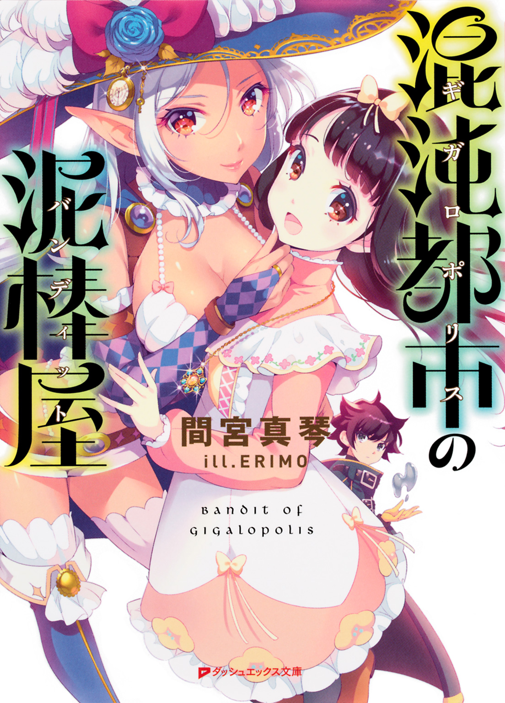
この本は縦書きでレイアウトされています。
また、ご覧になる機種により、表示の差が認められることがあります。
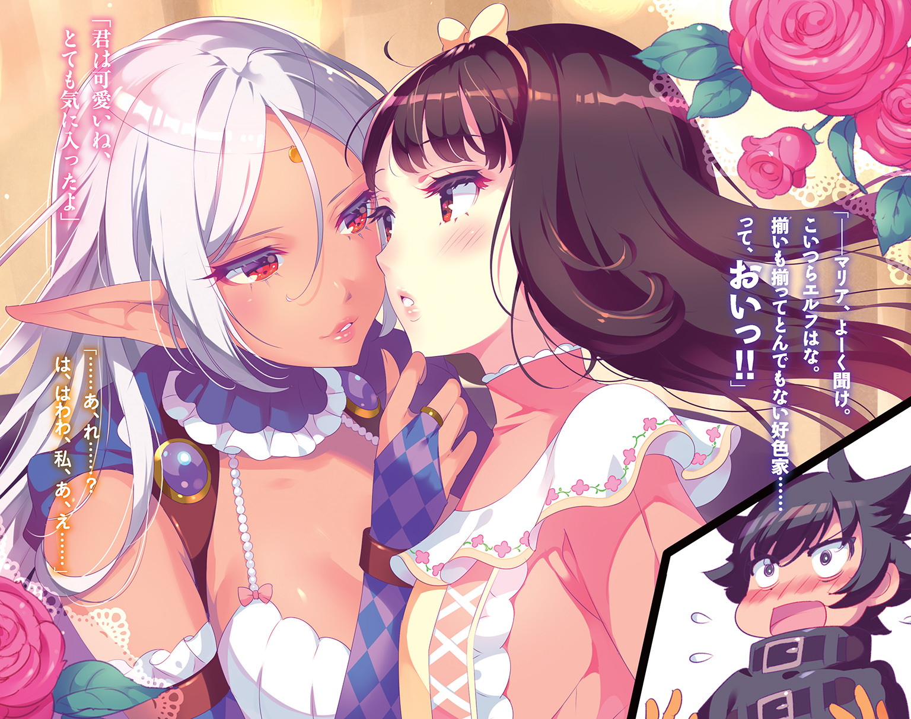
 ダッシュエックス文庫DIGITAL
ダッシュエックス文庫DIGITAL
混沌都市の泥棒屋
間宮真琴
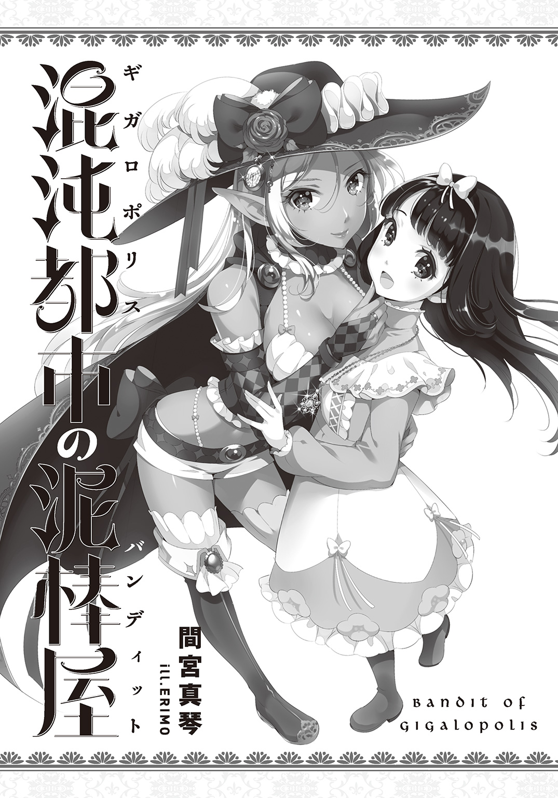
序 章 泥棒は月夜に空を飛ぶ
今夜は月が綺麗だ。少年はぼんやりとそう思った。
黒曜石の如く輝く双眸に、やや癖のある黒髪、それから全身を覆うぶかぶかのコート。頭の先から爪先まで黒ずくめの少年は今、天にも届きそうな超高層ビルの上にいる。いや、より正確に言えば、その屋上に組みあげられた巨大な木製やぐらの上に、だろうか。
見上げれば満天の星、辺りを見回せば静寂の空、そして、真下へ目を向ければ――怒り狂った男たち。
「やいやい、小僧、いい加減観念したらどうだ！ さっさと降りてこい！」
「大人しく社旗を返しやがれ！ そうすりゃ命だけは助けてやる！」
「こちとらてめえのせいで残業だ！ かかあに叱られちまうじゃねえか！ 責任とれ！」
今にも殴り込まんばかりの勢いで荒ぶる群衆。無論、百メートルも上方の少年に拳が届くはずもないが、下を囲まれている少年にも逃げ場はない。結局のところ動くに動けず、少年は諦めの溜め息をついては、手に持ったやたらと巨大な旗を弄り回している次第であった。
と、そこへ、屋上の搭屋部分から一人の大男が現れた。羽織った紺色の法被には、でかでかと『頭』と『領』の二文字が編み込まれている。
「おう、お前ら、随分な騒ぎじゃねえか！」
その轟くような大声を耳にした瞬間、罵詈雑言の限りを浴びせていた男たちが一斉に振り向き――一転して歓喜の声を上げた。
「「「親分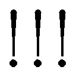」」」
沸き上がる歓声に片手で応えつつ、頭領と思しき大柄の男はずんずんとやぐらへ近づく。すると男衆の中から、ねじりはちまきをした瘦せ男がそそと走り寄ってきた。
「すいやせん親分、この夜更けにわざわざ......」
「構わねえよ。それより、まだ捕まえられねえのか。――その盗人の餓鬼ってのは」
「そ、それが、あの小僧、猫みたいに身の軽い奴でして......」
へこへこと頭を下げた瘦軀の男は、それから慌てて付け加える。
「へへ、でも心配いりやせんよ。こうしてやぐらのてっぺんに追い詰めやした。梯子外されちまったんで登りようがねえですが、どうせ逃げ場もありゃしません。馬鹿と金相場は高いところが好き、されど落ちれば真っ逆さま、ってね。えへへ、博識でございやしょう？ すぐに引きずりおろして依頼主の名前吐かせてやりやすよ」
などと意気込む瘦せ男。だが頭領は渋い顔をして首を振った。
「やめとけ。見たところありゃ〝泥棒屋〟だ。どこのどいつに雇われたか知らねえが、依頼主の情報は死んでも吐かねえ奴らよ」
「じゃ、じゃあどうするんですかい!? まさか、このまま逃がしてやるんじゃ......」
瘦せ男が不安げな顔をすると、頭領は喉の奥で不吉な笑い声を上げ始めた。
「ククク......逃がすぅ？......逃がすだとぉ......？ クックック、それもまた一興......って、んなわけあるかーい！ 俺たち〝デイダラ組〟のでえじなでえじな社旗を盗んだ小僧だ、ギッタンギッタンのコンクリ漬けにせずして気が済むものかあ」
「ぃやったぁ！」
「さっすが親分！」
「えげつねえっす！」
熱い報復を宣言する頭領に、下っ端一同は手を叩いて大喜び。
「で、でも、どうするんですかい？ あれは世界樹の角材で組んだやぐらですぜ!? 斬り倒そうにも並のノコギリじゃ歯が立たねえですが......」
ただ一人冷静な瘦せ男が尋ねると、頭領はにやりと笑う。
「んなみみっちいことしなくとも、もっと手っ取り早い方法があるじゃねえか」
「ま、まさか......発破を使う気ですかい!?」
「おう、そのまさかよ！」
「で、でも親分、あの物見やぐらはデイダラ建設創立時に組み上げた伝統のもので......」
なおも及び腰な瘦せ男の言葉を、頭領は威勢よく遮った。
「ええい、わかっとるわい！ だが背に腹は代えられん！ あんな小童に社旗を盗まれたとあっちゃあ他の組合どものいい笑いものだろうが！ ほら、おめえら！ とっとと持って来い！」
頭領のがなり声と同時に再び搭屋の扉が開いて、階下から大きな木箱を抱えた男たちが現れた。
「お待たせしやした、親分！」
男四人がかりで運んで来た箱の中には、導火線のついた細長い円筒形の筒。側面には、見るからに危険物ですと主張するような髑髏マークが印されている。
「ひ、ひええ......これは......！」
「ククク......よーし、設置いそげえーい！」
号令と同時に男たちが木箱に群がり、発破をいそいそとやぐらの根元へ設置していく。その様子を悠長に観察していた少年は、作業が終わりかけたところでようやく口を開いた。
「おーい、頭領さーん！」
やぐらの上で社旗をちらつかせながら、のんびりした口調で呼ぶ少年。デイダラ組の一派がこちらに気づいたことを確認すると、今度は下を指差して尋ねた。
「そいつは何だーい？」
すると、まるでそう聞かれるのを待っていましたと言わんばかりに、頭領は不敵な笑みを浮かべてみせた。
「クックック、見てわからねえか？ 発破だよ発破、爆弾だ！ それも、そんじゃそこらのしけた火薬とはわけが違え！ デイダラ建設の特別製！ ドドココ砂漠に住むガラガラサラマンダーの脾臓から精製した『Ｄ４爆弾（※特許申請中）』だぜえ！ 豆粒ほどの量でもどっかーんよ ......どうだ？ ちびったか？ なんなら代えのオムツでも持って来ようか？ ガッハッハッハッハ」
身振り手振りを交えて自慢げに説明する頭領。だが少年は、ふうん、となんてことなさそうに呟くだけであった。
「いや、むしろ安心したよ。ケチってしみったれた花火にするんじゃないかと心配だったんだ」
「んなっ！ なんだとぉこの餓鬼ィ......！」
こめかみに青筋を浮かべながら歯ぎしりする頭領を、少年はなおも挑発する。
「だってそうだろう？ しょぼい爆竹程度でご自慢のやぐらが吹っ飛んだなんて知れたら、それこそお笑い種だぜ？ それともコイツは見かけ倒しのオンボロだったってことかい？」
「う、うぐ、言わせておけば......いいだろう！ おいお前ら！ もう一箱......いや、二箱......ええい、あるだけ全部持って来い」
頭領が躍起になってそう命ずると、少年はにやりと笑った。
「ああ、それがいいそれがいい。花火はでかいに限る」
それだけ言って、少年はまた旗の端っこを弄り始める。その生意気なリアクションが不満だったのか、むすっと顔をしかめる頭領。と、丁度その折、〝Ｄ４爆弾〟の設置作業にあたっていた部下たちが戻ってきた。
「親分、設置、完了しやした！」
「いよっしゃ！ ご苦労！」
「こちら、スイッチになります！」
「ウム！」
下っ端から手渡されたのは、ひと目でそれとわかる遠隔爆破用スイッチ。言わずもがな、それは全員が安全な所へ下がった後で爆破できるという便利な代物である。......が、すっかり頭に血が上った頭領は、受け取った途端に人差し指を振り上げるのだった。
「ぐははははは！ あの世で宣伝しな！ 『デイダラ建設の花火は世界一』ってな あソーレ、ぽちっとなぁ！」
「ちょ、親分まだ早......そ、総員退避！ 退避～！」
無駄に大きな赤のボタンがへこんだ瞬間、一斉に特製爆弾の導火線に火が灯る。もはや賽は投げられた。運命の爆発は、もうどうにも止まらない。
そしてとうとう、炎が円筒形の爆弾に到達して――
だが、爆発が辺りを吞み込まんとしたその刹那、少年は不意に立ち上がると、社旗を抱えたままやぐらのてっぺんから垂直に跳躍した。
「あっ、あいつ、飛びやがった！」
思わず身を乗り出す男たち。ものの一瞬で、少年は飛翔したかと錯覚するほどの高度まで跳び上がったのだ。だが、唯一頭領だけは冷静に状況を見極める。
「いいや、違うな。ありゃ跳ねただけだ」
頭領の言う通り、少年は確かに驚くべき跳躍力を見せた。だがそれはどこまで行っても所詮は跳躍でしかなく、翼のない少年には必然の落下が待っている。
「ハハハハハ、馬ァ鹿めェ！ よりにもよって真上なんかに跳びやがった！ それじゃあ何の意味もねえ！ カリっと中まで焼けちまいなァ！」
頭領が野蛮なにやけ面を浮かべたその時、とうとう〝Ｄ４爆弾〟が炸裂した。
大気すらわななかせるほどの、とてつもない轟音と爆風。と同時に、尋常ならざる業火が宵闇を紅に染め上げる。灼熱の触手が伸びる先は、もちろん真上にいる少年だ。しかし、膨れ上がった炎の舌が彼を捕らえる直前、少年は奇妙な行動に出た。――抱えこんでいた特大社旗を、ばさりと宙空で広げたのだ。
傍から見れば、熱と恐怖で頭をやられたとしか思えないような行為。けれどその狙いに気がついた頭領は、大きく息をのんだ。
「ま、まさか、あの餓鬼――！」
ふわり――と、重力に逆らって浮き上がる少年。デイダラ一味が見つめる中、少年の体はそのままぐんぐんと上昇していく。そうして数秒もすれば、少年はすっかり空の星々に紛れてしまった。特殊な魔法か、固有の超能力か。否、彼を運び去ったのは、爆発の熱により発生した上昇気流。社旗を気球代わりにすることで、少年は何者も届かぬ空の彼方へと逃亡したのだ。
爆発の余波が収まった後、空っぽになってしまった屋上に取り残された頭領は、煤だらけの顔で呆然と呟くしかなかった。
「――め、めちゃくちゃだ......」
一方その頃少年は、遠く離れた空の上。持ち易いよう結んでおいた社旗の端を握り、今はパラシュートの要領で悠々と空中遊覧飛行に興じていた。そんな少年は、風に乗って届いた頭領の声を聞いて、独りにやりとほくそ笑む。
「へへ、めちゃくちゃだって？ ......何を言ってるんだ、今更よお」
呟く少年の横を、何か巨大なものが飛び去って行った。それは六枚の翅を持つ超ド級のドラゴン。山脈ほどもある巨体で泰然と羽ばたき、下界を睥睨しながら月夜の空を散歩している。見る者に畏怖すら与えるその完成された体軀は、生物というよりもむしろ数千の時を生きた霊木のそれに近かった。そう、龍とはただそこに在ること、それだけで既に常識を凌駕した神秘の存在。世界の理の一部なのだ。......しかし、少年がそれで驚くかと言えば、答えは否。なにせ、彼の周囲を飛び回っている珍物は、ドラゴンだけではないのだから。
少年のすぐ下を、箒にまたがった魔女の一団がお喋りしながら通り過ぎて行った。かと思えば、真上には最新鋭の無音エンジンを搭載した超大型全自動ジャンボジェット機が飛行機雲を残して飛び去って行く。右隣では幽霊と思しき半透明の人型が滑空し、左隣には明滅を繰り返しながら蛇行する空飛ぶ円盤。
奇妙奇天烈摩訶不思議、珍奇珍妙珍道中。夜空を彩るのは、奇々怪々なイロモノばかり。見ているだけでもくらくらしてきそうだが、だからと言って地表に癒しを求めても意味はない。
東に見えるは華やかにライトアップされた電波塔。西にそびえるは同じ高さの巨大樹。北には馬鹿でかい玩具のブロックを積み上げただけのお城がそそり立ち、南の空で雲を突きぬけている植物は豆の木だろうか。そんな何もかもをごちゃまぜに詰め込んだかのような街並みが、見渡す限りどこまでも、際限なく続いているのだ。そう、地平の果てのその先まで、地表は一つの大きな街と化していた。
普遍、常識、通常、普通......眼下の光景にそんな言葉を求めるなど、笑止千万すぎて臍が茶を沸かす。いいや、本当に臍で茶を沸かして見せたところで、失笑の一つでも貰えればお慰み。今更その程度の奇行を面白がる観客などどこにいるというのか。
――ドラゴン？ それがどうした。
――神秘？ 腐るほどある。
――世界の理？ そんなもの、とっくの昔に壊れてる。
なぜなら、ここは――
世にも奇妙な珍物に囲まれ、自らもその一つとして夜空を舞いながら、少年は静かに呟いた。
「そういうもんだろ、ここは――〝混沌都市〟ってのはよお」
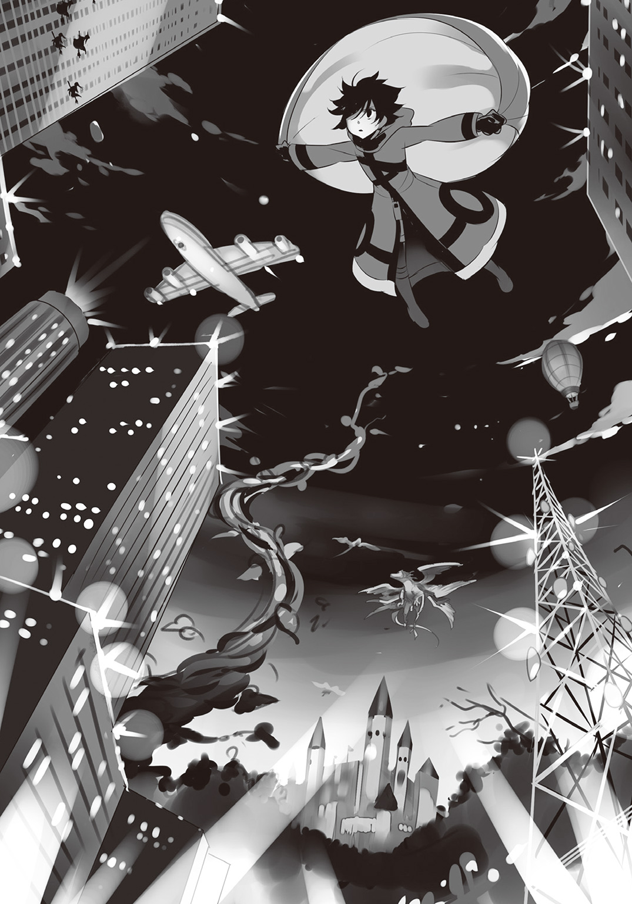
第一章 少女の名はマリア
「へいへい、道行く旦那様にお嬢様、朝のお食事は済みましたかな？ 今ならチャバネドラゴンの肝臓が十キロなんとカラル銅貨三枚！ 今日のところは特別にタマムシゴキブリの脾臓もおつけしてお値段なんと――」
「寄ってらっしゃい見てらっしゃい！ 今日の目玉はなんと言ってもこれ！ グレノアス地区の錬金術師が腕によりをかけて錬成した恋の妙薬！ 一滴垂らすだけで男も女も一撃コロリ！ ただし用法用量を守らないとそのまま昇天しちゃうので要注意！ さあさあ買った買った――」
「ねえーん、そこのイケメンなおにーさん。見てこれ、わかる？ TR-Z005892Yよ！ え？ 知らない？ 自律稼働型の医療用ナノマシンよ！ ひとさじ飲むだけで体中のウイルスみーんな分解しちゃうんだから。健康な男の人ってもてるわよ～。ねえ、お安くしとくから――」
「ホムンクルスー、ホムンクルスはいらんかねー。できたてほやほや、あっつあつだよー。今ならお好みの姿に形成しちゃうサービスつき！ 一匹買ったらもう一匹ついてくるおまけもあるよ！ えーホムンクルスー、ホムンクルスはいらんかね――」
売り子たちの声が交錯するここは、混沌都市第一億四千五百八十八番街――通称〝クインチェスト〟の東部に位置するオックスボンド街道。またの名を「闇鍋大通り」とも呼ばれる全長数百キロにわたる路地の両脇には、いずれ劣らぬ個性的な露店がひしめきあっている。
と、そんな歩くだけでも困難な活況の中を、こなれた様子で進む少年が一人。おしくらまんじゅうさながらの雑踏をものともせず、真っ黒なコートをはためかせながら歩いている。
そんな黒づくめの少年は、一つの小さな店の前で足を止めた。軒に吊り下げられた看板には、気色の悪い緑色をした爬虫類の絵と共に『毒ヤモリの尻尾亭』との添え書きが。そんなおかしな看板も厭わず、少年はまっすぐ両開きの扉を押し開ける。
カラン、と小気味よく鳴る入口の鈴。こぢんまりとした薄暗い店内には、男が五人。
一人は奥のカウンターでコップを拭くバーテン。もう一人はカウンターの端で杯を仰ぐみすぼらしい老人。そして残る三人組は、入口近くのテーブルに陣取って少年の挙動をちらちらと見ている。そんな視線さえ涼しい顔で受け流して、少年はカウンターに腰を下ろすなり取り繕った渋い声で告げた。
「マスター、いつもの」
そのコールが店内に響いた瞬間、三人の男たちは顔を見合わせると――
「ぶわははははは」
「でました、『いつもの』！」
「あっはっはっは、何度聞いてもたまんねえなあ！」
腹を抱えて一斉に大笑いを始めたのだった。
「ひー、こりゃあ最高の酒のつまみだぜ！」
「がきんちょ風情が、格好つけやがってよお！」
「おいおい、お前らあんまし笑うなって。そりゃそう言うより他にねーだろ。だって、あいつが頼んでるのはよお――」
折り悪く、丁度その時バーテンの手から、一杯のジョッキが少年の前に差し出された。
「〝いつもの〟ミルクでございます」
「うぐ......マスター、い、今は......」
「「「あーっははははは」」」
案の定爆発する三人の笑い声。少年は頰を真っ赤に染めながらぶるぶると背中を震わせ、そしてとうとう振り向いた。
「うるせえうるせえ！ 飲んだくれどもめ！ ここはミルクが一番旨いんだよ！」
「おーおー、怒った怒った」
「格好つける前にまず一人前にならねえとな」
「そうだそうだ、泥棒屋を名乗るなら仕事も選ばないと駄目だぞ、坊主。今回もまーたやっすい仕事だったんだろう？」
精一杯の怒声を上げる少年だったが、三人組はかえって嬉しそうににんまりするばかり。
「余計なお世話だってんだ！ そもそも、毎度毎度あんたらのかみさんへのアリバイ作りを請け負ってやってるのは俺だぞ！」
「うへへ、そん時はまた頼むぜぇ、大泥棒さんよ」
「うんうん、庶民に寄り添える泥棒屋って素敵だよなあ」
「いよっ、クロ坊！ 世界一っ！」
「けっ、調子のいいこと言いやがって......」
と、そんな酔っ払いに絡まれる少年の隣で、老人がクヒクヒと不気味な笑みを浮かべた。
「おい、見せもんじゃねえぞ」
膨れ面でギロリとガンを飛ばす少年。けれど老人は意に介した様子もなく、欠けた前歯を覗かせながらニタニタ笑いを続ける。
「クヒヒヒ、そう怒るな。若いもんは気が短くていかん。......で、どうだった――クロ？ 今回の仕事は？」
老人が横目で尋ねると、〝クロ〟と呼ばれた少年はむすっとした表情で杯を仰いだ。
「ふんっ、どうもこうもあるか！ まーたおかしな依頼摑ませやがって！ 何が『大工さんの家からちょっとばかし旗を拝借してこい』だ！」
「うん？ 間違ってはいなかったろう？」
「全然違うわ！ 行ってびっくり、トーラスの街を仕切ってるデイダラ建設だぞ!? それも、よりにもよって創業記念の特製社旗ときたもんだ！」
「クヒヒヒヒ、大工は大工だ。違うか？」
「そんな建前赤ん坊にだって通用しねえよ。あいつらただのヤクザ稼業じゃねえか！ 危うくコンクリ漬けにされるところだったぜ！」
「ほおん、そりゃあすまんことをしたのお」
と、言葉とは裏腹に、にやついたままの老人。
「でものぅ、お前さんがもうすこーしばかり宣伝代を弾んでくれたら、わしとしても真っ当な仕事を持って来ようって気にもなるんだがのう？」
「この糞ジジイめ......足元見やがって......」
「クヒヒヒヒ、このご時世、自分を売り込めない泥棒屋なんざ即廃業よ。情報屋に金ばらまいてでも宣伝しなきゃのう」
「はっ、お前ら情報屋がそういう風潮を作り上げたんだろうが。まったく、金が絡む時だけは結託しやがって」
老人は否定せずに杯を傾けた。
「まあまあ、若者がそう急くなて。ほれ、詫び代わりに新しい依頼を持って来てある」
依頼、というその言葉に、クロはぴくりと反応した。
「......今度はまともなんだろうな？」
「ああ、立派なもんじゃぞ。ほうれ」
そう言って手渡されたのは、一通の真っ赤な封筒。それも、そこらへんの雑貨屋に置いてあるようなちゃちなものではなく、艶のある高級な厚紙で作られている。......ただ、宛名と差出人名はどこにも記されていなかった。
「なんだ......これ？」
裏表を確認しながら尋ねると、老人は早く開けるよう顎でしゃくる。そうして促されるがまま封を開けたクロの眼に、十一個の文字列が飛び込んで来た。
『泥棒屋の晩餐会の招待状』
これにてようやく明らかとなった封筒の中身。だがその本文へ目を移す前に、少年は鼻で笑って手紙を畳んでしまった。
「へえー！ 泥棒屋を集めてパーティかあ！ うわー楽しそう！ ......とでも言うと思ったか、くだらねえ！」
皮肉っぽく嘲笑いながら、クロは封筒を突き返す。すると、老人はさも残念そうに呟いた。
「おいおい、最後まで読まんのか？ どうやら参加するだけで結構な大金が出るようなのだが、それなら仕方がないのう......」
「た、大金だと......!?」
大慌てで書状を開き直すクロ。にやつく老人の視線を受けながらも、齧りつくように読み始めた。
泥棒屋の晩餐会の招待状
拝啓 親愛なる泥棒屋の皆様方。春の日差しもうららかな今日この頃、皆々様方におかれましては、その辣腕益々以て冴えわたり、時下一層ご繁栄のこととお喜び申し上げます。さて、当方におきましては、日頃ご厚誼賜っております皆様方へ些かなりとも謝恩の微意を表したく、下記により晩餐会を催したく存じます。ご多用中のところ誠に恐縮ではございますが、何卒ご参加賜りますようお願い申し上げます。
敬具
記
日時 《マイアの月／天頂にて月満ちる晩》
会場 《フリゲートの街／旧領主城にて》
追伸１：記念品配布について
・当晩餐会を記念する品として、開催地入口にてオルツ金貨百枚の配布を予定しております。
・また、晩餐会本会場においてもオルツ金貨三百枚を追加で配布予定です。
追伸２：参加資格について
・泥棒屋の身分証明が困難であるため、他の泥棒屋から盗んだ宝物の提示を以て参加資格に代えさせていただきます。お持ちいただいた盗品につきましては、開催地の仮設ゲートにて提出をお願い致します。お手数とは存じますが、皆様の敏腕の前には朝飯前かと存じますので、あしからず。
※なお、万が一、当晩餐会への参加希望者により宝物を盗まれてしまった場合も、会場までお越しいただければ晩餐会終了後に返還致しますのでご安心ください。
「か、会場に行くだけでオルツ金貨百枚......!? しかも参加すりゃ更に三百枚だと......!? 三カ月は飲み食いに困らない額じゃねえか!?」
手紙を読み終えたクロは呆けたように呟く。混沌都市には数多くの貨幣が存在しているが、高純度で有名なオルツ金貨はその中でも相当な高額貨幣として扱われているのだ。
「良かったなあ、開催日は今月の満月の夜。つまり四日後の晩だ。フリゲートなら急げばここから半日、余裕で間に合う。ついてるのう、お前さん」
老人が白々しくそう言うと、クロは甘い誘惑を振り払うかの如くせせら笑ってみせた。
「へ、へへっ、こ、こんなもんに釣られるかよ！ 話が旨すぎるじゃねえか！ というか、一体どこのどいつがこんな手紙を出したんだ？」
「さあて、それはわしにもわからん。他の情報屋づてに預かっただけじゃからのう。聞くところによると、代理人を通してここいら一帯のめぼしい情報屋に数千通は同じ手紙が委託されたらしい。泥棒屋に渡すように、とな。そんなわけで主催者殿の正体は不明じゃ。......もっとも、身元を隠して依頼することなんざ珍しいことじゃないだろうよ」
「それにしたってうさんくせえ。だいたいなんだ、この参加資格。『他の泥棒屋から宝物を盗むこと』って。しかも盗まれた奴でも参加さえすりゃ後で返還する？ 意味ねえじゃねえか」
「どうやら主催者殿は是が非でも泥棒屋を集めたいようだの。案外ただの寂しい老人かもしれんぞ？ わしのようにな」
老人のそんなジョークに、クロはふん、と鼻を鳴らした。
「んなわけあるか。......なんにしろ、こんなお遊びに付き合う気はねーよ。生憎、盗まれて困るようなお宝なんざ一つも持ってねえ。お陰で巻き込まれることもなさそうだしな。......じゃあな爺さん。俺はもう少し寝る。今度はちゃんとした依頼か良い女でも紹介してくれよ」
そうして手紙を突き返したクロは、すたすたと去っていく。その背中を見送りながら、老人はまたも不気味な声で笑うのだった。
「クッヒッヒッヒ、そういうセリフは酒が飲めるようになってから言うもんじゃよ」
※※※※※※
何処かで銃声がして――誰かが慟哭した――何かが咆哮して――世界が断末魔の叫びをあげた。
夜空には絶えず悲鳴が響き渡り、あちこちで火の手が上がっている。道という道は倒壊した建物に押しつぶされ、大気を満たすのは血と鉄の混じり合った悪臭。
満月が照らすその小さな街は、混乱と戦火に包まれていた。
そんな地獄の如き混沌の坩堝に、一人の少年がいた。まだ十四歳ぐらいだろうか。極黒の戦闘服に身を包んでいるが、その頭髪は白銀の微光を放っている。――見る者が見ればすぐに気づくだろう。少年の戴く月光色の輝きが、尋常ならざる純度の魔力が可視化したものであることに。
そんな奇妙に矛盾した格好の少年は、音すら置き去りにして戦火の中を駆ける。左右に視線を散らしている様子からして、どうやら何かを探しているらしい。
と、その時、少年の足がはたと止まった。彼の視線の先には、石塀に囲まれた二階建ての豪邸。屋根の一部が崩落してはいるものの、この騒乱の中で原形を保っている数少ない建物だ。......どうやら少年は直感したらしい。探している物がここにある、と。
瞬間、少年の髪をヴェールのように覆っていた魔力が波打ち、瞬く間に全身へと広がった。そして大きく跳躍した少年は、大胆にも天窓を突き破り、無数のガラス片と共に室内へとその身を躍らせる。――が、その先には敵意をむき出しにした四人の男が待ち構えていた。
腰から拳銃を取り出す者、背中の長刀を抜き放つ者、両手に魔力を込める者、全身に纏った強化外装を起動させる者......四者は瞬く間に独自の戦闘スタイルにて迎撃準備を整える。いずれも迷いのない迅速な反応。――けれど、少年にはそもそも準備など必要なかった。
パチリ、と電気が弾けるような音がして、少年の纏う銀光が膨れ上がる。そして周囲を舞うガラス片に流れ込んだかと思うと、その無数の欠片が散弾の如く部屋中に弾け飛んだ。
――得物を粉砕し、魔術防壁を貫通し、鋼鉄の装甲を切り裂きながら、ガラス片は四人の全身に食い込み、無数の風穴を穿つ。『ただのガラス片が、なぜ？』などと疑問を持つ者はもういない。彼らは既に、物言わぬ肉塊に成り果てていたのだから。
そうして少年は隣室へと歩を進める。だが扉を開けた瞬間、新手の男が三人、一斉に襲いかかって来た。意表を突いた三方向からの同時攻撃。恐ろしく統制された連携。避けようのない完璧なタイミングで振り上げられたのは、魔力により強化された三本の大剣。
ほんの一秒――それだけあれば少年の全身を余さず切り刻むことができる。
勝利を確信した襲撃者たちは内心にやりとほくそ笑み――コンマ一秒後、三人同時に首を刎ねられ絶命した。
「部隊章のない黒一色の戦闘服――てめえも《ネームレス》か......」
最後に残った大男はぼそりと呟く。その声には抗い得ぬ恐怖が滲んでいた。無理もない。たった寸刻のうちに、三人の屈強な同胞の首が素手で刈り落とされたのだ。それでも逃げようとしない大男は、少年と眼が合った刹那、腰に提げた二本の長刀を眼にも留まらぬ速さで引き抜いた。――だが、それはあくまで通常を基準とした時の話。音すら置き去りにするほどの神速を前にすれば、男のその動作など止まっているにも等しい。薄銀色の閃光が瞬いたと思った次の瞬間には、抜刀した両腕が真っ二つに切断されていた。
「......あいつはどこにいる？」
激痛に悶える大男の首を鷲摑みにし、少年は静かに問う。声変わりすら果たしていない幼い声。それが一層、少年の異常さを引き立たせる。
「......隣の......部屋だ.........」
窒息寸前の大男は、ぜえぜえと荒い吐息をつきながら答えた。それだけ聞くと少年は力を緩める。直接手を下さなくとも、失血多量で死ぬのは眼に見えていたからだ。
けれど、少年が手を離す直前に、男は小さく呟いた。
「へへ......お前は確かに速い――だがな、今回は遅すぎたぜ」
その言葉を聞いた瞬間、少年の眼に宵闇よりもさらに黒い殺意が滾った。抑えようのない殺人衝動が月明かりの魔力を波立たせ、膨れ上がった光は残らず男の体内へと送り込まれる。人体の許容量を遙かに超える魔力を一瞬のうちに注ぎ込まれた男は、まるで膨らませすぎた風船の如く血肉をまき散らしながら四散した。
飛び散った血飛沫が少年の顔を赤黒く染め上げる。返り血と肉片とに彩られながら、なおも戦慄するほどに美しい光輝を湛える少年の相貌は、今や鬼神と見紛うほどに凄惨な、一つの死の具現となっていた。
そんな鬼気迫る形相の少年は、返り血を拭おうともせず隣室へと向かう。取っ手を押し開けた先で最初に眼に入ったもの、それは――血の海に横たわる一人の少女だった。
「――葵！」
その姿を認めた途端、あれだけ冷酷な殺戮劇を繰り広げていた少年が、感情を顕にして駆け出した。
「葵、しっかりしろ、葵！」
少女の傍らに膝をついた少年は、大声で呼びかけながらその全身へ視線を走らせる。かろうじて心臓は動いているが、それも鼓動と呼ぶにはあまりに弱々しく、蒼白な頰からは生気がごっそりと抜け落ちていた。
「頼むよ......眼を開けてくれ......！」
血の海に跪き、頭を垂れて一心に祈る少年。その姿はまるで、敬虔なる神の信奉者か、さもなくば絞首台を前にして懺悔する死刑囚のようでもあった。皮肉にも、少年に年相応の無力な子供へと回帰することを許したのは、唯一絶望だけだったのだ。そんな彼の切なる祈りが天に届いたのだろう。少年が見守る眼前で、閉ざされていた少女の瞳がうっすらと開いた。
「......れ......ん............」
少女はそっと、少年の名前を呼ぶ。だが肺をやられているらしく、可憐な唇から零れたのは今にも消えてしまいそうな擦れ声だった。
「あ、ああ！ そうだよ、俺だ！ ごめんな、遅くなって......」
徐々に冷たくなっていく少女の体を、少年は縋りつくように抱きしめる。
「でももう大丈夫だ、何も心配ない。北と東はツバキ隊長が制圧した。南ブロックもついさっき陥落したよ。ゲルニアの総督府はじきに落ちる。俺たちの勝ちだ！」
少年の声が聞こえているのかいないのか、少女は無言のままか細い腕を持ち上げると、その指で優しく少年の頰を撫でる。どうやら返り血を拭おうとしているらしい。
「さあ、葵、家へ帰ろう。お前の傷を見たが、全然大したことはないよ。ほんの掠り傷さ」
言葉とは裏腹に、少年の声は震えていた。死を迎えようという少女よりもずっと、彼は恐れ慄いていた。
「だからお願いだ......葵......俺を置いていかないで......」
血まみれの少女は、泣き出しそうなほど怯えた少年の眼を見つめる。星空をそのまま丸めたかのような、煌めく黒の瞳。濁りのない二人の双眸が宙空で交わったその時、少女はにっこりと、どこまでも無邪気に微笑んだ。
「葵......？」
そうして一言も紡がれぬまま、少女の白い腕が、静かに床を打った。
※※※※※※
コン、コンコン、コン。
独特なノックが室内に響き渡る。寝台に横たわっていたクロは、ゆっくりと身を起こした。
「......またこれかよ......」
これでもう何度目だろうか。微かに震える手を額へ当て、クロはしばし眼を閉じた。瞼の裏にはまだ、夢で見た紅い血がこびりついている。
コン、コンコン、コン。
そんな少年の事情などなんら顧みず、迷惑なノックは続く。手の震えが収まったことを確認した少年は、これまで幾度となくそうしてきたように、今見た悪夢を記憶の奥深くに押し込めてドアへ向かった。
「はいはい、今出ますよっと......ったく、飯もまだだってのに......」
僅かに開けたドアの先に待っていたのは、いつもの老人のにやけ面だった。
「クッヒッヒッヒ、こんばんは」
「また爺さんかよ......言っとくが、さっきの晩餐会の件はなしだぞ」
先んじて釘を刺すと、老人はにんまり笑う。
「おいおい、わしはまだボケちゃいない。わかっとるさ」
「ほお、じゃあまともな要件なんだろうな？ 依頼人の紹介か？ それとも良い女？」
「クヒヒヒ――その両方だ」
言うが早いか、老人はがばっとドアを開く。開け放たれた扉の先には、それまで見えなかったもう一人の人物が立っていた。
一点の穢れもない無垢な瞳に、ぷっくりと膨らんだ薄紅色の唇。柔和な微笑みを湛えた頰にはうっすらと朱が差し、艶やかな黒髪は毛先まで手入れが行き届いている。首筋に金のチェーンを煌めかせたその少女は、まさに〝深窓の令嬢〟を絵に描いたような容姿をしていた。
クロはほんの一瞬、見知らぬ少女に眼を奪われる。少女の容姿が優れているからと言うよりも、彼女の顔に夢で見た少女の面影を見たのだ。けれどそれは錯覚。クロはすぐに老人の方へ視線を戻す。が――
「......お、おい、ジジイ、こいつは――って......」
少女に気を取られていた隙に、老人はいつの間にか姿を消していた。
「くそ......ジジイのくせに逃げ足だけは速いな......」
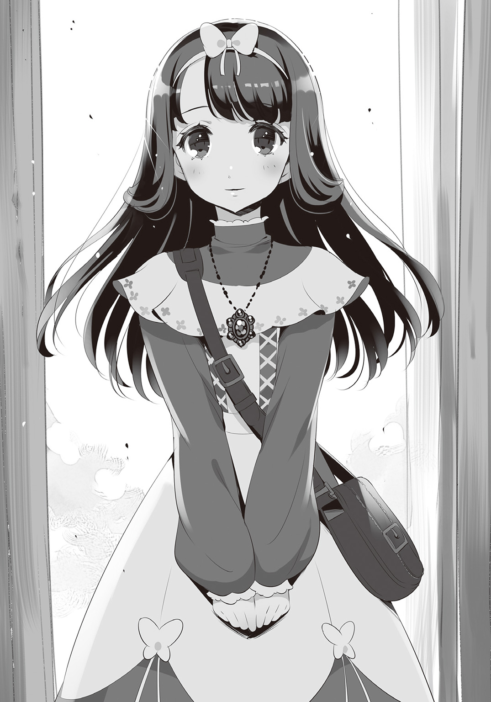
ぶつくさと悪態をつくクロ。その様子を、少女はまじまじと観察している。
「あー......えっと......あ、あんた、とりあえず入んな。取って食ったりはしないから」
その視線を感じたクロは、首の後ろを搔きながら少女を招き入れた。
「ほら、かけてくれ」
粗末なテーブルを挟むようにして置かれた二つの椅子。そのうちの一方を指し示すと、少女は素直に従う。あって当然の警戒心が薄すぎることに違和感を覚えつつ、クロは平静を装って対面に腰かけた。
「さて、それじゃあとりあえず、あんたの名前から......」
偉そうに足を組み、妙な角度に首を曲げ、やたらと格好をつけて切り出すクロ。初対面の相手に決して舐められてはならない。それがこの混沌都市で生き抜くための基本......だったのだが、クロはやむにやまれぬ事情から言葉を切る。目の前の少女が、心ここに在らずといった様子で部屋中を眺め回していたせいだ。
「......そんなに珍しいか？ 何もない部屋だが」
「はっ、すみません......つい......」
思わずクロが尋ねると、少女は顔を赤くしてうつむいた。だが自重する気はないらしく、部屋のある一画を指差して言う。
「実は、あれが気になって......」
その示した先にあったのは、部屋に一つしかない窓。ただし、半分は割れてなくなっているため、〝窓〟と呼べるかはかなり怪しいラインではあるが。
「ふん、みすぼらしくてどうもすいま――」
「あれ、すっごくおしゃれですね！」
「......は？」
嘲笑されたものと思い込んでいたクロは、予想外の言葉に固まってしまう。
「なんていうか、すっごく芸術的です！ 素敵ですね！」
「お、おう、よくわかってるじゃないか......」
少女の見た目から抱いていた富貴な印象と、実際のほんわかした雰囲気とのギャップに戸惑いながら、クロは最初よりもずっと肩の力の抜けた表情になっていた。
「あんた、まるでいいとこのお嬢さんみたいだな。どっから来たんだい？」
「はい。サンディスリングスから参りました、マリア＝イスラフィルと申します！」
「ほお！ サンディスリングスって言えば、本当に超一等街じゃねえか！ すっげえ！」
目を丸くして驚いたクロは、ハッと我に返ると小さく咳払いした。
「でもあんた、そういうのはホイホイ他人に話しちゃ駄目なんだぜ。ここはあんたの街とは違う。サンディスリングス出身だ、なんて自己紹介は、攫ってくださいと言ってるようなもんだ」
「そんなことないですよ！ サンディスリングスを出たのは初めてだと言ったら、みなさんすごく親身に接してくれました！」
マリアと名乗った少女は、クロの忠告に憤慨する。だが、クロは反論されたことよりも別の部分にひっかかったようだ。
「ちょっと待て、〝みなさん〟だと？ そういやあんた、どうやって俺のところまでたどり着いたんだ？ 自分で言うのも癪だが、俺の斡旋をしてるのなんざあの爺さんぐらいなもので......」
「ですから、他の情報屋のみなさんが教えてくださったんです。最初はナナシノゴンベエさんという方で、その次はジョン＝ドゥさん、それからアラン＝スミシーさん。後はタナカナニガシさんとかトクメイキ＝ボウさんとか......」
「す、ストップ！ もういいから！ お前、そいつらの名前に疑問を持たなかったのかよ!?」
たまらずクロが遮るも、マリアは首をかしげるばかり。
「名前に、ですか？ ......ああ！ いろんなお名前があって素敵でした！ 他にもアイウエオさんとかカキクケコさんとか、個性的な方が沢山おられましたよ！ 特にアアアアアさんなんて五人もいらっしゃって。不思議ですねえ。何か流行りのお名前だったのでしょうか？」
「こ、このお嬢さんは......」
少女のあまりのとぼけ具合にクロは絶句する。いかに何でもありの混沌都市とはいえ、流石に各人の名前ぐらいはもう少し真っ当なもの。ゲームのキャラクリエイトではあるまいし、そんなふざけた偽名を頭から信じるなど、世間知らずここに極まれりとでも言うべき愚行である。
「......で、金は？ 金は払ったのか!?」
ここが要点とばかりに恐る恐る尋ねるクロ。少女の口から出たのは、彼が予感していた通りの返答だった。
「勿論ですよ！ 情報料をお支払いしないのでは、タダ働きさせることになってしまいます。それでは詐欺じゃありませんか！ 〝人倫にもとるなかれ〟。父の教えです！」
なんだかおかしなところで憤る少女を、クロは適当に相槌を打って受け流す。
「ああ、わかったわかった。素晴らしいお父様で。それで、いくらぐらい......？」
「ええっと......だいたい全部あわせて、トルク白金貨二百枚ぐらいですかね」
「なにいいいいぃ」
クロが仰天するのも無理はない。少女の口にした金額は、彼の家程度ならば百回は建て替えられるほどの大金だったのだ。無論、仲介料としては相場を大きく越えていることなど言うまでもないだろう。
「それがどうかしました？」
けれど、当のマリアはきょとんとした顔を見せるだけ。そのとぼけた様子に、クロは他人事ながらやきもきするように手をばたつかせる。
「『どうかしましたぁ？』じゃねえよっ！ わかんねえのか？ お前、カモにされたんだよカモに！ 仲間内でたらい回しにしてぼれるだけぼったくり、最後は使えねえ泥棒屋摑ませてハイサヨウナラ。おのぼりさん相手によく使われる手口だ！ ......ったく、それでも今時ひっかかる奴なんていねえぞ......しかもそんな大金を......」
「そ、そんなっ！」
今更ながら騙されたことに気づいたのか、マリアはハッと両手を口にあてた。
「あなた、使えない泥棒屋さんなのですかっ!?」
「つっかかるところはそこじゃねえだろっ！」
最初のクールぶった態度はどこへやら、クロは盛大な突っ込みを入れた。
「だって今、自分でそう......」
「あ、ああ......まあ言ったは言ったが......それはまた別の話というか......」
「そうだ！ そんなことより！」
「そ、そんなこと、だと......？」
何故だか既にへとへとなクロを置いてけぼりにして、少女はマイペースに話を進める。
「私、まだ聞いてませんよ！」
「な、何をだよ......？」
「あなたのお名前ですっ！」
次はどんなトンデモトークが繰り出されるかと戦々恐々としていたクロは、ああ、とほっと吐息をついた。
「クロだよ、クロ。出身は......もう忘れた」
「へええ、クロさんですか！ なんだか猫ちゃんのお名前みたいで可愛いですねっ！」
「はぁ......そりゃどうも」
なんだか馬鹿にされているような気もするが、疲れ切ったクロは素直に頷くことにした。
「さ、これで気は済んだかい？ とりあえず俺のことはもういいから、ちゃっちゃと本題に入ろうか。......依頼、しに来たんだろう？」
かなり貧相とはいえ、クロが掲げているのは泥棒屋の看板。泥棒屋とはすなわち依頼主の代わりに盗みを働く雇われの盗賊である。そのねぐらを訪れるということは、無論、それ相応の思惑あってのことなのだ。
マリアもまた打って変わって神妙な面持ちになると、手に提げていたバッグの口を開けた。
「実は、これなんですが......」
「こ、これは――！」
バッグから取り出されたものを目にし、大きく眼を見開くクロ。そしてごくりと唾を飲み込んだかと思うと――思い切りずっこけた。
「――って、またこれかよ！」
それは今朝方『毒ヤモリの尻尾亭』で見たのと同じ赤い封筒だったのだ。
「あんのジジイ......わかってて連れてきやがったな......人をおちょくりやがって......」
クロは真っ赤な封筒を睨めつけながらぎりぎりと歯ぎしりする。
「な、何か問題でも......？」
その様子を見て不安そうな顔になる依頼人に、クロは首を振った。
「いいや、こっちの話だ。......それで、こいつをどうしようってんだ？ まさか代わりに行って金だけ頂戴して来いとか言わねえよな？ そもそも金に困ってるようには見えねえし......」
「お金はどうでもいいんです。ただ......私と一緒に参加していただきたくて」
「一緒に？ おいおい、こんなパーティなんてあんたにとっちゃ日常茶飯事じゃないのか？ 一体なんでまたわざわざ泥棒屋の宴会になんて......いや、ちょっと待てよ――」
軽く茶化しかけたクロは、ふと何かにひっかかった様子で言葉を切る。
「その前にあんた、この手紙をどこで手に入れた？ こいつは泥棒屋への招待状だ。あんたみたいなお嬢さんが持ってるなんておかしいだろ。それともあんた、もしかしてこっち側の......」
そんなあらぬ邪推を、マリアはあっさりと否定した。
「いえ、実は、この手紙は先日父宛てに送られて来たものなんです」
「親父さんに？ へえ、じゃああんたの親父さんは泥棒屋なのかい？」
それは何の気なしの、軽い調子で投げかけられた疑問。だが、少女は予想外に大きな反応をみせた。
「そんなはずありません!!」
机に手を突いて勢いよく立ち上がるマリア。クロは驚きを隠し切れず、眼を白黒させながらなだめる。
「お、おい、ちょっと落ち着けよ......」
「あ、わ、私ったら......すみません......」
無意識の行動だったのか、マリアは顔を赤らめて座り直した。
「......でも、本当にそんなはずないんです！ 父は真面目で、善良で、誠実で......！」
「さっきも教えがどうとか言ってたし、随分と尊敬してるんだな、親父さんのこと」
「当然です！ 父はたった一代でサンディスリングス一の交易会社を作り上げたんですよ！ 部下にも優しく、慈善事業にも力を入れて、環境保護活動を支援したり......！」
「あー、わかったから、落ち着けってば」
喋り出したら止まらないマリアの姿は、まるで憧れのヒーローを語る少年そのもの。クロは半分呆れながら適当な言葉を返す。
「そんなに好きなら、本人に聞けばいいんじゃねえか？ ついでにサインも貰えば一石二鳥だろう？」
「本当なら、そうしたいのですが......昨年の春、心臓の病で......」
「......わ、悪い、嫌なこと聞いちまったな......」
バツが悪そうに謝ったクロは、お詫び代わりにか今度は真剣な表情になった。
「けどよ、死人の過去を暴こうなんて、良い趣味とは言えないんじゃないか？ 自慢の父親だったんだろう？ ならこんな紙切れに惑わされず、ちゃんと信じてやんなよ」
「私だって、そうしたいです......でも、父は昔から決して自分の生い立ちや若い頃の話をしようとはしませんでした。それどころか、私が昔の話をせがむ度に、ひどく辛そうな顔をして......」
そう語るマリアの表情には、自分を誤魔化すことを知らない実直な人間だからこそ逃れ得ぬ葛藤が刻まれていた。
「なるほどね......」
そんな少女の苦悩を目の当たりにし、クロは少しだけほだされたような顔をする。
......だが、マリアの次なる言葉を聞いた途端、少年の顔色は一変した。
「本当は、私がもっと大人だったら良かったのですが......父の過去も、苦しみの種も、全部受け止められるぐらいに。せめて、私が成人するまで、父には息災であってほしかったです......」
「......ん？ ちょっと待て、あんたまだ未成年なのか？ 俺はてっきり、もう二十歳は越えているものかと......」
何故年齢などにひっかかるのか訝しみながらも、マリアは素直に答える。
「ええ、少し前に十八になりました。クロさんと同い年ぐらいではないでしょうか？」
「十八......」
クロの顔に浮かんだのは、戸惑っているというより苦しげな、いやむしろ、慄いているとさえいえそうな表情。明らかに顔色の変わった少年を見て、マリアは不安そうに尋ねた。
「どうかしましたか......？ なんだか顔色が優れないようですが......？」
「い、いや......なんでもない」
我に返ったクロは、誤魔化すように話を進める。
「つまるところ、あんたは直接親父さんの知り合いに会って話がしたいってことだよな？ 胸のもやもやを取っ払うために」
「は、はいっ、そうです！」
「情報屋にでも頼めばいいものを......難儀な性格してるな。まあ、悪いことだとは思わないが」
納得したように頷くクロ。それを前向きな発言と取ったマリアは、素直に顔を輝かせる。
「じゃあこの依頼、引き受けていただけるんですか!?」
――だが、クロは無表情で首を振った。
「いいや、悪いが断らせてもらう」
「ど、どうしてですか!? あなたは依頼を選り好みしない方だと、あのおじいさんがおっしゃっていたのに......。お、お金ならちゃんと払います。いくらでも、あなたが望むだけ......！」
豹変したクロの態度に、マリアは動揺して追いすがる。けれどクロはもう一度首を振り、頑なに少女を拒んだ。
「そういう問題じゃないんだ。俺にだって流儀の一つぐらいはある。それはな、仕事は必ず一人でやることだ。......特に、あんたみたいな弱い女のお守りなんて御免だね」
「そんな、私は――」
「他をあたってくれ」
クロはそう言ったきり、腕組みをしたまま黙り込んでしまった。
「......失礼、しました......」
もはや梃子でも動かないと理解したのか、マリアは失意のままに席を立つ。丁寧に椅子を戻し、こちらに目もくれないクロへ向かってわざわざ一礼。そして建付けの悪い扉を軋ませながら出て行った後には、とぼとぼと歩く足音も、じきに夜の帳の向こうへ消えてしまった。
「......十八、か......」
静かになった室内で、クロは独り呟く。そうしてしばらく空っぽの椅子を眺めていたクロは、とうとう我慢できなくなったように立ち上がると、ドアを開け放って夜の闇に飛び出した。
第二章 来客は嵐の如く
両側を高い塀に囲まれた路地裏。その一つしかない街灯の下で、四つの人影が揉み合っていた。一人は綺麗な身なりをした少女――マリア。そしてその周囲を取り囲む残りの三人は、揃いも揃って汚らしい笑みを浮かべた野卑な男たち。
「放して！ 放してください！」
「黙れ、騒ぐんじゃねえよ！」
抵抗するマリアを壁に押しつけ、一番体の大きな男が凄んだ。しかし気丈にも、マリアは大男に向けて言い返す。
「約束したじゃないですか！ 親切な泥棒屋さんを紹介してくださるって！」
「んん～？ そんなこと言ったっけかなあ？ なあお前ら、覚えてるか？」
大男がおどけた様子でとぼけると、後ろの二人はへつらうように笑い声を上げた。
「さあて、とりあえず有り金全部と......その綺麗なペンダントもいただいておこうかなあ」
「や、やめてくださいっ！ これだけは......！」
マリアは必死で懇願するが、もちろんそんなことをしても意味はない。金のチェーンに手を伸ばした大男は、少女の首から無理矢理ペンダントをむしりとった。
「うっはははは、こいつはすげえ！」
強奪した獲物を掲げて、大男は思わず歓声を上げる。緑と白を基調とした絢爛なペンダントは、一目で最高級品とわかる代物だったのだ。
そんな逸品に目を奪われていた大男の胸を、強い衝撃が襲った。
「返してっ!!」
「おわっ......なんだこいつ、いきなり......」
大きく叫んで摑みかかるマリア。その鬼気迫る様子は先ほどまでの比ではない。流石に鬱陶しくなったのか、大男は苛々と手下へ命じた。
「ちっ、金持ちお嬢様のくせにケチケチしやがって......おい、フォズ、押さえとけ！」
だが......
「......おいフォズ、どうした!? 早くしやがれ！ てめえ聞いてん......の......か......!?」
振り返ったそこに、手下の姿はなかった。
「糞が、フォズの奴ばっくれやがったな！ 見つけたらただじゃおかねえ！ おい、ルフ、それならてめえだコラァ！ さっさとこいつを――」
と、今度は左を振り返る大男。......けれど、そちらも同じだった。
「......る、ルフ!? どこ行きやがった......？」
そこでようやく、男は異常な状況に気づく。二人の手下が、何の痕跡も残さず忽然と消えてしまったのだ。
「お、おい、フォズ、ルフ、てめえら、つまんねえ冗談ふかしてんじゃねえぞこらぁ......」
辺りに広がる不気味な静寂。すっかり怯えきった大男は、もはやマリアどころではなく後ずさる。――その首筋を、ふわりと撫でるものがあった。
「ひっ、な、なんだ......！」
悲鳴にも近い声を上げ、半狂乱で飛び上がる大男。ぎょっと振り返った先で目にしたのは、宙空から一筋、たらりと垂れ下がった細い紐状の何か。大男は眼を細めながら、そのいやにべたつく紐を摑んだ。
「蜘蛛の、糸......？」
と、その瞬間、糸が逆バンジーの如く宙空へ跳ね上がった。不用意にも糸を握っていた男は、その勢いのまま夜空へぽーんと放り出される。まさしく一本釣りに遭ったマグロさながら。大男が星空に溶け込んだ後には、マリアがただ一人、呆然と路地裏に立ち尽くすだけであった。
「い、一体、何が起きて......!?」
マリアは恐怖に身を竦める。この状況で『助かった』などとは到底思えない。正体不明の何かが、すぐ近くにいるのだ。......そして事実、その何者かは少女の肩へ手を伸ばしていた。
「きゃっ――!?」
ぽん、と肩を叩かれる感触。反射的に悲鳴を上げるマリア。その口もすぐさま塞がれてしまう。だが彼女の耳元で囁かれたのは、聞き覚えのある声だった。
「夜は静かにするもんだと習わなかったのかい、お嬢さん？」
「ぷはっ、その声......クロさんですか!?」
マリアの口を解放した声の主は、否定も肯定もせずに言う。
「ほら、行くぞ」
明るい通りまで出てきたところで、ようやくマリアを助け出した少年が振り返った。その正体はやはり、真っ黒なコートに身を包んだクロ。......ただ、月明かりのせいだろうか、マリアにはその少年の顔がいやに青ざめて見えた。
「怪我はないか？」
「は、はい、大丈夫です......」
「ほらよ、これ、大事なものなんだろう？」
いつの間に盗み取ったのか、クロは暴漢たちに奪われていたはずのペンダントを差し出す。だがそこで、少年は不意に手を止めた。
「......ん？ これは......!?」
「あの、クロさん？ ペンダントを......」
「あ、ああ......悪い。ほらよ」
我に返ったクロは再びペンダントを差し出す。その受け渡し間際、指と指とが触れ合った瞬間に、今度はマリアが異変に気づいた。
「クロ、さん......？」
少年の手が小刻みに震えている。錯覚などではない。確信は持てないが、その震えが寒さから来るものでも、病気から来るものでもないことを、マリアは直感した。それはまるで、悪夢に怯える子供のような――
だが、自分の手に注がれた視線に気づいたのか、クロはさっと両手をポケットに突っこんでしまった。
「じゃあな。もうこれっきりだ」
きっぱりと言い放ち踵を返すクロ。マリアはそのコートの背中を握って引き止める。
「ま、待って、お礼をさせてください！ その、お食事でも......」
「そんなもんいらねえ。とにかくさっさと帰りな。餓鬼じゃあるまいし、飯ぐらい一人で――」
そんな感謝の言葉をもにべもなく突っぱねて、クロは颯爽と立ち去る......はずだったのだが、その時、クロのコートの下から「ぐー」という世にも間の抜けた音がした。――どんな状況でも、お腹の虫とは正直なものである。
「......あんたのおごりだぞ」
「はい！」
「よーお坊主、なんでえ、今度は女連れかい？」
「うっへっへ、しかもえらいべっぴんさんじゃねえか」
「へん、このませ餓鬼があ！」
ここは爬虫類の看板が目印の『毒ヤモリの尻尾亭』。クロとマリアがその扉をくぐった矢先、中からご機嫌な野次が飛んで来た。明らかに酒の入った出迎えに、面倒臭そうな表情を隠そうともしないクロ。ただ、そんな他愛ない冷やかしを受けたことで、青ざめていた頰に幾分か赤みが戻ったようだった。
「うるせえうるせえ、黙ってろ！ こっちは依頼人......みたいなもんだ。というかあんたら、いつ仕事してんだよ......」
何が面白いのか、いつもの中年三人衆はゲハゲハと笑う。
「クロさん、お知り合いですか？ 是非紹介してください！」
「ふんっ、ただの〝そこらへんのおっさんＡ、Ｂ、Ｃ〟だよ」
一番隅のテーブルを選んで座りながら、クロは思い切り顔をしかめてみせた。
「けえっ、この坊主、ひでえことを言いやがる！ ......へい、お嬢ちゃん、俺はすぐそこで花屋をやってんだ。綺麗な女性には綺麗な花。うちに来てくれりゃあ嬢ちゃんにぴったりの花束あつらえてやるぜ？」
「同じくここいらで菓子作りをやってる者だ。ケーキならうちが混沌都市一だぜ！ 是非今度遊びに来な。そのかわいいほっぺた落としてやるからさ！」
「俺は服屋よ。おべべ屋さんだ。嬢ちゃんも新しい服が欲しくなったら俺の店に来るといい。嬢ちゃんのスタイルならなんでも似合う。サービスしちゃうよ～」
「わああ、お花屋さんにお菓子屋さんにお洋服屋さん！ 素敵ですねっ！」
そんな挨拶とも宣伝ともつかぬ三人組の自己紹介に、両手を合わせてうっとり微笑むマリア。一方、クロは辟易したように鼻を鳴らす。
「ふん、騙されんなよ。こいつら、こうやってよく店を抜け出してはかみさんにどやされてるんだ。夢も希望もあったもんじゃねえ」
「へん、ひねた小僧だぜ。お生憎様、今は店じまいの後ですよーってんだ！ なあ、お嬢ちゃん、そんなロマンの欠片もわからない坊主になに頼もうってんだい？ 犬の散歩か何かかい？」
「あ、えっと、私は――」
「あーもう、いいから、気にすんな。酔っ払いの相手なんて時間の無駄さ。......あんた、酒は？」
「いえ、飲酒は父から固く禁止されているので......」
確認を取ってから、カウンターの店主に向けて飲み物と料理を注文するクロ。その間にも、酔っ払い三人組はせわしなく口を動かし続ける。
「しっかし、こんな名の売れていない泥棒屋によくもまあ仕事が来たもんだねえ」
「まったくだ。泥棒屋よりも雑用屋って看板の方がふさわしいのにな」
「大方たらい回しにあって押しつけられちまったんだろうよ。可哀相なお嬢ちゃんだ」
ミルクに口をつけていたクロは、どんぴしゃ図星を指されてぎくりと背中を丸めた。
「もし俺が依頼すんだったらよお、やっぱしもっと名の知れた大泥棒を雇うね、うん」
「ああん？ でも相応の金がかかるだろうよ。俺らにゃ無理無理」
「ばっか、もしもの話だ、もしもの」
内心冷や汗だらだらのクロを無視して、奔放な三人は酔いに任せて話に花を咲かせる。
「あーそうだなあ、もしもってんなら、やっぱし俺は芸術の都・ジェジョール一の大泥棒、ボジョレー＝コルレオーネを雇うな。なんたって知ってるか、お前ら？ 踊りながら盗むんだってよ。本人曰く、盗みってのは芸術の一つ、だそうだ」
「ああ、聞いたことあるな。確か通り名は〝赤い靴のコルレオーネ〟だろ？ 履いたが最後、死ぬまで踊り続けなきゃならない呪いの靴を自分から履いちまったとか。かー、ロマンチストだねえ」
「いやいや、俺ならカラクサ＝セイノシンだな。噂によると、本職は美術品全般を扱うベテランの鑑定屋なんだが、あんまり価値のあるものを鑑定させるとそのまま盗んじまうらしいじゃねえか。〝世界で最もコレクション魂に忠実な男〟なんて二つ名がついてるが、やってることはただの泥棒なんだよなあ」
「そいつならこの前うちのかみさんも話してたぜ。なんでも、セイノシンに盗まれた物は数百倍の値に跳ね上がるらしい。だから非難されるどころか、世界中の蒐集家が粗品持参で自分のコレクションを盗んでくださいとお願いに行くんだと。もうわけがわからねえ」
と、各々自分が推す泥棒屋を挙げる中、最後に残った花屋は妙に余裕溢れる微笑を浮かべて言った。
「へえ、お前ら、意外と堅実なんだねえ。まっ、素人さんならそんなもんか」
その玄人ぶった態度が気に食わなかったのか、残りの二人が喧嘩腰でせっつく。
「おう、じゃあおめえは誰に頼むんだよ」
「そうだそうだ、もったいぶってねえでさっさと言いやがれ！」
すると、花屋は名乗り口上でもあげるかの如く、高らかに声を張り上げた。
「へへへ、俺が雇うのはなあ、名前も知れず素性も不明、四年ぐれえ前に彗星の如く現れ、盗んで盗んで盗みまくったあいつだよ。それも、ちゃちな泥棒屋なら名前を聞いただけでちびっちまうようなおっそろしい魔境ばかりを選んでな！ 神出鬼没に大胆不敵、正体不明で不羈奔放な幻の怪盗！ そう、ついた通り名は――」
緊張感を演出するように置かれる一拍の間。そして一つの単語が口にされた。
「――〝白猫〟」
その瞬間、クロは僅かに目を細める。無論、少年のそんな反応に気づくはずのない三人組は、議題に上がった〝白猫〟なる泥棒屋について早速論議を交わし始めた。
「白猫ぉ？ 聞いたこともねえな、そんな名前」
「俺も初耳だぜ。一体どんな奴なんだい？」
「だから言ったろうが、危険な魔境盗掘を次々成功させた謎の怪盗さ。泥棒屋界隈じゃ伝説になってるぐらいの凄腕らしいぜ。あんまりにも正体不明すぎて、本名どころか誰一人その顔すら見たことがねえんだと。その代わり逸話だけはたくさん残っていてな、中でも殊更すげえのは〝影灯籠の七日間〟と呼ばれる怒濤の連続魔境攻略だよ」
言うが早いか、花屋は両手の指をびしっと立てて、一本一本折りながら数えだした。
「希代のカラクリ技師・ドルヴェが作り上げた〝迷牢工房〟から始まり、蜘蛛の怪物・アラクネの女王が君臨する〝グルジャワコロニー〟。次元の狭間にあると言われる妖精族の隠れ里〝ラ・ファア〟の次は世にも恐ろしい怪物が棲み着いてるって噂の〝タタル旧坑道〟。それから不老不死の錬金術師・バラルスの〝異界書物庫〟と来て最後はエルフ族が支配する〝沈黙の森〟だぜ？ どこも魔境中の魔境、魔境の大王様クラスさ！ しかもそれぞれをたった一日、それも単独で攻略しちまったってんだからとんでもねえぜ......！」
自分で口にしながら改めて驚嘆しているのか、花屋は感極まったように肩を震わせる。だが、彼と同じくその泥棒屋の偉業を数えていた服屋は、あることに気づいて眉をひそめた。
「あん？ でもそれじゃ六つだぜ？ 七日目はどうしたんだ？」
「ああ、六日間で六つの魔境を攻略した後、最後の一日でふっと姿を消しちまったのさ。あれからもう三年音沙汰なし。まあ......そんなわけで、実在したかどうかさえ怪しいんだがな」
花屋が少し自信なさげに肩を竦めると、他の二人はゲラゲラ笑った。
「なーんだ。じゃあ本当に幻だったんじゃねえの？」
「そうだそうだ。それにもし、そんな魔境ばかりを狙う命知らずだったら、たとえ実在してたとしても今頃くたばってるって」
「むぐぐ、それは......そうだが......」
もっともな意見に、花屋は苦虫を嚙み潰したような顔になる。
「それみたことか。んなもんただの都市伝説だよ都市伝説」
「そうだそうだ。だいたいよ、いくらなんでも盛りすぎなんだよ。真実味ってやつがねえ」
「だ、だから、そういうミステリアスなところも含めて奴は伝説と呼ばれてるんだって！ 単なる腕試しだったとか、とびきり方向音痴で迷い込んじまっただけとか、まあ諸説あるが......」
おぼつかない抗弁をしていた花屋だが、それから少しだけしみじみとした表情になると、ぼやくように呟いた。
「俺としてはよ、その白猫さんってのは死にたかったんじゃねえかと思うんだ。自分を殺してくれる奴を求めて、それで――」
だが言い終えるより前に、ドン、と大きな音が花屋の言葉を遮った。それはクロが勢いよくジョッキを置いた音。驚いた三人組は口をつぐんでクロの方を見る。......が、当の本人は何事もなかったかのように笑った。
「おっと、すまねえ。手が滑っちまった。......それよりあんたら、そんな無駄話してていいのかい？ 門限、そろそろだぞ」
「......ん、おおっ！ いっけねえ、もうこんな時間か。マスター、お代、ここに置いとくよぉ。んじゃーな坊主。お嬢ちゃんに愛想尽かされないよう、せいぜい気張れや」
酔っていることもあってか、三人はクロの言葉を素直に信じたらしい。各々別れの憎まれ口を叩きながら席を立つ。
「......まったく、騒がしいおっさんたちだ」
店内が静かになると、クロは呆れ気味の吐息をついた。
「......でもな、実際あいつらの言う通りだよ。ろくでなしどもが集まる晩餐会に出向こうってんだ、さっきの路地裏みたいな状況はいくらでも起こり得る。そうなった場合、俺じゃ力不足だ。雇うなら対人警護を専門にしてる護衛屋か、せめてもっと腕の立つ泥棒屋にしな。多少値は張るだろうが、そのぐらいの余裕はあるだろう？」
落ち着いた口調で淡々と話すクロ。その内容はすべて理にかなっている。けれど何故だが、マリアは拗ねたような顔をした。
「......でも、クロさんはさっき私を助けてくれました。クロさんだって強いです」
「馬鹿、あんなチンピラを闇討ちしたぐらいで何言ってんだ。自分の命を預けるんだぞ？ 一時の感情で決めていいほど、あんたの命は安くないだろ」
駄々をこねる幼子をあやすような調子で、クロは静かに諭す。それでもマリアは、まるで自分が揶揄されているかの如く躍起になって反発した。
「でもでも、あんなに簡単にやっつけました！ 私はあなたに任せたいんです！ クロさん、また私を守って――」
言いかけたところで、先ほどと同じ大きな音がマリアの言葉を遮った。だが今回は、手が滑ったなどという言い訳は通用しない。......なぜなら、円卓の表面をひびが走るほど強く叩きつけたのは、ジョッキではなくクロ本人の握り拳だったのだから。
「やめてくれ！ 俺は強くなんかない！」
店内に反響する怒声。マリアはびくりと身を竦めた。その姿を見て初めて自分が取り乱したことに気づいたクロは、慌てて言葉を継ぎ足す。
「あ......いや......悪かった、脅かすつもりはなかったんだ。......その......とにかく、買いかぶらないでくれ。さっきのあれだって、俺自身の力じゃない」
「......そんなこと、ないもん」
そんなフォローも虚しく、マリアはすっかりむくれていた。怒鳴ってしまった罪悪感から、頭をぽりぽり搔くしかないクロ。だがそこで、少女の機嫌を取るための妙案を思いついたのか、クロはそっと左腕を差し出した。
「ほら、見ろよ。あんたの救世主の正体はこいつだ」
コートの袖をまくり上げると、現れたのは蜘蛛の形を模した金属製の装置。大きさとしては普通のペンケースほどだが、外形からではさっぱり用途がわからない。
「わあ、なんですか......これ？」
さっきまでいじけていたことも忘れ、差し出された珍品への興味を顕にするマリア。その反応に手ごたえを覚えたクロは、できるだけ穏やかな調子で説明を加える。
「こいつはな、ワイヤーの射出装置さ。泥棒屋にとっちゃそこまで珍しい品でもないよ。ただし、これに関しちゃ出るのはワイヤーじゃないが......まあ似たようなもんだ」
「へええ......！」
マリアは興味津々といった様子で目を輝かせ、射出装置をつんつんとつついたりなんかしている。そんな彼女の様子を見て、クロは更にポケットをまさぐった。
「まっ、俺みたいな小物は道具頼りさ。いわゆる〝盗賊の七つ道具〟ってやつだな。他のも見せてやるよ、ほら」
言うが早いか、クロはへんてこな小道具を机に並べ始める。
先ほどの射出機を始めとして、カラクリ仕掛けの銃、奇妙に湾曲したナイフ、光る液体の入った小瓶に、お菓子の匂いがするミサンガ......と、次から次へと出てくる珍品の数々。中でもとりわけ眼をひいたのは、最後に取り出されたものだった。
「......な、なんですか、これ？」
目を丸くするマリアの前に置かれたのは、掌サイズの金属球。単なる鉄の塊にしか見えないその物体に、クロはそっと呼びかけた。
「起きろ、〝ムア〟」
瞬間、金属球の表面にさざ波が起こる。そして見る見るうちに球形が崩れたかと思うと、数秒後にはアメーバ状になってうにょうにょと動き始めた。
「わわわ、う、動いたっ......!?」
生物とも無機物ともつかぬ不可思議な物体に度肝を抜かれ、マリアは目をまん丸にする。
「液体......それとも金属......？ 生きてるんですか......？」
「良い線いってるな。こいつは〝包自律系液化生体亜金属〟って呼ばれる擬似生命体だ。長ったらしいんで俺は〝ムア〟って呼んでる。簡単に言えば半分金属で半分生物なわけだが......まあ詳しい生態に関しちゃぶっちゃけ謎だらけ。わかっていることといったら、アメーバに近い性質を持ってるってことぐらいだ」
「へええ、不思議......でも可愛いですね！ ペットショップで売ってるんですか？」
少女のあまりに純朴な発想に、クロは思わず苦笑した。
「いやあ、流石に売ってねえな。俺がこいつを見つけたのはグランフォリニカのタタル......いや、どこで出会ったかなんてどうでもいいか。そんなことより、よく見てな。こいつにはちょっとした芸を仕込んであるんだ」
そう言うと、クロはじゃれついてくる金属生命体に向けて優しく囁いた。
「さあ、ムア。お客様に〝おめかし〟を見せてやれ」
言いながら、パチンと指を鳴らすクロ。その途端、スライム状だったムアは瞬時に形を変え、ピシッとした正四面体へと変貌する。もう一度指が鳴らされると今度はヒトデのような星型になり、更にその次は美味しそうなリンゴの形。魚、ヤモリ、フクロウ......指が鳴らされる度、ムアは次々に姿を変えていく。そして最後に小さな子猫になった不思議生物は、ぴょんとクロの掌に飛び乗ると、いつものアメーバ状に戻るのだった。
「すっ、すごいですっ！ お見事」
「子供に見せてやると喜ぶんだ。勿論、こいつもな。......どうだ、触ってみるか？」
促されるがままに右手を差し出すマリア。クロはそこへ、小さな相棒の体をゆっくり運んだ。最初こそ主人の手を離れたがらなかったムアだが、次第に少女に興味を抱き始めたのか、短い触手を生やして様子を窺いつつ徐々に接近していく。そうして数分も経つと、警戒心など忘れ去って少女の指先にじゃれついていた。
「うふふ、くすぐったいです！」
「あんたに懐いてる。気に入られたみたいだな」
まるでマッサージでもするかのように、もぞもぞと優しく蠢く不思議生物。クロはその様子を微笑みながら見守っていた。
「それにしても、クロさんはやっぱりすごいです！ こんなに色々持ってるなんて！」
「いや、どれも大したものじゃないさ」
と答えたクロは、少し言葉を選んで付け加えた。
「......あんたのペンダントには負けると思うぜ」
「えへへ、そうですかぁ？ えへへへへ、そうかもですね！」
宝物を褒められたマリアは、少年の表情の変化にも気づかず照れ笑い。そして嬉しそうに胸のペンダントを引っ張り出した。
「実はですねー、このペンダント、お父様の形見なんです！」
「......親父さんの？」
「ええ、亡くなる直前にくれたものです。私のために、特別にあつらえた品だって！」
マリアはにこやかに答えるが、クロは怪訝な顔のままだ。
「特別に作った......？ 確かなのか？」
「はい！ 鎖は純金、縁にはミスリル、真ん中に輝いているのは天然ダイヤモンドで、その周りに散りばめられているのは緑輝石だそうです。枕元で渡された時に、そう教えてくれました」
マリアは実際にペンダントを撫でながら、在りし日の記憶を手繰る。
「そ、そうか......それじゃあ、今までに盗まれたこととかは......？」
「ありませんよ。サンディスリングスを出たのだって初めてなんですから。父は優しかったですけれど、街の外へ出ることだけは許可してくれなかったので......」
そこまで言ってから、流石のマリアも少年の様子がおかしいことに気がついた。
「クロさん、さっきからなんでそんなこと聞くんですか......？」
「あ、いや、それは......そう、あんまりに良い物だったんで、ついな」
「えへへ、それほどでも......あるかもしれませんっ！」
先ほどまでの不安も忘れて胸を張るマリア。その笑顔とは対照的に、クロの中の疑念はますます深くなっていく。
とその時、入口のベルがちりんと鳴って、新たな客が入店した。羽帽子とマントで全身を隠した風変りな格好だが、混沌都市ではそう珍しくもない。......はずなのだが、それを見た瞬間、クロの顔色が一変した。
「よ、よしマリア！ そろそろ小難しい話はやめにしようぜ！ ほら、お前なんだか......そう、眠たそうだし！」
「そうですか？ 別に眠くなんてないですよ？ このまま夜更かしできちゃいそうです！」
「い、いいから、もう家へ帰れ。な？」
明らかにおかしな焦り方をしているクロ。だがそんな焦燥もマリアには伝わらない。
「あはは、いきなりどうしたんですかあ？ まだお料理だって食べてないじゃないですか。第一ですね、私、帰る気なんてありませんよ！ 父のことをきちんと知るまでは！」
またもや不要な意気込みを見せたマリアは、それから現実的な問題に言及した。
「......というか、どちらにしろサンディスリングス行きの汽車はもうありませんし」
「ああ......そういや朝昼の二本しかないんだっけか......って、じゃあお前、今夜どこに泊まる気だ!?」
「どこって、普通に宿屋さんですよ。来る途中たくさん見かけましたので。......うふふ、私、自分のベッド以外で寝るのって初めてなんです。実はちょっぴりわくわくです！」
と、謎のガッツポーズを取るマリアだったが、クロは空恐ろしいとばかりに身を震わせる。
「冗談よせよ！ ここらの宿屋なんて泥棒が経営してるようなもんだ！ あんたみたいなのが泊まれば小一時間で丸裸にされちまう！ 馬小屋の方がまだ安全だぞ！」
「そ、そうなんですか......!?」
行くあてを失って蒼ざめるマリア。流石の彼女も、この街で野宿しようとは思わないようだ。
「まったく、これだから素人は......」
クロは少女の無鉄砲さを咎めようとするが、なぜか思いとどまったらしい。
「......いや、いいんだ。うんうん。初心者なら誰でもそうだ。ああ、仕方ない仕方ない。仕方がないから、俺が案内してやるよ」
「本当ですかっ!? ......って、クロさん、なんだか急に親切になってません？」
「ハハハ、何を言ってらっしゃるんだ、このお嬢さんは。俺はいつだって親切だろう？ とにかく、早いとこここを出よう！ 飯は別の店でおごってやるから！」
強引に話をまとめたクロは、広げていた七つ道具をあたふたと片付け始める。......だがそこで、マリアは少年が最も恐れていた不都合な事実に気がついた。
「......あれれ？ そういえばクロさん、さっき〝七つ道具〟って言ってましたよね？ なんていうか......一つ足りなくないですか？」
「うっ！」
蜘蛛型射出機、カラクリ銃、変な形のナイフ、液体入りの小瓶、ミサンガ、そして金属生命体のムア。改めて数えてみれば確かに六つしかない。
明らかに痛いところを突かれたという顔をしたクロは......まさかのすっとぼけを敢行した。
「......えっ？ そうかなあ？」
「声、裏返ってますよ？」
「ははは、そんなわけないだろ！ ほら、一、二、三、四、六、七、な？ 七つあるだろう？」
「あっ、ほんとだ......って、そんなわけないじゃないですか！ 五を飛ばさないでください！」
「くっ、流石にばれたか......いいか、マリア。〝七つ道具〟とはいわば慣用句であって......」
「もー、もったいぶらず見せてくださいよ～！ クロさんのことだから、きっともっとすごいもの隠してるんでしょう!?」
マリアはにこにことせがむ。けれど、その疑問の答えは意外なところからもたらされた。
「――やあ、可憐なお嬢さん。どうやらお困りのようだね」
背後から響く美しい女の声。振り返った先に立っていたのは、先ほど入店して来た羽帽子の人物だ。『知り合いだろうか』とマリアは少年へ視線を遣るが、クロは苦虫を嚙み潰したような顔をするばかり。そうしている間にもずいずい寄って来た女は、懐から何かを取り出した。
「もしかして......これをお探しかな？」
現れたのは一振りの短剣。その煌めきを眼にした瞬間、マリアはあっと声を上げる。――絶妙なラインを描いて湾曲する不思議な形状は、クロが持つ七つ道具の短剣と瓜二つだったのだ。
「あなたは、一体......？」
女はにやりと笑うと、大仰な身振りで羽帽子を取り去った。
瞬間、零れ落ちる豊かな白銀色の髪。銀紗の如きしなやかな頭髪の一本一本が蠟燭の灯を反射し、幻想的な光のヴェールを纏っているようにさえ見える。それはまさしく、清浄に煌めく月明かりと寸分たがわぬ輝きだった。だが眼を惹くのは髪だけではない。くっきりと均整の取れた眉、すっと通った鼻筋、甘く香る唇は触れれば自然と吸いつくほどに瑞々しく豊潤で、熱情を孕んだ紅の瞳は大粒の紅玉を思わせる絢爛な精彩を放っている。そしてそれらを引き立たせるは、夜露に濡れているかの如く妖しい光沢を湛えた褐色の肌。明媚に艶めくその柔肌は、狂おしいほどに扇情的で、それでいて卑俗に堕ちることのない絶妙な均衡を保ったまま、淫靡な光輝と蠱惑の色香とを周囲へ振りまいていた。
そして女は羽帽子に続いて全身を覆っていた外套までもばさりと脱ぎ去る。
露になったのは、宵闇色のビスチェに似た着衣と、ひどく丈の短いホットパンツに包まれた肉感的な肢体。裾から伸びる美脚は健康的でありながら恥ずべき情欲をそそり、大胆に開いた胸元からは、その相貌と長軀に見合うだけの豊満なバストがあられもなく顔を覗かせている。
――そう、闇夜の闖入者の正体は、常軌を逸した美貌を誇る魔性の麗人だったのだ。
そして女は、見惚れるマリアにそっと告げた。
「積もる話もあるだろうが......まずは場所を移そうじゃないか。これから行くんだろう、宿探しにね」
「――えっと......それで、どういう状況なんでしょうか......」
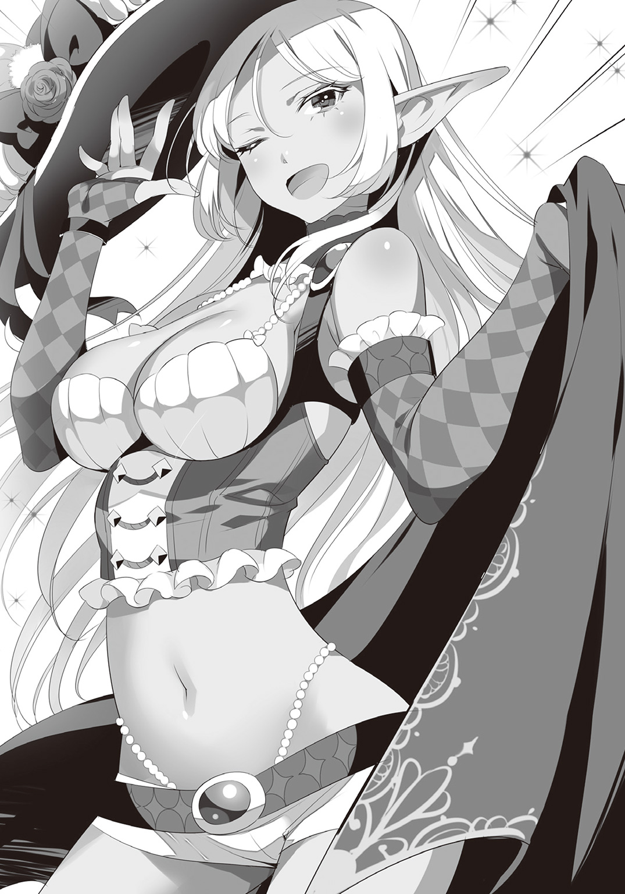
ここはクィンチェスト教会のとある一室。手狭な空間ではあるが、質素な執務机とふかふかのソファー、部屋の一角には簡易キッチンと、それなりに家具や設備機器は充実している。さしずめ客間兼私室といったところだろうか。
三人は今、そんなこぢんまりとした部屋のソファーに並んで腰かけていた。
「あ、あのー......今の状況を説明してほしいのですが......」
ソファーの真ん中に座ったマリアは、消え入りそうな声で繰り返す。右を見れば不愉快そうな顔をしたクロ。左を見ればすっかりくつろいだ様子の美女。さっぱり状況が飲み込めないまま、既に五分が経過している。
「あ、あのっ！」
そうしてマリアが痺れを切らし始めたところで、クロがようやく口を開いた。
「よーし、わかった説明してやる。ここはクインチェスト教会で、今いるのはフォルス神父の私室。そんでもって今座ってるこいつはソファーって呼ばれる家具だ。おっとこれは知ってたかな？ フォルス神父は親切な方でな、教会の地下室を行き倒れの人に無償で開放してくださってる。そこをお前の寝床として提供していただこうというわけだ。以上、状況説明終了」
仏頂面のまま、棒読みで説明をするクロ。その言葉の端々には『余計な質問はしないでくれ』という懇願にも似た強い意思が込められている。......が、残念ながらマリアには伝わらなかったようだ。
「いえ、私が聞きたいのはそっちではなくて......」
とマリアが聞き直そうとすると、横から件の美女が首を突っ込んで来た。
「ふふふ、可憐なお嬢さんよ。君が聞きたいのはズバリ、この私のことだろう？」
思わぬところから現れた回答者に、マリアはびくりと身を竦める。その隣では『言わんこっちゃない』とばかりに少年が顔をしかめた。けれど、考えてみればこの女とて当事者であることに変わりはない。この際贅沢を言ってはいられないのだ。マリアはおずおずと頷く。
「あ......はい、まあ......」
「ほうら見たまえ。まったく気の利かないことだなあ」
マリアの応答を聞いて勝ち誇る女に、とうとう根負けしたクロが嚙みついた。
「うぐぐ......うるせーよ！ んなことわかってんだよ！」
「ふん、ならば早急に紹介したまえ。この私と君とのただならぬ関係をな」
「はいはいわかった、わかりましたよ......」
クロは両手を上げて降参のポーズをとると、溜め息混じりの声で言った。
「こいつはサーシャ。エルフ族のな」
見知らぬ者同士を引き合わせる場にしては、あまりにも素っ気ない他者紹介。これではほとんど一口コメントの域である。......けれど、そんなぞんざいな紹介でも、マリアを驚かせるには十分だったようだ。
「え、エルフ族......!? 〝森の聖人〟と呼ばれる、あの......ですか」
マリアは目を白黒させながら、隣に座る艶女――サーシャをまじまじと見る。彼女にしてみれば、エルフとは幼少時代に読んでいた絵本の世界の住人だ。仰天するのも無理はない。だが、紹介されたサーシャ本人には何やら異存があるらしく、これ見よがしに溜め息をついた。
「ふぅん、それだけかい？ 些か不満の残る紹介だね。まあいい。ならば自分でするとしよう」
「最初からそうしやがれ」とぼそりと愚痴るクロを気にも留めず、サーシャは堂々と立ち上がる。そして、ぽかんと見上げているマリアに向けて気障ったらしく一礼した。
「やあご機嫌よう、お嬢さん。改めて自己紹介しよう。私はサーシャ。サーシャスクィーリア＝スィン＝ヴィヴィラノ＝ユスティマンユ。創世樹の蜜と緋龍の涙を起源とし、三千と二百八十の祖を戴くヴィヴィラノ家が当主・花と契りしサーラルスィン＝ミュラ＝ヴィヴィラノ＝アルケットの娘にして、宝双剣ニュケス＝エルメラの担い手。そして――そこにいる男の嫁だ」
早口言葉並みのとんでもなく込み入った自己紹介。それでも聞き流しては失礼と、マリアは大真面目に記憶しようとしていたのだが、その健気な努力は最後の一言で吹き飛んでしまったようだ。
「......え、えええっ!? お嫁さん？？？ お、お嫁さんって......ぇえええええ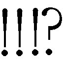」
「あー......だから嫌だったんだよ......」
ぽーっと顔を赤くしているマリアに向けて、クロは溜め息交じりに訂正を入れる。
「あのな、エルフ族にはとある因習があるんだ。〝自分の裸体を見た者とは夫婦の契りを交わさなければならない〟ってな。俺たちからしてみりゃ馬鹿みたいだろう？ だがこいつらにとってはそれが絶対の掟らしいんだよ。それこそ、命よりも優先されるほどのな」
そう言ってクロは弁明を試みたものの、それはかえって次なる問題を呼び起こす結果になる。
「〝裸体を見た者とは〟って......じゃ、じゃあ、見ちゃったんですか!? あの、その......サーシャさんの、は、は......裸っ！」
「い、いや、それは――」
「うむ！ それはもうバッチリとな！」
と、勝手にしゃしゃり出てくるサーシャ。
「おい！ 誤解を招くから黙れ！」
「だが事実ではないか」
「事実......は、事実なんだが......あ、あくまで事故で、だぞ。本当に」
「ええ？ 事故なんですか?! ちぇ、なあんだ......」
「なんでそんなに残念そうなんだよ......」
何を期待していたのか、マリアはしょんぼりと唇を尖らせる。そしてふと、何かが気になった様子で尋ねた。
「......あれ、でもどうして？ 未来のご夫婦ならなんでクロさんそんなに避けてるんですか？」
それはごく当然の疑問......なのだが、クロは途端にバツの悪そうな顔になる。
「あ、いや、それはだな......」
「――不届きにも、私の秘宝に手をつけたからだ」
もごもごと言葉を濁そうとするクロにかわって、サーシャはさらりと言ってのけた。
「ええっ!? じゃあまさか、裸を覗いたのって......」
「ああ、そうだよ！ 盗みに入った時に見つかったんだよ！」
クロは観念したように白状した。
「それはクロさんがいけません！ ちゃんと返さなくちゃ！ ついでに責任も取らなきゃ！」
「せ、責任......？ ついで......？ ええい、そこへのつっこみはなしだ！ いいか、誤解するなよ？ 俺だって盗んだナイフは返そうとした！ だけどこいつが――」
「ふん、一度奪われた物を『はいごめんね』と返してもらうなど私の誇りに反するじゃないか。奪われたのなら奪い返す。力ずくでな。君をねじ伏せ屈服させ、我が宝剣を取り戻し、それから森へ連れ帰って結婚式だ。この日程に変更の余地はない」
「な？ な？ こんな具合に聞く耳もたずなんだ！ こうやって追いかけ回してきては、事あるごとに俺をぼっこぼこにしようとするんだぞ！ 今日だってお前がいなけりゃ、あの酒場が血の海に......」
「うわあ......サーシャさんって情熱的なんですね！」
「ふふ、まあね」
「な、なぜそのリアクションに......？」
何故かロマンチックな話でも聞いたかのようにうっとりするマリアと、自慢げに胸を張るサーシャ。クロはついていけないとばかりに深く嘆息した。
「いやそういうのじゃねえよ......こいつはただ俺をぼこりたいだけなんだって......」
そんなクロを置いてけぼりにして、興奮冷めやらぬといった様子のマリアは呆けたようにサーシャに見惚れる。
「でもすごいですよ！ エルフ族の方と結婚だなんて......いいなあ......」
「うふふ、そうかい？」
「だって、エルフ族といえば、強くて、賢くて、高潔で......」
「うむうむ、もっと褒めてくれていいんだぞっ！」
少女に褒められて素直に嬉しそうな顔をするサーシャ。一方のクロはそれがお気に召さないらしく......
「ハッ、そんなもん絵本の中の話だろ。現実は別さ。だいたい人間は、エルフと聞けば無条件で美化しすぎなんだよ」
などと、水を差すように言う。
「あのな、一つ、こいつらと付き合う上で大事なことを教えといてやるよ。本当に重要だからよーく聞けよ？ いいか――」
だが講釈を垂れようとするクロの傍ら、全く聞く気のないサーシャはおもむろにマリアの頰へ手をあてた。そして自分の方を向かせると、動揺するマリアに一言。「君は可愛いね、とても気に入ったよ」と囁いて、そっとその眼を覗き込む。瞬間、マリアはもう、エルフの瞳から視線を逸らせなくなっていた。同性であることさえ忘れるほどの端麗な容姿、得も言われぬ香気を孕んだ芳しい吐息、そして何より、妖しい魔性を湛える熱情的なその朱い双眸に、すっかり魅入られてしまったのだ。
サーシャの手が優しくマリアの前髪を払う。既に身も心も奪われていた少女は、抵抗する意思すら起こせず、ただ火照り切った体を疼かせたまま、恍惚の表情を浮かべていた。そしてサーシャは、無抵抗となった少女の可憐な唇に、そっと自分の唇を近づけて――
「――こいつらは揃いも揃って、とんでもない好色家......って、おいっ、ストップだ色ぼけ女！」
二人の唇が触れ合う寸前、クロが怒気をみなぎらせながら割り込んだ。
「......あ、れ......？ は、はわわ、私、あ、え、今......」
我に返ったマリアは、顔を真っ赤に紅潮させて慌てふためく。対してサーシャの方はといえば、しれっと唇を尖らせるだけ。
「ふうん、いけずだなあ、君は。彼女と私の甘いひと時を邪魔するだなんて。......あ、もしかして、〝やきもち〟というやつかい？ うふふ、実に可愛いことだ」
「お前は黙ってろ！」
相変わらず涼しい顔のサーシャを一喝。クロは、あわや唇を奪われかけて混乱している依頼主を気遣う。
「マリア、大丈夫か？」
「あ、は、はい......あの、今の、一体......」
「さっき言った通りだ。エルフってのはどいつもこいつも揃って好色家なんだよ」
「こ、好色......!? でも、さっきは一途だって......」
「あー、それも本当のことだ。一応な。けど人間と同じ基準で考えちゃだめなんだ。こいつらはな、掟で決められたつがいに対しては固く操を立てるんだが、それはあくまで異性の話。......つまりは、まあ......同性はノーカンってことだ」
「そ、それって、まさか......」
クロは肩を竦めてさらりと言った。
「いい女を見かけると、手当たり次第喰っちまうってわけだ」
「そ、そんなあ......」
ショックを受けたマリアの隣で、話題の張本人は平然とウインクを送る。
「〝喰う〟、なんて下品な表現はよろしくないな。〝睦み合う〟、と言ってくれたまえ」
「はっ、《魅了》の魔術まで使っておいてよく言うぜ。屋敷に抱えた妾の数を言ってみろよ？ 確か、この前聞いた時は五十六人だったか？」
「うむ。それから少し増えてな、今は七十二人だ。......おっと、そういえば先日一人増えたから、七十三かな。つまりマリア君は我が七十四番目の妾となるわけだ」
「また増やしたのかお前......」
「うふふ、やっぱりやきもちではないか、旦那様よ。まったく、それならいつでも言ってくれればいいものを。二度と嫉妬などしなくて済むほど、しっぽり可愛がってやるというのに」
サーシャが瞳を輝かせながら妖艶な微笑を浮かべると、クロは少しだけ頰を染めてそっぽを向いた。
「へ、そんなつもりがあるなら毎度襲いかかって来るのをやめろってんだ」
「それはそれ、これはこれだ。いくら夫であろうとも、私の宝に手をつけた報いは受けてもらわなければな。......それに、案外この二つは両立する。君を思い切り痛めつけながら愛してあげれば良いのだろう？ うふふふ、想像しただけでなかなかにそそるなあ」
どんな光景を思い浮かべているのか、恍惚の表情で舌なめずりをするエルフ。クロは怯えるように背筋を震わせた。
「お、俺にそんな性的嗜好はないっ！」
と、思わず取り乱した後で、クロは咳払いと共に依頼主へ向き直る。
「コホン......ま、まあ、そういうわけだから気をつけな。同性だからと油断させて近づいては、容姿と魔力で魅了してあっという間にベッドへ引きずり込む。いつもの手口さ。特に、あんたみたいな世間知らずのお嬢さんは狙われたが最後、身も心も簡単に虜にされちまう。こいつに泣かされた女は数知れずってやつだ」
「うむうむ、啼かせるのは得意だぞ」
「わ、私の純情が......うう、お父様......」
恋に破れた乙女の表情で、よよと泣くマリア。クロはその肩を叩いて慰めた。
「まあそう気を落とすな。媚薬入りの香水まで使われてたんだ、魅了されちまうのも無理ねえさ。なんせ、こう見えてもこいつは花精霊の娘なんだぜ？ そのお手製媚薬にあてられちまったら、どんな聖職者でもイチコロってやつだ」
「ふふふ......薬の調合は得意中の得意だからね。精力剤に惚れ薬、睡眠薬や興奮剤も作れるぞ」
「やめろ！ たとえが一々不穏なんだよ！」
「いいではないか。君も一度試してみるかい？ なんなら全部一度に......」
「殺す気かっ！」
そんなやりとりを隣で聞いていたマリアは、別の部分が気になったようだ。
「花精霊の娘......？ あれ？ でもサーシャさんはエルフ族で、でも花精霊族の娘でもあるってことは......は、ハーフさんなんですか!?」
「ん？ ああ、エルフ族にとってはそれが普通なのさ。なにせこの種族は女しか生まれない。その代わりに他の種族と精神で交わることで子をなすんだよ」
「心と心で結ばれる......へええ、やっぱりロマンチック......」
「......ま、まあ、それには同意するがな」
マリアがうっとりと瞳を輝かせる横で、柄にもなく......というよりも、ついつい素が出た様子でクロも頷く。そんな二人の反応がお気に召したらしく「そうだろう、そうだろう」と自慢げに胸を張ったサーシャは、ふと思い出したように付け加えた。
「ああ、ちなみに私の場合、祖父は夢魔だ。よって体での交わりの方も大得意で――」
「だああ！ この色情魔がっ！ 雰囲気が台無しだっ」
と、そんな睦まじげなやりとりの最中に、廊下からコツコツという音が響いてきた。その音の主がドアから入ってくる直前、クロは襟を正して立ち上がる。
「――やあ、どうもみなさん。お待たせして申し訳ありませんね」
そう言いながら現れたのは、濃紺の司祭服を着た初老の神父。左足が悪いらしく杖を突いているものの、騒がしい三人に腹を立てた様子もなく柔和な微笑を浮かべている。どうやら彼がこの教会の主らしい。
「いえいえ、フォルス神父！ こちらこそ夜分遅くにすみません！」
礼儀正しくぺこりと挨拶を返すクロ。その後に続けて、女性二人も頭を下げた。
「どうぞお三方、お座りになってください。何のおもてなしもできず申し訳ありませんでした。今、紅茶をお淹れしますね」
片手をあげて座るよう促すと、神父は居室の奥の台所へ向かう。クロは隣のマリアにそっと耳打ちした。
「ラッキーだな、神父の紅茶はとびきり旨いんだ！」
そうして数分の後、三人の前に琥珀色の液体を湛えたカップが差し出される。甘い湯気の向こうでは、神父がにこやかに微笑んでいた。
「どうぞ、お待たせいたしました」
自然な動作でカップへ手を伸ばすサーシャに合わせ、マリアもわたわたと器を手に取る。そして温かな紅茶に口をつけた途端、女性二人は思わずうなった。
「まあ、すごくおいしい！ それにとっても良い香りです！」
「ううむ、茶葉が違うんだね。私の屋敷のものよりずっと美味だ」
「一応、私のオリジナルです。お口に合ったのならなによりですよ」
普段から紅茶を嗜む二人に褒められ、神父は莞爾と微笑む。
「こればかりはサンディスリングスでも売ってない、ここだけでしか飲めない超限定品だぞ！」
と、関係ないはずのクロも胸を反らして自慢する。......ただ、どうやら彼自身は猫舌らしく、ふーふーと息を吹きかけて冷ますのにかかりきりで、未だ一滴も飲めてはいなかった。
「みなさんお口がお上手で」
三人をにこやかに見守りながら謙遜する神父。そして各々が喉を潤した頃合いを見計らって、静かに本題へ移った。
「......それで、今晩はどのようなご用件でこちらに？」
ごくごくとおいしそうに紅茶を飲んでいたクロは、急いで唇を拭って答える。
「実は、ベッドを一つお借りしたくて......」
神父は事情を察したような顔をしたが、それからひどく言いにくそうに切り出した。
「なるほど、そうですか......ですが、生憎今はベッドが一杯でして......。二人は子供、もう二人も病人のようなので、都合して差し上げるわけにもいかず......」
「ああ、だからさっき......」
人の良い神父が来客を放ってまでかかりきりになっていた用事とは、どうやら病人の看護だったらしい。
「本当にすみませんね」
心から申し訳なさそうに謝る神父に、クロはとんでもないと首を振る。
「そ、そんな、気にしないでください！ 連絡もなしに押しかけたのはこっちの方ですから。むしろ、大変な時にお手間をとらせてしまってすみません......」
「他に、どこかあてはあるのですか？」
クロはその問いかけに、はい、と頷いた。
「警務部に行ってみようかと思います」
「なるほど、そうですか。サーシャさんもご一緒で？」
話を振られたサーシャはにこやかに答える。
「いえ、私は自前で宿をとります。私の寝込みを襲うような輩は返り討ちにするだけですから」
「まっ、お前ならそう言うわな」
「ふん、当然のこと。どうだ、妾よ。君も私と一緒に来ないか？ 私の隣で眠るのなら身の安全は保障するぞ？」
「馬鹿、お前が一番危ないんだよっ！」
すかさずクロが嚙みつくと、サーシャはかえって嬉しそうに笑った。
「ごめんなさい、サーシャさん。私はクロさんにお任せしたいと思います」
「ふうむ、残念だが仕方がない。道中、気をつけるのだぞ」
そう言ってサーシャはすっと立ち上がる。どうやら早々に退席するつもりらしい。
「おい、もう行くのか？」
「ああ。宿自体はここのすぐ近くなのだが、駆け込み客で混雑し出す前に確保しておきたい。新しい妾には会えたし、旨い紅茶も御馳走になった。もう用は済んだよ。......それとも、なにかい？ 私と別れるのが寂しいのかな？」
「ば、馬鹿なこと言うな、そんなわけあるか！」
羽帽子を華麗な動きで被りながら、サーシャは顔を赤くしている少年にウインクしてみせた。
「うふふ、冗談だよ。......それに、警務部にはあの女がいるからね。あれの近くで眠るぐらいなら、龍の背中で寝た方がまだ安心できるというものだ。......さて、それではまた会おうマリア君。神父、お先に失礼させていただきます。温かなおもてなし、ありがとうございました」
「は、はい、サーシャさん、おやすみなさいっ」
「こちらこそ、森に住まう高貴なる君とご一緒できて光栄でした。またいつでもどうぞ」
と、丁寧な別れの辞に応える神父だったが、途中で思いついたようにクロへ提案する。
「......けれど、やはり女性の一人歩きは感心しませんね。クロ君、お見送りをお願いします」
「......へ？ あ、はい、わかりました......」
不意を突かれたクロは、敬服する神父の言葉だっただけについ頷いてしまった。
「ふふふ、エスコートを頼むぞ、旦那様」
「ふん、一人でも平気なくせに」
「一人でするよりも二人でした方が楽しいというものだよ。何事もね」
「あーもー！ だからやめろってそういうのっ！」
嬉しげなエルフと舌戦を交えつつ、クロはマリアの方へ振り返った。
「それじゃあ、悪いが少し待っててくれ。戻ったら、今度は警務部へ出発だ」
そうしてにぎやかな二人が去った後、神父の居室には静けさだけが残った。元来の性格からして人見知りなどという単語とは縁遠いマリアであるが、流石の彼女も教会独特の雰囲気と出会ったばかりの神父が相手ではかしこまりもする。随分広くなってしまったソファーに座ったまま、マリアはもぞもぞとお尻を動かしていた。
「急に静かになってしまいましたね」
その緊張を察してか、神父は殊更に優しくマリアへ微笑みかける。
「さあ、ご遠慮なさらずにお召し上がりください」
促されるまま紅茶に口をつけたマリアは、緊張も忘れて声を上げた。
「ふわあ、やっぱりおいしいです！」
「そうですか、それは良かった。......実は私の娘も紅茶が大好きだったのです。決まってお砂糖をスプーン三杯入れて。『大きくなったらパパに紅茶を淹れてあげる』、なんてね」
語りながら、温厚な神父が更に相好を崩す。
「お子さんがいらっしゃるんですか？ 是非お会いしたいです！」
マリアは何の気なしにそう言った。これほど親切な神父の息女なら、きっと良い友人になれると素直にそう思ったからだ。だが、その言葉を聞いた途端、神父の微笑みに陰りが差した。
「いえ......いたのは、昔の話です。もう何十年も前に、神の御許へ召されました」
「ぁ......その......私......」
自身の犯したとんでもない失言に気づき、マリアは狼狽を顕にする。そんな少女に、神父は慌てて首を振った。
「すみません、こんな暗い話を。......さあ、おかわりもどうぞ」
むしろマリアよりも済まなそうな顔で勧める神父。マリアも気まずい思いを紅茶の甘味で濁しつつ、別の話題を探す。そして咄嗟に思いついた少年の話を切り出した。
「えっと、あの......神父様は、クロさんとは古いお付き合いなのですか？」
「そうですね......今年で三年目になるでしょうか。彼は時折、真夜中にここへ来ます。神への告白もなく、ただ独り黙って、何かを祈りに。初めていらした時からそうでした」
少年が一体どんな懺悔をしているのか、いきすぎた詮索だとは思っても、気にならずにはいられなかった。けれど、それを神父に問うたところで意味はない。たとえ知っていたとしても、神父が神以外にその秘密を明かすなど有り得ないことぐらいわかっている。だから、今度は神父に質問を投げかけられた時、マリアは綺麗さっぱりその想いを振り払うことにした。
「ところで、あなたの方はクロ君とどういったご関係で？ ご友人ですか？」
「いえ、仕事を依頼しようと......あ、でも、盗んでほしいとかではなくて、亡くなった父のことを調べてほしくて......」
「なるほど、そうですか」
神妙な面持ちになった神父は、あらためてマリアに尋ねる。
「......ところで、お名前をうかがってもよろしいでしょうか？」
「こ、これは失礼しました。サンディスリングスから参りました、マリア＝イスラフィルです」
「......ほほお、マリアさん、ですか」
神父はゆっくりと少女の名前を復唱した。その瞬間、マリアの背筋に奇妙な悪寒が走る。自分の名を口にした神父の瞳の奥に、不気味な影が蠢いたような気がしたのだ。けれどそれは単なる目の錯覚だったのだろう。瞬きの後にもう一度見た神父の眼差しは、以前と変わらぬ柔和な温かみに満ちていた。
「サンディスリングスの教会には馴染みの神父がいますよ。教会へはよく？」
「いえ、家はあまり、信仰に関しては......」
神父を前にしてそれを言うのは憚られたのか、マリアは言いにくそうに口ごもる。
「そうですか......ええ、そうでしょうね」
神父は一人で頷くと、おもむろに席を離れた。向かった先は、使い古された執務机。その最下段の一番大きな引出しを開け、中から何かを取り出す。
それは、両手に掲げた精妙な天秤をうやうやしく渾天へ捧げる有翼の女神像だった。
「〝天秤の女神〟――我々はただ、彼女をそう呼びます」
マリアの前へそっと女神像を降ろした神父は、自身も腰を下ろしながら言う。
「かつて、世界には多くの神と多くの信仰があったと伝えられています。それこそ、神々同士、信徒同士で戦を起こせるほど、数多く。......ですが、長い年月の末に神仏は死に絶え、信仰は枯れ潰えました。そしてすべてが星霜の彼方へ忘れ去られた後、唯一残ったのがこの女神なのです。故に彼女に名前はなく、同時にあらゆる名を持つ」
マリアの眼が今一度、女神像の顔に引き寄せられた。経年により摩耗し、目鼻立ちすら定かではなくなった石の顔。最初眼にした時には、そののっぺりとした表面に欠片の感情も見いだせなかったというのに、こうして話を聞いた後では、不思議と喜怒哀楽が滲み出ているような気がする。否、それだけではない。如何なる光の悪戯か、石の女神の相貌は見る角度によって男になり女になり、老人になり若者になり、天使になり悪魔になった。彼女は一つであり、そしてまたすべてでもあった。
「その中の一つに、〝マリア〟という名があります」
「私の、名前が......？」
神父は不気味なほど穏やかに頷く。
「元は、すべての罪人を抱擁する慈悲深き聖母の名前だったとか」
そうして少女の瞳を覗き込んで、神父はぽつりと呟くように言った。
「あなたの父上は......どんな思いでその名をつけたのでしょうねえ？」
その時、階下で扉の開く音がして、帰って来た少年がマリアを呼んだ。少女はその福音に縋るように扉へ駆けると、神父に一礼だけして慌ただしく階段を下りていく。残された神父はうっすらと微笑みながら、物言わぬ女神の翼を優しく撫でた。
「おお、我らが天秤の女神よ――あなたに祝福あれ」
「神父さんは良い人だったろ？」
「は、はい......」
教会を後にし、二人連れだってのんびり歩く夜道。クロは穏やかな調子で話しかける。マリアも頷きはしたけれど、彼女の内心は少年ほど落ち着いてはいなかった。少女の胸にわだかまるのは、自分を見つめる神父の不気味な瞳。その奥に一瞬垣間見えた、餓えた獣にも似た鈍い光が、頭にちらついて離れなかった。
けれどクロは、そんなマリアの心情などつゆ知らず声高に神父の善行を語る。
「あの人はこの街の良心だ。教会で病人や宿無しに施しを与えるだけじゃなくてな、寒い冬には炊き出しをやったり、他の街へ慈善活動に出向いたり......ああ、それから隣街の養護施設で読み書きを教えたりもしてるんだ。俺には肝心の神の教えってやつはさっぱり理解できねえが、本当にすごい人だと思うよ」
まるで自分のことのように誇らしげな顔で語るクロ。しかしマリアは、水を差すにも等しい無粋な真似と知りながらも、問わずにはいられなかった。
「あの......神父様にはご家族がいらっしゃる......いえ、いらっしゃったと伺いましたが......」
その問いかけが少女の口を突いて出た途端、クロはぴくりと眉をひそめる。
「神父さんから聞いたのか......？」
少女が頷くと、クロはひどく暗い顔をして本人さえ知らない昔の話を始めた。
「もう数十年ほど前のことになるが、〝黄金の義眼のフォーレン〟と呼ばれる悪名高い泥棒が、数千人規模の盗賊団を組んでのさばってた時期があったらしい。ありとあらゆる悪徳をみんな備えた、とんでもない悪党だったと聞く。唯一の趣味が魔物を収集して飼いならすことだったってんだから、まあ真っ当な人間じゃないわな。......そんなフォーレン一味が好んで狙っていたのが教会だよ。神も仏も、奴らには関係なかったのさ。いつしかフォーレン盗賊団は『教会荒らし』なんて異名で呼ばれるようになったそうだ」
盗賊団の異名を聞いた時点で、マリアにはもうその先が予想できた。クロは、そんな少女の考えた通りの最悪な結末を口にする。
「フォルス神父が昔務めていた教会も、その『教会荒らし』に襲われたらしい。神父はすべてを失った。妻も、左脚も、まだ幼かった娘もな。......俺が知っているのはこのぐらいだ」
「ひどい......その悪い盗賊は、ちゃんと捕まったんですか？」
その問いに、クロは口惜しそうに首を振る。
「いいや。フォーレンは狡猾な野郎だ。警務部の上層部に莫大な金を握らせて上手く立ち回ったのさ。教会から略奪した財産だけで、全盛期には街五つを軽く買い占められると噂されるほどだったからな」
この混沌都市において、買収など日常茶飯事。今更問題にする者などいない。
「ただ、奴は突然いなくなった。二十年ほど前の話だ。一味丸々、ふっつり消えちまったんだと。大方仲間割れでもして共倒れになったんだろうな」
と、そこでちらりとマリアの横顔を見たクロは、ハッとして口をつぐんだ。
「あ、すまん、嫌な話をしちまったな」
黙りこくったマリアの様子から、今の話が気分を害したのだと思ったのだ。
「いえ、そういうわけでは......その、少し疲れただけです！」
神父の過去と不吉な眼光。マリアはどうにか自分の中でその二つに折り合いをつけると、クロに笑顔を見せた。なんだかんだで心配してくれる少年に、根拠の欠片もない神父への疑念を悟られたくなかったのである。
「はは、そうだな。今日は色々あったから疲れたろう。けどもう少し頑張れ。じきに見えてくる頃合いだから。――さあ、これで最後になることを願おう。我らが平和の守護者、警務部だ」
角を折れた先、二人の眼前百メートルほど向こうにそそり立っていたのは、とんでもない規模の円筒形をした建物。形状的には切り株やバウムクーヘンを想起させるが、とにかく横にも縦にもサイズが桁違いで、周囲の建造物がまるでミニチュアの玩具にすら見えてくるほどだ。
「うわあ、おっきいですね......」
「ああ、ほんと、昔から何も変わっちゃいねえ」
そう呟いて、クロはふと立ち止まった。同じく足を止めたマリアはちらりとその横顔を覗き込む。警務部本棟を見るクロの瞳には、懐かしむような、それでいてひどく恐れているような、不思議な色が浮かんでいた。
「どうかしたんですか、クロさん？」
「ああ......いや、ここに来るのは久しぶりでな......」
「何か嫌な思い出でも？」
「さあどうだろうな。自分でもわからない。まあ、会いたくない人がいるのは確かだが」
「あっ！ もしかして、昔捕まったことがあるとか？」
マリアが自分なりの推測を口にすると、クロはにこりと笑った。
「ん？ ああ、まあそんなようなところかもな。こいつを見るだけでびびっちまう。泥棒屋の情けない習性さ。あんたはできる限り、ここと無関係な人生を歩まないとな」
再び歩き出したクロが普段の調子に戻ると、マリアは安心したようにその背中を追いかける。
「そう言えば、私知りませんでした。警務部って宿泊施設でもあるんですね」
「いや、普通はダメさ。......やり方を知ってなきゃな」
「やり方......？」
「まっ、実際に見ればわかるさ」
クロが意味深に微笑んだところで、二人の足が止まった。とうとう警務部の門前へたどり着いたのである。来客に反応してするすると開く自動ドア。漏れだす光に導かれて中へ踏み入ると、その先に待っていた光景にマリアは思わず目を見張った。
「うわあ......すごい人の数ですね......」
人、人、人......人の波。右を見ても左を見ても、眼に入るのは忙しそうな顔ばかり。制服姿の警官は勿論のこと、囚人服を着せられた悪人面の男たちや、手錠をかけられてふてくされているヤンキー集団、落とし物を探しに来たらしい老婆が歩いているかと思えば、泥酔した中年親父が千鳥足でふらふらしている。阿鼻叫喚とはまさにこのこと。警務部の広大な空間を埋め尽くしてなお余りある人の数に、マリアはすっかり圧倒されてしまった。
「はは、初めて見れば驚くよな。なにせ警務部には街中の厄介事がみーんな集まる。ここはいつもこんな感じさ」
マリアは呆然と頷きながらも、未だにぽかんと開けた口が塞がらない。
「でもぼーっとしてると危ないぜ。ちゃんと前を見な」
せわしなく蠢く人波に目を奪われて気づかなかったが、よくよく見れば、雑踏の合間に箱型のブースがたくさん置かれている。中にはそれぞれ一人ずつ、制服を来た警官が待機中だ。どうやら簡易案内所らしい。
「さて、どこがいいかな......ん、あいつにするか。さあ、はぐれるなよ？」
背伸びしながら案内所の群れを眺めていたクロは、どこぞに目星をつけると少女の腕を取って人波へ分け入っていく。もみくちゃになりながらどうにか行き着いた先のブースには、眼鏡をかけた小太りの警官が待機していた。
「やあ、どうも、おまわりさん。へへっ、精が出ますね」
「......あい？ 何か？」
二人の方をちらりとも見ずに適当な返事をする警官。マリアは思わず眉をひそめる。なにしろその警官は、スナック菓子をぼりぼり貪りながら堂々とゴシップ雑誌を読み耽っていたのだ。お世辞にも良好な勤務態度とは言い難い。だがクロは気にした様子もなく話を続ける。
「実はですね、こっちの子が宿を探しているらしいんですよ」
「ふーん、そうかい。街の地図なら二階のナビゲートシステムが無料で使えるよ」
「あー、そういうことじゃなくって、ね、ほら、このお嬢さん、実はこういう街って初めてでさ、そうなると一人で泊まらせるってのはちょっと心配じゃないですか」
「ふーん、そうかい。それは心配だねえ」
取り付く島もないとはまさにこのこと。流石に聞く相手を替えるべきではないかとマリアでさえ訝しみ始めたその時、クロが不自然な行動に打って出た。
「それでですねえ......あっ！」
何かに気づいた様子で、突然その場に屈みこむクロ。マリアは勿論のこと、それまで無関心だった警官さえ、一瞬クロの方へと目を向ける。そして再びクロが身を起こすと、その手には一枚の銀貨が握られていた。
「おっと、こいつは......落とし物かな？」
見せびらかすようにちらつかせた銀貨を、クロはゆっくりカウンターの上に載せる。そしてにんまり笑いながら、すすーっと警官の方へと差し出した。
「落とし物は、おまわりさんに」
警官は一転して真面目な表情になり、きょろきょろと左右へ視線を走らせるが、どこもかしこも混乱の最中にあるこの建物で、そんな些細なやりとりを見咎める者などいようはずがない。
「あー......ああ、いい心がけだな、うん。私が責任を持って預かっておこう」
警官は咳払いしながら銀貨を摘み上げると、自分の懐へと仕舞い込んだ。
「で、ご用事はなんだったっけ？」
こちらに向き直った警官へ、クロは改めて用件を告げる。
「この子がさ、一晩どこか泊まれる場所を探してるんだよ」
「ふうん、なるほどねえ。善良な市民のために力を貸すのが我々の使命だが、しかしここは宿屋ではない。いやあ、残念だ。ここで夜を明かすことができるのは犯罪者だけなんだよ。そう、犯罪者なら、一晩拘留室で過ごしてもらうことになるんだけどなあ」
えらく芝居がかった調子で言う警官。クロはまるで同調するかのように三文芝居を打つ。
「うんうん、そうですよねぇ......ん？ ああ、そういえば思い出したぞ。実はこの子、こう見えて手癖が悪くてさ」
「ええっ！ な、何を言っているんですか、クロさん!?」
と、マリアは身に覚えのない誹りにびっくり仰天。だがクロも警官も華麗にこれをスルー。話は勝手に進んでいく。
「へえ、手癖が悪いって？ 具体的にはどう悪いんだい？」
「それがですね、お地蔵さんの御供え物をね、こっそりくすねてるところをこの俺が見ちまったんですよ」
「なっ......！ わ、私、そんなに食いしん坊じゃありませんってばー！」
「そうか、悪いことしちまったか。んまあ、それなら仕方ないな。〝お勤め〟に出ないと」
「へへ、話のわかる人で良かった。ああ、そういえば、ついでに思い出したよ、さっき別の場所でも落とし物を拾ったんだった。......はい、どうぞ」
クロはそう言って、更にもう一枚銀貨を差し出した。
「おほん、よろしい。ではこれより、警務部犯罪処理規範に則ってそちらの女性を拘留する。今回の案件は仮想人格供物横奪罪の嫌疑であるから、被害者本人、あー、すなわちその地蔵から訴状が提出されない限り、拘留期間は最長で十二時間。わかったな？」
「わかりませんっ！」
「よし、被疑者の快諾も得たところで、今から案内を......」
言いながら重たい腰を上げかける警官を、クロは片手で制す。
「ああ、構わねえよ。場所ならよく知ってる。部屋番号さえ教えてもらえりゃ自分で行けるよ」
「ん、そうか？ なら、第一○八八拘留室へ行ってくれ。ロックはこっちで解除しておく。そこのお嬢さん、一晩よーく反省するんだぞ！ ......あー、それと一応聞いといてやる。取調べ時の食事で何か希望は？ 俺のおすすめは『十種の海鮮丼アサリのお吸い物つき』だが......」
「そっちに任せるよ。それじゃ、よろしくな」
話を終えたクロは満足げに踵を返し、受付ブースを後にした。けれど、依頼主ご本人はそうもいかなかったらしく、クロの袖を引っ張って膨れ面を見せる。
「もうっ、さっきのなんなんですかっ！ 私、拾い喰いなんてしませんよっ！」
と、大層ご立腹な様子のマリア。
「はは、悪い悪い。あの会話は一種の〝サイン〟なんだよ」
クロが面白そうに弁明すると、マリアは一転してきょとんとした顔になった。
「サイン......？ もしかして、クロさんあの人のファンなんですか？」
「違う違う、そっちのことじゃねえ。〝サイン〟っていうのはだな、当事者間でしかわからないような一種の暗号のことだ。さっきのはあの会話自体がサインなのさ」
「へええ、なんだか格好いいですね！ 秘密の合い言葉みたいで！」
「そ、そうかあ？」
「私たちも決めましょう！」
「いらんだろうが......」
と、クロは何度目かの呆れ顔を見せる。
「ともかく、これでお前の宿は決定だ。刑務所なんて嫌だろうが、この街じゃ檻の中が一番安全。我慢してくれよ？」
「そこは大丈夫です！ 刑務所なんて初めてなので、むしろわくわくです！」
「あ、相変わらずの前向きさだな......」
「〝前向きなのはいいことだ、未来は前にしか待っていない〟――これも父の教えなので！」
「ま、まあ、お前がいいなら別にいいんだが......お嬢様の趣味ってのはわからんな......」
なぜだかうきうきの表情を浮かべる少女。冤罪は嫌だが、刑務所泊まり自体は楽しみらしい。クロははぐれてしまわないようその手を取ってエスカレーターの方へと向かう。その途中で、マリアはふとあることを思い出した。
「そういえば、さっき言っていた〝会いたくない人〟ってどなたですか？ 先ほどサーシャさんのおっしゃっていた方と同じ人ですか？」
「ん？ ああ、まあそうなんだが......あまりここでその話は......ほら、噂をすればなんとやらって、よく――」
と、クロが古い諺を引っ張り出したまさにその時、二人の背後からハスキーな女の声がした。
「――ほお、そいつは私も気になるな。是非聞かせてくれ」
それを耳にした途端、うげえ、とクロは苦りきった声で呻く。そうして振り返った先、射るような眼差しで二人を見据えていたのは、宵闇色のコートを纏う長身の女だった。
「よお、久しぶりじゃないか――〝〟」
女は愛想の欠片もない表情で挨拶らしきものをする。その聞き慣れぬ名前に戸惑いながら、マリアは思わずクロの背中に隠れた。
大の男と変わらぬほどの長軀に、固く引き結ばれた真紅の唇、そして、鋭い光を宿す濡烏色の瞳――現れた美女からは、肌がぴりつくような威圧感が放たれていたのだ。
だが、無意識に後ずさりしながらもマリアは気がついた。女の纏っている黒いコートが、クロの着ているものと全く同じであることに。
「あ、ああ、そ、そうだな、久しぶり、だな......」
二人の関係を訝しむマリアの横で、平静を装って答えるクロ。傍らのマリアにすらわかるほど、その眼は泳ぎに泳いでいる。だが眼前の女にそんな強がりが通用するはずもなく......
「ん？ なんだって？ よく聞こえなかった。......もう一度言え、はっきりとな」
「あ、どうも、ご無沙汰しております、隊長殿！」
女にぎろりと一睨みされた途端、クロは素直に平身低頭するのだった。
「依頼主のために宿の用意か。ご苦労なことだな」
「あ、あはははは、こ、これも仕事なんで......ははは」
すっかり目的まで見透かされ、クロは顔を引きつらせるしかない。一方の女は無表情を堅持したまま、一つの提案をした。
「わざわざそんなことしなくとも、日直室に空きがある。そこをあてがおう」
「あ、いえ、そこまでしていただくわけには......」
親切にも思える申し出だが、何故か必死で遠慮しようとするクロ。そんな少年に、女はぴしゃりと言い放つ。
「お前になど聞いていない。私はそこのお嬢さんに話しているんだ。......で、どうする？ ネズミと一夜を明かすよりはましだと思うが？」
「あ、ありがとうございます......」
マリアはおどおどとその提案を受け入れた。彼女にとって損のない内容であったことは勿論だが、何より女の静かな口調には、有無を言わせぬ強制が含まれていたのだ。
「それで、。お前はどうする？ 私の部屋で一緒に寝るか？ ......昔みたいに」
「い、いえっ！ 家に帰るのでご心配なく！」
冗談なのか本気なのかさえわからない誘いを躱したクロは、背後に立つマリアへそっと耳打ちした。
「お、俺はここらで退散する。だけどいいな？ 絶対に明日、朝一で家に帰るんだぞ？ ......それから、余計なことは聞くな。これも絶対だからな？ 絶対だぞ？」
そうして返事も待たずに前へ向き直ったクロは「それじゃ、自分、失礼します！」と礼儀正しく挨拶すると、女にぺこぺこ頭を下げつつ退散しようとする。が――
「待て」
「はいっ！」
無慈悲に告げられる待ったの声。そして女は、硬直したクロに何かを手渡した。
「ほら、また届いたぞ。お前宛てだ」
「......！ ありがとう、ございます......」
差し出されたそれは、一通の手紙。だが、意外なほど大人しく受け取った少年の表情には、深い影が差していた。
「どなたからのお手紙ですか？」
そんな空気も読まずひょいっと覗き込んだマリアは、眼に入った差出人名を読み上げる。
「えーっと......『杠葉桜』さん？」
「お、おい、勝手に見るなって！」
クロはいつもの表情を取り繕うと、隠すようにして手紙を仕舞い込んでしまった。
「そ、それじゃあ、改めて失礼します......」
今度こそ退散していく少年。
先ほどよりも元気のなくなったその背中に、女は溜め息をついた。
「相変わらず不器用な奴だ。......さて、あんた、泊まる気があるならついて来な。案内する」
そうして女が向かったのは、東側壁面に備えられたエレベーター。女の後に続いて箱に入ったはいいけれど、密室で二人きりとなれば威圧感は必然的に急上昇。重い沈黙に耐えられなくなったマリアは、恐る恐る口を開いた。
「え、えっと......」
すると、女は間髪入れず先んじて答える。
「私はツバキ。イスルギ＝ツバキだ。〝新生対魔殲滅独立異能特殊分隊〟――《ネームレス》の部隊長をやっている。......端的に言えば、あの坊主の元上司だ」
「も、元上司!? それって......」
と、質問を重ねようとしたところで、折悪しくエレベーターが止まった。到着した先は両側にずらりとドアが並ぶ長い廊下のど真ん中。マリアはその一番端の部屋へと案内された。
「狭い宿ですまんな。くつろいでくれ」
「あ、はい......」
促されるまま、マリアは扉をくぐる。宿直室という事前の話通り、その部屋には簡素な椅子と机が一セットと、壁際にベッドが一つ用意されている以外何もなかった。
「食事は後で持ってこさせる。トイレは廊下の中央。命が惜しければ他の階へ散歩に出かけるような真似はするな。部屋のロックも忘れないように。非常用ブザーはベッド脇だ......使わないで済むことを祈るがな」
淡々と加えられる説明をどうにかこうにか頭に刻みつけて、マリアはこくこくと頷く。
「......さて、他に聞きたいことはあるか？」
その言葉でようやく質問の機会を得たマリアは、先ほどの続きを切り出した。
「えっと、さっき、クロさんの元上司って......」
「そのままの意味だ」
「じゃ、じゃあ、クロさんって元々警務部に勤めてらしたんですか!?」
驚きを顕にするマリア。だがツバキはその質問に答えようとはせず、逆に少女へ問いかけた。
「あんた、あいつの依頼主だろう？」
「はい......あ、でも、まだ良いお返事はいただけていませんが......」
「......いくつだ？」
「年齢ですか？ じゅ、十八、ですけど......」
「なるほどな......」
たったそれだけの問答で納得したかのように、ツバキは独り頷く。その反応に妙な既視感を覚えたマリアは、思い切って尋ねた。
「えっと、十八歳って何か問題なのでしょうか......？ クロさんも私と同い年だと知った時、よくわからない表情をしていて......」
ツバキは無言のまま、まじまじと少女の顔を見つめる。そして静かに机の端へ腰かけた。
「あの......」
「――あいつはな、旧東ブリューセルの生まれなんだ」
ポケットから煙草の箱とライターを取り出しながら、ツバキは唐突に口を開く。
「と言っても、あんたぐらいの子にはわからないか。......〝罪過の都〟なら聞いたことあるか？」
話の脈絡は摑めないものの、マリアは聞き覚えのあるその名前に頷いた。
「噂だけなら、聞いたことがあります。なんでも、住んでいる住民全員が罪人だとか......」
「ああ、混沌都市中の腐った部分を集めたような、地獄みたいな街さ。元は〝財貨の都〟と呼ばれるほど豊かな街だったんだが......世界中の泥棒がその豊かさに目をつけてな。気づけば街は盗賊だらけ。いつしか〝罪過の都〟なんて呼ばれるようになっていたよ」
「でも今はもうなくなったんですよね？ 確か、警務部によって分割されたとかで......」
「ああ、十年前の〝旧東ブリューセル動乱〟でな」
ツバキは一旦言葉を切ると、煙草の煙を静かにくゆらせた。
「少し長くなるが、聞くかい？ ――あの子の話を」
――――......
――......
絶え間なく降り注ぐ砲声が、花火のように大気を揺らした。燃え盛る業火は赤提灯で、綿アメじみた白煙があちこちから上がっている。そんな縁日のお祭りにも似た騒乱の中では、生きるか死ぬかなどまさしくクジ引きでしかない。
混沌都市第七億八千三百十一番街――通称〝東ブリューセル〟。人々から〝罪過の都〟と恐れられるこの街は今、かつてない戦乱の最中にある。
そんな街中のとある路地裏に、奇妙な一団が立ち並んでいた。性別、年齢、人種......どれもばらばらだが、全員が全員揃って部隊章のない黒一色の戦闘服に身を包んでいる。その姿を見ただけで誰もが理解するだろう。彼らこそが《ネームレス》――警務部が誇る最強の特殊部隊であることを。
そんな彼らの中心には、一人の青年がいた。耳元に展開された魔術式から見て、遠距離通信魔術を行使しているところらしい。
「――はい、はい。了解しました。それでは失礼します」
丁寧に答え、青年は通信を切る。そして固唾を吞んで見守る隊員たちに、にっこりと告げた。
「報告します――ブリューセル総督府が陥落しました。......我々の任務は終了です」
その瞬間、部隊から微かな歓声が上がる。そして声が収まった後、隊員たちの視線は先頭に立つ黒いロングコートの女――ツバキに向けられていた。
「――撤退だ。このごみためからずらかるぞ」
はっきりと告げられる撤収命令。それを聞くや否や、先ほどとは比べものにならないほど大きな歓声が沸き起こる。
「よっしゃ、やーっと終わった！」
「二週間ぶっ通しはきつかったぜ......」
「へへへ、今日は宴会だな！」
未だ敵地にいるというのに、緩み切った空気が部隊に広がる。だが、それはあくまで見かけの話。誰一人として油断している者はいない。
――それが証明されたのは、帰途についてすぐのことだった。
「......！ 七時の方向、何か来ます！」
狭い路地の行軍中、しんがりだった探知役の女が突然叫ぶ。次の瞬間には、全員の戦闘準備が完了していた。
いかなる状況にも適応し、いかなる事態にも対応する。ありとあらゆる不思議がひしめく混沌都市において、最強部隊として在り続けた彼らの実力は伊達ではない。......だが、そんな精鋭たちの反応でさえ、現れた闖入者にとっては遅すぎた。
「なんだ、こいつ――!?」
「速っ――!?」
隊列に割り込んで来たのは、微かに発光する小さな〝何か〟。路地に降り立つと同時に、ソレは恐ろしい速さで隊員たちの間をすり抜けて行く。その速度たるや、訓練された隊員たちの眼にも光の筋としてしか認識できぬほど。捕らえるなどとても不可能だ。
隊員たちの攻撃をかいくぐった乱入者は、微塵もスピードを落とすことなく最後尾から最前列まで駆け抜ける。そしてついには先頭に立つツバキの横を走り抜け――ようとしたところで、不意にツバキが口を開いた。
「――狙う相手はよく選べよ、餓鬼」
目にも留まらぬ速さでツバキの右手が光を捕らえる。そして間髪入れず、摑んだ〝ソレ〟を思い切り壁に叩きつけた。
「ぅ......ぐ......」
舞い散る大量の粉塵の中から、小さな呻き声があがる。とうとう動きの止まった光の正体、それは――輝く白髪を冠した幼い少年だった。
「おいおい、そう暴れるな」
にやりと笑うツバキの手を、少年はじたばた暴れながらかきむしる。どうやら言葉を知らないらしい。唸り声を上げて威嚇する姿は、まるで野生の子猫のようだ。
「ほうら、欲しかったのはこいつだろ？」
と言ってツバキが取り出したのは、パック詰めされた携行戦闘糧食。その途端、少年の視線はレーションに釘付けになった。欲しくて欲しくてたまらないようだ。
そんな素直な様子を見て、ツバキはまたしても上機嫌に笑った。
「くくく......可愛い奴め。欲しいか？ 欲しいよな？ だがやらんぞ。欲をかくからこうなるんだ。その収穫だけで我慢しておけば良かったものを」
言うが早いか、ツバキは少年の体をゆさぶった。すると、粗末な衣服の裾からぼとぼととレーションが零れ落ちる。奇しくもそれらは、ツバキが今手にしているのと全く同じもの。そう、《ネームレス》常用のレーションだ。......そこでようやく、隊員たちは自分が何をされたのかに気がついた。
「あれ......お、俺のレーションがねえ！」
「あ、あたしのもだ......」
「すられたってのか......？ あの一瞬で......？」
陣形は完璧だった。一分の油断もなかった。だというのに、誰一人として盗まれたことに気づけなかった。もしも少年の狙いが食糧ではなく、自分たちの命だったとしたら......
百戦錬磨の戦闘員たちは、久方ぶりの寒気を禁じ得ない。――ただ一人、嬉しげなツバキを除いて。
「それにしてもまあ、私ら相手に随分と舐めた真似をしてくれたものだ。さて、この落とし前はどうつけてもらおうか？」
と、ツバキがわざとらしく脅かすと、少年の目つきが急に鋭くなった。恐怖に駆られた小動物が攻撃的になるのと同じだ。追い詰められた少年の全身から、膨大な月光色の魔力が滲み出す。そして溢れた魔力の奔流は、直接ツバキの肉体に流れ込むが......
「――くくく......こそばゆいな。殺す気でやってもいいんだぞ？」
ツバキはむしろ心地よさげに笑い続ける。これほど恐ろしい......もとい、上機嫌な上官の姿は、隊員たちでさえめったに見たことがなかった。
「しかし、見れば見るほど面白い。どうやって手に入れたのかは知らんが......こいつは人間の生み出せる魔力じゃないな。この純度に、この密度。精霊級......いや、幻獣級の特異魔力だ。まったく、ついてるよ。こんな掘り出し物を拾えるとはな。ごみために出張って来た甲斐があったというものだ」
少年の持つ最大の自衛手段が、威嚇にすらなっていない。
一転して怯えきった表情になった少年は、半泣きでもがく。そんな哀れな獲物に、ツバキはぐいっと顔を近づけた。
「いいか、餓鬼。お前は今日から私のものだ。一から十まで、私がすべて仕込んでやる」
と、悪辣な笑顔で迫るツバキ。こうなったらもう止まらないと知っている隊員たちは、呆れ顔で傍観するばかり。
「くくく......なに、そう怖がることはない。私に任せれば、すぐ一流の兵士に―」
けれど、可哀相な少年のもとに天使の一声が降り注いだ。
「――ちょっと、ツバキさん！ 脅かしすぎですよ！」
唐突に割って入ってきたのは、少年よりもいくらか年上らしい少女。
未だ幼さを残す顔立ちをしているが、腰に手を当て頰を膨らませながら上官に物申す姿はどこか母親のようでもある。
「ふん、別に構わんだろうが。こいつにとっても悪い話じゃ――」
「言い方ってものがありますよ！ 可哀相に、怖がってるじゃないですか！ 放してあげてください！ 今、すぐ！」
「わ、わかったよ......」
少女がぷんぷんしながら詰め寄ると、ツバキは不承不承ながらも従う。そんな上官を見て周囲の隊員はにやりと笑うが、ツバキからきつい一睨みを送られると即刻真面目な顔に戻った。
「ほうら、これで怖いお姉さんはいなくなったよ。もう大丈夫だからね」
と、少女はそっと屈み込む。けれど、すっかり怯えてしまった少年は壁際で縮こまったまま。そんな様子を見て、少女は優しく笑った。
「ふふ、恥ずかしがり屋さんなのかな？ それじゃあまず自己紹介からだね」
そう言うと、少女は自分の名前を口にした。
「私は葵。〝杠葉葵〟だよ。......あなた、お名前は？」
と問われるが、少年は首をかしげるばかり。自分の名前も知らないらしい。
「そっか、まだないんだね......」
葵は残念そうに呟いて......それから名案を思いついたかのように顔を輝かせた。
「よし、じゃあ私がつけてあげる！ うーん、そうだなぁ......なにがいいかなぁ......」
言うが早いか、顎に手を当てて悩み始める葵。
そして数秒後には、とびきりの笑顔で「よしっ、決めた！」と叫ぶのだった。
「〝〟――あなたは今日からだよ！ 泥の中でも咲く白くて綺麗なお花の名前なの！ あなたにぴったりでしょ？ よろしくねっ！」
すっと差し出される少女の手。
少年は一層おびえて縮こまる。思えば、彼にとっては実に災難な一日だ。街はドンパチと騒がしく、いつもの食糧調達では捕らえられ、おまけに名前まで勝手につけられてしまった。これを厄日と呼ばずしてなんと呼ぶ。
けれどなぜだか、少年は眼前の笑顔に惹かれてもいた。......初めてだったのだ。誰かに手を差し伸べられたのは。
少年はおずおずと手を伸ばす。......その手を、葵はしっかりと摑み止めた。
その日から、警務部での日々が始まった。
※※※※※※
東ブリューセルでの大規模作戦――後に〝旧東ブリューセル動乱〟と呼ばれる戦いから早一週間。ここ警務部クインチェスト支部では、いつもの騒がしい日常が戻りつつあった。
......が、《ネームレス部隊長室》のプレートが掲げられた一室にだけは、ちょっとした非日常が残っている。――普段はいつでも空っぽなこの部屋に、ツバキの姿があったのだ。眉根に皺を寄せながら、慣れないペンを片手に書類の山と格闘している。
と、そこへ......
「......ツバキ」
「......なんだ、お前か」
ツバキはちらりと振り返る。いつの間に入って来たのか、背後には白髪の少年――が立っていた。どうやら風呂に入ったばかりらしく、体からはまだ湯気が上がっている。
ツバキはすぐに仕事へ戻りかけたが、ふとあることに気がついた。
「おい、お前、また私のコートを勝手に......」
見れば、湯上がりのの体には黒いコートが巻きついている。ツバキのクローゼットから勝手に持ち出したのだろう。無論サイズなど合うはずもなくぶかぶかではあるが、少年にとってはそこがお気に入りのようだ。
「あったかい」
「布団じゃないんだぞ......」
ツバキは呆れ顔を見せるが、一方の少年は気にした風もない。ツバキは渋々説教を諦めた。
「しかしお前、多少は喋れるようになったじゃないか。葵から教わったのか？」
こくりと頷く。
「ま、あいつは世話好きだからな......」
と、納得してから、ツバキは小言を付け加えようとする。だが......
「なら、敬語もちゃんと教えるよう葵に――って......」
いつの間にか少年の姿は消えていた。
「......まったく、気まぐれな奴だ」
ツバキは狐につままれたような面持ちで机に向き直る。
しかしペンを取る前に、再び来客が現れた。
「おーい、～、ってば～......あっ、ツバキさんだ！」
「『あ』とはなんだ、『あ』とは。ここは私の部屋だぞ。私がいて当然だろう」
「え～？ だってツバキさん、いっつも書類仕事から逃げてるじゃないですか～」
と笑うのはバスタオルを抱えた葵。こちらも風呂に入ったばかりらしい。微かに肌が紅潮している。
「それより、ツバキさん。見ませんでした？ さっきお風呂に入れてあげたんですけど、髪乾かすの嫌がって逃げちゃって......」
「あいつならさっき来たが......今はいない」
「んもー、すばしっこいなあ」
葵はちょこっと頰を膨らませる。そんな部下にツバキはふと尋ねた。
「......あの小僧に言葉を教えてるのか？」
「ええ！ それがすごいんですよ！ ったら、教えたことなんでも一回で覚えちゃうんです！ ......まあ、お風呂だけは相変わらず苦手みたいですけど」
「なら、私のコートを勝手に持ち出すなと言い聞かせておけ」
「ふふふ、それは無理ですよ。だってあの子、ツバキさんに懐いてますから」
悪戯っぽく葵が言うと、ツバキはふいとそっぽを向いた。
「......馬鹿げたことを。毎日あれだけしごいてるんだ、私のことが怖くて仕方ないだろう。いや、上官としてそうでなくては困る」
「大丈夫ですよ。勘のいい子ですから。ツバキさんが本当は子供好きってこと、ちゃーんとわかってますよ」
ツバキは首の後ろをこそばゆそうにかいた。
「......ふん、なら、勝手に懐くなとも言っておけ」
「ふふ......はいはい、そうしておきます」
と苦笑してから、葵は少年を捜しに立ち去った。
「......ふう」
年少組二人を相手にしていると、どうも調子が狂う。
ツバキは大きく吐息をつくと、今度こそ机に向き直った。仕事再開だ。......が、二度あることは三度あるのが世の常。またしても邪魔が入った。
「......ツバキ」
「......またお前か。〝隊長〟をつけろ〝隊長〟を。......というか、どっから湧いて出てるんだ？」
どこからともなく再登場したは、マイペースに首をかしげる。
「......しごと？」
「ああ、そうだ。見ればわかるだろう」
ツバキはてんこもりになった書類の山を顎で示す。それが物珍しかったのか、はとことこと寄って来て机の上を覗き込んだ。
「......に......する......び......」
「《希少魔蟲種に関する報告及び始末書》だ。......読める部分だけ読むんじゃない」
「......なにするの？」
「あー、簡単に言えば『ごめんなさいの手紙』だ。先日『マダラオオクビキリムシ』という種の魔物を討伐したのだが、こいつが保護対象の希少種だったらしくてな......」
「......しかられた？」
「まあな、そいつはいつものことだ。......ただ問題なのは、この魔物には亜種が多くてな......倒したのがどのマダラオオクビキリなのかわからないということだ。種類がわからないのでは、始末書の書きようがない......」
ツバキは途方に暮れたように机上へ眼を落とす。
真っ白な始末書の脇に広げられているのは『混沌都市魔物全覧』なる魔物図鑑。なんとその見開き二ページの大半が『マダラオオクビキリムシ』の亜種だけで埋まっているのだ。
ゴマフマダラにホシガタマダラ、ダエンマダラの隣にはロクボウマダラまで。説明文によると体に浮き出た斑模様の形が微妙に違う......らしいが、挿絵を見てもほとんど区別がつかない。はっきり言って「なんとなくそう見えないこともなくはないかな」レベルである。
「ああ、まったく忌々しい。これから潰そうという虫けらの模様など一々気にするものか。しかもこいつ、米粒サイズだぞ。顕微鏡でも使えというのか、馬鹿馬鹿しい。だいたい、なぜ人間を主食とする魔蟲を我々が保護しなきゃならんのだ......」
と、ツバキはぶつぶつと悪態をつく。その横では別の何かを見つけたようだ。
「......おかあさん」
「な、何を言うんだ、急に、お前は......」
珍しく取り乱すツバキ。その頰は微かに赤らんでいる。けれど、少年の言葉はツバキに向けられたものではなかった。彼が指差しているのは魔蟲がわらわら載っているページの隅。そこに小さく描かれていたのは、純白の猫型の魔物だった。
《月華猫》――図鑑にはそう記載されている。やたらと詳細が載っているマダラクビキリの面々とは違い、併記された説明文はひどく短い。
――『月光を喰らい生きる幻獣の一種。超高密度の特異魔力を持つが、詳細は不明』――
「おかあさん」
なおも繰り返す少年をツバキはしげしげと眺める。
幻獣種の中でも希少中の希少である《月華猫》が人間の子供を育てたなどという話、古今東西聞いたことがない。けれど少年が人外の魔力を有していることもまた事実。ツバキだからこそわかる。あれは真っ当に生きていては決して手に入れられない類の力だ。それこそ、魔物の乳で育てられでもしない限りは。だとしたら、あるいは本当に――
だがそこでツバキの思考は中断された。バーンと勢いよくドアが開いたのだ。
「あっ、！ やーっと見つけたー！」
猛然と駆けこんで来る葵。と同時に、はさっと姿をくらませようとする。......が、それよりも早くツバキは少年の首根っこを捕まえた。
「年貢の納め時だ。諦めろ」
観念したのか大人しくなった少年は、とうとう葵に引き渡されたのだった。
「もー、ちゃんと拭かないと風邪ひいちゃうんだからねー！」
後ろから葵に抱きかかえられ、足をぶらぶらさせながら連行されていく少年。その背中を見送ってから、ツバキは小さく呟く。
「......まったく、騒がしい餓鬼どもだ」
その口元は微かに笑っていた。
※※※※※※
「――さてさて、皆さん、お飲み物の準備はよろしいですか？ よろしいですね？ それでは参ります。――えー、此度の戦勝を祝って、かんぱ～い」
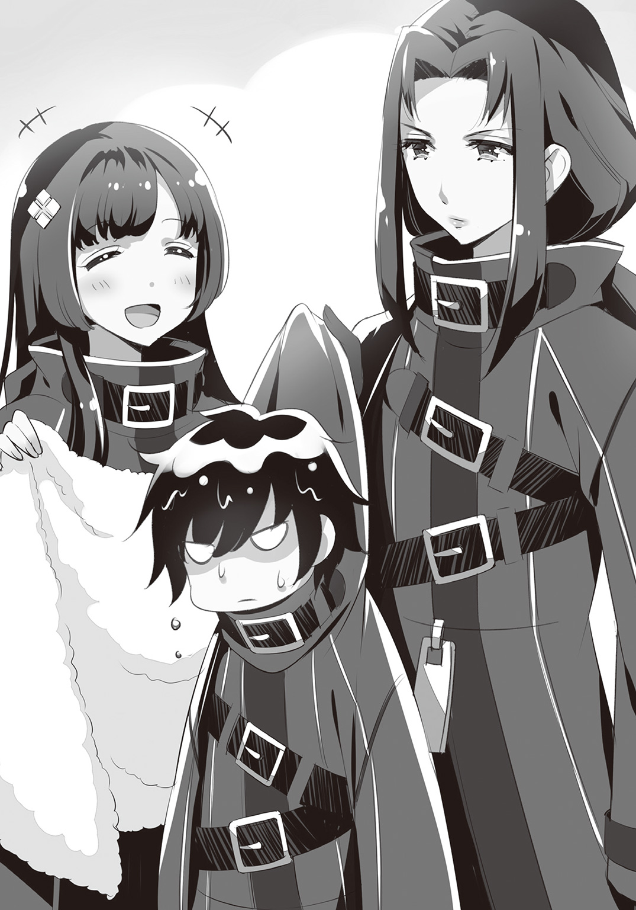
威勢よく放たれた音頭に倣って、警務部の食堂中に乾杯の斉唱が木霊した。
「くぅ～、うめえ！ 五臓六腑に沁み渡る！」
「この一杯のために戦ってるって感じだな！」
「カロリーが......カロリーが......」
宴会の火ぶたが切られるや否や、居並ぶ数十人の男女が一斉に酒と料理へかじりつく。
彼らは一仕事終えたばかりの《ネームレス》。犯罪者たちからは血も涙もない戦闘集団と恐れられているが、ひとたび戦闘服を脱げば中身は至って普通の人間。任務が終わればこうして酒盛りをしたりもする。――そしてそんな輪の中には、黒衣を纏う少年の姿もあった。
「おう、、ちゃんと食ってるか!? 今回もお手柄だったな!!」
「あんたが鍵をくすねて来なきゃ、もうひと月は七面倒な籠城戦に付き合う羽目になってたろうしね！ 遠慮せずどんどん食べなさいよ！」
大柄の男女に両脇を固められ、次から次へ料理を勧められる。ぶっとい腕でばしばしと背中を叩かれながらも、少年はぐいと杯を呷る。
「へん、あんぐらい楽勝だよ」
と、口では高慢なことを言うが、照れているらしく頰が紅潮している。きっと、わざと尊大ぶるのが少年流の照れ隠しなのだろう。それをよく知っている周囲は、にやにやと笑った。
「おうおう、流石は天下の様だ！ ......もっとも、飲んでるのがミルクでさえなけりゃもっと格好いいのになあ、残念！」
「す、好きで飲んでるんだ、ほっとけよ！ だいたい、その気になれば酒ぐらい、大樽三本でもいけるぜ！ なにせ俺はもう大人だからな！」
少年は精一杯の大人びた笑みを浮かべる。が、表情を取り繕うのに躍起になっていた彼は、背後に近づく女上司の影に気づいていなかった。
「――ほぉう、お前が大人ねえ」
ぎくりと飛び上がったは、恐る恐る振り返る。
「うげっ、ツ、ツバキ隊長......」
「くくく......お前を拾ってからもう六年か。なるほど、時の流れというのは早いものだな。風呂が大の苦手で毎日追い回されていたお前が、もう大人になったのか」
「ちょ、む、昔の話は......」
「いやあ、残念だ。テレビの中のハンバーグに食いつこうとしていたあの子はもういないのか」
「うぐぐ......」
「ああ、そういえば、お化けが怖くて私のベッドにもぐりこんで来たこともあったよなあ？ あれは実に傑作だった」
「も、もう勘弁してくださいっ！」
皆の前で黒歴史を掘り起こされたは、湧き起こる笑い声の中でとうとう降参を叫んだ。
「はははは、ツバキ隊長、もうその辺にしといた方がいいですよ。じゃないと、こわーいお姉ちゃんがやって来ますよ」
「そうそう、『をいじめちゃダメ～！』ってね！」
再び起こる笑いの渦。は悔しそうに歯ぎしりする。けれどそんな和気藹々とした雰囲気の中で、誰かがふと気づいた。
「......あれ？ そういや......その葵はどこいった？」
「ついさっきまで一緒にいたよな？ また厨房の手伝いにでも行ってんのか？」
と、皆できょろきょろし始める。そんな彼らの疑問に、ツバキが答えた。
「葵なら、さっき総務課へ行った。実家から郵便物が届いたそうだ。いつものことさ。ただ、そろそろ戻って来てもおかしくない時間なのだがな......」
外部の人間ならいざしらず、葵が警務部内で迷子になるとは思えない。別段心配はないだろうが......はすっと席を立った。
「俺、ちょっと捜してくるよ。ごはん冷めたら勿体ないしな」
「へへへ、葵のやつ喜ぶぜ。こんな大人な王子様が迎えに来てくれるなんてよ」
「ふん、勝手に言ってろ！」
からかう声を背に受けながら、は宴の席を後にする。向かう先は総務課でも葵の私室でもなく、警務部のてっぺん......屋上だ。
「――やっぱりここにいたか、葵」
「......あ、......」
優しい夜風が吹く警務部の屋上。遙か下方では無数の家々の灯りが瞬いている。上を向いても下を向いても、視界に入るのは星の海。遠い万里の彼方まで、世界は輝きに満ちている。その光景はとても美しかったけれど、どちらにも属せぬこの場所は、少し寂しい。
そんな天と地の狭間の空白に、葵は佇んでいた。
「ここ、葵のお気に入りだもんな。......隣、いい？」
「うん......おいで」
誘われるがまま、は屋上の縁に腰かける。
クインチェストの絶景が一望できるこの場所は、葵とだけの秘密の宝物だった。
「一人で何してたの、葵？」
「さっき届いた手紙を読んでたんだ。妹からの。ほら、前に話したことあるでしょ？」
「ああ......桜ちゃん、だったよね？」
「そうそう。最近お手紙を書くのがマイブームみたいなのよね。......読んでみる？」
「え......いいの？」
「ふふ、もちろん」
は少しだけ緊張しながら手紙を受け取る。けれど、渡されたそれは普通の手紙とは幾分趣きの違う代物だった。
「......えーっと、何、これ？」
「うふふ、芸術的でしょ？」
便箋上に鎮座していたのは、クレヨンで描かれた大きな絵。それも、幼い子供が描いたものらしく、ごちゃごちゃしすぎていて何が何だかわからない。辛うじて見て取れるのは『四人の人物が手を繫いでいる場面』ということだけだ。
「桜はね、まだ四つになったばかりだから字が書けないの。だから代わりに絵手紙をくれるんだ。今回の作品にタイトルをつけるとしたら......ずばり『家族』ってところかな？」
妹が可愛くて仕方ないらしい葵は、楽しげに絵の解説を始めた。
「ほら見て、これが桜で、こっちがおばあちゃん。その隣にいるのが私で、こっちは......うふふ、ねえ、これ、誰だと思う？」
と、葵が指差したのは、黒いクレヨンでわしゃわしゃと描かれた最後の一人。はムムムと眉根に皺を寄せる。正直なところ、でかい毛虫にしか見えない。が、まさか人間大の毛虫が家族であるはずもなく、謎はますます深まるばかり。そこらの暗号よりもよほど難解だ。
「ふふふ......わからない？ 天下の様もまだまだだなあ」
そうしてお手上げとなったに、葵はそっと答えを囁いた。
「正解はね――だよ」
「お、俺......？」
思ってもみなかった解答に、は頰を染める。
「帰省する度にの話をしてたから、覚えちゃったみたいなの。会ってみたいってせがまれるんだ～」
「なんか......は、恥ずかしいな......」
孤児だったにとって、〝家族〟という響きはどこかこそばゆくも温かい。そんな不思議な心地に包まれながら絵を眺めていたは、不意に本来の目的を思い出した。
「......あっ、そうだ、祝勝会！ 俺、葵を呼びに来たんだった！ さあ、早く食堂へ行こう。......俺一人だと、みんな好き放題からかうんだ」
「ふふふ、みんなが大好きだからね」
「ち、違うよ、単におもちゃにされてるだけだよ、あんなの。......とにかく、ほら、戻ろう」
照れ隠しにそっぽを向いて、は歩き始める。だがすぐに、後ろからついてくる葵の異変に気がついた。
「葵......どうかした？」
「......え？ 何が？」
「いや、なんか、いつもより元気がないっていうか......」
は自信なさげに口ごもる。なぜそう思ったのか、自分でもよくわからない。
そんな少年に、葵はいつもの笑顔を向けた。
「ううん、なんでもない。大丈夫だよ」
「それなら......いいんだけど」
と、は前へ向き直る。......その背中を今度は葵が呼び止めた。
「――あのさ......」
「どうしたの？」
やはり何かあったのかと振り返る。
葵はしばしためらった後、おずおずと切り出した。
「今度の作戦......あるよね？」
「来週末のゲルニア侵攻戦のこと？」
葵は頷くと、微かに視線を落とす。そして吐き出すように言葉を絞り出した。
「......あのね、なんだか、私......怖いの」
「な、何言ってるんだよ......！」
はひどく動揺した。葵が弱音を吐くなど初めてのこと。少女はいつだって怯える自分を励ましてくれた。だから、それが当たり前だと思っていたのだ。
「だ、大丈夫さ、心配ないよ！ みんなと一緒だし、情報班の報告によれば相手は大した勢力じゃない。いつもより楽なぐらいさ！」
慌てて少女に駆け寄ったは、一生懸命に勇気づける。それから、ちょっと恥ずかしそうに付け加えた。
「なにより、ほら、俺は強いから。葵は......俺が守ってあげるよ」
照れ隠しに首の後ろを搔く少年。誰かさんと同じその癖を見て葵はにっこりと笑った。それは、どこか儚げな微笑みだった。
「うん、そうだね――」
――――......
――......
煙草の灰がひとひら、雪のように舞い落ちた。
途中で言葉を切ったツバキは、ただ無言で指先の灯を見つめている。だからマリアは自分から尋ねた。その先に語られる悲劇を予感しながらも、それが少年の過去に踏み込んだ責任だと思ったから。
「あの......葵さんは、それから......？」
「お察しの通りさ。......死んだよ。ゲルニア戦役でな」
そうしてツバキは一際大きく煙を吐き出すと、静かに眼を瞑った。
「情報班が摑んだのは偽情報だった。敵はいずれも〝犯罪危険度Ａ級指定〟の手練れ揃い。街の至るところに罠や隠し通路が張り巡らされていた。対してこっちは街の正確な地図すらない有り様だ。多くの部下が死んだ。――その中に、葵もいた」
事務報告のような、淡々とした事実の羅列。マリアが口を差し挟む余地などそこにはない。
「はその時、葵とバディを組んでいたんだ。だが戦闘の中で二人ははぐれてしまった。......あいつが葵を見つけて、その場にいた八人の敵を肉片に変えた時にはもう、手遅れだった。すべてが終わった後で私が見たのは、血の海に横たわる葵の亡骸と、その傍らで立ち尽くすの姿だったよ」
ゆっくりと瞼を開けたツバキは、天井付近で蟠る白煙を見上げて呟いた。
「間に合わなかったのさ。あいつも......そして、私もな」
そう語るツバキの口調は微塵も変わらない。だがその言葉の端に、マリアは隠しきれない一抹の悔恨を聞いた気がした。
「さあ、もうわかっただろう？ 十八というのは、死んだ葵の年齢だ。そして何より、あんたには葵の面影がある。だからあんたを見ると思い出すのさ、あいつはね」
「それは......もうクロさんには関わるな、ということですか......？」
「いいや、逆さ。――あいつは葵を思い出す。だからこそ、あいつにはあんたが必要なのかもしれない」
「クロさんを元気づけてあげろ、と......？」
いや、とツバキはまたしても首を振る。
「今更他人の慰めなんざ必要ないさ。もう四年も、あいつは罪を抱えたままだ。仕事を辞め、街を離れ、名前まで捨てて死に場所を求めたというのに、結局あいつはまた生き残ってしまった。に戻ることもできず、クロとして生きることも叶わず、何もかもが中途半端。頭の中じゃ言い訳も開き直りも出尽くしてるだろうよ。今更外野が口出ししたところで、もう何万回と自分の中で繰り返されてきた葛藤を蒸し返すだけ。何の意味もない」
まるで自分のことのように語ったツバキは、どこか遠くへ視線を向けたまま言葉を継ぐ。
「あいつは今、天秤の真ん中にうずくまっているのさ。――大きな、大きな天秤だ。大きすぎて、きっとこのままでは押し潰されてしまう」
マリアの脳裏に、先ほど教会で見た女神像が思い浮かんだ。天高く捧げられた石の天秤。調和を保ち罪過を量る裁きの器。かの女神が司るその両の皿には、これまで一体どれほどの善と悪が載せられて来たのだろう。きっとそれは、いずれ重さに耐えきれずに自壊する。もしもその時、どちらの皿にも属せず、女神の庇護の外にいたとしたら――その先を考えるのは、何故だか無性に恐ろしかった。
「今のあいつに必要なのはきっかけだ。前へ踏み出すための、最初の一押しだ。ぐちゃぐちゃになった泥沼から這い出るには、それが必要なんだ。どんな結末を迎えるにしろ、な」
それきり言葉を切ったツバキは、短くなった煙草を握り潰しながら立ち上がった。そして次に手を開いた時、既に吸い殻は跡形もなく消えていたが、本人は特に気にした様子もなく、黙ったままの少女に問いかける。
「そういえば、あんたの明日の予定を聞いていなかったな。明日はどうする？ 私も仕事があるが、朝方なら駅まで送って行けるが？」
マリアは数秒瞳を閉じ、それからはっきりと答えるのだった。
「ありがとうございます......ですが、行き先を変えてもいいですか？」
ツバキはどこかの少年とそっくりな微笑を浮かべて頷いた。
第三章 臆病猫には色がない
ドンドンドン、ドンドンドン。礼儀もへったくれもあったもんじゃないノックが、ベッドで丸くなっていたクロの鼓膜を揺らした。少年はうーっと唸り、布団を頭から被ってシャットアウトしようと試みるが、ノックの主は一向に立ち去ろうとしない。渋々ながら布団を撥ね退けたクロは、寝癖だらけの頭をぽりぽり搔きつつドアへ向かう。
「はいはい、今出ますよ、って――」
「おはようございます、クロさんっ！」
眼前に現れたのは、弾けるようなマリアの笑顔だった。
「な、なんでお前が......?!」
「えへへ、ツバキさんに送ってきてもらいました」
「ぐっ......こいつ、厄介な後ろ盾を......！」
この来訪がツバキの手引きによるものだとしたら、それはマリアの行動を承認しているということ。すなわち、暗に「この子の面倒を見ろ」と命令しているのだ。これぞパワハラ。元上司による無言の圧力である。
「そんなことより、クロさん。悪い夢でも見たんですか？ なんだか顔色が優れないようですが......」
「ああ、今まさに見てる最中だ」
「うふふ、まだ夢の中なんて、クロさん寝ぼけてるんですか？ もう朝ですよ～」
嫌味が通じないどころか、逆に寝坊助の烙印を押される始末。クロはすべてを諦めた。
「......で、今日は一体何の用だ？ ツバキ隊長に免じて、用件ぐらいは聞いてやる」
「それはもちろん、晩餐か――」
「却下だ」
「え～!? 最後まで言わせてくださいよ～！」
ぱしっと突っぱねてはみたものの、元上司の圧力がある以上追い返すわけにもいかない。仕方がないので、クロは代替案を講じることにした。
「まあそう膨れるな。代わりにいいところへ連れてってやるから」
「えっ、本当ですか!? やったあ！」
と、心底嬉しそうに返事をしてから、マリアは軽く首をかしげた。
「......で、どこへ？」
「情報屋の集まる場所さ。あんた、親父さんの過去を知る相手と直接会いたいから晩餐会へ参加しようとしてるんだろ？ なら別の知人がいるならそっちでもいいわけだ。まずは親父さんの過去を調べて、そこから他の知人とコンタクトをとってみるのさ。少なくとも一人ぐらい、『泥棒屋を集めて晩餐会だ！』なんて奴よりはまともな知り合いが見つかるだろうよ」
「あっ、確かに！」
マリアは今更気づいたように頷いたが、その後でふと尋ねた。
「......でも、そんな人いるんでしょうか？」
「さあな、それがわからないから調べるんだろうが。そら、行くぞ。目指すはクインチェストの中央広場――センドル・スクウェアだ」
こうして目的に近づいているうちは、奔放なお嬢様も大人しくしてくれるだろう。内心そんなことを考えながら、クロはいつものコートを手に取った。
――――......
――......
「へえ～、ここがセンドル・スクウェア......すごいにぎやかなんですね！」
大広場に着くなり、マリアは感嘆の声を上げた。
面積にしておよそ五千ヘクタール。見渡す限りの超巨大広場には、これまたとんでもない数の人々が行き交っていた。混沌さ加減で比べれば、昨晩泊まった警務部といい勝負。少女が驚くのも無理はない。
「まあここら一帯の街含めても一番でかい広場だしな。だからこそ人と情報が集まる。特にこの時期は出張遊園地が来てるお陰で......」
「出張遊園地!?」
と、その単語に大きく反応するマリア。まるで童女のような無邪気な様子に、クロはついつい仏心を出してしまう。
「......あー、なんなら、少し見て回るか？ まだ時間もあるし......」
「是非っ！」
「ただし、眼の届くところに......って、おい待てって！」
話も聞かず駆け出す依頼主の後を追って、クロは渋々走り出すのだった。
「見てください、クロさん！ 『超音速マッハコースター』ですって！ 自分の悲鳴が後から聞こえてくるらしいです！」
「いや、自分の悲鳴を聞くことにメリットを感じないというか......」
「さあ、乗りましょう！」
「次はここです！ 『リアルお化け屋敷』！ キャストは全員本物ですって！ 入場後にはリアル呪いのおまけつき！ お得です！」
「リアルにすればいいってもんじゃ......」
「さあ、入りましょう！」
「お次はこれ！ 『紐なしバンジー』！ 世界最高のスリルを体験！ うーん、楽しみです！」
「待て、お前この意味がわかって......」
「さあ、飛びましょう！」
「次はどうします？ 『亜光速コーヒーカップ』に『ジャイロ回転観覧車』、あっ『人食いイルカショー』もいいですね！」
「駄目だ、選択肢に殺意しか感じない......」
「えっ？ 全部ですか？ よーし、行きましょう！」
「だ、誰か助けて......」
と、そんなこんなで数時間。ようやく休憩用のベンチにたどり着いたクロは、すっかりくたびれ果てていた。なにせ、はしゃぎ通しのお嬢様のお守りをしつつ、過激すぎるアトラクションに打ちのめされ、合間合間で情報屋を探し回っていたのだ。しかもそれだけの苦労をしたというのに、得られた情報はゼロ。疲労困憊するのも無理はない。
そして一方のマリアはというと、未だ元気一杯なのであった。
「いやあ、それにしてもすごかったですねっ！」
興奮冷めやらぬ様子で、マリアは少年の肩をぺちぺちと叩く。
「クロさん、どこが一番面白かったですか？ 私は断然『モンスターメリーゴーランド』です！ 本物のペガサスに乗れるなんて、もう感激です！」
「そうだな......あいつらが肉食じゃなければもっと良かったんだがな。......お前、三回ぐらい食われそうになってたの気づいてるか？」
と、精根尽き果てて遠い目をするクロ。そんな少年を尻目に、マリアはしみじみと呟いた。
「ああ......なんだか、私は全然世界を知らずに生きてきたみたいです」
「へえ、ようやくそれに気づくとは、一歩前進だな」
「もうっ！ 真面目に言ってるんですよ！」
茶化すような返答に、マリアは憤慨する。
「前にも言いましたけれど、私、サンディスリングスの外に出たのは初めてなんです。父は一度も許可してくれなかったので......」
「なかなか賢明な父親じゃないか。感謝するべきだ」
クロがそう答えると、マリアも一応は頷いた。
「そ、それは、私のことを考えてだとはわかっていますが......でも、お屋敷にいたら、私はこんなに不思議な体験はできませんでした。それで思ったんです。私はもっと、自分の知らないこの世界を、自分自身の眼で見てみたい。ねえクロさん、世界には、他にも素敵なものが一杯あるんでしょう？」
「......ああ、そうだな」
夢を見るような少女の瞳を前に、クロは否定しようとはしなかった。
「ここは混沌都市だ。この街にはすべてがある。人間のたかだか百年ぽっちの寿命じゃとても見て回り切れないほど、色々なものが存在しているよ。建物がすべてお菓子でできた村や、重力がなくて誰でも空を飛べる山。それから喋る小鳥だけが住む森や、水の代わりにダイヤモンドが流れる滝とかな」
それはマリアにとって期待していた通りの答え。少女はまだ見ぬ素敵な世界を思い浮かべ、うっとりと顔を輝かせる。......けれど、クロの言葉にはまだ続きがあった。
「でもな、それは嫌なものも同じ数だけ......いや、楽しいものよりもずっと多く存在してるって意味でもある。〝すべてがある〟ってのは、そういうことだよ。親父さんはきっと、そんな目を背けたくなるような地獄をたくさん見てきたんだろう。だからあんたにだけは、小さくても綺麗な世界で生きていてほしかったんじゃないのかね」
「そうかもしれませんが......でも私は......」
マリアは唇を尖らせる。クロもまた、それ以上言い募ろうとはしなかった。人間の、それも十八という若い少女の中に眠る好奇心が、赤の他人の説得程度で収まるはずがないのだ。
「まっ、最後に決めるのはあんた自身だ。親父さんだって、きっとそう思ってたさ」
「......はい！」
クロは優しく微笑む。
少女の純朴な前向きさは、どんな宝石にも勝る至宝であると知っていたから。
「さて、そろそろ次行くか。こうなったらお前の気が済むまでとことん付き合って――っ!?」
と、ベンチから立ち上がったクロは、急に目つきを険しくして黙り込んだ。
「クロさん？ どうかしました？」
「――マリア、すぐに帰るぞ」
「え......？ ど、どうしたんですか、いきなり......？」
「いいから、黙ってついてこい」
肌にぴりりと突き刺さる、冷たい悪意。
それこそが、少年が態度を豹変させた理由。クロは確かに感じていた。人混みの中からこちらを狙う視線を。そう、まるで楽しい玩具を見つけた子供のような、無邪気で冷酷な悪意――
「――行くぞ、マリア」
故に、クロは離脱を急ぐ。マリアの手を取り人波を搔き分けてひたすら出口へ。
けれど、雑踏に不慣れな少女にとっては性急すぎたのだろう。出口を目前にしてつまずいたマリアは、地べたにへたり込んでしまった。
「あっ、痛っ......」
「っ！ すまん、大丈夫か？ だが今は我慢してくれ、でないと――」
焦燥感を顕にしながらもマリアの腕を摑んで起こすクロ。だが、我慢しないとどうなってしまうのか、マリアがその先を聞くことはなかった。
「よお、姉ちゃん、大丈夫かい？」
「ひどい彼氏だね～、痛くなかった？」
「へへへ、急ぎ過ぎる男は嫌われるぜ、あんちゃん」
進路を塞ぐように立ちはだかったのは、派手な衣裳の男たち。右にも左にも、同様の格好をした男が待ち構えている。
いつの間にか二人は、全方位を取り囲まれていた。
「......俺から離れるなよ」
マリアへ向けて小さく耳打ちすると、クロは一転して媚びるような愛想笑いを浮かべる。
「やあ、どうもどうも、良い天気っすね。へへ、妹の奴、昔っからどんくさくてね、どうもお見苦しいところを見せてしまったようですいやせん」
揉み手をしながらへらへら頭を下げるクロ。そのいたぶりがいのない態度に、前を塞ぐ男たちは拍子抜けしたような表情になった。
「あー、ところで、どんなご用件で？」
「わっかんねえか？ この状況で？」
「へへ、すいませんね、どうも昔っから鈍い鈍いと言われる質でして」
「んだよ、本物の阿呆かよこいつ」
男たちの間に侮りと油断が広がる。無論、それがクロの狙いだ。
マリアの手を摑んだクロは、その一瞬の隙をついて身を翻す。――だが、包囲の輪を抜けるまであと一歩というところで、二人の前に新手の男が立ちはだかった。
「――おいおい、どこへ行くんだい、お兄さん？」
現れたのは真っ赤に髪を染め上げた瘦せ男。チャラチャラとした装飾だらけの上着を纏い、化粧を施した顔にニヤニヤ笑いを浮かべている。周囲の男たちの反応を見る限り、どうやらその赤髪が一味のボスらしい。
「どうも素敵な赤髪の旦那、いやあ、そのお洋服もお似合いで――」
瞬時に表情を切り替え、再びへつらおうとするクロ。だが最後まで言い切ることはできなかった。赤髪の男は高圧的なにやけ顔のまま、クロの腹部へ不意打ちの一蹴りを見舞ったのだ。
「う、ぐっ――」
「うひひ、どうだ、アルザスさんの蹴りは効くだろう？」
周囲の男たちが喧しく囃し立てる。無論、元特殊部隊のクロにとってそんなものは児戯にも等しい攻撃。――だが何故か、クロは反応できなかったばかりか、その場でがくりと膝をついてしまった。
「だ、誰か......助けてっ......！」
マリアは思わず悲鳴をあげる。だが、周囲の者たちは当然の如く見て見ぬ振り。それどころか、マリアたちを避けるようにして人通りが綺麗にわかれている。......他人の厄介事に首を突っ込まないこと。それはこの街では当然のルールなのだ。
「見ず知らずの人間に助けを請うなんて、お前の妹さんってのは随分と世間知らずなようだな」
そんな非情な戒律をよく知っている赤髪の男――アルザスは、少女の愚かな行いを嘲笑する。それから舐め回すようにマリアの全身を値踏みすると、下賤な微笑みを浮かべた。
「だが......いい女だ」
アルザスの手が少女の体に伸びる。恐怖で固まってしまったマリアは動くこともできない。
けれど、その指先が少女の柔肌に触れる直前、うずくまったままのクロの手が赤髪の腕を摑んだ。
「てめえ、邪魔するとは......ん？」
苛々した表情でクロを睨むアルザス。だがあることに気がつくと、急に大笑いを始めた。
「は、ははは、なんだこいつ――ぶるぶる震えてやがるぜ！ あっはははははは」
そう、青い顔をして手を伸ばしているクロの体は、傍目にもはっきりわかるほどに震えていたのだ。そんなクロの醜態に、周りを囲んでいた男たちもげらげら笑って手を叩く。
「うひゃひゃひゃ、まあぶるっちまうのも仕方ねえさ！ なんせアルザスさんはあのドレン盗賊団の元団員だからな！」
「......ドレン盗賊団......？ アルザス......？ ふん......聞いたことねえな......」
明らかに強がりとわかるクロの台詞。だがそれが癇に障ったのか、アルザスは高笑いから一転、氷のように冷徹な顔になった。
「生意気だよ、お前ッ！」
再び繰り出される一撃。クロは防ぐこともできず正面から蹴り飛ばされ、ごろごろと無様に地べたを転がった。
「クロさん！」
悲痛な叫びをあげて、マリアは少年のもとへ駆け寄る。だがクロの眼中には、マリアも、そして自分自身さえも入ってはいない。
彼の視線の先にあるのは、地面に落ちた一通の封筒。蹴られた衝撃でコートのポケットから零れ落ちてしまったものだ。クロは這いずりながら手紙に手を伸ばす。......けれど、それを拾い上げたのは本来の持ち主ではなかった。
「おっと、落とし物のお手紙はっけーん。んん～？ ラブレターか？ うらやましいねえ」
手紙を拾ったアルザスは、茶化すような口調でクロを見下ろす。
「さてさて宛名は......なになに『さんへ』？ ははっ、おいおいなんだいこれ!? 子供が書いた字じゃないか！ まさか、お前の彼女はちっちゃな女の子かい？」
わざとらしくおどけて見せるアルザス。迎合するように取り巻きが笑う。胃のむかつくような、不快な光景。――そんな嘲笑を切り裂いて、マリアが大声を上げた。
「返してくださいっ!!」
「うわっ、なんだこいつ......！」
「ま、マリア......!?」
叫びながらアルザスに組みついたマリアは、懸命に手紙へと手を伸ばす。当然、少女であるマリアが力で敵うはずがない。だがそれでも、マリアは形見のペンダントを取り返そうとした時と同じくらい必死に、クロの手紙を取り戻そうとしていた。
「返してっ！ それはクロさんの宝物ですっ！ 返してくださいっ!!」
「くそっ、離れろって！」
「マリア......もういい、よせ......！」
クロの制止も聞かず、マリアは執拗に食い下がる。焦れたアルザスはとうとう少女の体を突き飛ばした。
「ど、どけって言ってんだろ！」
そうしてアルザスは乱れた髪を整えると、動揺を押し隠してせせら笑う。
「へ、へへ、ったく、気味の悪い女だぜ。そんなに大事なものなのか？ ......なら、俺が代わりに読んでやるよ」
だが手紙の封に手をかけた瞬間、アルザスのにやけ面が凍りついた。――理由は誰の眼にも明らか。さっきまで耳ざわりな笑い声を出していたアルザスの喉笛に、いつの間にか湾曲したナイフの刃があてがわれていたのだ。
「......ぁ......ぁあ......？」
まるで吸いつくようにぴたりと皮膚へ張り付いた白銀の刃。アルザスは全身を硬直させたまま、言葉にすらならない呼吸音を垂れ流す。時間さえも氷結した緊張の中、アルザスの背後から突然声がした。
「――どうした？ 読んでくれるんじゃないのかい？」
それは怖気だつほどに蠱惑的な女の声。短剣に目を奪われるあまり、背後からそれを突きつけている張本人の存在に、誰一人として気づかなかったのだ。
「さあ、早く読んでみせてくれ。生憎、私は気の長い方じゃないんだよ」
女は静かに促す。だがアルザスに読めるはずもない。指の一本でも動かした途端、その白刃が皮膚を突き破る未来がありありとイメージできてしまっていたからだ。
「読まないのなら、そいつは返してもらおうか？」
「へ、へへ......こ、こんな手紙にマジになんなよ......」
アルザスは震える両手で封筒を差し出す。すると、意外なほどにあっさりと、ナイフは赤髪の首を解放した。そして手紙を取り返した女は、のんびりと二人のもとへと歩み寄る。
マリアは思わず、現れた救い主の名を呟いた。
「サーシャさん......」
「やあ、一日ぶりだね、私の可愛い妾よ。我が身を捨てて難敵に立ち向かうとは、君は実に勇敢だ。ますます惚れてしまったよ」
現れたその女――サーシャは、二人へにっこりと微笑みかけた。
「すまないね。もっと早く君たちを見つけ出していれば、怖い思いはさせなかったのだが」
優しく少女の頰を撫でたサーシャは、それから跪いているクロに手を差し伸べる。
「立てるかい？」
「あ、ああ......すまな――ッ!?」
だが、その手を取ろうとしたクロは急に表情を変えた。無防備なサーシャの背後で、アルザスがナイフを抜き放ったのを見たからだ。
「サーシャ――」
咄嗟に警告を発するクロ。それよりも早く、がら空きの背中にナイフが振り下ろされる。
しかし――
「――ッ、ガ......ヒ......」
虚空に上がったのは、血飛沫でも断末魔の呻きでもなく、蛙の鳴き声にも似たしゃがれ声。――サーシャは振り返ることすらなくナイフを叩き落とし、アルザスの首を鷲摑みにしていたのだ。
「つくづく無粋な男だね。そう焦らなくとも――すぐに殺してやるさ」
サーシャは首を絞め上げたまま、片手だけでその体を持ち上げる。アルザスの顔は激痛と酸欠に歪み、体はがくがくと悶えた。だがどんなにもがこうと、エルフの腕力から逃れられはしない。そしてサーシャは冷え切った眼差しを向けたまま、赤髪の耳元でそっと囁いた。
「死体は......そうだな、どうしてほしい？ すりつぶして豚の餌にしようか？ それともぶつ切りにして花壇の肥料がいいか？」
「サーシャ......」
クロが擦れた声でサーシャの名を呼ぶ。けれど冷徹な殺意を剝き出しにしたサーシャに、その声は届かない。
「ううん、そんな地味な埋葬ではご不満かな？ ......おお、そうだ。折角遊園地に来ているんだ。剝製にして見世物小屋に寄付するのはどうだろうか。いや、手足をもいで珍獣として鎖につなぐ方が目立つかな？」
「サーシャ、もういい......」
赤髪の口角から血糊を含んだ泡が吹き出す。それでもサーシャの手は一向に緩まない。そのあまりの力に皮膚は抉られ血を流し、骨はミシミシと音を立てて軋み始めた。
「ふうむ、返事がないなあ、これも嫌なのか。......ならこうしよう。広場の時計塔、あそこのてっぺんにくくりつけておいてやる。どうだ、素敵だろう？」
凄絶なほど美しい微笑を浮かべるサーシャ。そして次の瞬間、冗談でも言っているかのような口調が突如一変した。
「――想像しろ。お前の死骸に烏が群がる様を。眼球をついばまれ、皮膚をはぎ取られる惨めな姿を。見えるか？ 滴り落ちた肉片に顔を顰める者たちが。聞こえるか？ 死肉が放つ腐臭を口汚く誹るその声が。蠅にたかられ、蛆に貪られ、腐り落ちていくお前を皆が見る。鐘が鳴る度、彼らは思い出すだろう。エルフの逆鱗に触れた愚者の醜い骸をな。さあ、喜べ。お前は街一番の有名人になるんだ。時計塔を見上げる皆がお前の体と名前を記憶に刻み込む。人々の頭の中で、お前の死体は永久に晒され続けるのだよ。いずれ噂は広がり、お前の遺骸目当てに客が来る。混沌都市で一番不快なオブジェを見るために。そしてここを通るすべての者が知るだろう。私の夫に手を出した者が、一体どんな最期を迎えるか――」
一言ごとに込められる力。今やアルザスの眼球は裏返り、全身が痙攣を始めている。こうなってはもう止められない。怒れるエルフの蛮行を阻むなど、何者にもできはしないのだから。
――だが、赤髪の首がへし折れるまで残り幾許かというところで、クロの叫び声が轟いた。
「サーシャスクィーリア」
その瞬間、サーシャの手から力が抜け落ちる。
「――もう十分だ。俺は大丈夫だから、その手を放してくれ。......頼む」
未だ蒼白な顔で震えながら、それでもクロは、サーシャの瞳を真っ直ぐに見据えていた。
「......我が夫に感謝しろ。そしてこの街から永久に失せるんだな。――次はないと思え」
耳元でそう凄んでから、サーシャは乱暴にアルザスを放り投げる。軽々と宙を舞ったアルザスの体は、遠くの茂みへと無様に墜落した。
「少し場所を変えよう。......さあ、クロ、私の腕に摑まるといい」
いかに揉め事が日常茶飯事の中央広場とはいえ、これだけの騒動を起こせば注目が集まらぬわけがない。増えてきた野次馬の眼を逃れるようにして、三人はその場を立ち去った。
センドル・スクウェアの一番はずれ。人通りはほとんどなく、小さな屋台が一つ出ているだけの休憩スペース。そこに設けられた古いベンチに、クロとマリア、そしてサーシャの三人は並んで腰かけていた。
「クロさん、あの、私、私......」
顔を伏せたまま沈黙しているクロを案じて、マリアは慰めの言葉を探す。だが彼女自身、刺すような自責の念に苛まれていた。自分が無理矢理連れ出したりさえしなければ......
無論、それは少年が過去を吹っ切るための一助になればと願っての行為ではあった。しかし結果として裏目に出てしまったことは紛れもない事実だ。
そんな狼狽する少女に、サーシャは落ち着いた口調で指示を出す。
「妾よ、そこの屋台で飲み物を二つ買って来てくれるかい？ ゆっくりでいいよ」
「は、はい......」
わたわたと駆け出すマリアの背中を見送ってから、サーシャは隣の少年へ向き直った。
「体は、まだ痛むかい？」
クロは両掌で顔を覆ったまま、小さく首を横に振る。
「うむ、元気な男の子だ。私の婿となるならば、そうでなくてはな」
憔悴しきった少年の背中を、サーシャは優しくさすった。
「......サーシャ、済まない......助かったよ......本当に......」
「何を言っている。別に君のためじゃない。君を凌辱していいのは私だけだ。宝剣のお礼をする前にぼろぼろになられていたらつまらないじゃないか。身も心も打ちのめし、屈服させて私の夫にするまでが復讐だ」
サーシャは美しいその頰に、悪戯好きの童女のようなあどけない表情を浮かべて笑う。
「は、はは......今なら、それも簡単かもしれないな......」
クロは顔を塞いでいた両手を離し、弱々しく虚勢を張った。だがその手は、ベンチの端を固く握りしめてもなお、未だに震えを抑えられないでいる。
そんな少年の冷たい手に、サーシャはそっと自分の手を重ねて囁いた。
「......ああ、そうだろうね」
重ねた手と手の指先を絡め、もう片方の掌を静かにクロの頰へ添えながら、唇が触れ合わんばかりの距離で少年の顔を覗き込むサーシャ。少年の黒く潤んだ瞳と、エルフの燃えるような紅色の瞳が、睦み合うように交わった。
「今の君を屈服させるなど、赤子の手を捻るよりも簡単だ。――体だけでなく、心もね」
サーシャの手がクロの頰を離れ、緩やかに外套の留め具を外す。そして露になった豊かな胸元へ抱き込むように、少年の全身を優しく抱擁した。
「その胸の痛みが消えるまで、ずっとさすっていてやろう。その体の震えが止まるまで、ずっと抱きしめていてやろう。悲しい嗚咽が漏れてしまうというのなら、私がこの唇で塞ごう。耐え切れない苦痛に悶えてしまうというのなら、私がこの体で慰めよう。過去が君を手放すその時まで、愛の言葉だけを捧げるよ」
サーシャが囁くのは、どこまでも温かく、この上もなく甘い、泡沫の夢への誘い。
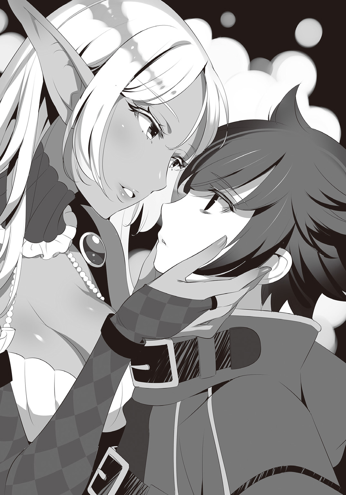
「薬は要らない。魔術も必要ない。柔らかなベッドで二人きり。それで十分だ。一晩――それだけあれば、君は堕ちる」
誇張でもなく、推測でもなく、それはただ事実として告げられていた。
「だがそれでは意味がないだろう？ 君もよくわかっているはずだ。私が与えられるのは、慰めであって救いではない。私と共にいて得られるのは、停滞であって安寧ではない。......少なくとも、今は、まだ」
サーシャは静かに、胸に抱いた少年の髪を撫でる。
「けれどもし、君がそれを望むのなら――私の腕に抱かれたまま、永遠の快楽と微睡を欲するのなら――君にはその権利がある。私の胸の中で接吻と睦言だけを与えよう」
その問いかけに対して、クロは力なく俯いたまま答えない。
サーシャはそんな少年を愛おしげに見つめると、僅かに身を離して告げた。
「では、私はもう行くよ」
そうしてそっと、サーシャはベンチから立ち上がる。優しいぬくもりを失い、ひどく怯えた表情になったクロは、気づけばその外套の裾を摑んでいた。
行かないでほしい。側にいてほしい。このままずっと、抱きしめていてほしい――そう叫びそうになる自分を、少年は唇を嚙んで押し殺した。
「......よくこらえたね。いい子だ」
少年の葛藤を見守っていたサーシャは穏やかに呟く。そして、愛する我が子を抱く母親のような慈しみを込めて少年の黒髪を撫でると、その小さなおでこにキスをした。
「さあ、これを。もう落としてはいけないよ。君の大切な道標だ」
差し出されたのはサーシャが取り返したあの封筒。寸刻の逡巡の後、おずおずと手を伸ばしたクロは、未だサーシャのぬくもりが残るその手紙を受け取ると、消え入りそうな声で呟いた。
「......サーシャ、ありがとう」
「なあに、構わんよ。私は君を愛しているのだからな」
そうして嫣然と微笑んだサーシャは、踵を返して少年に背を向ける。
そこへ、紙コップを持ったマリアが小走りで戻って来た。急がなくていい、とは言われたものの、やはり居ても立ってもいられなかったらしい。
「やあ、お遣いを頼んでしまって悪いね。私はひとまず帰るよ」
まるで散歩帰りか何かのように軽い調子で手を振るサーシャ。対してマリアは、眉根を不安そうに歪めたまま、縋りつかんばかりにサーシャのもとへ駆け寄る。
「さ、サーシャさん......私、どうすれば......」
「さあ、それは君の自由だ」
サーシャの返答は、ともすれば突き放したとも思えるような簡潔なもの。ただ、マリアが今にも泣き出しそうな顔をしていたので、サーシャは最後に言い添えた。
「......もしも、君が少しでも彼のために何かしたいと思うのなら、側にいてあげておくれ。もしも彼が何かを話そうとしたら、ただそれを聞いてやっておくれ。懺悔とは、誰かに聞かれて初めて意味をなすものだからね」
銀紗の髪を戴くエルフはそれだけ言い残すと、今度こそ振り返ることなく立ち去った。
マリアはその背中を見送ってからベンチへと駆け戻る。少年はまだ、うずくまるように体を丸めていたが、先ほどに比べれば随分と落ち着いたようだった。
「クロさん、あの......」
おずおずとその隣に腰かけながら、マリアは紙のコップを差し出す。
「......ああ、ありがとう」
クロは苦心した様子で作り笑いを浮かべると、封筒を傍らに置いた。
「......情けないところを見せちまったな。お前に助けられるなんて」
「そ、そんなこと、ないですよ......！」
マリアはぶんぶんと首を振る。しかしそれ以上かける言葉を見つけられなかった彼女は、ベンチに置かれた封筒に目を留めた。
「そのお手紙は......昨日の......？」
「......ああ」
クロは頷いて、封筒の表面を微かに撫でる。
「桜からの手紙だよ」
「葵さんの、妹さん......」
「......それを知ってるってことは、ツバキ隊長から話は聞いたみたいだな」
「ご、ごめんなさい！ 私、その、余計な詮索を......」
「いいや、別に構わないさ......」
そう言って、クロはまじまじと掌の封筒を見つめる。そして囁くような声で話し始めた。
「最初にこれを受け取ったのは三年前だったよ」
「えっと......手紙には、なんと？」
その問いかけに、クロはうなだれたまま首を振る。
「それは......わからない。読めなかったんだ、俺は。もし......もし恨み言が書かれていたらどうする？ 姉を返せと言われたら、どうすればいい？ だから......手紙が届く度、俺は毎回無視したよ。――返事の代わりに、泥棒屋で稼いだ金を送りつけてな」
すると、クロは突然乾いた声で笑い始めた。
「最低だよ。ああ、くそったれだ。憎まれて当然なのに。守れなかったのは俺なのに。妹の言葉すら受け止めようとしねえ。金を送る？ はは、ははは、赦してもらうための手間賃さ。あはははははは ――本当に、最低だ」
少年の言葉は今や研ぎ澄まされた白刃となっていた。その振り下ろされる先は、自らの心臓。幾度も、幾度も、繰り返し。鮮血を吹き上げる一番柔らかなその箇所を、返り血にまみれながら斬りつける。抉れども抉れども消えてくれないその惨痛を、また次の苦悶で塗り固める。それは底なしに愚かで、どこまでも無意味な、際限なく繰り返されてきたであろう自傷行為――
「そんなに自分を責めないでください！ 葵さんだってきっと、クロさんに傷ついてほしくはなかったと――」
そのあまりの凄惨さに堪えきれなくなったマリアは、思わず遮ろうとした。しかし――
「勝手なこと言わないでくれ」
クロは血反吐を吐くような声で叫ぶ。それは、酒場でテーブルを殴打したあの時と同じ......いや、それ以上に哀切な、断末魔の叫びにも似た慟哭だった。
「そんなこと、わからないじゃないか！ 俺が追いついた時、葵はもう喋れる状態じゃなかった......！ あいつはただ、俺に微笑みかけただけだったんだ。でも俺には、その意味がわからない......もう死ぬって時に、どうして笑っていられたんだ？ 間に合わなかった男に、なんで笑顔なんか見せたんだ？ 言葉にしてくれなきゃ、わからない、わからないんだよ......！」
少年は両手で額を押さえたまま、耐え切れぬ苦痛に悶えるかのようにその身を縮める。
「あいつは......葵は俺の恩人なのに......盗むことしか知らなかった俺に、それが罪だと教えてくれたのに......。あいつは人の温かさを教えてくれた。こんな俺に名前をくれた。それだけじゃない。俺の重ねてきた罪を赦すと、あいつはそう言った。罪人を赦すことが罪だとしても、それでも俺を赦すと――」
現世の地獄と呼ばれた罪過の都。そんな不浄の地に産み落とされ一人きりで生きていた幼い少年にとって、それがどれだけの救いになったことか。マリアには窺い知ることすらできなかった。野良猫同然に生きていた過去と比べれば、彼女と過ごした時間は歓びの日々だっただろう。それこそ、一己の人間として生まれ変わったと言っても過言ではないのだから。
けれどマリアは、その甘き夢想の果てを知っている。
「――だけど俺は、守れなかった」
枯れ木が風に鳴るように、空しく響く少年の声。
「俺はまた、泥棒稼業に逆戻り。くれた名前も捨てた。あいつがせっかく赦してくれた罪も、みんな自分で汚しちまった。怖いのさ。あいつを守れなかったこの罪を、どう贖えばいいのかわからない。あの時のことを思い出す度に震えがくるんだよ。どうしようもないぐらい、怖くなるんだよ。体が動かなくなっちまうんだよ......情けねえ......」
少年の深黒の瞳からは、涙の代わりに抑えようのない自己嫌悪が零れ落ちていた。その姿はまるで、度重なる拷問に憔悴し、もはや身悶えする力すら失った末、ただ死だけを求める罪人のようで――故に、それは最初から救いなど存在し得ない、少年の哀しき懺悔だった。
「......これでわかっただろ。悪いが俺は、使い物にはならない。......はは、最初にあんたが言った通りだよ。だから、すまない――他をあたってくれ」
「あ、あの、私は――」
「あんたみたいな奴に会えてよかったよ。この街ではみんな、前よりも後ろを見てる。じゃねえと、大事なものを盗まれちまうからな。......だから、あんたのように真っ直ぐ前だけ見て進んで行ける奴ってのは珍しいんだ」
少女の唇からは、もう言葉が出なかった。彼女は神でも聖女でもない。眼前の少年を慰める魔法など、どうして持ち得ようか。
「......さあ、帰るぞ。警務部までは送って行く。そこで夜を過ごして、朝になったら今度こそ真っ直ぐ家へ帰るんだ、いいな？」
それは決して、命令するような強い口調ではなかったが、少女には逆らうことができなかった。だがそれでも、歩き始めたクロの背中に、マリアは言う。
「私はそれでも、クロさんは弱くなんてないと......思います」
少年はただの一言も答えなかった。
――――......
――......
クインチェストの街に暁の光が差した。すがすがしい夜明けの匂いが辺りに満ち渡る。そんな朝一番の陽光の中に、ぽわぽわとした足取りで歩くマリアの姿があった。
天気は快晴。そよ風も心地良い。マリアの気分はそれだけでうきうきである。遙か頭上では巨大なドラゴンが飛び交ったりしているけれど、ご機嫌な彼女の眼には入らない。
そんな少女が向かう先は、言うまでもなくクロの家。
――他をあたってくれ――
昨日の少年の言葉はもちろん覚えている。もう関わらない方がいいのでは、とも思う。いや、身を引くのが正解だとも少女は理解していた。――けれど、それではあまりに悲しすぎるではないか。
「〝未来は前にしか待っていない〟――ですよね、お父様」
こういうのを「大きなお世話」と呼ぶのだろう。それでもマリアは、少年を放っておきたくはなかったのだ。
（私、絶対帰ってあげないんですからねっ！）
故に少女はずんずん進む。あえて明るく。胸にペンダントを輝かせながら。一直線にクロの家を目指して。
......背後から声をかけられたのは、そんな折だった。
「――お嬢ちゃん。ちょっといいかね？」
マリアを呼び止めたのは、善良そうな老人。何やら困っているらしいその男は、懐から街の地図を取り出して尋ねる。
「道を教えてもらいたいんだがの......警務部ってのはどっちだったかな？ 老眼なものでなあ、地図がぼやけちまうんだ」
「警務部ですか？ それならあっちの......ほら、あの屋根が見えてる一番大きな建物ですよ」
「おぉ、あれか。助かったよ」
と、老人は心底ほっとしたように微笑む。
「それとなあ、ついでと言っちゃなんだが、ひとつ道案内を頼めるかな？」
「ええ、もちろんです！」
元気に頷いてから、マリアは慌てて付け加えた。
「ただ、私もこの街に来たばかりなので、お役に立てるかはわかりませんが......」
「ああ、それなら大丈夫だ」
自信なさげなマリアに、老人は首を振る。その様はなぜだか異様な確信に満ちていた。
「――わしの行きたいところには、お嬢ちゃんがいるだけで入れるからのう」
「え――？」
老人の手が再び懐へ伸びる。
けれど取り出されたのは地図ではなく――見覚えのある真っ赤な封筒だった。
「あなた、もしかして――!?」
その意味に気づいた瞬間、背後からハンカチで口を塞がれた。精神を犯す強烈な薬品の匂い。眼前の景色がぐにゃりと歪む。
マリアの思考は、そこで途切れた。
――――......
――......
「――は？ お前、今なんて言った!?」
小鳥の囀りが木霊する朝。子犬は無邪気に吠え回り、路地裏に咲く草花も顔を上げた。目覚めたばかりのクインチェストの街並みは、優しい朝日に抱かれている。
――そんな平穏な空気を切り裂いて、クロの声が轟いた。
「もう一度言ってくれ、サーシャ！」
問いかける先は、今しがた来訪したばかりのサーシャ。戸口に立つ銀髪のエルフは、最初と同じ言葉を繰り返した。
「――妾が誘拐された。つい先ほど、ボルレオ通りでのことだ。恐らくは、ここへ向かう途中だったのだろう」
はっきりと告げられるその言葉。クロの顔色ががらりと変わる。
「ま、待てよ、それは確かな情報なのか!? だって......だって、あいつは帰ったはずだろ!? 何かの間違いってことも......！」
「......残念ながら、誘拐犯の仲間から直接聞いたことだ」
「仲間から直接......？ おい、それどういう意味だ!?」
「私の方にも来たんだよ。妾を攫った奴らの同胞が。もちろん返り討ちにしたがね」
「お前のところにもだと？ 目的は？ 目的は聞き出したんだろうな!?」
いつになく焦るクロは、まともに考えることもできずただ問いかけを繰り返す。
そんな少年に、サーシャは簡潔な答えを差し出した。
「口で語るよりも見た方が早いだろう......ほら、奴らが持っていたのがコレだ」
サーシャが提示したのは、絢爛な赤い封筒。その血のような紅は見間違えようもない。――晩餐会への招待状だ。
「犯人は招待を受けていた泥棒屋......!? そうか――！」
ある仮説に思い当たり、クロは眼を見開く。......その続きをサーシャが引き取った。
「泥棒屋にとって最も大切なもの、それは依頼主だ。恐らくは昨日、私たち三人が共にいるところを見て、私と妾が君の依頼人であると思い込んだのだろう。この待ち伏せ計画もそこで思いついたんだろうね。晩餐会とやらへの参加資格として誘拐することを」
そうして冷静に状況を伝え終えると、サーシャは深く俯いた。
「......この私としたことが、大切な妾を奪われるとは......一生の不覚だ」
サーシャは口惜しそうに目を伏せる。けれど、クロの動揺はそれ以上だった。
「――くそっ、全部俺のせいだっ......！」
吐き捨てるような言葉と共に、クロの拳が激しく壁に叩きつけられた。骨に響くほどの痛みさえ、今のクロは感じない。
「あの場にいたのに、見られていたことにも気づかなかったなんて......！」
クロは己の迂闊さに腹が立ってしかたがなかった。他の泥棒屋からの悪意を察せられなかったのは、同業者である自分の失態。遅すぎる後悔とはわかっていても、少年はぎゅっと唇を嚙む。
「昨日の状態では仕方がないさ。私だって、あんな三下どもの視線など一々気にしてはいなかったよ」
サーシャは消沈する少年の背をそっと撫でると、それから次なる指針を口にした。
「それよりも、これからどうするかを考えよう。妾を攫った目的が晩餐会だとしたら、行き先は開催地であるフリゲートの街で間違いないだろう。場所もルートも私が知っている。後は、君がどうするか、だ」
その問いかけに、クロはいきりたって答える。
「んなもん決まってんだろ！ 今すぐ助けに――」
だが少年は、最後まで言い切ることができなかった。
晩餐会に出席して、盗品であるマリアを返却してもらう。筋書だけならなんてことのない話。だが主催者の意図が読めない以上、危険は常につきまとう。もしまたマリアを庇いながら戦わねばならなくなったら、自分は少女を守り切れるだろうか――？ 自問するまでもない。その答えは、どうしようもなく震える体が一番良く知っているのだから。
「......はは......いや、いやいや、か、考えてみれば、別に俺は関係ねえんだ......」
クロは引きつった笑みを浮かべて呟く。
「だって......だってそうだろ？ 俺はあいつの依頼を受けたわけじゃねえ。だからあいつは依頼主でもなんでもないのさ。はは、攫った泥棒どももとんだ勘違いをしたもんだ」
この場には誰一人彼を責める者などいない。だというのに、少年の口からは自己弁護の言葉が溢れて止まらなかった。
「そうだよ、たった一日と一晩すごしただけだ。ほんの顔見知りさ。そんな奴のためにわざわざ出張る義理はねえ！ それに、それに俺は言ったぞ。帰れって、何度も何度も。それをまた、勝手に出歩いて、それで捕まって。はは、救いようのない奴だ」
憑かれたようにぶつぶつと呟くクロ。サーシャはそんな少年を、ただじっと見つめていた。声をかけようとはしない。そうするべきではないと知っていたから。
「親父の過去だって？ ふん、そんなもん忘れて、とっとと帰っちまえばよかったんだ。昨日だってそうだよ。あんな手紙のために勝てもしない相手に刃向かうなんてよ、阿呆のやることだ。役に立たない泥棒屋なんか、構わなければこんなことにならなかったんだ。ほんと、馬鹿だぜ、どうしようもない、馬鹿ばかりだ......」
クロはぎゅっと瞼を瞑り、唇を嚙み締めた。だがどんなに視界を閉ざそうと、敵わぬ相手に立ち向かう背中が脳裏に焼きついて離れない。どんなに耳を塞ごうと、くだらないことではしゃぐ笑い声が鼓膜に木霊して消えてくれない。
愚直なまでに前向きだった少女の、星をまぶしたように輝く瞳。その面影が、いつか守れなかった誰かと重なった時、クロは静かに目を開いた。その瞳には未だ、抑えきれない恐怖が蜷局を巻いて息づいている。......けれど、その深奥にはほんの少しだけ、芽吹いたばかりの決意が瞬いていた。
「――サーシャ、フリゲートまでの案内、頼めるか？」
第四章 金の義眼は何を見る？
馬車、蒸気機関車、量子変換式輸送システム、魔導座標転移、そして徒歩。あらゆる移動手段を駆使した二人は今、フリゲート手前の丘陵に立っている。だが眼前の目的地を見下ろすことはできなかった。なぜなら街は数百メートルはあろうかという巨大な壁に覆われ、その内側を垣間見ることさえ不可能だったのだから。
「......こりゃまたすごいな。フリゲートってのは昔からこんな街だったのか？」
「いいや。数十年ほど前に立ち寄った時はこんな無粋な壁などなかったよ。きっと主催者が作ったものだろう。......どうやら晩餐会のためだけに街一つ丸ごと買い上げたようだね。とても正気の沙汰とは思えない」
眼前の光景に、サーシャはその整った眉をひそめた。
「そして集まっているのは全部同業者、か」
二人の視線の先は、壁の一角に設けられた関所。そこが唯一の入口らしく、フリゲートへの入場を希望する人間はみな、関所の周りに集まっていた。その数、五百はくだらない。
「さて、それじゃあ私たちもエントリーを急ごうか」
マリア奪還を果たさんと、サーシャは早速丘を下り始める。けれど、クロは足を止めたままその背中を呼び止めた。
「......サーシャ、ちょっと待て。その前にはっきりさせておきたいことがある。俺は――」
だが、わざわざ言われるまでもなく、サーシャはクロの意図を理解していたようだ。
「――〝単独行動〟、だろう？」
「あ、ああ......」
ずばり言い当てられたクロは、頷きながら眼を泳がせた。
「ふふ、わかっているよ。どちらにしろ、まずは別行動を取った方が効率的だしね」
「すまない。お前の強さはよく知ってる。けどやっぱり俺は、誰かと一緒に危険な仕事は......」
この期に及んで身勝手がすぎることは自覚しているのか、クロは申し訳なさそうに口ごもる。だが、最後まで言い終える前に、サーシャの方からそれを遮った。
「謝りすぎだ。......私はね、謝罪の言葉より感謝の言葉の方が好みだよ」
「......ありがとう」
「うむっ、それでいい。さあ、晩餐会へと行こうじゃないか」
サーシャはにっこりと微笑むと、まるでエスコートしようとしているかのように手を差し伸べる。あまりに優雅で自然な動作に惑わされ、クロはついついその手を取りかけたが、ハッと我に返ると頰を赤らめながら歩き出した。そんなクロの様子を見て一層顔をほころばせたサーシャは、何も言わずに少年の後に続く。
そうして二人は、並んで丘を下って行った。
「――こんにちは。此度はフリゲートへようこそおいでくださいました」
マネキンじみた笑顔の女が、これまた人形のような動きで深々と礼をした。その胸元には〝受付係〟のプレートが輝いている。
丘陵を下り、壁の前の列に並ぶことおよそ三十分。ようやく自分の番を迎えたクロは、これからエントリーを始めようとしているところであった。
「晩餐会への参加をご希望でしょうか？」
「参加っていうか......あの、盗られちゃったんですけど......」
「そうでございますか。それはそれは、ご愁傷様でした」
クロが自信なさげに告げると、受付嬢はひどく辛そうな表情を取り繕う。
「ですが、招待状の文言通り晩餐会の最後にはお返しいたしますので、どうぞご安心ください」
「へえ、そりゃ安心しました。......そこでなんですがね、えっと、盗まれた物を確認することってできますかね？ なにぶん、本当にここへ持ち込まれたかも怪しいもので」
マリアの居場所を突き止める意味も兼ねて、クロは探るように尋ねる。すると、受付嬢はあっさりとその問いに答えた。
「盗品の照会でしたらこちらではなく、会場となる旧領主城一階の盗品保管室で可能となっております」
「ここじゃできないのか......わかった、なら参加するよ」
「ありがとうございます。それでは、こちらが記念の品になります」
そう言うと、受付嬢は薄茶色の巾着袋を差し出す。中にぎっしり詰まっていたのは正真正銘、オルツ金貨だった。
「お、俺も貰えるのかい？ 盗品との引き換えじゃなく......？」
「ええ、どうぞお納めください。進んでおいでになった方もそうでない方も、泥棒屋であればみなお客様というのが主催者様の方針ですので、皆様にお配りしております。勿論、晩餐会当日に配布予定の金貨三百枚もお受け取りになれますのでご安心を」
「へえ、気前がいいんだね」
「恐縮でございます。......では、晩餐会までの過ごし方について、一点だけ注意事項を説明させていただきますね」
クロは合いの手代わりの愛想笑いを浮かべたが、受付嬢はおざなりな反応を見せるだけ。どうやら、マニュアル通りに話を進める以外のことには興味がないらしい。
「フリゲート入場後は、二日後の晩餐会終了まで街の外へは出られません。こちらに関してはいかなる事情があっても厳守していただきますので、予めご了承ください。......それでは、どうぞごゆるりと晩餐会までおくつろぎくださいませ」
そうして完璧な角度のお辞儀で送り出された先に待っていたのは、レンガ造りの美しい街並み。眼前に広がる景色に目を奪われたクロは、小さく嘆息を漏らす。
けれど、そんな景観をぶち壊すような異物が一つ。あろうことか街の中心にそびえていた。その正体とは、警務部本棟の十倍はありそうなコンクリ製の城郭――旧領主城だ。正四面体にドーム屋根を載せただけの形状に飾り気はなく、のっぺりとした壁には覗き穴サイズの出窓があるだけ。さしずめ強固な要塞か、もしくは堅牢な刑務所にしか見えない。
と、そんな旧領主城を遠望していたクロの背後から、聞き慣れた声がした。
「やあ、すごい城だね」
声をかけてきたのはサーシャ。勿論彼女は泥棒屋ではないが、朝方返り討ちにした泥棒屋の封筒で入り込んだのである。
「お互い、どうやら簡単に通れたみたいだな」
「そうだね、本当に盗んだ物かどうか確認すらしなかった。これならわざわざ短剣を一本くれてやる必要もなかったようだ。私の前に並んでいた男など、ただの石ころで悠々と通過していたよ。まさに来る者は拒まず、と言ったところか。......受付の説明やこの壁からするに、去る者は執拗に追う質らしいがね」
クロは同意するように顔をしかめる。
「やっぱりどう考えてもまともじゃねえ。金で釣った泥棒屋を使って何をするつもりなんだ？」
「さあてね。泥棒屋のご機嫌を取って、何か大規模な盗みでも企んでいるのか。だが何にしろ、例の晩餐会とやらが始まる前に脱出するべきだと思うね」
「同感だ。主催者が動き出すより先にマリアは取り返す」
晩餐会後に盗品を返すという文言を鵜呑みにするほど、クロは楽観的ではない。そして何より、今まさに辛い目に遭っている少女を、一秒でも早く楽にしてあげたかったのだ。
「そのためにも、まずは情報収集だね。私は脱出ルートを探してみるよ。君が妾を盗み出して来たところで、ここから出られなければ意味がないからね。まあこれだけ広い街だ。どこかに抜け道ぐらいあるだろう」
「......ありがとう、そっちは頼む」
そうして立ち去るサーシャの背中を見送った後、クロは旧領主城へと視線を向ける。
今すぐ正面突破でマリアを救い出せたらどれほどいいか。だがクロは自分がそんな英雄でないことを知っている。しかしそれでも、ちんけな泥棒屋にだってできることはあるのだ。
『タヴァン・デ・グレス・シュヴァリエ』――フリゲートの街で最も古いこの酒場は、今宵もまた大盛況を極めていた。酔っぱらって喧嘩をしている者あり、そのどちらが勝つかで賭けをしている者あり、店のど真ん中を占領して数十人もの大所帯で騒いでいる集団まである。
そんなひどく騒々しい酒場の片隅で、冴えない少年と美しいエルフというちぐはぐな二人組は、並んでカウンターに腰かけていた。
「――それで、城内の様子はどうだったんだい？」
酒場を満たす喧噪の中で、サーシャはグラスを片手に問う。
同じく杯を手にしたクロは、静かに答えた。
「ああ、構造は把握した。盗品保管庫にも行ってみたよ。面会はできなかったが、マリアは確かに盗品として牢屋に入れられているとさ」
「盗品扱いか......妾の身が心配ではあるが、場所が特定できたのは大きいね。......警備の方は？」
「守衛は雇われの護衛屋が四人。全員実力はそれなりで、配置は扉の前に一、中に三。手動の警報装置は中と外に一つずつだ。扉自体には特に仕掛けはない」
「なんだ、思ったより簡単そうじゃないか。それぐらいの警備なら君にとっては朝飯前だろう？」
「ここまでなら、な。面倒なことに〝不眠虫〟がついてやがる。保管庫全体があれの縄張りだ」
〝不眠虫〟――正式には『オオドラタタキ』。縄張り意識が非常に強く、外から踏み入ってくる者を感知するや否や、巨大な銅鑼をぶっ叩いたかのような大音量で鳴く防犯用の魔蟲だ。希少種であるためそうそう目にすることはないものの、泥棒屋として何度も手を焼かされた経験のあるクロにとってはある意味馴染み深い魔物である。
「ほほぅ、これはまた珍品を持っているものだな、主催者殿は」
「ああ。なだめ役の守衛も保管庫内に缶詰。他のルートもない。壁も床も相当な厚さだし、発破を使うのもマリアを巻き込みかねないから駄目だ」
「まさか、お手上げと言うんじゃないだろうね？」
「いいや、手はある。......が、それには少し仕込みが必要だ。お前の力も貸してもらいたい」
クロにそう言われると、サーシャは素直に嬉しそうな微笑みを見せる。
「ふふ、いくらでもどうぞ。君のためならなんだってするよ。今すぐに必要なことかい？」
「いや、宿に帰ってから頼むよ」
と答えたクロは、それから聞き役に回った。
「......それよりも、街の様子はどうだった？」
「うーん、そうだね......一言で表すなら......『天国』かな、君たち泥棒屋にとっては。なにせ食べ物も飲み物も相場の半額以下。周りは同業者ばかりで気兼ねないし、何より厄介な警務部もいない。ここへ逃げ込んで来た指名手配犯は数知れずさ」
「はは......ゴキブリホイホイにしか思えねえな」
「まったくだ。できれば早々にお暇したいところだが......そっちの方も芳しくない」
そう言って、サーシャは渋い表情を浮かべる。
「不眠虫の件もそうだが、どうやら主催者殿は魔物収集に凝っているらしくてね。それも、単なる趣味に留まらず、なかなか実践的に有効活用しているようだよ」
「まさか......」
サーシャの言わんとしていることを理解したクロは、ぴくりと眉の端を持ち上げた。
「〝龍喰い蔓〟だ。あれが街を囲む壁一面に植え込まれている。何があっても外へは出したくないらしいね」
「また厄介な代物を......」
「それ抜きにしても壁際の見張りは相当厳重だ。無論、それでも私と君だけなら突破は可能だろう。だが、妾を連れてとなると話は別になるかもしれん」
クロは眉根に皺を寄せた。マリア奪還の他に、街からの脱出というもう一つ面倒な課題が浮上してしまったのだ。......ただし、悪い報告ばかりではなかった。
「まあ、引き続き脱出経路の捜索は続けてみるよ。逃げ道を探しているのは我々だけじゃないみたいだしね」
「......どういう意味だ？」
クロへの返答として、サーシャは一つの単語を口にした。
「〝脱出組〟――と呼ばれている集団がいる。君のように意図せずここへ来たか、もしくは貰うものを貰ったからさっさと外へ出たいという泥棒屋の集まりさ。もちろん、脱出口の情報を売ろうとしている情報屋もね」
普段は協調性の欠片もない泥棒屋たちも、利益が絡むとなれば徒党を組みもする。どこまでも現金なのが泥棒屋という生き物の習性だ。
「彼らの話によると、どうも地下水路から外へ出られる可能性があるらしい。もしも脱出口が見つかったら報告が来るはずだよ。......ま、それなりの代金は必要だろうがね」
「金が絡むなら仕事は確かだろう。そりゃようやくの明るい話だな」
クロはほっと息をつく。だが表もあれば裏もあるのが混沌都市の常。サーシャの話にはまだ続きがあった。
「......ただ、彼らの逆もいるらしい。一応こっちには注意した方がいいかもしれないよ」
「脱出組の逆っていうと......まさか、主催者から盗みを働こうって輩か？」
サーシャは呆れ気味に頷いた。
「そういうことだ。なにせこの晩餐会の主催者は、街一つ丸々買い上げたうえにこれだけ気前よく金をばらまくほどの大富豪。それが警務部のいないこの街にいるんだからね。泥棒屋からしたらこれ以上の獲物はないだろう？ さしずめ〝強奪組〟といったところかな？ ......ほら、後ろにいるあの集団もそうだよ」
クロは促されるままに振り返る。サーシャが示すのは先ほどから大騒ぎしている大集団。よくよく目を凝らせば、そこには見知った顔が並んでいた。
「『黒百合のリーズ』に『うっかり者のジッド』、その隣は『ホラ吹き上手のアルノラス』か......。なるほど、どいつもこいつもＢ級指定の手練れ。血気盛んな奴ばっかりだな」
「他にも二つ名持ちがごろごろいるよ。ちょっとした軍隊規模さ。噂によると、今夜にでも行動を起こすらしい。なんともはや、欲望に忠実なことだ」
「とすると、あの騒ぎは前祝いってやつか。しかしあんだけ飲み食いしてちゃかえって大損だな」
「それが、案外そうでもないらしいよ」
と、サーシャは肩を竦めた。
「主催者殿はこの街を丸ごと買い上げたんだ。だから領内の店の利益はすべて旧領主城の宝物庫へと搬送されている。......つまり、彼らからすればどうせ後で盗み返す金。実質タダ同然ってわけさ」
「ははは......同類ながら、つくづく呆れる強欲さだ」
クロは苦笑いを浮かべると、それから急に真面目な顔になった。
「サーシャ、確認するが......強奪組の狙いは宝物庫だけなんだな？」
旧領主城の盗品保管庫にはマリアが幽閉されている。もし強奪組が盗品にも手を出そうとしているのなら、見過ごすわけにはいかないのだ。......けれど、そんな心配は杞憂だったらしい。
「ふふ、安心したまえ。盗品の方に興味はないようだよ。......考えてもみろ、彼ら自身が石ころやガラクタで入場したんだ。それをわざわざ取り返しに行くほど、彼らも暇じゃないさ」
「そうか......わかった。ありがとうな、サーシャ」
安堵の表情を浮かべるクロ。サーシャはにこりと微笑んで、そっと席を立った。
「礼などいいさ。君のその顔が見られるならね。......さて、私は宿に戻るが、君はどうする？ なんなら私と一緒に帰って、二人きりで飲み直し、なんていうのもいいと思うのだが？」
サーシャに耳元で誘われたクロは、少し頰を染めながら視線を逸らした。
「お、俺はこいつを飲んでからにするよ」
「ふうん、そうかい。......なら、後でこちらから君の部屋へ行くとしよう」
「な、なんでだよ!? 別に用なんかないだろ？」
「おいおい、たまげたな。女が男の寝室へ出向く理由を、こんなところで言わせる気かい？」
と、サーシャは妖艶に微笑む。
からかわれているのに気づいたクロは、ふいっとそっぽを向いた。
「そういうのいいから、もう帰れよ！」
「ふふふ、それじゃあまた後でね」
「来ても入れてやらないからな」
「ああ、それなら問題ない。こんなこともあろうかと、個室に鍵のない宿を選んでおいた」
「こいつ、余計な悪知恵を......！ とにかく、来るなよ、絶対だからなっ!?」
「ふっふっふ、いやあ、楽しみだなあ」
聞いているのかいないのか、エルフは踊るような足取りで去って行く。クロはその背中を見送りながら、不安げに杯を呷るのだった。
時刻は夜半。とある宿屋の一室で、クロは窓辺に腰かけていた。いつものコートはベッド脇に畳まれ、今の彼を覆うのは薄い肌着一枚。そんな少年が何をしているかと言えば、手にした双眼鏡で外の景色を覗いている様子。ただ、視線の向こうにあるのは小鳥や星空といったありきたりな鑑賞物ではない。もっとずっと汚らしいもの――泥棒屋。総勢数百人に上る泥棒屋の集団が、黒々とそびえる旧領主城へとぞろぞろ入城していくところだ。
クロは今、話に聞いた強奪組の動向を観察しているのである。
と、そんなあまり楽しくないバンディット・ウォッチングにいそしんでいる少年の背後で、微かに扉の軋む音がした。
「――やあ、こんな夜更けに星でも見ているのかい？」
聞こえて来たのは、相変わらず美しい響きを孕んだサーシャの声。どうやら先ほどの宣言通りやって来たらしい。クロは窓の外へ視線を向けたまま、呆れたように答えた。
「いいや、そんなに綺麗なものじゃねえよ。......というか、来るなって言ったろ」
「いけずなことを言わないでおくれよ。君があまりに来るな来るなと言うものだから、逆に来てほしいというフリなのかと思ったのだが？」
「ふん、そんなわけあるか！」
そっぽを向いたまま、クロは小さく鼻を鳴らす。けれどそれに対するリアクションはなく、ただ静かに扉の閉まる音がした。
「で、用件は......、っ！」
と、ようやく振り返ったクロは、思わず息をのんだ。
純白のガウンから零れ落ちるように露出した肉感的な肢体。湯浴みを終えたばかりなのか、微かに濡れた銀髪は普段にも増して艶めき、しどけなく緩んだ胸元から覗くのは、はち切れんばかりに自己主張する柔らかな双丘。ガウンの白とコントラストをなすような褐色の肌が、ランプの灯りを弾いて仄かに照り輝いている。優美と言うにはあまりに扇情的で、淫靡と呼ぶにはあまりに無垢。夢魔とエルフ両方の血を引くサーシャだけに赦された、雄の本能を震わせる絶世の美貌。――少年の背後に立っていたのは、あられもなくその極上の躰をさらけ出した半裸のエルフだった。
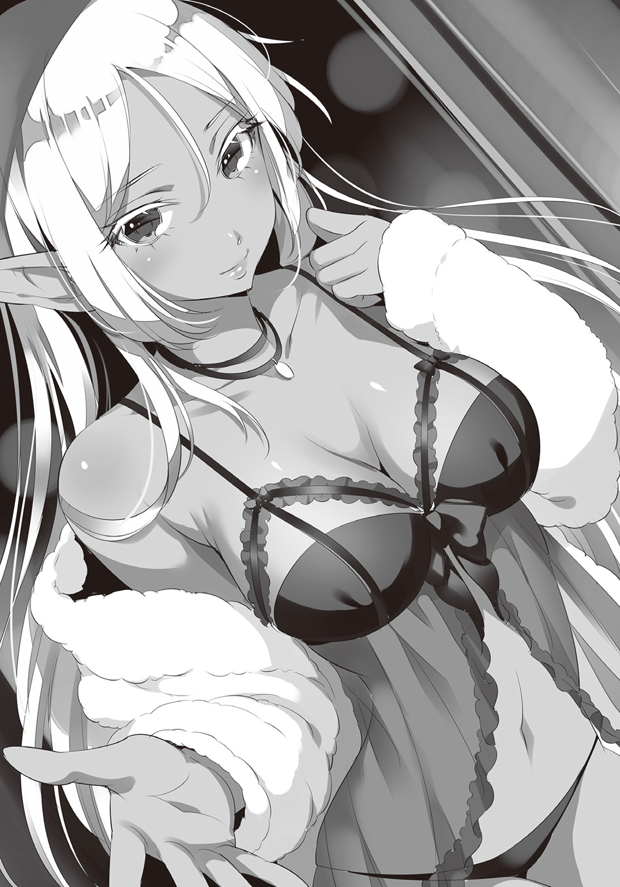
「よ、用件は何だ......？」
サーシャの軀体から溢れる色香を辛くも理性で撥ね退け、どうにか視線を窓の外へ戻しながら、クロは言いかけていた言葉を繰り返す。けれど、サーシャからの返事はなく、ただ猫のように押し殺した足音が近づいてくるだけ。
「おい、サーシャ......？」
微かな疑念を抱いて振り返ろうとしたその時、クロは背後から柔らかく包み込まれた。
肌着一枚越しに感じるサーシャの肉体。張りと柔らかさとを両立した胸の弾力が、はっきりと背中に伝わってくる。その得も言われぬ甘い感触に、少年の鼓動はむやみと高鳴ってしまう。
そんな少年の心中を知ってか知らずか、サーシャは真っ赤になった耳元に唇を近づけて、からかうような調子で囁いた。
「いや、なに。隣室の男が娼婦を連れ込んできたようでね。五月蠅くてかなわないから避難して来ただけさ。ふふ、どうやらなかなかに激しくお楽しみのようだったよ」
瑞々しい唇から紡がれるのは、耳に心地の良い協和音。そんなエルフの美声の裏側に、淫魔特有の淫らな艶が含まれている。脳髄をとろかす甘く優しい囀りと、全身の血を沸騰させ劣情を搔き立てる淫靡な囁き。矛盾した二つの感覚が脳髄の奥でせめぎあい、快感物質を強制的に引きずり出す。狂おしいほどに官能的なそれは、まさしく麻薬のような声だった。
「おや？ 君にはまだこの手の話は早かったかな？」
赤くなったクロの顔を、サーシャは横からそっと覗き込む。しなやかに垂れた銀髪が少年の首筋をくすぐり、芳しい花の香りに混じった淫らな女の匂いがふわりと薫った。少年の視線は無意識に、挑発的な微笑を湛える薄紅色の唇に吸い寄せられてしまう。
今や少年は、真紅の花弁に吸い寄せられる一匹の蜂と同じ。いやむしろ、食虫植物に引き寄せられた哀れな羽虫、だろうか。色と香りに惑わされ、その柔らかな花びらの奥に迷い込んだが最後、待っているのは底なし沼のような快楽。二度と這いあがることは叶わぬまま、身も心もどろどろに溶かされ、そのすべてを啜り取られる......
だがそんな自分の様子を真紅の瞳が愉快そうに眺めていることに気づいて、クロは無理矢理視線を逸らした。
「す、少し離れろ」
少年が赤い顔でそう突っぱねると、サーシャはくすりと意味深に笑う。まるで、少年の稚拙な妄想などお見通しだと言わんばかりに。けれどもサーシャは何も口にすることもなく素直に少年から離れ、そのままベッドへ体を滑り込ませた。
「......さっき頼んだ薬、調合の進捗はどうだ？」
シーツが擦れるその音を必死で無視しながら、クロは平静を装って尋ねる。
「無論、順調さ。後は一晩寝かせるだけだ。明日の朝には持っていくよ」
「そうか......助かる」
「それで、そっちの首尾はどうなんだい？」
「ついさっき強奪組がおっぱじめたところだ」
そう言って、クロはぎこちなくも窓の外を顎で示した。
「一緒に行っても良かったのではないのか？ 混乱に乗じて、は君の十八番だろう？」
「ああ、それも考えたんだが、混乱した城内でマリアを連れ回すのは避けたい。どんな厄介事に巻き込まれるかわからないからな。......結局、今夜一番安全なのはあの保管庫の中さ」
クロが答えると、サーシャは納得したらしくすぐに頷いた。
「なるほどね。だったら、早いところ寝ておいたほうがいいんじゃないか？ 見ているだけなら無意味だろう」
「あ、ああ、まあそうなんだが......」
サーシャの放つ至極真っ当な正論に、クロも一応同意はするものの......
「なら至急横になりたまえ！ さあ、さあ、さあ！」
ちらりと視線を向けたベッドの上では、サーシャが自分の横に空けたスペースをばしばしと叩いている。そんなところにのこのこ向かうなど、開いた竜の口に身を投げるも同然。クロは溜め息をつくと、喧しい催促をスルーして戸口へ向かった。
「おい、どこへ行くっ!?」
「適当な木の上ででも寝るさ。お前とじゃ俺の身が危ういからな」
と、エルフから視線を逸らしながら、ぶっきらぼうに答えるクロ。そんな少年を、サーシャは意外にも引き止めはしなかった。......ただし、クロの手がドアノブにかかるまでは。
「――ふうん、それは残念だ」
まさにクロが退室しかけたそのタイミングでぼそりと呟くサーシャ。その意味ありげな一言に、クロは思わず立ち止まった。そうして上手く獲物が釣れたところで、サーシャは独り言に見せかけた殺し文句を放つ。
「あーあ、残念すぎて、薬の調合を間違えてしまうかもしれないなあ」
「なっ、こいつ......！」
急所を突くその言葉にクロはぎりぎりと歯ぎしりする。だが、ここで弱味を見せるのはむしろ悪手。クロは努めて平静を装う。
「はんっ、そんな脅し通用しねえぞ。さっき、後は一晩寝かせるだけだって言ってたじゃないか」
しかし、エルフ相手に駆け引きをしようなど百年早い。サーシャは素知らぬ顔で肩を竦めるばかり。
「ああそうさ。でも私とて神様じゃない。ついうっかり、鍋にネズミの脾臓やコウモリの肝臓を放り込んでしまうということもなきにしもあらずさ。......特に、愛する夫に無視されて寂しい夜を過ごした後なんかは、そういうことが起こりやすいともっぱらの噂だよ？」
そうして悪戯っぽく微笑みながら、サーシャは誘うように少年の瞳を覗き見る。
「う、うぐぐ......」
無論、本当にサーシャがそんなことをしでかすわけがないとわかってはいた。だが、お互い口には出さなくとも、先日ベンチで慰めを受けたあの時から、精神的な主導権はサーシャが握りっぱなし。クロには逆らうことができないのである。
そんな事情から、不本意ながらもクロは、好色家のエルフが待ち受ける寝床へと身を投じるしかないのであった。
「よーしよし、いい子だ」
ぐへへへ、と邪悪な笑みを浮かべたサーシャは、まるで野良猫にでもするように唇をちゅちゅちゅと鳴らす。だがクロはベッドの端っこぎりぎりに陣取ってそっぽを向いたまま。振り向こうともしない。そんな少年を見て、サーシャは、ふむ、と唇を尖らせた。
「こっちを向いてはくれないのかい？ シャイだね、君は」
つまらなそうに呟きながら、サーシャはもぞもぞとクロの背中へにじり寄る。対してクロは、ダンゴ虫のように背中を丸めるばかり。絶対防御の構えである。......が、それがかえってサーシャを本気にさせてしまったようだ。
「まあ、私としては別に構わないけどね」
不穏な台詞と同時に、サーシャの人差し指が少年の背中に触れた。そしてそのまま、つつーっと下へ這わせていく。強すぎず、弱すぎず、絶妙な力加減。こそばゆさに身をよじりそうになるのを、クロは懸命にこらえた。ここで反応しては余計サーシャを喜ばせるだけ。それは何としても避けねばならない。......けれど、そんな瘦せ我慢もすぐに通用しなくなる。最初はじゃれつく程度だった手つきが、次第に恋人に対する愛撫のような艶めかしい色を帯び始めたのだ。
背中、脇腹、臀部、そしてうなじ。軽く触れられているだけなのに、悪疾を患ったかの如く全身が火照りだす。とめどない快楽の波にのまれ、クロは今にも嬌声を上げてしまいそうだった。だがそれも当然と言えば当然のこと。夢魔の血を引くサーシャと成人すらしていないクロでは初めから勝負になどなるはずがない。
そんな圧倒的実力差を存分に味わうサーシャは、少年の耳元に唇を添えると、そっと囁く。
「おいしそうな耳たぶだ」
そしてクロが反応するより先に、その耳たぶを愛おしげに甘嚙みした。
豊潤な唇と少し尖った歯の感触。熱い吐息が吹きかかり、唾液がねっとりと耳朶に絡みつく。その優しすぎる不意打ちに、クロはとうとうこらえきれず声を上げた。
「ひっ......お、おい！ いい加減に――」
だが、振り払おうと体を仰向けにした瞬間、その動きを待っていたかのように、サーシャはするりとクロに覆い被さった。
真正面から交差する二人の視線。クロの頭の中で警鐘が鳴り響く。彼は致命的な失態を犯したのだ。褥の上で夢魔と視線を合わせること、それはすなわち心身を支配されることを意味する。だが今更気づいたところでもう遅い。既にクロは燃えるような緋色の瞳から目を逸らせなくなっていた。あらゆる種族を魅了する夢魔の瞳。その妖しい瞬きに魅入られてしまった者は、たとえ高潔な聖職者であろうと身も心も捧げずにはいられない。
「んん？ どうした？ 眠らないのかい？ 君が構ってくれないから、せめて寝顔だけでも堪能しようと思ったのだが」
わざととぼけた口調のまま、サーシャはその整った唇の端を歪める。魔性の瞳に囚われた少年が、今や自分の虜となっていることは知っていた。だからこそ焦らしているのだ。
「そ、それは......それは、サーシャがちょっかいだすから――」
少年の口を突いたのは、まるで叱られた子供のような言い訳。戯言の一つでも口にすべき場面だというのに、サーシャの甘い吐息が孕む官能に侵され、思考が半分も働いてくれない。視界を覆う豊満な媚体と、むせ返るような女の匂いに、脳の奥まで痺れていく。
「み、見ないでくれ......っ......」
クロは哀れに懇願した。少年にはもう、憐憫を乞うことぐらいしかできなかったのだ。
けれどサーシャは、そんな少年を無慈悲に嘲笑う。
「おやおや、素が出てしまっているぞ？ いつもみたいにつんつんしなくていいのかい？」
小悪魔のような声で囁いたサーシャは、まるでクロに見せつけるかのように、ゆっくりと舌なめずりをした。唾液に濡れてぬらりと光る、常人よりも幾分細長い薄紅の舌。その下品なまでに艶めかしいピンクの肉が、まるで凌辱するかのように可憐な唇を這いずりまわる。倒錯的な淫蕩にまみれた光景に、クロの眼は釘付けになっていた。
「まったく、からかうだけのつもりだったのだが......そんな表情をされてはたまらなくなってしまうじゃないか。――ああ、実にそそられるね」
サーシャはうっとりと恍惚の表情を浮かべながら、呆けた少年の真上で耽美な嘆息を漏らす。その甘い吐息がクロの全身を内側から滾らせ、悩ましげな視線がどうしようもなく淫慾を搔き立てた。
「ふふ、いい子だ」
少年の上に覆い被さったまま、サーシャはその頰に右手を伸ばしてゆっくり撫でる。たったそれだけで、少年の体はびくびくと悶えてしまう。暴力的なまでの快楽。脳髄が溶け出すような錯覚。少年は必死で唇を嚙んで耐えようとしたが、サーシャはそれすら許さない。優しく唇を撫でてやれば、もはや嚙むだけの力も抜け落ちて、少年はただ弛緩しきった表情を晒すのみ。
「大丈夫、怖くないよ」
サーシャの左手が少年の肌着の下へ潜り込んだ。ひんやりとしたしなやかな指先が、火照り切ったクロの体を這う。直に触れている分だけ、背中をくすぐられていた時とは比べ物にならないほどはっきりサーシャを感じてしまう。繊細な指先が肌を滑る度、背筋はぞくぞくと震え鳥肌が止まらなくなるのに、体の芯だけは熱くて熱くてたまらない。心身が異常なまでに昂っていくのは自覚できても、それを抑える術がない。
色香に溺れゆく少年を見るサーシャの口元には、ぞっとするほど妖艶な微笑が浮かんでいた。
「恥ずかしがらないで。今ここにいるのは、君と私の二人きりだ。誰も見ていない」
ねっとりと囁きながら、サーシャはさらに肌着の奥へと五指を這わせる。臍の周囲を丹念に撫でさすった後は、みぞおちをなぞるようにして指先を滑らせ、最後に激しく脈打つ左胸へ。それはいずれも人体における急所となる箇所。他人に決して触れさせてはならない不可侵の領域。だというのに、すっかり骨抜きにされた少年には、繊麗な細指から与えられる眼も眩むほどの法悦に抗うことができなかった。
詰るようにねちっこく、弄ぶように愉しげに、いたぶるようにじっくりと。絶世の美貌に淫靡な微笑を浮かべながら、指先で肉体を凌辱し、視線で精神を蹂躙する。少年を嬲るサーシャの姿は、例えるならば女郎蜘蛛。糸のかわりに快楽で獲物を絡め取り、毒液の代わりに愛情を注ぎ込んで、最後には骨の髄までむしゃぶり尽くす。貪欲にして美しい極彩色の狩人のようで――
そうしてサーシャは愛撫を中断すると、今度は上気しきったクロの頰を両掌で優しく挟む。それから操り人形同然となった少年の瞳を覗き込んで、とどめの一言を囁いた。
「――私にすべてを委ねろ」
サーシャの潤艶な薄桜色の唇が、ゆっくりと少年に近づく。それが接吻の前触れだとわかっていても、クロはどうしても拒めなかった。ひとたび舌先を絡め合えば、きっと甘く優しい快楽に耽溺したまま戻って来られなくなるだろう。だがそれでもいいと思う自分がいた。このまま契りの口づけを交わし、どこまでもサーシャと融け合うことができるのなら、それに勝る幸福はないとさえ思った。夢魔の呪縛に囚われた今のクロにとっては、徐々に近づくサーシャの瞳だけが世界のすべて。仄かに煌めきを帯びるその紅の瞳は、我が子を慈しむ母親のような、男を堕落させる淫婦のような、愛する夫に奉仕する従順な細君のような......けれど、二人の唇が触れかけたその時――
「......ッ！」
クロは突然我に返ると、歯を食いしばりながら顔を背けた。
「......すまない、サーシャ、今は......」
目を伏せたまま苦しげに呟くクロ。唇を重ねる刹那、彼の脳裏に浮かんだのは、牢獄に独り囚われたマリアの姿だった。ぼろきれを着せられ、粗末なベッドで寝かされているであろう少女。その境遇が頭をよぎってしまえば、自分だけ温かな寵愛を甘受する気になど到底なれるはずがない。
きっと、そんな少年の心情がわかっていたのだろう。サーシャはもう無理矢理振り向かせようとはしなかった。後ろから少年の体を搔き抱くと、優しく抱きしめたまま頭を撫でる。先ほどまでの淫らな気配は鳴りを潜め、そこにはただ、深い深い慈愛だけが込められていた。
「初めて出会った時と同じだね。――君はいつも、私ではない他の女を見ている」
そう語るサーシャの口調はどこまでも優しく、少年を責める意思など微塵も感じられない。だがクロの胸は、自分の身勝手さにじくじくと痛んだ。
「......ごめん。エルフの掟を知らず、お前を縛りつけてしまったこと、ずっと悪いと思っていた。......お前なら、俺なんかじゃなく、もっと――」
「――ああ、まったくだ」
クロの言葉を遮るようにして、サーシャはやれやれと溜め息をついた。
「自慢するわけじゃないが、私は世界で最も優れた妻だと自負しているよ。君がどんなに甲斐性なしでも養う用意があるし、何人愛人を作ろうと構わない。薬学を心得ているから健康管理もお任せあれだし、料理だって大の得意さ。ほうら、これ以上の優良物件なんてあると思うかい？ 浮気公認、実家が豪邸、おまけに一途で器量も抜群。そして何より、淫魔を凌ぐほどの床上手。......そんな良妻と枕を共にしながらそっぽを向くだなんて、君は存分に罪悪感を覚えるべきだ」
仄かに冗談めかした自画自賛。サーシャはそれから、少しだけ真剣な表情になって続ける。
「だけどもし、掟が私を縛りつけていると、君がそう考えているのなら、それは大きな間違い......いや、私に対する許し難い侮辱だよ。掟だから、嫌々君と結ばれようとしているだなんて思っているのかい？ 私がそんなに軽い女に見えるのかい？ ......確かに掟は絶対だ。我々にとってその戒めを破ることは、すなわち自らの尊厳を捨て去ることを意味する。そして我々は、尊厳なき生を決して許容しない。......けれどね、だからと言って掟を破れないことはない。簡単な話さ。生を諦めれば済むだけのこと。現にかつての私は、君を殺し、その後で自害しようと考えていた。心に望まぬ者と添い遂げるぐらいなら、死など少しも怖くはなかった」
それは一抹の虚偽も虚飾も混じらない、実に直情的な彼女らしい告白。
「だが君を殺すために追いかけているうちに、私は君のことを知った。そして疑問を持ったんだ。我々エルフは数千年の時を生きる。それに比べて人間はせいぜい百年。しかも、君はまだ二十歳にもなっていない。私から見れば、君など赤子同然だった。......だというのに君は、その小さな胸を痛みで一杯にして、抱えきれない過去を引き摺りながら、あまつさえ、死をも望んでいた。私にはまったく理解できなかったよ。儚く消える身でありながら、自分から苦しみを背負い込もうとする君がね。だから興味が湧いた。だから観察し、調査した。調べれば調べるほど、君をもっと知りたいと思う自分がいた。気がつけば、もう調査などどうでもよくなっていた。君という一人のちっぽけな人間と、ずっと寄り添っていたいと思ったんだ。......ふふ、切り刻んでやるつもりで追いかけていた泥棒屋を、いつの間にか愛おしく思うようになるなんてね。不思議なものだよ、本当に」
痛切に、心から、訴えるかの如く囁いて、サーシャはぎゅっと少年を抱きしめた。
「だからね、どうか、私のこの想いに対して謝罪などしないでおくれ。私に君を諦めろとだけは、決して言わないでおくれ」
温かな体温と安らかな鼓動が染み透るように伝わってくる。そのぬくもりは包み込むようにクロの心を癒し、それ故にひどく傷つけた。
「でも、それじゃあお前が......」
救われない、報われない、幸せになどなれはしない。そんな言葉を口にしかけたクロの後ろで、サーシャは莞爾と微笑む。
「幸か不幸か、我々は悠久の時を与えられた種族だ。待つことなどなんら厭わない。......君は知っているよね。私の母は、森の深奥に芽吹いた万年百合の花精霊と契ったんだよ。一万年に一度、たった一晩だけ咲く、その花とね。だから私は、かつて聞いた。寂しくはないか、後悔をしたことはないか、と。――母はね、『今でも幸福だ』と心からの微笑みでそう答えたよ」
サーシャの手がクロの頰に触れた。しなやかな指先から、じんわりと彼女の脈動が流れ込んでくる。
「だからね、クロ。焦らないでいい。君がその生を全うし、老いて死に往くその今際の際にでも、たった一言、心からの愛の言葉を囁いてくれれば、それだけで私は、残りの数千年を幸福に生きていけるんだ。私たちは、そういう生き物なのさ」
「っ、サーシャ、俺は――！」
堪えきれずに何か言いかけるクロ。サーシャの人差し指が、その言葉を遮るように唇へ押し当てられた。
「いいから。言ったろう？ 私は急がない。私がそうであるように、君も君の心が赴くままに生きればいいさ」
そうして甘く抱擁したまま、サーシャは乞うように囁くのだった。
「――ただ、少しわがままを言わせてくれるのなら、今夜、君の傍らで眠ることだけは許しておくれ。......今はそれで、十分だ」
クロはそっと寝返りを打って、サーシャと向き合った。それが今の少年にできる精一杯の誠意だった。その気持ちを理解していたのだろう。サーシャは心から嬉しそうに微笑むと、その嫋やかな胸に、優しく少年を抱きしめた。
※※※※※※
夜が更けて、日が昇る。街を囲う絶壁を易々と越え、朝日がフリゲートの街を照らした。開店したばかりの『タヴァン・デ・グレス・シュヴァリエ』に、人影はまばら。そんな閑寂とした店内の片隅で、少年とエルフが向かい合って座っていた。二人はただ黙々と、質素な朝食を摂っている。互いに目を合わせることもなく、二人の間には食器の鳴る音が響くだけ。傍目には、そんな彼らの仲は険悪に見えるかもしれない。だがそれも仕方のないことだろう。少年とエルフとの間に介在するのは、心の通った者同士にのみ許された沈黙。他人に理解できようはずがない。――言葉こそなかったけれど、それはどこまでも心地よい静謐だった。
しかし、平穏な朝はそう長くは続かなかった。客が増えるにつれて、店内を二つの噂話が飛び交い始めたのだ。
一つは脱走組について。とうとう脱出ルートが見つかったという話。
そしてもう一つは強奪組について。だが、こちらは良い噂ではなかった。
――強奪組が全滅した。誰一人戻っては来ない――
クロとサーシャは今一度思い知った。この晩餐会が想像以上に危険であることに。
※※※※※※
「犯罪危険度Ｂ級を含む数百人が全滅か......なかなか大したものじゃないか、主催者殿は」
「他人事じゃねえぞ。一体どれだけの戦力を飼ってやがるんだ......？」
交錯する噂話に耳を傾けながら、浮かない面持ちで言葉を交わし始める二人。
先ほどまでの穏やかな時間など、もうどこにも見当たらない。
「それで、君はどうするつもりだい？」
「ここが胡散臭いことなんて最初から承知の上さ。やることは変わらねえよ。......マリアを助け出してトンズラするまでだ。幸い逃げ道は見つかったみたいだしな」
指針を問われたクロは、なんてことなさそうに答える。だがそこからさらに、サーシャは一つの問いかけを放った。
「......君がそうまでして危険を冒す義理はあるのかい？」
彼女の言わんとすることは当然クロにも伝わった。嫌と言うほど正確に。けれど......いや、だからこそ、クロは質問自体を否定する。
「サーシャ、悪役になろうとしてくれるのは嬉しいが......お前にはあまり似合わないよ」
わかったような口を利かれたのが癇に障ったのか、それとも見透かされていたのが癪だったのか、サーシャは不機嫌そうに鼻を鳴らした。
「ふん、なら教えておくれ、舞台監督さん。君は私に、どんな役を演じさせたいんだ？」
言葉の端々に棘を含ませるサーシャ。クロは途端に目を泳がせる。
「あー......俺は......その、お前には......あの......」
言いにくそうに口ごもったクロは、ボリューム最小で結論を述べた。
「......先に、離脱してほしい」
対するサーシャの答えは――沈黙。
放出されるプレッシャーを前に慄いたクロは、慌てて言い訳を口走る。
「こ、今回の件、どうも嫌な予感がするんだ！ 俺じゃ......俺たちじゃ、対処しきれないような......そんな気がするんだよ。お前が傷ついたらと思うと、やっぱり俺は、耐えられない......」
「嫌な予感、ねえ......」
と、なぶるように繰り返すサーシャの瞳からは、抑えようのない......というより抑える気がさらさらない不機嫌オーラが溢れ出ていた。
「なら、尚更置いては行けないのが妻の心情だ。君はそんなこともわからない朴念仁なのかい？」
「あ、いや、お、俺は大丈夫だから！ ほら、強奪組がやられたのは宝物庫を狙ったからだろ？ マリアがいるのは盗品保管庫、警備だってたかが知れてるさ。な？」
クロは大慌てで取り繕うも、そんなことではボロが出てしまうのも当たり前。
「ふうん、さっきは危険だから離脱しろと言い、今度は危険はないから心配するなと言う。君の舌は一体何枚あるんだい？ キスをして確かめてみてもいいだろうか？」
「うぐっ、それは......」
矛盾を突かれたクロは、たじたじになりながら言葉を詰まらせる。勿論、そんな少年を哀れんで追撃の手を緩めるようなサーシャではない。
「だいたい君は守られる側の気持ちを考えたことがあるのかい？ そりゃ正義のヒーローごっこは気分がいいだろう。だが君が危険な目に遭う姿を見せられるこっちとしてはたまったものじゃないね。想い人が傷つくのを傍観しているぐらいなら、その万倍の苦痛を自分で受けた方がまだマシと言うものさ。私だけじゃない、こんなもの誰に聞いたってそう答えるに決まっている」
「お、おっしゃる通りで......」
「そもそも、私を気にかけようというその上から目線が気に食わない。本気の君とやり合った私の実力、忘れたわけではないだろうね？ あの時でさえ君の盗みは半分しか成功しなかったのだから、その気になれば今の君程度、五分もあれば剝製にして屋敷に飾るぐらい造作もないのだよ？ なんなら、今から夫婦喧嘩といこうか？ んん？」
「うぅ......」
もはやぐうの音も出なくなってしまったクロ。怒り心頭のエルフは、小さく縮こまった少年を睨みつける。けれど、今にも泣き出しそうな顔を見て多少溜飲が下がったのか、その眼光が不意に和らいだかと思うと、サーシャは溜め息交じりに呟いた。
「......なんてね」
そうして、おどおどとこちらを窺っているクロに肩を竦めてみせる。
「君がそう言うのはわかっていたよ。舌の枚数を数えるまでもなく、君の心は一つだ」
「それってつまり......！」
サーシャの言葉を承諾と受け取ったクロは、ほっと安堵の吐息をついた。
「ありがとうサーシャ......わかってくれて......！」
「いいさ。夫を立てるのも良妻の素養のうちだからね」
束の間、二人の間に流れる感動的な空気。......が、それは大きな早とちりだった。
応じるように微笑んだサーシャは、平然と言い切ったのだ。
「そういうわけだから、私は君の一番近くで応援するとしよう。ぴったり寄り添ってね」
「......は？」
一瞬きょとんとしたクロは、大慌てで抗議する。
「い、いや、待て！ 話の流れ的におかしいだろ！ 先に逃げてくれるんじゃ......！」
「何もおかしくはないさ。君の気持ちは理解した......が、従うかどうかは別だろう？ 私は君の妻だが、奴隷になった覚えはない。そんなに私を束縛したければ、ベッドの上にしておくれ」
「お、俺は真面目に話して......！」
と、勢い込んで立ち上がりかけるクロ。けれどその前に、サーシャの手が少年の胸に触れた。
「――クロ」
烈火の如き真紅の瞳が、真正面から少年を見据える。クロは魅入られたように黙り込んだ。
そしてサーシャは唇が触れそうな距離まで顔を寄せると、そっと囁く。
「どうかお願いだ――君の胸の痛みが本物だと言うのなら、私に同じ思いをさせてくれるな」
紡がれたのは、命令にも似た哀願。それを聞いてしまえばもう、少年は折れるしかなかった。
「......わかった、お前の好きにしてくれ」
クロは渋々頷く。だが付け加えることを忘れなかった。
「ただし、マリアの奪還は俺主導でやる。いいな？」
「それは構わないよ。盗みは君の専門分野だしね。お手並み拝見といこう。......で、具体的な作戦はあるんだろうね？」
「ああ、それはだな――」
と言葉を切ったクロは、おもむろに近くの店員を呼び止めた。
「御馳走様。美味かったよ。ところで、一ついいかな？ ――テイクアウトを頼みたいんだが」
旧領主城一階、西廊下の先にある盗品保管庫。その一番奥の牢獄に、マリアの姿があった。ボロボロの麻服を身に纏い、全身砂埃にまみれながら、沈鬱な表情でベッドの端に座り込んでいる。その姿はまるで、意地悪な義母にいじめられる童話のお姫様のようでもあった。
不意にマリアが顔を上げる。廊下の向こうから足音が聞こえて来たからだ。けれど淡い期待はすぐに打ち砕かれた。鉄格子の向こうに現れたのは、泥棒屋の少年ではなく悪人面をした眼帯の男――盗品保管庫を監視する守衛の一人だった。
「よう、嬢ちゃん。調子はどうだい？」
「......どうも、おはようございます」
上機嫌な守衛とは正反対に、マリアの表情は暗い。こんな劣悪な環境に押し込められたのは生まれて初めてのこと。精神的に参ってしまうのも無理はない。
そんな少女の様子がお気に召したのか、守衛はますます楽しげに笑う。
「がはは、そんな邪険にすんなって。今日はいいニュースを持って来てやったんだ。――お前に客が来たぞ」
その言葉を耳にした瞬間、マリアは弾けるように立ち上がった。
「お客様って、クロさんですか!? クロさんが来てくれたんですか!?」
「おいおい、落ち着けよ。あんたの王子様ならもう帰っちまったぜ。けけけ、薄情な奴だな」
「......そんな......どうして......」
「まあそうがっかりすんなや。差し入れ預かってるからよ」
と言って、守衛は持っていた袋に手を突っ込んだ。
「ほらよ、酒だ。しかもこいつは『グレス・シュヴァリエ』のだぜ。この店の酒は旨いんだ。おまけにつまみの缶詰セットまでついてやがる。けっ、羨ましいねえ。こっちは酒も女もなしで泊まり込みだってのによ。そのうち干からびちまうぜ。......ほら、ありがたく受けとんな」
差し入れ口から押し込まれる酒と缶詰。けれどマリアは眉をひそめた。
自分は酒を飲まない。それは亡き父の言いつけだ。そのことはクロも知っているはず。だというのになぜ、こんな差し入れを......？
「ん？ どうした、いらねえのか？」
「わ、私、父の教えで、飲酒は......」
「ほほお、そうか！ 親父さんの言いつけか！ ふうーん、そうか、そうか、なるほどなあ！」
マリアの返答を聞くや否や、守衛は大いに歓喜する。
「なら仕方ねえな！ こいつは俺たち守衛が責任を持って捨てといてやるよ！」
「ま、待ってください！ それはクロさんからいただいたもので......」
「ああん？ でも飲まねえんだろ？ ならいいじゃねえか。ケチケチすんじゃねえよ！ それにまだ缶詰が残ってるじゃねえか。......もっとも、開けられたら、の話だがな」
守衛はにやりと笑みを浮かべる。マリアはそこで気がついた。
缶詰はあっても缶切りがどこにも見当たらないのだ。これでは折角の差し入れも意味がない。
「悪く思うなよ、嬢ちゃん。これも規則でな。脱走の道具に成り得る物は渡せねえんだ。......というわけで、こいつも俺たちで処分しておいてやる。あっても邪魔なだけだもんな！」
半ば強引に話を終わらせる守衛。久方ぶりの宴会を思うと、にやけ笑いが止まらない。
マリアにはもうどうすることもできなかった。
「そんじゃお嬢ちゃん、どうぞごゆるりとおくつろぎくださいませ......ぐふふ、あーっはっはっは！」
そうして上機嫌で去って行く守衛の足音を聞きながら、マリアは固く瞳を閉じた。
――――......
――......
茜色の夕空の下、童女が一人、野原でシロツメクサを摘んでいた。一心不乱に小さな指を動かしては、摘み取った野花で何やら輪っかのような物をこしらえている。どうやら花冠を作っているらしい。
と、そこへ一つの人影が現れた。影はゆっくりと童女の背後に忍び寄り、そっと肩を叩く。びくりと振り返った途端、幼女のほっぺに満開の笑顔が咲いた。
「おとうさん！」
女児特有の甲高い声を上げて、童女は現れた父親に飛びつく。父親が大好きな童女と、童女が大好きな父親。のどかで、微笑ましい、幸福な景色。
――けれど、それは夢。そこではないどこか別の場所でマリアは思考する。そう、これは父が健在だった頃の、在りし日の記憶。草花の匂い、パンの甘さ、ベッドのぬくもり......そんなものだけが世界のすべてだった頃の、昔日の幻想。
それでもマリアはかつての自分と父を微笑みながら眺める。たとえ泡沫の夢だとしても、今この胸に感じる幸せは決して噓ではないと思っていたから。
そんなマリアの存在をつゆ知らぬ童女は、父の抱擁を受けて嬉しそうに前歯を覗かせる。そして足元から花冠を拾い上げると、少し恥ずかしそうに差し出した。
「くれるのかい？ ありがとう、マリア」
歪な花輪を受け取った父親は、童女の頭を撫でながら穏やかに微笑む。けれどそれは、どこか陰のある微笑だった。眼前の幸福を嚙み締めながらも、同時に地獄の苦痛を味わっているかのような。美しくも物悲しい笑顔。そう、丁度この夕陽みたいに。思えば、父親はいつもそんな悲しい顔で笑っていたものだ。
しかし、彼女がそのことに気がつくのはずっと後の話。生まれてこの方、父親とはそういう風に笑うものだと思い込んでいる童女は、不自然だとも思わずにただ父の大きな手に甘えるだけ。もっとも、童女は童女で他に気にしていることがあったようだ。
「どうしたんだい？」
娘が妙に浮かない顔をしていることに気がついて、父親はそっと尋ねる。すると童女は、もじもじしながら小声で答えた。
「あのね、ちょっとだけね、失敗しちゃったの......」
それが渡された花冠を指していると理解した父親は、今一度、シロツメクサで編まれた輪っかに目を向ける。注意深く見てみれば、花が取れてしまっていたり、輪の一部がちぎれそうになっていたりとかなり不恰好だ。無論、幼い少女が一人で作ったのだから、多少みてくれが悪くなるのは当然のこと。だがそれでも、童女は童女なりにその歪さを気にしていたらしい。
父親はそんないじらしい童女と視線の高さが同じになるよう屈むと、おもむろにその体を抱き寄せる。そして、穢れを知らぬ純真な瞳を真っ直ぐに見つめて言った。
「そんなことないよ、マリア。とっても素敵だ。世界で一番さ。お父さんはすごく嬉しいよ」
褒められた童女は、えへへ、と素直に頰を緩める。だがその後に、ふと尋ねた。
「失敗しちゃったのが好きなの？」
童女の他愛ない勘違い。父親は小さく笑った。
「あはは、そうじゃないさ。嬉しいのは、マリアが一生懸命作ってくれたからだよ。お父さんのことを思ってくれた、その心が何より大切なんだ」
その意味がよくわからなかったのか、童女はきょとんと首をかしげる。そんな童女の頰を撫でながら、父親は優しく囁いた。
「そうだね、つまり......マリアのことが大好きってことさ」
それなら彼女にも理解できたのだろう。童女は心の底からにっこりと、満面の笑顔を見せた。
「さて、家に戻ろうか。母さんが待っている」
そうして父親は立ち上がり、優しい微笑みと共に右手を差しだす。童女もにこにこしたまま、その手を取りかけた。だが――
「あ......」
突如強張る童女の笑顔。そして一転、怯えたような表情になると、童女は伸ばしかけていた手を引っ込めてしまう。その不安げな視線をたどった父親は、すぐに娘を脅かしたものの正体に気がついた。
「......すまない、マリア。腕時計を外していたんだった」
童女が恐れたのは、父親の右手首に刻まれた三匹の大蛇。異様に鮮やかなその刺青は、まるで本物の蛇が絡み合っているかの如く生々しく彫り込まれている。これでは童女が怯えてしまうのも無理はない。
娘を怖がらせてしまった悲しみに目を伏せながら、父親は袖を引き下げて手首を隠す。そしてそれから、ぽつりと問うた。
「......マリアは、これが嫌いかい？」
童女の内心は当然イエスだった。けれど、大好きな父親に向かって、たとえその一部であろうと嫌いだとは言いたくない。結果、少女はただ俯いただけであったが、父親にはそれだけで十分伝わった。
「私もね、これが嫌いだ。......大嫌いだよ」
「......じゃあ消しちゃえばいいのに......」
幼い少女はいじけたように呟く。
「そうだね。消せればいいのにね。だけど、消えないんだよ。これは――」
不意に言葉をつぐんだ父親は、じっと自らの右手首を見据えていた。
「――私の罪だから」
瞬間、世界がぐにゃりと歪んで、唐突に夢の場面が変わった。
長々と続く果てしない葬列。その傍らでは、喪服に身を包んだ先ほどの少女がさめざめと泣いている。どうやら時間が飛んだらしい。少女は既に十歳ほどに成長していた。
そんな少女が抱いているのは、一枚の遺影。その中ではまだ若い女性が微笑んでいる。――彼女の母親だ。参列者の多さがその人望を物語りはしても、それは少女の慰めにはならなかった。
と、そこへ少女の父がそっと歩み寄って来た。そして震える少女の肩をきつく抱きしめる。
「――私がいるよ、マリア」
父親の言葉はたったそれだけ。それだけの台詞を、父はただ繰り返す。
「私がいる」
マリアは涙に濡れた顔を上げた。父の言葉に慰められたのではない。肩に感じる確かな手のぬくもりが、唯一少女の心痛を癒したのだ。
「――はい、お父様」
その日から、父は唯一の存在になった。
再び夢の場面が変わる。
気がつけばそこは見慣れた屋敷の一室。ただ、時間は更に下ったらしい。ベッド脇の椅子に腰かけた少女は今や美しい淑女となり、その見守るベッドに横たわった父親は、今や病魔に冒され死を待つだけの老骨となっていた。
そして変化はもう一つ。これまではどこか遠くから夢の風景を俯瞰していただけのマリアが、今回は登場人物として椅子に座っている。といっても、自分の意思で好き勝手に行動できるわけではない。自身の内側から過去の記憶を追体験しているだけのようだ。
「呼びつけて悪かったね」
静養中の父親が口を開く。その声は痛ましいほどに小さく、木の葉がそよぐ程度のものでしかない。そしてマリアの体は、心痛を滲ませた声で答えた。
「とんでもありません、お父様！ 何かあれば私がいつでも参ります！」
「ああ、ありがとう、マリア......実は、お前にどうしても、渡したい物があってね」
弱々しくそう告げた老父は、枕元に置かれた小箱に手を伸ばす。その中に収められていたのは、緑と白を基調とした、燦然と煌めくペンダントだった。
「まあ、綺麗......！」
うっとりと嘆息を漏らすマリアに、父は微笑みかける。
「鎖は純金、縁はミスリル、中央には天然ダイヤモンド、その周りに散りばめられているのは緑輝石だよ。どれもみな特別にあつらえさせたものだ。......気に入ってくれたかい？」
「はい、勿論です！」
「それは良かった......」
父が見守る中、マリアは渡されたペンダントをその場で身につけた。そうして椅子から立ち上がり、くるりと回ってみせる。
「お父様、ありがとうございます。私、肌身離さずこうしています！」
「ああ、なんと美しい......！ とても似合っているよ、マリア......」
眼を細めた老父は、眩しげに娘の姿を見つめていた。その濁った瞳の奥にあるのは、どこまでも温かな情愛と一脈の憐憫。それから、底無しの奈落にも似た懺悔の念――
「――ッ、」
「お父様っ!?」
その時、老父の顔色が蒼ざめたかと思うと、唐突に激しく咳き込み始めた。
「す、すぐにお医者様を――」
屋敷付きの医師を呼びに慌てふためいて駆け出そうとするマリア。けれど、老父自身がその腕を摑んだ。
「大丈夫......大丈夫だ......」
「で、でも、お父様......」
と、マリアは不安げに振り返る。そこで意図せずして、彼女の視線は父親の手首に移った。
生々しく絡み合う、醜悪な蛇の刺青。父の腕は老いと病により瘦せこけているというのに、そこに刻まれた刺青だけは昔と変わらぬ精彩を保ったまま。まるで父の精気を吸い取っているようにさえ見える。
束の間、そんな錯覚にとらわれていたマリアの耳に、父親の声が響いた。
――私の罪だから――
「え――？」
ここでこんな台詞を聞いたことがあっただろうか。強烈な違和感を覚えたその瞬間、曖昧だった全身の感覚がくっきりと定まった。単に記憶をなぞるだけだった肉体が、思い通りに動くのだ。自身の異変に気づき、はっとして顔を上げるマリア。夢の中だとしても、今なら自由に父と会話することができる、そう考えたのだ。......けれど、ベッドに横たわっていたのは、もはや父親とは全く違うもの――血にまみれた死者の骸だった。
「......マ......リ......ア......」
骸がゆっくりと、瞳の抜け落ちた眼孔を向ける。血に濡れた蒼白な相貌は、常にうねうねと蠢き一時として定まらない。ベッドに眠るその骸は、男になり女になり、老人になり若者になり、神父になり咎人になった。骸は紛れもなく彼女の父親であり、そしてまたすべての生者が行き着く末路でもあった。
「い、いやっ――！」
マリアは悲鳴を上げて死者から顔を背ける。けれど骨だけになったその指が、マリアの手首に食い込んで離れない。そして骸の腕に刻まれた蛇の刺青がうねったかと思うと、ぬらりと手首から這いずり出し、本物の大蛇となってマリアの四肢に絡みついた。ずるずる、ずるずる、とめどなく。地中から溢れ出る湧水の如く。堕落と腐敗の臭いをまき散らしながら、拘束具のように少女の自由を奪い取る。
そうしていつしか全身を覆い尽くされ、マリアは呼吸すらできず真っ暗な蛇の海に溺れていた。だが彼女が窒息しかけたその時、どこからか声が響いて来た。それは、まだ幼さを残す少年の声。彼女の名前を繰り返し繰り返し呼んでいる。マリアは最後の力を振り絞って、声のする方へ手を伸ばした。空気を求め、光を求め、ぬくもりを求めて、生者のいるその場所へ。そしてマリアの手が柔らかな少年の手を確かに摑んだその瞬間、彼女の意識は浮かび上がるように死と蛇の奈落を脱し、現実の肉体へと帰還した。
――――......
――......
「――クロさんっ」
パチリと眼を開けた途端、マリアは叫びながら跳ね起きた。
「......そうだよね、夢......だよね......」
切れ切れにそう呟いて、ベッドの上で荒い吐息をつく。そうして激しい動悸が収まり始めた頃、マリアは恐る恐る自分の手首に視線を向けた。鋭い爪痕が残っているのではないかと思ったのだ。けれど彼女の予感は杞憂に過ぎず、そこにはいつもの白く柔らかな肌があるばかり。マリアはもう一度、ふう、と大きく息を吐き出すと、落ち着いて今の今まで見ていた夢を思い返し始めた。
懐かしい夕焼け、母親の葬式、ペンダントを貰った日のこと......それから、最後のあれは一体――？ 不安に駆られたマリアは、無意識に自分の胸元へ手をやる。だがそこには、いつも身につけていたはずのペンダントはない。攫われた際に奪われてしまったのだ。
もう考えるのはよそう。マリアはそう自分に言い聞かせた。自分の記憶でないことは確か。そもそも夢の出来事なんか、気にしたって仕方のないことだ。
マリアはゆっくりと身を起こし、ベッド脇の水差しへ手を伸ばす。だがその途中で固まってしまった。......牢獄の隅で、何かが床を這う気配がしたのだ。
（も、もしかして......蛇!?）
先ほどの悪夢を思い出し凍りついたマリアのもとへ、しゅるしゅるという音が近づいて来る。そして意を決して振り向いた瞬間、蠢く〝何か〟は勢いよくマリアに飛びかかって来た。
「きゃ――」
ふにょ、と思いのほか優しい衝撃。冷たいようで温かく、柔らかいようで固い不思議なその感触に、マリアは思わず眼を見開く。そしてようやく闇夜の闖入者の正体に気がついた。
「もしかして......ムアちゃん!?」
そう、マリアの胸元に飛び込んできたのは、いつかの酒場でクロに紹介された不思議生物だったのだ。
「ああ、びっくりした。......それにしてもムアちゃん、なんだかシロップみたいな甘い匂いがするのね。うふふ、香水でもつけたのかな？」
うにょうにょとじゃれついてくるムアを撫でながら、マリアはにっこりと笑う。
もちろんムアは香水などつけていない。クロが差し入れた缶詰セット、その中のフルーツ缶に化けて潜入したせいだ。ムアにとっては大変な大冒険ではあったのだが、マリアが気づくはずもなかった。
「でもどうしてこんなところに......？」
思わぬ再会を喜びつつも、マリアは首をかしげる。すると、まるで解答を教えたがっているような素振りでムアが自己主張を始めた。――体の一部が矢印型に変形し、鉄格子の方向をつんつん指し始めたのである。
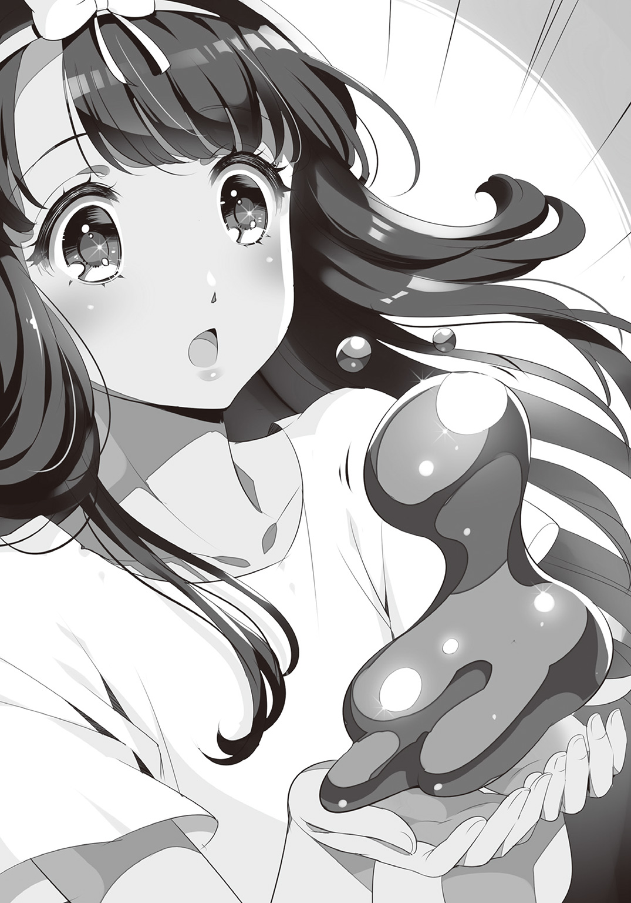
「どうしたの？ お外に出たいの？ 私もそう。でもね、鍵がかかっているから出られないの」
子供に言い含めるように、マリアは優しくなだめる。けれど、ムアの主張は一向に収まらない。仕方なしに鉄格子へ歩み寄ると、ムアはまたしても形状を変化させ蛇のような細長い姿になった。そして鍵穴へ頭からつっこんだかと思えば――カチリ。微かに響く軽快な音。続いてゆっくりと扉が開く。
鍵穴の中で形を変えたムアは、鉄の檻をいとも簡単に開錠してしまったのだ。
「わあ！ すごいのね、ムアちゃん！」
奇妙な友人を撫でながら、マリアは開け放たれた扉からそっと抜け出す。廊下の角を曲がった先にあるのは三人の守衛が常駐する待機スペースだ。抜き足差し足で角まで到達したマリアは、息を殺して耳をそばだてる。
――静かだ。いつも牢屋まで響いてきていた下らない雑談が、今夜に限ってはさっぱり途絶えてしまっている。それどころか、物音一つ聞こえてこない。そっと角から首を伸ばしたマリアは、そこでとうとう異様な静寂の理由を知った。――待機スペースでは、三人の守衛が全員揃って眠りこけていたのだ。周囲に散らばった酒瓶から推測するに、どうやら酔い潰れてしまったらしい。
マリアは近くにあったブランケットをそれぞれの体にかけてやると、すやすや寝息を立てる守衛たちを後に、悠々と保管庫からの脱出を果たしたのであった。
「むぐおー、酒だ、酒だあ......むにゃむにゃ......」
と、同じく酒瓶を抱いたまま眠りこけている扉前の守衛を横切り、マリアはひたひたと廊下を進む。けれど、角を曲がった先でマリアはがっかりしたような顔になった。きっといてくれると信じていた少年の姿が、そこになかったからだ。しかし、少女の落胆は早合点にすぎない。なぜなら彼女の背後には、ちゃんと目当ての少年が忍び寄っていたのだから。
「きゃっ――!?」
ぽん、と肩を叩かれる感触。反射的に悲鳴を上げるマリア。その口もすぐさま塞がれてしまう。だが、既視感を覚え始めていた少女の耳元で囁かれたのは、彼女のよく知る声だった。
「夜は静かにって、前に言ったろ？」
「ぷはっ、その声......クロさんですか!?」
「よお、初めて脱獄した気分はどうだい？」
マリアの口を解放したクロは、冗談めかしてそう微笑んだ。
「はは、なんだか最初に会った日を思い出すな。あの時は散々捜し回って――うわっ!?」
と、無理矢理中断される昔話。......マリアが突然、クロに抱きついたのだ。
そして少女は無言のまま、ぎゅーっと少年の胸に顔を埋める。
「ま、マリア......？」
最初こそ少女の挙動に戸惑うクロ。けれどその体が小刻みに震えていることに気がつくと、ぎこちなく少女の髪を撫で始めた。
つい数日前まで安全な自分の家しか知らなかった少女にとって、唐突に攫われ牢獄に押し込められていたこの二日間はどれほど心細かったことだろう。見知った顔に安堵の情が抑えられなくなるのも当然のこと。そうして数秒間、優しく少女の頭を撫でていたクロは、その震えが鎮まったところでそっと声をかけた。
「......どうだ、落ち着いたか？」
すると、ようやく自分の取った行動を自覚したのか、マリアは顔を真っ赤にしてクロの胸元を離れた。
「はっ......！ あ、あの、私、つい......その......し、失礼しました......」
恥じ入った様子でもにょもにょ言うマリア。いつもの彼女らしからぬその反応に、クロまで気恥ずかしげに視線を泳がせる。二人の間を漂う何やら甘酸っぱい空気。......しかしそんな七面倒なムードは、少女の胸元から飛び出したムアによって軽々と吹き飛ばされてしまった。
「きゃっ！」
「うわっと！」
豪快なジャンプで主の掌へ帰還するムア。寂しかったのはマリアだけではなかったようだ。甘えるように体をすり寄せてくる相棒を、クロは苦笑しながら撫でる。
そこへ更に、わざとらしい咳払いが聞こえてきた。
「おほん......お取り込み中のところ申し訳ないのだが......私がいることをお忘れじゃないかな？」
「サーシャさん！」
廊下の角から現れた銀髪のエルフは、優しくマリアに微笑んだ。
「やあ、久しぶりだね、私の妾よ。......うーむ、粗末な格好も実にそそられるよ」
こうして一人と一匹の乱入により慣れないムードが消し飛んでくれたところで、クロはマリアに向き直った。
「悪かったな、遅くなった上に迎えにも行ってやれなくて。不眠虫ってのは縄張りの中に侵入してくる異物を感知する。だけど元々縄張りの中にあったものが出入りする分には文句は言わないんだ。そういうわけだから、今回はお前に出て来てもらう方が早かったのさ」
「ふみんちゅう......？」
クロが事情を説明するが、どうやらマリアは見張り番の虫の存在にも気づいていなかったらしい。だがそれは、今となってはどうでもいいことだった。
「まっ、別に理屈なんか必要ないよな」
「ああ、妾が無事ならそれでいいさ」
「えへへ、ありがとうございます！」
二人に救い出されたことで心底安堵したのだろう。徐々にいつもの調子を取り戻し始めたマリアは、しみじみと逃走劇を振り返った。
「いやあ、それにしてもラッキーでした。守衛のみなさんが丁度居眠りしちゃってたみたいで。こういうこともあるんですねえ」
呑気に語る依頼人に、クロは思わずずっこける。無論、守衛全員が昏睡していたのは差し入れの酒に一服盛られていたことが原因。横取りされることを見越したクロが、サーシャ謹製の睡眠薬を仕込んでおいた結果なのだが、マリアにはそこまで理解が及ばなかったようだ。
「あ、相変わらず察しは悪いままだな......まあいいさ。ともかく、これでもうこんな街に用はねえ。抜け道の用意も整ってるんだ。さっさとお暇しよう」
クロはそう言いながら歩き出そうとする。......だが信じられないことに、マリアはその場で立ち止まったまま首を振った。
「なっ......！ おいおい、どういうつもりだ!? まさか、まだ主催者に会いに行きたいなんて言うんじゃないだろうな!? お前だって、ここは出直した方がいいことぐらい――」
流石のおとぼけ具合に驚き、どうにか説き伏せようと捲し立てるクロ。けれどマリアは、別の意味で首を振った。
「そうじゃないんです！ その、ペンダントが――」
少女の首元からあの金の鎖が消えているのを見て、クロは苦々しげに顔を歪める。
「くっ......失くしたのはさっきの保管庫でか？」
「いえ、牢屋で目が覚めた時には、もう......」
「ふむ......恐らくは誘拐された時ついでに奪われたのだろう」
クロは少しの沈黙の後、頷いた。普段なら「そんなもの放っておけ」の一言で済ませるところだが、クロはもう、少女がどれだけそのペンダントを大事にしているか知ってしまっている。軽々しく諦めろなどと言えるはずがなかった。
「......よし、事情はわかった。だが、今はお前を安全な場所に移すのが先決だ。お前をこの街から逃がした後、俺とサーシャでペンダントを取り返しに戻る。......それでいいな？」
「でも......」
食い下がりかけたマリアの肩を摑んで、クロは囁くように尋ねる。
「マリア。お前なら、わかってくれるだろ？」
自分が共にいること。それがクロにとってどれだけ重荷になるか、今のマリアはよく理解していた。そして何より彼女自身、もう二度と広場の時のような、憔悴しきった少年の顔を見たくはなかったのだ。故に、マリアはただ頷くしかなかった。
「......はい、わかりました。お願いします」
「ん、なら話は終わりだ。さあ、さっさとお暇しよう」
そう言って今度こそマリアの手を取って駆け出すクロ。だがなんとも巡り合わせの悪いことに、その足を止めざるを得ない事態がまたしても訪れた。
――ピンポンパンポーン――
「な、なんだ......？」
聞くも馬鹿らしいちゃちなチャイムが鳴り響く。思わず三人が立ち止まったところで、天井のスピーカーから女性の声が流れ始めた。
『――皆様、こんばんは。こちらは晩餐会運営事務局です。本放送はフリゲート全領域へお送りしております。此度の晩餐会における重要な連絡事項を通達致しますので、どうぞお聴き逃しのないよう御注意ください。......それでは通達します。これより、当初の予定を繰り上げまして、晩餐会を開始致します。些か急ではありますが、参加希望の方は、三十分以内に旧領主城三階中央ホールにお越しください。繰り返します。皆様、こんばんは。こちら――』
アナウンスはゆっくりと復唱を始めたが、再度繰り返されるまでもなく、それは一度聞いただけで忘れようのない内容であった。
「く、クロさん!? 今、晩餐会が始まるって......！」
「ちっ、予定は明日じゃ......!?」
予期せずもたらされた急報。......その原因にサーシャだけは気づいていた。
「確証はないが......主催者側が勘づいた、と考えるのが妥当だろう。――脱走組の動きに」
「そうか......！ あれだけ躍起になって泥棒屋を集めていた奴だ。もしも脱走組の存在に気づけば、逃げられる前に予定を前倒しにしたっておかしくはねえ......」
と、クロがそんな臆測を巡らせている間に、またしてもチャイムが鳴り響いた。続いて、次なる放送が流れ出す。
『――城内放送、城内放送。業務連絡です。各守衛及び使用人にお知らせします。先に通達した通り、これより晩餐会を開始します。番号００１～２５０までの各守衛は城門にて受け入れ態勢をとってください。該当外のスタッフは領内で、各自参加者の誘導をお願いします――』
「くそ、なんてタイミングの悪い......！」
放送が終わると同時に、クロは舌打ちしながら近くの覗き窓へ駆け寄る。目を凝らして城下を見れば、松明を持った守衛たちが城へ向けて集まり始めているところだった。
「......マリア、計画変更だ。悪いがもう少し囚われのお姫様でいてくれ。こうなっちまった以上、この城の中じゃ保管庫が一番安全だ。その間に、俺とサーシャでペンダントを見つけ出す」
「でも、ペンダントがどこにあるかなんて......」
「わかるさ。泥棒屋の辞書に『貯金』なんて文字はない。金があるならあるだけ使う。泥棒屋ってのはそういう生き物なんだ。だったら、ペンダントだってとっくに売り払われてるさ」
「なるほどね、この街ですべての富が最終的に集まる場所、それは――」
「――宝物庫だ」
クロははっきりと言い切った。
彼は泥棒屋。欲しい財宝があって、その場所がわかっているのなら、やることは一つだけ。
「さあマリア、大人しく隠れてな。......ちゃちゃっと盗って来るから」
「私も同行するよ。君は大船に乗ったつもりで待っているといい」
「クロさん、サーシャさん......！」
「はは、そんな顔するなって。......それじゃあな」
不安げなマリアの頭を、クロは不器用に撫でる。
無力な少女はただ、駆け出した二人の背中に祈ることしかできなかった。
「お父様、どうかお二人を見守っていてください......！」
※※※※※※
旧領主城四階の北廊下。
美しい装飾がちりばめられたその扉は、ただ厳然と二人の前にそびえ立っていた。
「――なるほど、いい趣味してるな」
「――ふふん、いかにも、な感じだね」
材質は最高級の純金。表面には精緻なレリーフ。枠のあちこちには贅沢に宝石が埋め込まれている。そこにたどり着いたクロとサーシャは確信した。――間違いない。この荘厳たる扉こそが、巨万の富を内包する宝物庫への入口だ。
「......しっかし、どうにも薄気味悪いな」
「ああ、見張りの一人もいないとはね。この扉にしたって、鍵すらついていないじゃないか」
宝物庫の警備としては明らかに不自然。だがそれでも、二人には撤退という選択肢などなかった。
「......用意はいいか？」
「いつでもどうぞ」
そうして二人は扉を押し開ける。その先に待っていた光景に、クロは思わず呼吸を忘れた。
金貨に銀貨、白金貨にミスリル貨幣まで。宝物庫の床一面に積まれていたのは、古今東西あらゆる種類の貨幣。その総額がいくらになるのか、想像しただけでくらくらしてくる。
勿論、宝物庫にひしめくお宝はそれだけではない。巨人サイズの王冠や華美な宝剣、数トンはありそうな純金像の足元には卵大のダイヤがごろごろしている。まさに金銀財宝ざっくざく。宝の山という表現がぴったり当てはまる。それは泥棒屋なら誰もが一度は夢に見る、世界最高の絶景だった。だが――
「......臭うな、ここは」
財宝が放つ無機質なそれとは違う、もっと野蛮で生々しい臭い――血の芳香。宝物庫には、うっすらと、だが確かに、死の臭いが漂っていた。
「この臭い......どうやら、昨日の強奪組の行方がわかったようだね」
「ああ。俺たちも同じにならないように――」
気をつけよう――と言いかけたクロの言葉は、途中で搔き消された。突如として大きなチャイムの音が鳴り響いたのだ。最初は警報かと肝を冷やしたが、どうやらそうではないらしい。
『――城内放送、城内放送。皆さま、こんばんは。大変長らくお待たせいたしました。おもてなしの用意が整いましたので、これより五分間の準備時間の後、晩餐会を始めさせていただきます。それまで、今しばらくご歓談ください。......以下、業務連絡。城内の全スタッフに通告します。全員、持ち場を放棄し、速やかに本会場へ集合してください。これは主催者による上位命令です。繰り返します。城内の各スタッフは、全員本会場へと集合してください。一切の例外は認めません。......以上、アナウンスを終了致します――』
ぶつりと切れた放送の後、二人は顔を見合わせる。いよいよ時間がなくなった。もう一刻の猶予も許されない。この広大な宝の山から、たった一つのペンダントを見つけ出さなければならないのだ。
「さてと、泥棒屋としての意見を聞かせてほしいのだが......見つけ出すのに何分かかる？」
その質問に、クロはにやりと唇の端を上げた。
「なあに、宝探しは慣れてるさ。動き回らない分、人探しなんかよりよっぽど楽だ。三分――それだけあればマリアのところへ帰れるよ」
クロは生まれながらの泥棒屋。言葉より先に盗みを覚えた生粋の盗み手だ。いかに宝物庫が広くとも、警備の一人もいないのなら盗み出すのは造作もない。......だが、少年は一つ大きな勘違いをしていた。――この宝物庫の宝が「動かない」と決めつけるのは早すぎたのだ。
カチャリ――二人が部屋の中央あたりまで進んだ時、背後で物音がした。見れば貨幣の山から一枚だけ、金貨が転がり落ちている。
「ん......？ 風、でも吹いてるのか......？」
思わず眉をひそめるクロ。無論、これだけ豪勢な宝物庫に隙間などあるはずがない。そうしている間にも、また一枚、また一枚とあちこちで金貨の落ちる音がする。そしてついには、辺り一帯すべての宝の山が、雪崩の如く崩壊を始めた。
「な、なんだこりゃ......!?」
「どうやら面倒事が始まりそうだね......！」
困惑する二人を、音と光の洪水が取り囲む。今や宝物庫は財宝が崩れ落ちる反響で満たされていた。そして二人はすぐに気づく。宝の山は単に崩れているだけではない。財宝の一つ一つが何かしらの意志の元に動いているのだ。
「こいつは、まさか――！」
耳ざわりな音を立てながら一箇所に集まっていく財宝。宝物庫中の宝が奔流となって舞い踊る。そして見る間に、財宝たちは巨大な一つの形を成した。
「――《ポルタージェム》......へへ、道理で守衛がいないわけだ。宝そのものが自分を守るんだもんな......！」
財宝で象られし十四の腕を持つ巨人兵――数十メートルはあろうかという巨大な守護者が、遙か高みから二人を見下ろしていた。
「......クロ、もう一度聞いてもいいかい？ 宝が動き回るわけだが......何分かかる？」
「ははは......三分、じゃ済まなそうだな」
思わず苦笑いを浮かべるクロ。――その頭上に黄金の巨腕が振り下ろされた。
「くっ、問答無用かよ......！」
ずしん、と宝物庫全体が揺れる。街を丸々一つ買い占められるほどの金銀財宝、その重量は想像すらできないほど凄まじい。一発でもまともに喰らえば文字通りぺちゃんこだろう。
咄嗟に躱した二人は、迷わず背を向けて逃げ出した。
「さあて、どうするんだい、大泥棒さん？ 宝探しに慣れてるのなら、あのポルタージェムとやらを倒す方法も心得ているんだろうね？」
「んなもんねえよ！ あれの本体は宝そのものに取り憑く悪霊だ！ 体を形成する財宝を叩いたところで意味がねえ！ 正面から殺すなら、溶鉱炉に沈めるぐらいしかないんだよ！」
絶望的な返答に、サーシャはひゅーと口笛を吹く。
「なるほど、それは実に良いニュースだ。もっと聞きたいものだね。眼からビームでも出すんじゃないかい？ それともロケットパンチかな？」
「冗談よせよ！ ......ただ、良いニュースなら一つだけある。――ペンダントを見つけた」
クロの視線の先にあるのは、巨人が誇る十四の巨腕のうちの一つ。その手首の部分に〝それ〟は埋め込まれていた。緑と白を基調とした美しいペンダント......間違いなくマリアの宝物だ。巨人から逃げ回りながらも、クロの眼は正確に欲する物を見つけ出していたのである。
「流石は天下の大泥棒、お見事だ。......で、後はこいつを倒すだけ、と。ひゅー、楽勝だ」
散弾の如く飛んでくる宝石を躱しながら、茶化すように笑うサーシャ。
「そう言うなって。......策ならあるさ、一応な」
言うが早いか、クロは足を止めて巨人と対峙する。その右手にはナイフが握られているが、向かい合う巨人を前にしては爪楊枝にしか見えない。
だがそれでもやる気らしく、クロはワイヤーの射出機をカチリと起動させた。
「サポート、任せたぞ」
「やれやれ、フィアンセの頼みとあらば仕方がないね」
肩を竦めたサーシャは、そっと懐へ手を伸ばす。取り出されたのは奇妙な形をした植物の種。サーシャがその種を宙空へ蒔いた次の瞬間、宝物庫の支柱ほどもある巨大な蔦が芽を出した。爆発的に増殖する蔦はのたうつように踊り狂い、瞬く間に空間すべてを埋め尽くす。――ほんの数秒後には、宝物庫に小さな樹海ができあがっていた。
「さあ、舞台は整えた。後は君の好きなようにやりたまえ」
サーシャの操る蔦を足場に、クロの俊足が宙を駆る。襲いかかる巨腕を躱し、放たれる宝玉を弾き、肉薄する先は巨人の首。射出機から放たれる蜘蛛の糸を利用し、自在に空中を踊る少年の姿は、まるでサーカス団の軽業師のよう。
だが巨人の首へとナイフを振り上げたその時、躱し切れなかった巨腕がクロの体を直撃した。
「クロっ」
軽々と吹き飛ばされる少年の体。壁に叩きつけられたクロは、特大のひび割れを残して倒れ伏す。駆け寄ったサーシャは少年の安否を確認し......ほっと吐息をついた。
「ふふ......君は案外丈夫なんだね。これならどんなプレイでも楽しめそうだ」
「いっててて......死ぬかと思ったぜ......」
意外にも平気そうなクロは、むくりと体を起こす。そして自分の服の下を撫でながら囁いた。
「助かったよ、ムア。良いタイミングだ」
衝撃を喰らう直前、変幻自在の相棒が鎧となって守ってくれたのだ。しかし、無事なのは良かったけれど、これではっきりした。クロの速度では宝珠の巨人には届かない。
「......やはり今の君では無理だ。私がやる。奴の殺し方を教えろ」
苦しげに告げるサーシャ。だが対するクロは、不思議なほどあっさりと首を振った。
「駄目だ......というか、無理だ。最初に言ったろ、あいつは殺せない」
「......何を言っている？ さっき策はあると言ったじゃないか。だから飛び込んでいったのだろう？」
「誰も殺すための策とは言ってねえだろ」
「......どういう意味だい？」
「つまりだな――」
と立ち上がったクロは、懐から単純明快な答えを差し出した。
「――泥棒屋には泥棒屋のやり方がある、ってこった」
少年の手の中にあるものを見て、サーシャは目を丸くする。それはまさしく、先ほどまで巨人の一部であったはずのペンダントだったのだ。
そう、宝が欲しいだけならわざわざ倒す必要などない。欲しければ盗むのが泥棒の流儀。それは相手が巨人兵という不死の魔物でも同じこと。――自分自身を囮としたクロは、ほんの一瞬の交錯の間に巨人の腕から盗み取ったのである。
「はは......君の手癖の悪さには呆れるね」
「お前の女癖ほどじゃないさ。......さあ、とっととずらかろう。マリアが待ってる」
と肩を竦めて駆け出そうとするクロ。......だが、サーシャは立ち止まったままだった。
「......おい、サーシャ？ どうした？」
答えの代わりにサーシャは何かを放り投げる。咄嗟に摑んだそれは、湾曲したサーシャの短剣――かつてクロが盗み損ねた片割れにして、彼女が守護する秘宝。本来なら決して他人に渡すことなどない代物だ。
「......どういう意味だ、これ」
「いやあ、少し預かっておいてもらおうかと思ってね」
サーシャは軽く答えるが、それで納得できるはずがなかった。
「だから、どういう意味かって聞いてんだよ！」
「別に大したことじゃないさ。ただ......妾のところへは君一人で行ってくれ」
「お前、自分が何言ってるかわかって......!?」
「まあまあ落ち着け。見たまえ、あの怪物。そう簡単に帰してくれると思うかい？」
サーシャは暴れ狂う巨人を顎で示す。今は蔦によって足止めしているが、その拘束がなくなればどこまでも追いかけてくることだろう。......己の体を奪った者は決して許さない。そんな性質を持っているからこそ、ポルタージェムが宝物庫の番人として用いられているのだ。
「妾のところまであれを連れて行くわけにはいかないだろう？」
「そ、そりゃそうだが......」
「なに、私も頃合いを見計らって逃げるさ。世話の焼ける旦那がいない分、かえって簡単というものだ」
「だけど......」
「おいおい、そんな情けない顔をしないでおくれ。......ムラムラしてしまうじゃないか」
表情を歪める少年を、サーシャはからかうようにいなす。
「なあに、大丈夫。エルフにはエルフのやり方ってものがある。それに、知らなかったのかい？ ――愛する君がそう望むのなら、私は不死身にだってなれるんだよ」
紅の瞳が優しく笑った。クロにはわかる。それがただの方便ではなく、本心からの言葉であることが。――だったらもう、答えは一つしかなかった。
「――ああ、そうだったな」
サーシャの言葉に送り出されて、クロは踵を返す。ただ一心にマリアのもとへ。
だがその途中、おかしなものが視界の端に映り込んだ。それは一脚の執務机。宝物庫という場において明らかに異質なその物体は、さも当然のような顔で佇んでいたのだ。
一刻も早くマリアのもとへ戻らなければならない状況。背後ではサーシャが戦っている音がする。本来ならそんな古ぼけた机などに構っている暇はない。だというのに、奇妙な既視感がクロを引き寄せる。
机上に載っていたのは、円筒形の筒と掌サイズの四角い小箱。クロは真っ先に小箱へ手を伸ばした。その蓋を開けた途端、クロの表情が豹変する。小箱の中からは、純金製の眼球が少年の瞳を見つめ返していたのだ。
これ以上は駄目だ。
頭の中で警告する声が響く。だが心とは裏腹に、体は憑かれたように執務机へ吸い寄せられていく。その手が伸びるのは最下段の大きな引き出し。中には宝物庫という場において不自然極まりない物が収められていた。――それは、高々と天秤を掲げた有翼の女神の像。けれど、クロの瞳に驚きはなかった。
この場にそぐわぬ執務机、戦利品の如く飾られた黄金の義眼......そして、天秤の女神像。
少年はもう、すべての既視感の正体に気づいていた。だから今の彼は、机上の円筒に何が入っているのかも知っている。それでもクロは筒に手を伸ばし、そして蓋を開けた。瞬間、立ち上る芳醇な甘い香り。そう、その正体は――とある教会でしか振る舞われないはずの、オリジナルの紅茶の匂い。
「くそっ、一体どうして――！」
茶葉の詰まった筒を投げ捨て、クロは脇目も振らずに駆け出した。その去り際、少年の体が微かに机の端にぶつかり、衝撃で小箱が零れ落ちた。床に転がった黄金の義眼はぐるぐると不気味に回転しながら、走り去る少年の背中をじっと見つめていた。
※※※※※※
『――城内放送、城内放送。皆さま、こんばんは。大変長らくお待たせいたしました。おもてなしの用意が整いましたので、これより五分間の準備時間の後、晩餐会を始めさせていただきます。それまで、今しばらくご歓談ください。......以下、業務連絡。城内の全スタッフに通告します。全員、持ち場を放棄し、速やかに本会場へ集合してください。これは主催者による上位命令です。繰り返します。城内の各スタッフは、全員本会場へと集合してください。一切の例外は認めません。......以上、アナウンスを終了致します――』
アナウンスの後、三階の中央ホールには泥棒屋のみならず、守衛や使用人等の運営側スタッフまで含め領内の人間全員が集まっていた。けれど、その空気は険悪。理由は騒ぎを聞けばわかるだろう。
「おい、金貨三百枚はまだかよ!? 街へ入る時はすぐくれたじゃねえか！」
「晩餐会ってのに料理もでねえのかここは!?」
「それより酒だ！ なんで酒がねえんだよ！」
晩餐会の本会場だけあって、絢爛豪華な内装が施されている中央ホール。だがそこには、テーブルや椅子、空の食器といった備品の他には何一つ用意されていなかったのだ。当然泥棒屋たちは不平不満を垂れ流す。対して弁明にあたるスタッフ側も混乱しているようだった。
「も、申し訳ありません......ですが我々もここから先の日程は知らされていなくて......」
「主催者様の到着までどうかしばしお待ちを......」
「くそっ、持ち場放棄までさせて俺たちを集めて、一体何させようってんだ......？」
口々に謝罪の言葉を述べるものの、荒くれ者の泥棒屋たちがそう簡単に引っ込むはずもない。特に、最も上の立場にあると思しき司会役の周りには、数十人もの怒れる泥棒屋が殺到していた。
「おうおう、司会者さんよお！ どういうことか説明してくれや！」
「わかるよなあ、てめえ、俺たちゃ客だぞ？」
「どうでもいいからさっさと金をよこせ！」
「で、ですから、私どもにもどういう状況かさっぱりでして......」
そんな折、司会者を囲う人だかりへ歩み寄る二つの人影があった。
一人はその場に不釣り合いなほど温和な顔立ちをした金髪の青年。一見しただけではファッション雑誌のモデルと見間違えてしまいそうな、洒落た衣服に身を包んでいる。
そしてもう一人は全身を鼠色のマントで隠した長身の男。マントと同じ泥色の眼は周囲の騒ぎなどまるで興味ないとでも言うかのように凪いでいた。
そんな二人の姿を見て、会場がざわざわとどよめき始める。そして異様な空気の中、誰かが震え声で呟いた。
「お、おい、あれ......ケルゲスとグウェインじゃねえか......!?」
〝ケルゲス〟〝グウェイン〟。二つの名前が零れた途端、それは波紋のように会場中に広がった。
「ま、まさか、あの異能力使いの......？」
「〝蛇鎚のケルゲス〟に――」
「――〝剣蠍のグウェイン〟だと......!?」
「マジかよ......犯罪危険度Ａ級指定――鎮圧のために警務部特殊部隊が一ダース要請されるレベルの泥棒屋じゃねえか......！」
そんな空気に飲まれ、司会の周りに集まっていた泥棒屋たちもすごすごと道を空ける。お陰で二人組と向き合う羽目になった不運な司会者は、先ほどよりもずっと蒼白な顔になっていた。
「あ、あの......何か......？」
慄きながら口を開く司会者に、金髪の青年――ケルゲスは、その表情と同じく柔和な声で話しかけた。
「ねえ、司会さん。金はどこにあるんですか？ この招待状にもちゃんと書いてありますよね？ 『晩餐会本会場においてもオルツ金貨三百枚を追加で配布予定』って」
「ひ、ひぃ......ど、どうかご勘弁を......」
「やだなあ、そんなに怯えないでください。僕たちは正当な要求をしている側ですよ？ そういうの、ひどく、傷つきます」
確かに青年の言い分は真っ当なもの。司会者に話しかけるその声や仕草も、先ほどの泥棒屋たちに比べれば実に紳士的である。だというのにどうしてか、そんな青年の様子は、もっとずっと質の悪い何かが戯れに演技をしているようにしか見えなかった。
「それは......なんとも......我々も雇われただけなもので......」
「困ったなあ......荒事は好きじゃないのですが、これなら奪い取った方が早いですかねえ」
「ひっ......」
青年の瞳の奥に不穏な影がちらついたその時、固く閉ざされていた正面扉が音を立てて開け放たれた。
――こつん、こつん。
やけに固い足音が会場に響く。否、それは単なる歩行音ではなかった。衆目が集まる中、扉の陰から姿を現したその人物は、杖を携えた初老の男だったのだ。
――こつん、こつん。
現れた男は口を開くこともなく、杖の音だけを響かせながら奥のステージへ歩いていく。誰一人として喋らない――いや、喋れない、奇妙な沈黙。そんな静寂の中でただ独り、追い詰められていた司会者だけが呟いた。
「しゅ、主催者様......！」
途端、呪縛が解かれたかの如くざわめく会場。これまで頑なに姿を見せなかった主催者が、ようやく皆の面前に現れたのだ。ざわめきも気にせず壇上へ登った主催者は、のんびりと会場全体へ向き直った。
「これはこれは、みなさんどうもこんばんは」
主催者の口から放たれた第一声はひどく軽い挨拶。それは場の空気が読めていないばかりでなく、ケルゲスたちさえも無視したもの。聞きようによっては挑発ともとれてしまうものだ。とばっちりを恐れた泥棒屋たちは、二人組の顔色を窺いながら更に一歩後退する。
「やあ、主催者さん、こんばんは」
だが会場の不安をよそに、ケルゲスは落ち着いた挨拶を返すだけだった。
「お招き頂いてありがとうございます。ここにいる泥棒屋を代表し、感謝の言葉を捧げます」
振り向いた主催者に対し、ケルゲスはなおも紳士的な態度で一礼する。
「ところで、我々一同は今、あることが気になっていましてね。素晴らしい晩餐会を楽しむためにも、是非今この場でお答えいただきたいのですが――」
慇懃な物言いの裏に一抹の脅迫を秘めながら、ケルゲスは猫なで声で尋ねた。
「――約束の金はどこですか？」
研ぎ澄まされたナイフの如き緊張が会場中を駆け巡る。返答如何で恐ろしい事態に発展するのは誰の眼にも明らか。もはや一人として後ずさることもできず、その場に釘付けになっていた。ところが、そんな二人を前にして、主催者は微笑を浮かべながら実に丁寧な口調で答えるのだった。
「ここにはありませんよ。ええ、城のどこにも、あなた方に渡す物などありません」
「......ふうん、そっか」
主催者の口から端的に述べられた結論。それで納得したのだろうか、青年は潔く頷くだけ。そこには苛立った様子もなければ不機嫌さも感じられない。周囲が拍子抜けしてしまうほど平静であった彼は、そのままのんびりと、まるで明日の天気を尋ねるぐらいの穏やかさで続けた。
「じゃあ――もう死んでいいよ」
言い放つや否や、ケルゲスの瞳に氷のような冷たい陰りが差した。次の瞬間、その背後で彼の〝影〟がさざ波立ったかと思うと、粘土細工の如く形を変える。影から伸びあがったのは、大人一人を優に丸のみにできるほど巨大な黒色の大蛇。それも、一匹ではない。同時に五匹、ぬらりと光る毒牙を剝きながら天井間際までその身を躍らせる。
そしてもう一人、彼の相棒であるグウェインは、既に先ほどまで立っていた場所から姿を消していた。束の間、誰もが顕現した大蛇に気を取られていた隙に、長軀に似合わぬ俊敏さを以て主催者の背後へと回り込んでいたのである。そしてその灰色のマントの下から伸びるのは、黒鉄の甲殻を纏った二本の尾。紛うことなき蠍の尾部だ。
これまで数多の標的を屠って来た、前後からの急襲挟撃。実に単純で、それ故に強力な、まさしく必殺の連携。誰もが無残に引き裂かれる主催者の姿を想像した。しかし――
ぼとり。
会場に響いたのは主催者の悲鳴ではなく、果実が潰れたような落下音。後方から聞こえたそれはひどく小さな音だったが、全員が全員、操り人形のように同じ挙動で振り返る。落ちた〝何か〟は大蛇の胴体でもなければ蠍の甲殻でもなかった。ずっと小さく、ずっと柔らかく、そして、ずっと生温かいそれは――一瞬のうちに刎ね飛ばされた、二人の泥棒屋の首だった。
依然として広間を包む静寂。その沈黙のうちに浸透していく戦慄。誰一人眼前の現実を理解できない。殺すはずの者が殺され、狩るはずの者が狩られている。これではあべこべではないか。
正常と異常が転倒した会場で、もはや声を上げる者はいない。――ただ一人、頭部を失い崩れ落ちる死体を前にして、やんわりと微笑む主催者を除いては。
「おや、どうしたのですか？ みなさん。もう晩餐会は始まっていますよ。そんなにかしこまらず、どうぞ存分に、泣き、喚き、騒ぎ、呻き、そして――死んでください」
瞬間、絶叫が広間全体に反響する。そして、会場にいたすべての人間が一斉に出口へ殺到した。踏み壊される椅子、薙ぎ倒されるテーブル、高価な食器類は甲高い悲鳴を上げながら床に叩きつけられ、豪奢な絨毯はあっという間にずたずたのぼろきれになった。
秩序、統制、規律......人たる種族の尊厳など、もはや何の意味もない。ここにあるのは原始の恐怖。ここにいるのは理性を失った猿の群れ。
だが扉は開かない。
今や泥棒屋も使用人も守衛も関係なかった。間違いなく会場中で最強の二人組が、いとも容易く屠られたのだ。誰一人として戦う意志など持ってはいなかった。
偉大なる神の前ではすべての人間が愚かな子羊となるように、かの男を前にしては、みな等しくただの獲物でしかなかったのである。
何十もの拳が扉を叩き、何百もの声が助けを乞うた。それでも扉は開かず、救いの主は現れない。なぜなら彼らのいるこの場こそが、神の加護も仏の手も届かぬ地獄の底だったのだから。
そうして逃げ惑う獲物の群れへ向かって杖を突きながら、主催者たる老人はそっと、天を仰いで呟いた。
「おお、我らが天秤の女神よ――あなたに祝福あれ」
※※※※※※
盗品保管室の内部は暗がりが支配していた。数分前に響いたアナウンスの後、照明が一つ残らず落ちてしまったのだ。マリアは何も見えない暗闇の中、ただじっと身を縮めて少年の帰りを待っていた。
「どうか無事でいてください、クロさん......」
と、その時、頭上の方で地響きのような音がした。天井が揺れ、砂埃がぱらぱらと降りかかる。それも一度きりではない。何度も何度も、断続的に。まるで大勢の人間が、何か恐ろしいものから逃げ惑っているかのような......
物音は数分もすると鎮まった。けれど少女の耳にはまだ、不気味な残響がこびりついている。マリアは無意識に、音のした方向へ視線を向けた。それは丁度、晩餐会が開かれているはずの中央ホールの方角だ。
（だ、大丈夫......クロさんはあそこにはいない、はず......）
頭ではわかっていても、不安の種は大きくなるばかり。どうしても少年の身に何かが起こっている気がしてならないのだ。マリアはもう、抑えようのない不安で居ても立ってもいられなかった。そしてとうとう我慢の限界を迎えた時、彼女はそっと、鉄格子を押し開けた。
一階の西廊下、その先にある登り階段、それから二階の西廊下を抜けて、三階へ続く階段へ......粘つくような数分の後、少女の足が止まる。いつの間にかマリアの前には、荘厳な中央ホールの扉がそびえ立っていた。
喧しいほど頭に響く鼓動。怯えた手足がぴりぴりと痺れる。だが彼女は、扉の前で立ち竦むためにここまで来たのではない。マリアは一度だけ大きく深呼吸すると、重い扉を押し開けて部屋の中へと足を踏み入れた。
――暗黒。彼女を迎え入れたのは、晩餐会にあって然るべき明るい談笑でも、空腹を刺激する芳しい料理の匂いでもなく、ただ無意味に空間を埋めるだけの闇だった。
心なしか先ほどまでよりも濃く見える暗闇の中へ、恐る恐る身を投じる少女。しかし、灯りがないためか、マリアは数歩進んだ先で何か弾力のある物に躓いてしまった。
「きゃ――」
バランスを崩し、思わず倒れ込むマリア。咄嗟に出した両手が床に触れた瞬間、べちゃ、という耳ざわりな水音がして、掌に何かの液体が付着した。
飲み物が零れていたのだろうか。少女は身を起こしながら考える。だけど変だ。ジュースやお酒にしてはいやに粘ついているし、何より妙に温かい。そう、この温かさはまるで、人間の肌と同じ温度――
その時、頭上の照明がぱちぱちと瞬いて、割れた電球が一つだけ灯った。仄かな薄明かりが弱々しく闇を照らす。そうして不安げな光の元、暗黒に閉ざされていた会場の様子が明らかとなった。
「え......なに、これ――？」
無残にひっくりかえった椅子、ばらばらに破壊されたテーブル、床や壁には無数の傷が残され、天井から吊るされた照明も頭上の一つ以外はすべて割れてしまっている。だがそんなことはどうでも良かった。少女の意識は、もっと別のことに囚われていたのだから。
死体、亡骸、遺体、屍。
呼び方などなんだって構わない。なぜなら、その指すものはたった一つの簡単な事実――〝死〟。不吉な薄明かりに照らされた会場には、夥しい数の死体が転がっていたのだ。
眼前に展開されている惨憺たる光景に、少女はただ絶句する。もはや見ていることすら耐えられなくなって、少女は両手で顔を覆いかけた。だが広げた掌には、べったりと赤黒い血がこびりついている。水たまりだと思った物、それは血だまり。入口で躓いた物、それは死体。何もかもがおかしかった。すべての意味が否定され、すべての価値が反転している。そこでようやく、少女は気がついた。ここはもう、彼女の知っている世界ではないのだと。血と死臭とにまみれたこの大広間は、常識から隔絶された異界の地。そこでは、ただ独りの生者である自分の方が異物なのだと。
けれどここで一つ、少女は大きな思い違いをしていた。荒れ果てた広間も、死屍累々の惨状も、確かにすべて本物。彼女が孤独であることもまた事実。――だがしかし、そんな地獄絵図の中に紛れ込んだ生者は、彼女一人だけではなかったのだ。
「――おや、まだおひとり残っていましたか」
虚ろなホールに響く落ち着いた声。広間の最奥、唯一残ったテーブルに、紅茶を啜る人の影があった。屍が山を成し、血が河と成る惨禍の中で、それは明らかに異常。だが何よりマリアにとって衝撃的だったのは、その人物に見覚えがあることだった。
「――フォルス......神父......？」
「どうも、こんばんは、マリアさん」
礼儀正しく答えたのは、いつかの晩に出会ったあの神父だったのだ。
「どうして、どうしてあなたがここに......？」
マリアは震える声で問いかける。神父の優しい笑顔と、周りに散らばったむごたらしい遺体との乖離に頭がついていかない。
「おかしいですか？ ――パーティの会場に主催者がいては」
「主催者......？ あなたが......？」
その告白が重要な意味を持つことは、マリアにも薄々わかった。けれど、真っ白になってしまった彼女の頭が、それを理解することを頑なに拒む。まるで、触れてはならない禁忌から主を遠ざけようとしているかのように。
「これは、一体......何があったんですか......？」
マリアはやっとの思いで言葉を絞り出す。しかし、神父は落胆したように頭を振った。
「そんなことはどうでもいいでしょう。あなたが私に――この晩餐会の主催者に尋ねようとしていたことは、他にあるはずです」
父の過去を明らかにしたい――確かにマリアが晩餐会に来た理由はそれだ。だがこんな状況で私事にかまけていられるはずがない。
けれど、他でもない神父の瞳が、マリアに別の質問をすることを許さなかった。惑乱を孕んでらんらんと輝く双眸。長年欲していた遊び道具をようやく買い与えられた子供のように楽しげな表情。それがマリアに強制する。彼女ではなく、彼の求める問いかけを。
「......ち、父のことを、知っているのですか？」
神父の眼光に気圧されるがまま、マリアは尋ねる。神父は「良くできました」とばかりににっこりと頷き、そして口を開いた。
「レオン＝イスラフィル――三十代半ばを過ぎてからその身一つで交易会社《イーサフ・カンパニー》を興し、今やサンディスリングスの中でも上流に位置するイスラフィル家初代当主。周囲からの人望は厚く慈善事業や孤児救済活動にも余念がない高潔なジェントルマン――ええ、勿論知っていますとも」
聖書の一節でも朗読するかのように、すらすらとそらんじてみせる神父。その内容がすべて正確であることは、マリアにならよくわかった。だが、神父の述べたそれらのことは所詮上辺だけの経歴。問いかけへの本質的な回答にはなっていない。だからマリアは今一度問う。神父がそうさせたがっているのを理解しながら。
「そうではなくて......父は――！」
「『泥棒屋であったか？』......でしょう？」
マリアの言葉を引き取った神父は、満面の笑みを湛えて言い放った。
「ええ、マリアさん。答えはイエスですよ。――それも、飛び切り屑の、世界最低の盗賊。あなたの父親は、そういう男でした」
その返答を予期していなかったと言えば噓になる。
......だが、それを素直に受け止めるかどうかは全く別の話だった。
「う、噓です！ あなたは噓をついています！」
先ほどまでの怯えを忘れ、マリアは大声を上げて反発する。
「父のことを知りもしないで、勝手なことを言っているだけです！」
神父はむしろ心地よさそうに、取り乱す少女を眺めるだけ。
「いいえ、真実ですよ。残念ながらね」
「根拠は、証拠はどこですかっ!? そんな風に言うだけなら、誰にだって――」
少女はひどく激昂しながら神父を睨みつけた。父親を侮辱されたからという理由だけではない。周囲に溢れる血と死体の山への恐怖、わけのわからぬ状況への混乱、そういった諸々の制御し切れぬ感情が、憎悪という形で眼前の男へと吐き出されたのだ。
けれど神父は、たった一言で激情に囚われた少女を沈黙させてしまった。
「――〝蛇の刺青〟でしたっけ」
神父はうっとりと目を閉じ、まるで瞼の裏にそれを思い描いているかのように続ける。
「右手首に三匹。絡み合うように、のたうつように、生々しく......」
少女は思わず唇を震わせた。
「な、なぜ、父の刺青のことを......？ いつも腕時計で隠していたはずなのに......!?」
「決まっているじゃありませんか。私がこの目で見たからですよ」
「え――？」
「そう、三十年前のあの晩に、ね」
瞬間、マリアはすべてを悟った。
父親の犯した罪過も、神父がここにいる目的も、そして、自分がここに呼ばれた理由も。
「あなたの父親、レオン＝イスラフィルは、〝黄金の義眼のフォーレン〟の手下にして――私の足を、私の教会を、私の妻を、そして......私の娘を奪った男ですよ」
「そん、な......」
信じていたものが音を立てて崩れ去る。噓だと思いたかった。根も葉もない誹りだと否定してやりたかった。けれど少女の口は縫い止められたように動かない。父の苦しげな姿。手首の禍々しい刺青。そしてあの言葉。何もかも辻褄が合っている。いや、きっと最初から、心のどこかでは気づいていたのだ。愛する父が犯した贖いようのない罪に。ただ見えない振りをしていただけ。だって、その十字架はあまりに重すぎたから。
「驚きましたか？ そうでしょうね。『教会荒らし』を抜けて以後、彼は自らの過去を漏らさぬよう常に気を配っていましたから。私自身、彼の所在を知ったのは彼が死んだ後のことでした。ああ、実に身勝手な男です。あれだけの大罪を犯したというのに平然と幸福な家庭を築き、あまつさえ私が殺すより前に死んでしまうとは。まったく腹立たしい。......ですが、まあいいでしょう。ここに代わりがいるのですから」
そう言って笑う神父の顔に、人間味など欠片もなかった。たとえるならば意志を持たぬ機械か、さもなくば天災のよう。それはあまりに理不尽で――故に、少女はつい口走ってしまった。
「......どうして、今頃になって......」
その途端、フォルスの眉根がぴくりと動く。
「今頃......そう思いますか？ ええ、あなたにとってはそうでしょう。生まれるよりも前の話なのですから。けれど、私にとってはまだ続いている。いや、これから始まるのですよ」
マリアはようやく悟った。外界の時間など何の関係もない。神父にとっては数千年の時すら問題ではないのだ。なぜなら彼の時間は、かつてすべてを失ったあの日から、一秒たりとも進んではいないのだから。
「あの頃の私には力がなかった。祈ることしかできなかった。けれど、どんなに奴らの死を願っても、神は叶えてくださらなかった。......だから私は、自分の手で断罪することに決めました。そして二十年前、奴らを......いえ、世にはびこる盗賊すべてを皆殺しにできるだけの力を得た！ あの時の感慨は一言では言い表せませんよ。これでようやく、娘を弔うことができると、本当に、本当に――嬉しかった！」
天を仰いだ神父は、涙すら流さんばかりの悦びの表情を浮かべる。
「そしてその弔いが、ようやく今、終わろうとしている。......あの男の娘を殺すことでね」
悪寒に苛まれながら、マリアはあの日教会で見た神父の瞳を思い出した。奥底に仄暗い混迷を孕んだ、冷たく澱む野獣の眼。その狂乱の正体が今やっとわかったのだ。――混じり気のない純粋な殺意。それを異常と呼ばずして、何を以て正気を定義しようというのか。
そして神父は、一歩、マリアの方へと歩み寄る。
「さあ、次は私が尋ねる番ですね」
マリアの肩がびくりと震えた。
それは神父自体を恐れたからではない。彼が次に口にする問いかけを恐れたからだ。
「――罪人の娘に生まれた感想はどうですか？」
たった一言。それだけで、父親が決して許されざる咎人であるという事実を、少女の眼前へと突きつける。そして神父は少女の顔を嬲るように見つめながら、愛しい恋人の耳元に囁くような甘く優しい声音でその名を呼んだ。
「マリア、マリア――マリア。はは、一体どんな了見で人殺しの盗賊がそんな名前をつけたのでしょうか？ 一代で会社を立ち上げた？ ならばその元となる資金はどこから来たのでしょうねえ？ 慈善活動？ 何をいまさら、白々しい。そんなもの、己の罪悪感から逃れるための偽善でしかありませんよ。他人の血にまみれた金をばらまいて贖罪を果たしたつもりでしょうか？ 愚かしいですね。反吐が出ます」
神父の仄暗い瞳が、冷たくマリアを見下ろす。
「マリア。今の自分をよくご覧なさい」
神父に促されるがまま、マリアは自分の体へと視線を落とした。衣服は悪臭を放つ肉片にまみれ、掌にはべったりと黒ずんだ血がこびりついている。
「それがあなたの真実です」
もはや彼女は、一等街のお屋敷で大事に大事に育てられ、世の穢れなど何一つ知らずに暮らしていた頃のような乙女ではなかった。罪過と血糊にまみれた浅ましき賤女。卑しい娼婦にも劣る一匹の雌犬。蔑まれるべき薄汚れた罪人――
絶句したマリアへ、神父は更に一歩近づいた。
「あなたが育った家、口にした食事、身につけた服......それらはみな、元をたどれば罪なき人々から奪われた物。無慈悲な暴力を以て摘み取られた聖者の遺骸です。おお、マリア。罪より生まれ出でし不浄の子。生まれながらの簒奪者よ」
そうして手を伸ばせば届く距離にまで迫った神父は、少女へ静かに問いかける。
「安穏と暮らした屋敷は好きでしたか？ ――そのために家を焼かれた者がいます」
季節に応じて種々の花々が咲き誇る庭、雪の降る真冬でも暖かだった広いリビング、どんなに落ち込んだ時でも優しく迎え入れてくれた自分だけの居室。記憶の中の我が家は、無数の骸の上に建っていた。
「毎朝の食事は美味しかったですか？ ――そのために明日の糧を奪われた者がいます」
焼き立てのクロワッサンと新鮮なサラダ、厚切りベーコンの入ったコンソメスープを添えて、食後には甘く瑞々しいフルーツ。お抱えのシェフが振る舞ってくれるそんな朝餉が大好きで、パンの焼ける良い香りで目を覚ますのが日課だった。だけど思い返して見た時、それは死臭を孕んだ血反吐の味になっていた。
「お気に入りのお召し物を選ぶのは楽しかったですか？ ――そのために皮膚を剝ぎ取られた者がいます」
クローゼットを開ければ選び放題だった衣服。その日の気分で袖を通せば、使用人たちは皆必ず褒めてくれた。よくお似合いです、お嬢様、と。けれど今はもう、人の生皮を被っていたようにしか思えなかった。
「今一度言いましょう」
異端を論駁する宣教師の如く、幼子に洗礼を与える司祭の如く、神父はただ厳かに告げる。
「鮮血と盗品にまみれたその姿こそ、あなたの真実。血濡れのマリアよ、あなたはどうしようもなく――穢れている」
今や少女は、血にまみれた自分の掌から目が離せなくなっていた。ここにあるのは、血と、骸と、穢れた自分だけ。それが世界の真実で、そんな世界が狂おしいほどに厭だった。もしもそこから逃げ出せるのなら、他には何もいらないと思った。そう、この期に及んでなお生にしがみつこうと脈打っている、浅ましき己が心臓さえも。
だから少女には、ゆっくりと歩み寄ってくる神父のその姿が、本物の神の使いにさえ見えた。
「マリア、あなたに問おう」
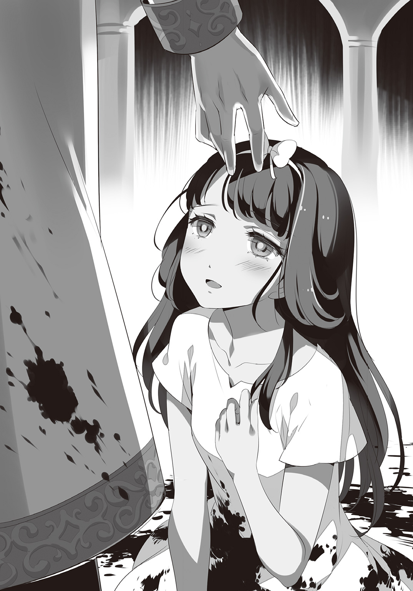
神父は高らかに問いかける。彼女の望む〝救済〟を与えんがために。
「罪人に与えられるべきは何でしょう？ 穢れた世に必要なことは何でしょう？ ――あなたが望むものはなんでしょう？」
マリアはただ、己を支配する恍惚のままに答えた。
「――罰を」
神父は嗤う。子供のように、にっこりと。どこまでも無邪気に。どこまでも優しく。そしてマリアの真上から、その柔らかな首筋にそっと手を伸ばして――
その時、開かれたままだった扉の隙間から、何か小さな物が広間へと飛び込んで来た。それは鷄の卵ほどの丸い球。神父が不思議そうに眉をひそめた瞬間、球体がパン、と破裂して中から夥しい量の白煙が吹き出した。
「......煙玉、ですか。くだらない」
そうして煙が晴れた後、マリアは忽然と姿を消していた。
神父はまたしても嗤う。先ほどよりもずっと愉しげに。唇の端が裂け、一筋の鮮血が垂れても、神父の微笑みは収まらない。そうして奇人の如き笑みを浮かべたまま、神父は高揚した声で呟く。
「罰を求める子羊がもう一頭」
司祭服を纏った人ならざる〝何か〟は、ゆっくりと杖を突いて歩き始めた。
第五章 天秤の上の猫
「マリア、おい、マリア!!」
血の海と化した大広間を脱した後、西廊下の角を曲がったところで足を止めたクロは、腕に抱きかかえた少女へ呼びかける。
「マリア！ しっかりしろ！」
その必死の思いが伝わったのか、マリアの胡乱な瞳に微かながら光が戻った。
「あ......クロ......さん......」
「......無理に喋るな。怪我がないならそれで十分だ」
クロは血まみれの少女の手を自分の着衣で拭う。その間もマリアは虚ろな表情を浮かべたまま、いつもの潑剌とした笑顔などどこにも見当たらない。クロはそんな依頼主を再び抱き上げると、彼女を、そして自分を奮い立たせるように呟いた。
「まさか神父が......いや、今はいい。とにかくしっかり摑まってろ。ペンダントは取り戻したんだ。さっさとこの街から退散するぞ」
「駄目ですよ......クロさん......駄目なんです、私......」
呆然と零れる呟きを無視して、クロは下り階段へと急ぐ。城内の構造は既に把握済み。暗闇など何の障害にもならない。......だが、階段まで到達したところで、闇の向こうに無数の小さな光が見えた。瞬間、クロの全身の毛が逆立つ。夜空の星にも似た数多の光は、飢えと殺意とに澱んだ魔獣の眼光だったのだ。
「くそっ、〝黒妖犬〟か......！」
クロは舌打ちと共に踵を返す。これだけの数に追われては反撃など不可能。クロは獣の息遣いに追い立てられるがまま、上へ上へとひた走るしかない。
そんな死を先伸ばしにするだけの逃避行の最中、異変は突如起こった。最上階への階段にさしかかった瞬間、背後に迫っていた無数の足音がぴたりとやんだのだ。獣たちは階段の手前で停止したまま、一歩たりとも上ってこようとしない。
（何かの罠か......それとも......？）
思考を巡らせかけたクロは、ぶんぶんと首を振った。どれだけ考えようと正解などわかるはずがない。どちらにせよ進むしかないのだ。
そうして再び上り始めた先、階段の果てに待っていた最上階には、一つの巨大な門扉がそびえていた。クロは今一度大きく深呼吸をしてから、そっと扉を押し開け――その向こうの光景を目にした瞬間、思わず絶体絶命の現状すら忘却した。
あらゆる不浄を抱擁する優艶な両翼。見る角度やタイミングによって表情を変える不思議な相貌。そして、天井すれすれにまで高々と掲げられた巨大な天秤。
七階にて二人を待ち構えていたのは、見上げるほどに大きな天秤の女神像。二本の足で堂々と立ち、数十メートルの高みから下界を睥睨するその大理石の女神は、信仰心を持たぬクロでさえ畏怖してしまうような威容と尊厳とに満ち溢れている。――そう、旧領主城の最上階、そこは途方もなく広大な一つの教会だったのだ。
「なるほど、神聖な教会に魔物を入れる気はないと......どうも躾が行き届いているらしいな。......マリア、降ろすぞ、いいか？」
聖堂奥にそびえる女神像を仰ぎ見ながら、クロはゆっくりと少女をその場に座らせる。そして震える肩を摑んで真正面から瞳を覗き込んだ。
「教えてくれ、一体何があった？」
けれど、マリアは虚ろな視線を泳がせるばかり。ほとんど放心状態の少女を、クロは聖堂中に響き渡るほどの大声で一喝した。
「マリア」
クロの大声にびくりと反応し、マリアはようやく我に返った。だがその途端、少女の瞳から大粒の涙がボロボロと溢れ出す。
「クロさん......クロさん......」
「怖い思いさせちまったな。でももう大丈夫だ。だから、何があったのかゆっくりでいいから教えてくれ」
少女の肩をしっかりと摑んだクロは、その眼を正面から見据えて言った。それで少し落ち着いたのか、マリアは途切れ途切れに言葉を紡ぐ。
「父が、泥棒屋で......だから、私は......」
「......そうか......それが本当だとしても、食っていくために仕方なくってことだって考えられるだろう？ もしかしたらやむにやまれぬ事情があったのかもしれな――」
「......そうじゃない！ そうじゃ、ないんです......」
クロの慰めを遮って、マリアはもどかしげに首を振る。
「ただの泥棒屋じゃない......クロさんみたいな泥棒屋じゃないんです！ 父は、『教会荒らし』の一員で、それで......神父様の娘さんを殺めた、人殺しなんです」
クロの中ですべてがつながった。神父がここにいる意味。マリアがここにいる意味。何もかも偶然などではなかったのだ。
「私、もう駄目なんです......」
絶望にまみれたその声で、マリアは嘔吐するように呟く。
「この体も、この心も、みんな父さんが奪った物からできているんです。穢れているんですよ、私。......私は、生きてちゃいけない罪の塊なんです」
死刑台に登る前の、最後の懺悔にも似た告白。クロはぎゅっと、血が滲むほどに唇を嚙んだ。そう、クロは前から気がついていた。この純粋無垢な少女の孕む危うさに。
父親に対する異常なまでの盲信。依存にも似た愛情。それを粉々に打ち砕かれたのだ。少女の心の大半を占めていた父への信頼が、一瞬にして重い重い罪過の楔として牙を剝く。その衝撃と絶望の前では、どんな慰めもまるで意味をなさない。
それは、クロ本人が身を以て知っていること。だからこそ――クロは無性に腹が立って仕方がなかった。
「そうか......穢れてる、ね。......だから死のうってか？」
静かな言葉の裏に籠められた、凍えるほどの鋭い怒気。呆然自失していたマリアですら、その冷たさに思わずたじろぐ。
「わ、私には、生きている価値なんか......」
「――てめえ、ふざけんなよ」
そう呟いた次の瞬間、殺意にすら迫る憤怒の表情で、クロは少女の胸倉を摑みあげた。
「俺に......この俺に、お前を見殺しにしろって言うのか!?」
「そ、それは......」
マリアは答えることができず、ただ口ごもる。少年の過去を知っているマリアには、それがどれほど残酷なことであるか理解できた。
「......ああ、そうかよ。じゃあ、こいつももう要らないか？」
マリアの眼前へと突きつけられたのは、彼女が何より大事にしていたペンダント。
クロは金の鎖を握りしめながら、なおも少女に詰問する。
「要るのか、要らねえのか!? どっちだ!?」
クロは語気を強めて少女の体をゆすぶるが、マリアは怯えたようにペンダントを見つめるだけ。クロは憎々しげに唇を歪めると、少女の手にペンダントを押しつけてとある真実を告げようとした。
「ほら、摑めよ！ いいか？ こいつはな――」
だがその先を口にしかけた時、微かに広間の床が振動した。かと思うと、巨大な女神像の足元、ぽつんと備えられている祭壇脇の床が音を立てて開く。そしてその下の隠し階段から現れたのは、杖を突いた神父の姿だった。
「......下がってろ」
ペンダントを強引に預けたまま、クロは神父の方へと歩いていく。神父もまた、杖を突きながらゆっくりと少年の方へ歩を進め始めた。片や猫のように静かに、片や規則正しい杖の音を響かせ、二人は粛々とその距離を詰める。神聖なる聖堂の空気がにわかにさざめいたかと思ったその時、両者は数十メートルの間合いを隔てて立ち止まった。
「やあ、こんばんは、クロ君」
「ええどうも、神父様」
対峙した二人は穏やかに挨拶を交わす。
「随分と立派な教会をお持ちのようで、驚きましたよ。......ただ、神に仕える身として、殺生のしすぎじゃありませんかね？」
「あはははは、何を言うのです。あれらは泥棒屋ですよ。害虫の駆除と同じです。世の不浄を正す行いを神が咎めるはずがないでしょう」
クロは上辺だけの平静をかなぐり捨て、その目つきをナイフの刃と紛うほどに鋭くした。
「......この茶番はみんな、泥棒屋を集めて殺すためだったんだな？ あんたはフォーレンに復讐を果たした後、その全財産を使ってこの街を泥棒屋の処刑場にしたってわけだ」
「今更聞かずともわかっているでしょう？」
街を取り巻く長大な壁。入るには易しく、出るには厳しいあべこべな警備体制。法外な参加賞と不自然な参加資格。そして、それらを実現させるために必要だったはずの莫大な資金や無数の魔物まで合わせても、そう考えればすべて辻褄が合う。
真実を確信したクロは、深く嘆息した。
「ああ、そうか。フォーレンを殺したぐらいじゃ、止まれなかったか。......そりゃそうだよな。収まりっこないよな......」
少年は悲しげに瞳を閉じる。
だがそれからすぐに、もっと強烈な殺気を以て神父を睨みつけた。
「ホールにあった死体、半分は使用人や護衛屋だ。盗人でも悪人でもねえ。――なぜ殺した？」
「なぜ、ですって？ 決まっているじゃありませんか。何度でも、何度でも、繰り返すためですよ。不穏な噂を吹聴されたのでは、次以降の開催に支障をきたすかもしれませんからね」
少年の鋭利な眼光を浴びてなお、涼しげな顔で肩を竦める神父。対峙するクロは、一転して皮肉な微笑を浮かべた。
「ふん、結局自分の道理のために皆殺しってか。ははは、なんだ――フォーレンはまだ死んでなかったみたいだな」
すると初めて、神父はその仮面のような薄ら笑いを歪めた。そして苛立たしげに瞼をひくつかせると、言葉の端に嫌悪感を滲ませながら吐き捨てる。
「あなたは他人を不快にさせるのがお上手ですね。今すぐに殺して差し上げたいぐらいですよ」
「ハッ、血の匂いプンプンさせてる神父に言われたくねえな。人の依頼主にくだらねえこと吹き込みやがって。......あんたの家族のことは不憫に思うよ。フォーレンの一味も、こいつの父親もゴミクズだよ。勿論、俺もな。......けど、それでも――マリアに罪はねえだろうが！」
「何を言っているのか理解に苦しみますね。彼女の父は他者から奪うことで生きてきた。その行為の結果として生まれた彼女は、いわば罪の結晶。これほど悪と呼ぶにふさわしい人間など他にいないと思いますが？」
クロは溜め息と共に瞳を閉じる。そう、彼らはいわば、互いに交わることのない平行線。一つの空に月と太陽が共存することが有り得ないのと同じ。話し合いの余地など最初からなかったのだ。そして、理解し得ない者同士が自らの意思を押し通そうとした時、その齟齬を解消する方法はたった一つだけ。それは、世界が混沌に堕ちるよりも前、途方もない悠久の昔から何ら変わらない。万物流転のこの世にて、唯一普遍の絶対真理――
「――ぶっ殺す」
クロは静かに言い放った。
だが、クロの殺気に満ちた宣告を受けてなお、神父は余裕ぶった態度を崩さない。
「おやおや、野蛮なことで。ですが腐っても顔見知りです。マリアさんを連れて来てくれた恩もありますし、すぐに殺してもつまらない。共に余興を楽しもうじゃありませんか」
言うが早いか、神父は足元のタイルを三度、杖の先端で打ちつける。すると、地響きを伴って中央の床が隆起し始めた。強烈な腐敗臭と共にせり上がってくる巨大な檻。そして、そこに閉じ込められていたのは――クロの数十倍はあろうかという並外れて大きな肉塊だった。
「なんだ......これは......？」
「おや、知りませんか？ 合成魔獣ですよ」
合成魔獣――その名の通り、複数の魔物のパーツを組み合わせて生み出される人造の怪物。そんなことはクロも当然知っている。そう、クロが動揺したのは合成魔獣を目の当たりにしたからではない。眼前のソレが、あまりにも歪すぎたからだ。
全身を覆い尽くした薄紫色の贅肉に、不恰好な輪郭を更に歪めている斑模様の脂肪、そこかしこから悪臭のする黄色い膿が吹き出し、足元は垂れ流しになった汚物に塗れている。
そのあまりに醜さに、この世の汚濁を嫌と言うほど目の当たりにしてきたクロでさえ、思わず体中に鳥肌が立つのを禁じ得ない。
そんなクロの表情を愉しげに眺めながら、神父はふと思い出したように付け加えた。
「そうそう、先ほどあなたは、あの屑がまだ死んでいない、などと戯言を口になさっていましたね？ ――実はですね、その通りなんですよ、クロ君」
その不可解な言葉の真意に気づいた時、クロは今一度魔獣の全身に視線を走らせ――見つけた。肥大化した異形の上部、ゴム質の肉に半ば埋もれかけた人間の頭部を。苦悶に醜く歪んだその相貌には、片方だけ眼球がなかった。
この合成魔獣が何故これほどまでに醜悪な形で創造されたのか。答えはその伽藍の眼孔に在ったのだ。溢れる憎悪に任せ、ある男を辱めるただそれだけのために創り出された哀れな怪物。その歪さはあたかも、生み出した者の悪意を体現しているかのようでもあった。
「さて、顔合わせも済んだことですし、そろそろ始めましょうか。......もっとも、その怯えようではすぐに終わってしまうかもしれませんが」
重すぎる体を引き摺り、緩慢な動作で檻から出てくる異形。その背後で、神父は嘲るように唇の端を歪める。事実、クロの全身はとめどなく震え、双剣を握る手のわななきすら抑えきれていなかった。
「うるせえな、黙ってろ......！」
それでも強がりを口にすると、クロは無理矢理足を動かして間合いを取る。
これまでの経験と洞察力から敵の弱点は既に看破済み。節操なしにパーツをツギハギしているせいで、眼前の異形には機動力というものがまるでないのだ。故に、速さと手数で翻弄し、少しずつ体力を奪い続ければ、いずれ勝機は訪れる――
「――ッ!?」
だがそんなことを考えていた矢先、空を裂いて飛来した何かがクロの腹部を強打した。
その正体は異形の体から伸びる薄紫の触手――確かに合成魔獣の動きは愚鈍であった。だがそもそも、自在に操れる無数の触手さえあれば、自ら動く必要などなかったのである。
受け身も取れず弾き飛ばされたクロは、夥しい量の血を吐いて倒れ伏した。
「クロさんっ!?」
金切り声を上げて駆け寄るマリア。自分の命などもうどうなっても構わない。だが、少年が傷つくのだけは耐えられなかった。
「クロさん、もういいんです！ 私を置いて、一人で逃げて！」
だが駆け寄ってくる少女を無視して立ち上がると、クロは覚束ない足取りで異形へ向かって歩き出す。何度マリアが縋りついて止めようとも、まったく聞き入れようとはしない。
マリアはとうとう、理性も何もかもかなぐり捨てて叫んだ。
「もうやめてって言ってるじゃないですか 神父様の言う通りです！ 私に生きる価値なんてないんですよ！ もう私のために傷つくのはやめてください！」
自分はどこも怪我をしていないというのに、血を流すクロの姿を見て涙すら零しそうなほど苦痛に顔を歪めるマリア。――必死で訴えかけるそんな少女を、クロはぎろりと睨んだ。
「......うぬぼれてんじゃねえ。誰もてめえみたいな女のために戦ったりはしねえよ」
少年は合成魔獣へと視線を戻しながら続ける。
「そうさ、お前や神父の言う通り、あんたの父親は屑だよ。人の命まで奪う最低の糞野郎だよ。だけどな、そんな屑の親父は、死ぬ間際になっても一言だって過去を話さなかったんだろ？ それがなんでだか、お前はちゃんと考えたのかよ」
「それは、私を騙して――」
「ああ、そうかもしれねえな。軽蔑されたくなかったから。嫌われたくなかったから。でも、俺はそんな理由じゃないと思うぜ。だって、そうだろ？ 責めてくれる人がいるのなら、贖罪の機会があるのなら、そっちの方がよっぽど楽じゃねえか。......今のあんたが、死を求めているみたいによ」
マリアははっとして眼を見開いた。
「それをしなかったのはどうしてだよ。重たい罪を抱えたまんま、家族にすら理解されずに、たった一人で死んでいったのはなんでだよ。――それは、あんたに自分の苦しみを背負わせたくなかったからじゃねえのかよ」
今だからこそ、マリアには理解できる。誰にも罪を告白せずに、一人だけで背負っていく辛さが。それを何十年も続け、死期を悟った後でもなお、頑なに貫くその強さが。
「なのに、あんたは一人で楽になろうとしている。親父を赦せるのはあんただけなのに、一緒に罪を背負ってやれるのはあんたしかいないのに、選択することすら放り投げて逃げ出そうとしている――」
少年の小さな背中が、怒りと嫌悪に震えた。だがそれは、後ろの少女に向けられたものとは違う。――他でもない、自分自身への憤怒であった。
「ほんと、虫唾が走るぜ。――どっかのクソガキに、そっくりでよお」
醜悪な巨体を揺らしながら、忌まわしき合成魔獣がじりじりと近づいて来る。うねらせた無数の触手の間合いに入るまで、あと幾許も残されていない。それでもクロは微動だにせず、マリアの盾となるように立ちはだかった。
「俺は嬉しかったんだ。あんたが俺を、弱くないと言ってくれた時――」
クロの右手が、きつく短剣を握り直す。その手はまだ震えていた。
「俺は楽しかったんだ。あんたが馬鹿みたいなことでけらけら笑っていた時――」
クロの左手が、堅く短剣を持ち直す。その手はまだ怯えていた。
「あんたは、俺にとっての救いだったんだよ――！」
怪物が足を止める。二人は既に射程圏内。クロの双眸が、真正面から魔物を見据えた。その眼にはまだ、拭いきれない怯えが血のようにこびりつき、忘れ去れない過去が鎖のように巻きついていた。だがそれでも、少年は魔物と対峙する。震える手足のまま。慄く心のまま。その背中には、守りたいものがあるから。そんな少年の瞳の奥に、ほんのわずかな、けれど、今までとは違う、新しい光が灯った。
「――だから頼むよ、もういいなんて言わないでくれ。生きている価値がないなんて、口にしないでくれ。俺にもう一度......もう一度だけ――」
次の瞬間、魔物の体から何十本もの触手が一斉に放たれる。弾丸をも凌駕する高速で、二人目がけて全方位から。マリアは絶対的な死の光景に、逃げることもできずにその場にへたりこんでしまった。少女はただ、眼を閉ざす。覆しようのない、確定した終焉――だったはず。
けれど、それは訪れなかった。鮮血の代わりに瞼の裏で見たのは、柔らかな月明かりの色。激痛の代わりに感じたのは、穏やかな人肌のぬくもり。そして、肉が裂け、骨が砕ける音の代わりに聞いたのは、少年の切なる言葉だった。
「――あんたを守ると言わせてくれ――」
その言葉を耳にした途端、マリアはぱっと眼を見開いた。少女の眼前には、無数の触手をたったの一瞬で切り落とした少年が、いつもと変わらぬ様子で立っている。否、それはもうマリアの知るクロではなかった。少年の特徴とも言える真っ黒な髪が、見る見るうちに純白へと変貌していくのだ。そして同時に、少年の深奥に封をされていた膨大な魔力が溢れ出す。それは月光の如き輝きとなって彼の全身を包み込み、更には聖堂中へと拡散していく。途方もない力の奔流。途轍もない煌めきの濁流。少年の心臓が脈打つ度に、世界を清浄なる光輝が染め上げる。今や空間すべてが、彼を祝福するかのようにわなないていた。
「クロ、さん......？」
恐る恐るその背中に声をかけるマリア。少年は、背を向けたまま呟いた。
「――だいぶ遅くなっちまったがよ......あんたの依頼、承った」
瞬間、クロの両足が軽く地面を蹴って――合成魔獣の肉体が真っ二つに切り裂かれた。
因果を超越するほどの神速。少年が動いただけで周囲に真空波が巻き起こり、音などもうまるっきり追いついていない。マリアも、神父も、そして、斬られた異形自身でさえ、その事実を理解するまでに寸刻の暇を要した。
銀の双剣が閃く度、数十の触手が薙ぎ払われ、黒衣の裾がはためく度、魔物の血肉が弾け飛ぶ。削り、穿ち、引き裂き、そして断つ。月の輝きをその身に宿し、滑脱自在に獲物を狩る純白の獣。その人智を超越した姿は、まるで――
「なるほど、あなたがあの犯罪危険度Ｓ級指定の泥棒屋――〝白猫〟ですか！」
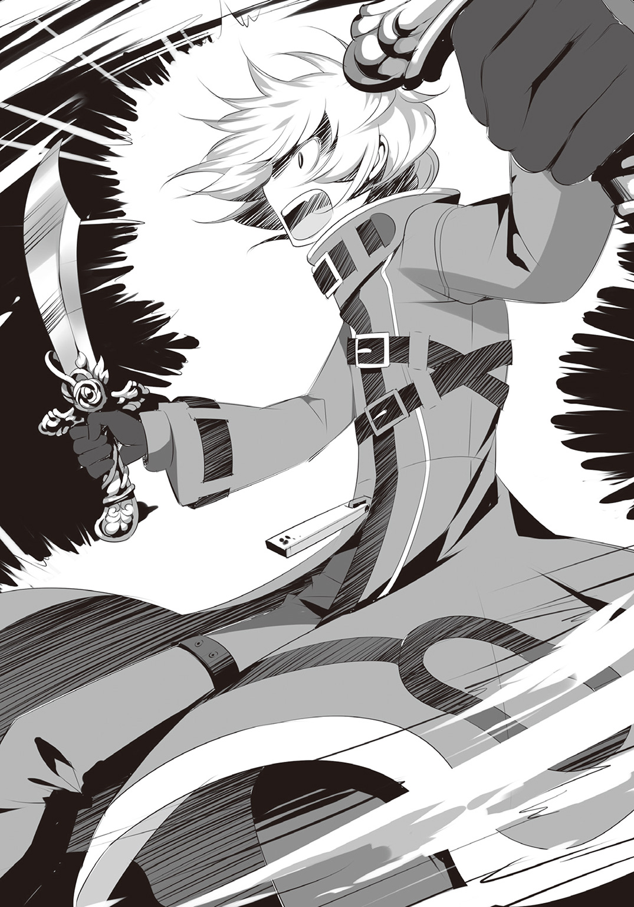
神父が驚嘆の言葉を口にしたその時、全身の急所を余すことなく切り裂かれた異形の魔物は、ゆっくりと床へ倒れ伏し、二度とは目覚めぬ安寧の底へと解き放たれて行った。
「いやいやいやいや......これは実に、お見事！」
神父は高揚を顕にして眼を見開く。配下の合成魔獣を葬られたというのに、動揺している素振りはない。それどころか、神父の頰には嬉々とした色さえ浮かんでいる。
「まさかあの伝説とまで言われた白猫が、こんな身近にいたとはね。私は今、心底驚いて――」
だが、クロには世間話に付き合うつもりなどなかった。神父がぺらぺらと喋っている寸刻の隙に、たった一息でその背後へと回り込み、躊躇なく首を落としにかかる。クロの神速を前にして、神父は一歩たりとも動けない。クロのスピードはそれほどまでに圧倒的。しかし――
キン、と耳ざわりな不協和音が鳴り響いた。
雷をも凌駕するクロの超高速の一撃が、真正面から受け止められたのだ。だが、双剣の刃を阻んだのは神父ではなかった。クロの動きに気がついてさえいない彼には、元よりそんなことは不可能。神父の代わりに彼を守護し、クロの斬撃を弾いたもの――それは、御影石で作られた六つの武具だった。
刀、大剣、斧、槍、槌、鎌――いずれも惚れ惚れするほどの業物である。だが、クロの視線は武器ではなくその使い手に注がれていた。そう、武具を握る不気味な六本の石腕は、神父の〝影〟からするりと伸び出ていたのだ。
「おや？ いつの間に......まったく、話を最後まで聞きもしないとは、失礼な人ですねえ」
遅れてクロの急襲に気がついた神父は、そこでようやく振り返る。
反撃を警戒したクロは、咄嗟に間合いを取った。
「くくく......そんなに怯えないでくださいよ。今、紹介します。彼女こそ、私の......私だけの、〝断罪の女神〟ですよ！」
神父の言葉と共にずるずると、影の奥底から〝ソレ〟が全貌を現した。
異様に細長い六本の腕、のっぺりとした三つの顔、鱗に覆われた大蛇のような下半身、さらにその下は、神父の影と融合しているため目視できない。
――半人半蛇の姿をした、三面六臂の邪神像。
三メートルはあろうかというその石像が、神父を抱擁するかの如く背骨を曲げて前かがみになっているのだ。それはもしかしたら、敬虔な信者を守護する神の御姿に見えるかもしれない。だがクロの直観ではむしろ、姦邪な悪霊が取り憑いているようにしか思えなかった。
「創造具現の異能力......それも――〝泥棒殺し〟の概念、か」
相対しただけでクロにはわかる。これはまともじゃない。常識を超越した尋常ならざる想念から創り出されたもの。蓄積した妄執が長年の時を経て形を成した何か。真っ当な理屈や論理的な手順を踏まえて得られる類の異能力ではない。邪念の塊。死の具現。憎悪と殺意の結晶体。いや、そんな言葉を並べ立てて理解できる範疇のものではないだろう。ただ一つだけ確かなのは、それがこの世に決して存在してはならない歪みであるということ。
「なるほど、それがあんたの本性なんだな」
クロは不敵に笑い、そして――純然たる〝殺し合い〟が始まった。
戦端を開いたのはクロ。床面に放射状のひび割れを残しながら跳躍、瞬時に神父の背面へと回り込み双剣を振るう。音速を優に越えたその神憑り的早業は、放った数十の斬撃が同時に獲物を襲うほど。もはや到底、神父の眼で追い切れる領域ではない。
だが、彼の背後に取り憑いた邪神像は違った。六つの眼球により死角を潰し、不規則な動きには蛇の下半身をくねらせて対応する。そして六つの武具を巧みに操ることで、神父を襲った無数の斬撃をことごとく弾き返したのだ。
驚異的速度で翻弄するクロと、圧倒的手数で対抗する邪神像。互いに決定打を与えられないまま、剣戟だけが相乗的に聖堂を満たしていく。それは終焉の存在しない果てなき拮抗。いつまでも続く完璧な均衡状態かに見えた。が――
キン、とひと際大きな衝突音が響き渡ったところで、クロは不意に攻勢を中断して間合いを取る。それから、ふう、と吐息をついたかと思うと、ぼそりと一言呟いた。
「やってみるか......」
ゆっくりと真上へ掲げられるクロの左手。眉をひそめた神父が見つめる中、クロは唐突に、装着していた射出装置へ魔力を注ぎ込む。そして装置の外装が限界を迎えた時、中から真っ白な何か――アラクネの糸が爆発するように四方へ飛散した。
「一体、何を......？」
瞬く間に教会中に張り巡らされた銀紗の糸。神父は最初、クロの意図が理解できず不審そうに辺りを見回していた。けれど、ある仮説が思い浮かんだ途端、その顔が一瞬にして蒼ざめる。
そんな神父に向けて、クロははっきりと言い放った。
「さて、第二ラウンドといこうか、神父様」
薄光を纏う少年の体が、再び宙空へ舞い踊る。神速の少年と、六腕の邪神像。剣戟を交える役者は変わらず、故に先ほどと同じことが繰り返されるだけかに思われた。......が、それはまったくの見当違い。再び戦端が開かれてから僅か数秒後、双剣の湾曲した刃が神父の右肩をかすめたのだ。それはすなわち、水平に保たれていた均衡がクロの側へ傾いたことを示唆している。そしてその要因は――
「おのれ......糸を足場に......！」
そう、ここは既に白猫の狩り場。そこへ迷い込んだ神父は、哀れな獲物にすぎない。一秒毎に加速しながら、自分のためだけにあつらえられたステージを縦横無尽に跳ね回るクロ。今や空間そのものを掌握した少年に対して、邪神像は六本の腕すべてを防御に回さなければ追いつかない。いや、それでも足りなくなるのは時間の問題だった。右腕、左膝、右肩、左頰......弾き損ねた斬撃により、見る見る神父の体に刻まれる創傷が増えていく。
本能由来の戦闘センス。経験由来の戦闘スキル。そして、両者を支え、束ね、昇華しむる月光の魔力――その瞬間、殊に〝殺す〟能力にかけてなら、クロは神をも凌駕した。
「う――くっ......」
びちゃびちゃと卑しい音を立てて、聖堂のタイルに真っ赤な血が滴り落ちる。クロの鋭い一閃が、ひと際深く神父の脇腹を切り裂いたのだ。致命傷、にまでは至っていない。けれど深刻な手傷を与えたのは確か。――畳みかけるなら、今が好機。
だが次の瞬間、クロは意に反して大きく後退していた。それは頭で考えた判断ではない。一己の生物としての直感が、彼にそうさせたのだ。全身の傷から出血し、クロを捕らえる手立てもなく、内臓にすら達する深手を負った獲物。本来なら勝敗は決したかに思える。しかしクロは、その不気味な薄笑いの奥に身の毛もよだつような何かを垣間見た。
そして事実、神父は敗北を認める気などさらさらなかったようだ。
「ククク......アハハハハ」
クロが更に数メートル後方へと飛び退き、女神像の足元近くまで距離を取ったところで、神父は到底追い詰められた者とは思えぬ、壮絶な高笑いを始めた。
「......なるほど、確かにあなたは強い！ ......が、まだですね。まだ、あなたは恐れている！ 怯えている！ 震えている」
神父は人の心を見透かすようなその眼を、餓えた獣の如くぎらぎらと輝かせる。
「忌まわしき過去から脱却し、新しき未来へと踏み出すあなたのその第一歩......申し訳ありませんが、ここで断ち切らせていただきます！」
そして神父の言葉に、一層不穏な響きが籠もった。
「ねえ、クロ君、本当の奥の手というのは......最後の最後まで隠しておくものですよ！」
神父が張り裂けんばかりに唇を歪ませたその瞬間、邪神像の右肩部がメリメリと隆起し、そこから七本目の腕が現れた。それも、これまでの六本とはまるで様子が違う。ねじまがったその腕は中ほどで枝分かれし、一本の腕から二つの手が生えているというおぞましい形状をしていた。だがそれもそのはず。第七の腕が携えた得物とは、弓矢だったのだから。
「――さあ、守ってみせてくださいよ！ 白猫ォオオ！！！！」
三本まとめてつがえられる石の矢。その鋭利な矢尻の先にいるのは、女神像の前に立つクロではなく、反対方向で呆然とへたり込んでいたマリア。
そして、運命を告げる天上の鐘の如く、厳かに弦が唸る。
三本同時に放たれる音速の矢。大気を引き裂き、無防備な少女へ正確無比に牙を剝く。少女は思わず瞼を閉じた。彼女に許された行為は、それ以外になかったのだ。
けれどマリアが串刺しにされるその刹那、二度、甲高い金属音が響き渡る。恐る恐る目を開いた少女が見たのは、月光を纏う少年の穏やかな瞳だった。
「マリア、怪我はないか？」
クロは屈みこむようにして、へたりこんだままのマリアを気遣う。それはひどく優しくて、死を求めていたはずの少女でさえ、ついお礼を言いかけた。
「は、はい......私は大丈――!?」
だが、マリアはすぐに気づく。その代償として少年が何を支払ったのかを。
「そうか、それは......良かっ......た......」
クロの顔が苦痛に歪み、床にべちゃりと鮮血が零れた。
確かにクロは、一瞬のうちに飛来する矢に追いつき、双剣で弾き飛ばしはした。だが、響いた金属音は二回だけ。放たれた矢は三本だ。こうなれば子供でもわかる簡単な引き算。後一本、矢は残っていたはず。そう、防ぐのが間に合わなかった最後の一本が穿ったもの、それは――
「クロさんっ――!?」
――依頼主を庇い、自ら盾となった少年の右大腿であった。
「はは、やっぱ駄目だな......詰めが甘いって、よくツバキ隊長に怒られてたのに......」
マリアを安心させようとしてか、自嘲気味に呟くクロ。だがその額には玉のような脂汗が浮かび、頰は土気色に澱んでいる。肉を抉り深々と貫通した矢尻の先からは、とめどなく朱い血が滴り落ちていた。
「クロさん、どうして......!?」
「......別に、さっきも言ったろ......お前のためじゃねえよ......」
本人以上に狼狽える少女を突っぱね、クロは踵を返して神父と向き合う。思惑通り事を運ぶのに成功した神父は、喜色満面の表情で少年をせせら笑った。
「ククク......いやあ、まっこと見事。あの位置から、この距離を......本当に、いや本当に強いのですね、あなたは。......ですが、これで勝負はついたようですね！」
いつになく饒舌に語る神父。裏を返せば、それだけ彼が追い詰められていたことを示唆している。けれど今更なんと言おうと、形勢が逆転したことは揺るがぬ事実だった。
「はっ、お互い片足同士、丁度いいさ......！」
勝利の芽が潰えたことを知りながらなお、蒼白な顔で虚勢を張るクロは、歯を食いしばって矢を引き抜いた。途端、傷口からどくどくと紅血が溢れ出る。
「クロさん、動いちゃだめ――」
「......ぐっ......お前は、黙ってろ。......ムア......止血を、頼む......」
主の命に従って、ムアはずるりと傷口へ滑り込んだ。だが、出血を止めたところでちぎれた筋繊維の代わりをするのは不可能。クロの右脚はもうほとんど動かない。......だが、それでもなお少年は、立ちはだかるように少女の前へと進み出る。
そんなクロの背中に、マリアは怒りにも近い感情をぶつけた。
「どうして庇うのっ!? 私は......私は、こんなにも穢れているのに！ 罪人の娘なのに！ もう庇わないで！ 私を置いて、一人で逃げてよ！」
そうして少女は、自身の激情に耐え切れずうなだれる。そんな彼女に背中を向けたまま、クロはそっと、ある言葉を口にした。
「下を向くなよ、マリア。〝未来は前にしか待っていない〟――お前が教えてくれた言葉だろう？」
「でも、それは......」
それは確かに少女が口にした台詞。しかし、元をたどれば別の人物からの受け売りだ。そしてそのことは、クロとて重々わかっていた。
「父親に貰った言葉なんて要らないってか。ならそれは......そのペンダントはどうなんだ？」
クロの問いかけに、少女は握りしめていたペンダントを見つめた。掌の上で輝く、緑と白の美麗な首飾り。かつてはその煌めきを眼にするだけで幸福な気持ちになれていた。けれど、もうあの頃とは違う。ただの純粋な箱入り娘でいるには、色々なことを知りすぎてしまった。今の少女がペンダントを見つめても、その輝きは勇気も元気もくれはしない。それどころか、心臓をきりきりと痛いぐらいに締めつけてくるだけ。
故に、クロへの返答など決まっていた。――こんなペンダントなどいらない。
だがどうしてか、少女はその答えを口に出せなかった。どうしようもなく胸が痛いのに、眼を逸らすことすらできなかった。そんな少女に向けて、クロはある一つの真実を告げた。
「さっきは言いそびれたがよ――そいつは〝偽物〟だ」
少年の言葉を聞いた瞬間、マリアは束の間その意味が理解できずに硬直する。そして呆然と繰り返した。
「......偽......物......？」
「ああ、そうだ。鎖は加圧処理されたイリジウムで、縁は本物によく似たパラミスリル。真ん中のそれは魔術原子変換されただけのただのガラスだし、散りばめられているのは偽装加工された翡翠だよ。......何一つ、あんたの父親が説明した素材は使われていない。本物そっくりに仕立て上げられただけの紛い物さ」
クロが答えた途端に、聖堂に耳ざわりな高笑いが響いた。それはクロのものでもなければマリアのものでもない。大口を開け、唾をまき散らしながら笑いこけていたのは、二人の会話を盗み聞いていた神父だった。
「ククク......あっはははははははは これは傑作だ！ 実の娘に紛い物を渡すとは！ やはり性根が腐りきっていたようですね！ 金の亡者とはまさにこのこと」
己が身を支配する高揚に任せ、好き放題にマリアの父親を揶揄する神父。だが、そんな神父の姿を、クロはくすくすと挑発的に嘲笑った。
「はっ、これだから聖職者ってのはいけねえや。偽物を本物そっくりに仕立て上げるってのは、実際はひどく難しいんだよ。パラミスリルがいくらするか知ってるのか？ ガラスをダイヤモンドに変換してもらうための依頼料は？ 適当な臆測でもの言ってんじゃねえよ。断言するが、その偽物のペンダント、本物の素材を使うよりもずっと金がかかってるぜ......」
すると、神父は表情を強張らせ、不可解極まりないといった様子で首を振る。
「はい......？ は、はは、まったく理解に苦しみますね......あなたの言うことが真実であるとしたら、一体なんのためにそんなことを......ますます意味がわからないじゃないですか!?」
神父のその疑問は、マリアが今まさに抱いていたものと同じだった。一体何のために、何の意図で、何の意味があって、わざわざ精巧な贋作を娘の手に渡したかったのか。
考えたくない。悩みたくない。これ以上、苦しみたくない。
掌のペンダントから視線を背ける少女へ、クロは畳みかけるように問いかけた。
「死ぬ間際の最後の贈り物に、あんたの親父は敢えて価値のないものを送ろうとしたんだ。その意味がわかるか？ その真意がわかるか？」
少年のその問いは、否応なしにマリアをペンダントと向き合わせる。だがそれでも、少女は頑なに目を閉じ、ペンダントを見ようとしない。そんなマリアに、クロはとうとう叫んだ。
「そのペンダントはな、親父さんからあんたに送られた〝サイン〟なんだよ！ 他の誰でもない、あんただけに！ 受け止められるのはあんたしかいないんだよ！ だから......眼を背けるな」
そう言うと同時に、クロは再び神父へ飛びかかる。右脚がほとんど機能していないというのに、その速さはなおも疾風を巻き起こすほど。だがそれも、七本腕となった邪神像の前では遅すぎる。
「往生際が悪いですねえ、クロ君！ あなたはもう敗北したのですよ！」
苛立ちに任せて叫ぶ神父。そしてそれは紛れもない事実だった。
飛びかかる度に弾き返され、斬りかかる度に跳ね返される。まるっきり歯など立たない、一方的な凌辱。だがそれでも、少年はふらふらと立ち上がり、愚直にも勝ち目のない戦いに挑んでいった。まるで、少女が葛藤に終止符を打つための時間を稼ごうとしているかのように。
そんな剣戟を耳にしながら、マリアはじっと、掌のペンダントを見つめていた。
緑と白を基調とした美しい首飾り。その冷たい煌めきを見て、少女はふと眉をひそめる。緑と白、なんの色だっけ？ 答えは簡単だ。緑の葉っぱに白い花――シロツメクサと同じ色調。マリアは夢の野原を思い出す。
『お父さんのことを思ってくれた、その心が何より大切なんだ』
歪な花冠をあげた時、父はそう言った。
なら、これは？ あの花冠が幼い自分の心だったとしたら、このペンダントは父にとって何だったのだろう？ 答えはもう知っている。たった一つのことを、たった一人に伝えるためだけに送られた〝サイン〟――それこそが、ペンダントの役目。
そう、娘に与えたすべてが盗品から成り立っていることに、一番傷つき、苦悩していたのは他でもない父自身。だから最後に、盗品ではない何かを与えたかった。不可能だとは知りながら、罪に汚れていない、真っさらな愛情だけを遺したかった。父は赦してほしくてペンダントを送ったのではない。ただ理解してほしかっただけなのだ。自分の痛切な愛情を。
それを知らぬ振りしていたのは、そっちの方が楽だったから。悪人を父に持ち、その贖罪のために処断される悲劇の少女。そんな役を演じる方が、ずっと簡単だったから。
だけど、目を背けるのはもうやめた。あの〝サイン〟を認めてしまった今、背を向けて逃げるのは、誰でもない自分自身が許せない。血と汚濁に塗れた父親という存在。その奥に隠された、ただ一つの穢れなき愛情を掬い出すのだ。たとえ千の法を破ろうと、たとえ万の人に誹られようと、それができるのは世界で自分だけなのだから――
「いい加減に鬱陶しいんですよ！ 偽物のペンダントに意味などない！ あの男がただ、娘を愛していなかっただけのこと！」
ひと際大きく、神父が吠えた。同時に振り下ろされた石槌が、クロの体を叩きつける。手毬のように二、三度床をバウンドした少年は、またしても立ち上がった。......が、それが限界でもあった。蓄積された疲労とダメージが、とうとうクロの膝を屈させたのだ。
「やれやれ、ようやくですね。......クロ君、どうですか、この状況？」
もはや逃げることすらままならない少年へ歩み寄りながら、神父は勝ち誇ったように尋ねる。クロは返答することもできず、ただ神父を睨んだ。そんな少年に、神父は宣告する。
「あなたはここで死ぬ。――何一つ守れずにね」
その言葉に、クロは愕然と眼を見開いた。少年の脳裏には、いつかの惨劇が克明に蘇る。
鮮血の海、冷めゆく肌、力なく崩れ落ちた少女の白い腕――また、繰り返すのか。考えるだけで、収まっていたはずの震えが少年の体を襲う。
神父は杖を突いて少年に迫りながら、見下すように言い放った。
「恐れることはありません。二人ともきちんと殺してあげます。何も守れない愚図な泥棒屋と、穢れから生まれた不浄な女。はは、お似合いではないですか。さあ、まずはクロ君、あなたからだ。自分の弱さを嘆きながら地獄へと堕ちなさい、無力な泥棒屋よ！」
そして二本の剣が勢いよく振り上げられ......宙空でぴたりと止まった。邪魔が入ったのだ。神父にとっては想定だにしていなかった、小さな小さな妨害が。
クロを庇うようにして神父の前に立ちはだかった人物――それは、もはや迷いも憂いも乗り越え、胸元にペンダントの煌めきを取り戻したマリアだった。
「......どうしました、マリアさん？ 早く殺してほしい、と？」
少女の行動の意味が解せなかったのか、不思議そうに尋ねる神父。そんな神父の瞳を見据えながら、少女はきっぱりと言い放った。
「いいえ。私は死なない。クロさんも殺させない」
ペンダントを胸に今を生きること――それが、苦悶の末たどり着いた少女の確かな結論だった。
「おや？ おやおやおやおや？」
そんな少女を目の当たりにし、神父はきょとんとした驚きの表情を見せる。
「ああ......これはこれは、実に......実に実に実に――失望しましたよ、マリアさん。贖罪は死によってのみ果たされる。あなたは理解してくれたものとばかり思っていたのですが」
「いいえ。違います。それはただ罪から逃げているだけ。赦しを得るのとは真逆の行為です」
毅然として答える少女に向けて、神父は馬鹿げているとばかりに首を振った。
「わからない人ですね......〝赦し〟などというものがこの世界にあるとでも思っているのですか？ 歪み切ったこの世界に？」
「私は、あると信じます」
神父は深い嘆息を漏らした。
「ああ......マリアさん、あなたは大きな大きな勘違いをしている」
そして教説を垂れるかの如く、神父は流麗に語り出した。
「考えてもみなさい。万物を統べる上位存在たる神がいるのなら、この無秩序な混沌都市がなぜ放置されているのですか？ ええ、答えは簡単ですよ。神はもう、とうの昔に我々を見限ったのです。故に〝赦し〟などこの世にはありません。この不浄を集めた混沌都市にあるのは、〝罪〟それのみなのですよ」
仮にも神父たるものが、さも当然の如く神の不在を説く。きっとそれは異常なことなのだろう。だがそれこそ、まさに神父の所論を肯定する確たる証左。反転した世界を暴く究理の舌鋒は、今や己の信仰すら破砕してしまったのだ。
マリアはそんな神父を前にして、怯むことなく声を張り上げた。
「たとえ神様がいなくても、人が人に与える赦しがあるはずです！ 確かに父は罪を犯しました。その行為は償いきれるものではありません。だけど、それでも......私は父の心を赦したい！ たとえそれが罪だとしても、私は私の罪として、赦される道を求めます！」
短い間だが、少女は屋敷を出て色々な人間を見た。良い人、悪い人、その両方な人。だからどうだということはない。そこから世界の真理を見出したなどとのたまうほど少女は傲慢ではないし、世界に真理があると考えるほど愚かでもない。わかることと言えば、世界は広いという、ただそれだけの漠然とした感想だけ。しかしそれ故に、少女は賭けたのだ。この広大で、到底人の足では踏破しきれぬ世界のどこかに、赦される道がきっとある、と。
けれど、少女を見下ろす神父の眼は、どこまでも冷たかった。まるで、そんな輝きを放つ人間など、嫌というほど見てきたとでも言うかのように。そして神父はその眼差しのまま、マリアに一つの問いかけをした。
「ならば問いましょう――どうして、生きているのがあなたなのですか？」
それは実に短い疑問。複雑な定理を応用する必要もないし、数年かけて証明する必要もない。だが、マリアは押し黙るしかなかった。生者と死者とを分かつ理由。年端もいかぬ少女に答えられるはずがない。いや、この世のどこを探したとしても、その答えを持つ者などいるはずがなかった。それは太古の昔から探され続けてきた命題。魔法が跋扈し、超常科学が発達した現在でさえ到達できぬ未開のテーゼ。そしてこれから先もずっと求められ続けるであろう、人間存在すべてに投げかけられた最後の問いなのだから。
神父は沈黙したマリアに向けて、なおも答えのない問いを投げる。
「なぜ、私の娘を奪ったあの男が父親になれたのですか？ なぜ、罪人の娘が生きて、私の娘が死んでいるのですか？ なぜ、ここにいるのがあなたで、私の娘はどこにもいないのですか？ どうして？ どうして？ どうして？ おかしいですよね？ 間違っていますよね？ 壊れていますよね？」
神父はマリアの眼前へと詰め寄りながら、研ぎ澄まされた言葉の刃を振りかざす。湧き立つ疑念、降り積もる疑問、拭えぬ猜疑。行き場をなくした種々の葛藤が、世界に対する不信となって教会中に木霊する。
「教えてくださいよ、マリアさん！ あなたはなぜ〝赦し〟があるなどと言えるのですか!? 世界は――こんなにも――狂っているのに！！！！」
それは神父一人の叫びではなかった。理不尽に苛まれ、不合理に苦しみ、不条理の底に埋没していったすべての亡者が奏でる断末魔の咆哮。――故に、それが凄惨でないはずがない。
「赦し？ 赦しですって？ ――赦せるはずがないでしょう 娘を殺した盗賊も、娘のいないこの世界も、娘を守れなかった私自身も――すべてを許容した神でさえ――みな等しく罪人だ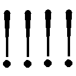」
万物を否定する絶叫が轟き、まるで不可視の天秤を捧げ持つかの如く、神父は高々と両腕を掲げる。呼応するように邪神像がその身をうねらせ、七つの腕すべてが少女に向けて振り上げられた。
「――娘が死んだあの日から、この世に赦しなどない」
一人の父親の哀しき慟哭。迫り来る七つの死。――そんなどうしようもない絶望を前にしてなお、少女はただ、明日の光を見つめていた。
「――私はそれでも、罪を背負って生きていく」
マリアの声が響き渡って――クロの震えがぴたりと止まった。
迸る眩い純白の閃光。すべてが清浄な光に包まれる中、少年の手からありったけの魔力が込められた二本の短剣が放たれた。刹那、見渡す限りの白の世界に、美しい紅の花が咲く――
そうして温かな光の奔流が収まった頃、ぼんやりと視界を取り戻した神父は、何か生ぬるい液体が顔に垂れてくるのを感じた。妙な不快感を覚えながら、神父は顔を拭おうとする。けれどどうしてか、両手とも言うことを聞かない。神父は仕方なく、天へ掲げていた両腕を降ろし、その掌を見た。――いや、見ようとした。だがその行為が完遂されることはなかった。なぜならそこには、あるはずのものがなくなっていたのだから。
「――は、あ――？ アァ、アアアアアアアア！！！！？？？」
肘から先の部分が、綺麗に切断されている。事態に気づいた途端、神父の全身を恐ろしいほどの激痛が襲った。尋常でない痛みに身を縮め、野獣のような唸り声を上げながら数歩後ろへよろめく。腕の断面からとめどくなく溢れ出た鮮血が、びちゃびちゃと卑しい音を立てて床を染めた。
そう、眩い月光に紛れ弧を描いて飛翔した双剣が、邪神像の上半身もろとも、神父の両腕を真っ二つに切断していたのだ。だが――
「ク......クク、クククク......」
再び上げられた血まみれの神父の相貌は、ぞっとするほど凄絶に嗤っていた。
「素晴らしい一撃だ......ですが――仕留め損ねましたねェ」
両腕がちぎれ飛んだにも拘わらず、神父は不敵に微笑む。彼にとっては自分の体などどうでも良かった。泥棒屋を残らず駆逐すること。その殺戮の意思を遂行できさえすれば、肉体の欠損など問題ではない。神父にとっては、自分自身さえ一つの凶器にすぎなかったのだ。
もはや殺戮概念の集合体と化した神父を前に、クロはがくりと跪く。文字通り全身全霊を込めた最後の一撃だったのだ。今や少年には立ち上がるだけの力もなく、月光を帯びていた輝く髪も、ただの黒髪へと戻ってしまった。すべての能力を失い武器すらも手放した少年に、身を守る術はもう、残されていない。
「白猫、確かにあなたは強かった！ だが――世界に選ばれたのはこの私だ！」
神父の背後で、上半身を失った邪神像が痙攣するように蠢く。そして見る間に、その切断面から一本だけ、剣を携えた腕が突き出した。以前の七つと比べると、その腕はひどく貧弱で、触れればたちどころに折れてしまいそうなほどか細い。けれど、逃げることも戦うこともできない今のクロを殺すには、それだけで十分こと足りる。
そうしてギシギシと軋む邪神像の腕が、ゆっくりと振り上げられた。少年を庇うように、その体を抱きしめるマリア。無意味な盾とはわかっていた。それでも彼女は、自分を守り、すべてを捧げてくれた少年を見捨てたくはなかったのだ。
しかし、当のクロは俯いたまま沈黙を貫いている。もはや生きることを諦めたのか、それとも恐怖に口も利けなくなったのか。あがこうとすらせず、素直に無防備な肢体を晒すだけ。
けれど、掲げられた剣が頂点に達したその時、クロは唐突に口を開いた。そこから零れたのは、恨み言でも、罵倒でも、命乞いでもなく、ある一つの問いかけだった。
「......フォルス神父......この世界が狂っていると思うのなら、それでもいい。俺のような泥棒屋や、他のすべてが罪だと言うのなら、それでも構わない。――だけどせめて、あなたを......自分自身を赦すことはできませんか？」
これから自分を殺そうとしている相手に対して、それはあまりにおかしな質問。一命を賭した最後の言葉としては、決して相応しいものとは言い難い。けれどそこに籠められた祈りにも似た感情が、血まみれの神父の心に届いたのだろう。あれだけ荒ぶっていた神父は、偽ることも欺くこともせず、ただ心の内を真っ直ぐに答えた。
「実の娘を救えなかった父親に、贖罪の余地などないのですよ。世界で一番の大罪人は――この私です」
それはいつかの教会で紅茶を振る舞った時と同じ、ぬくもりに満ち溢れた穏やかな声だった。
「終わりですね」
神父が囁くように告げる。マリアはクロを固く抱きしめたまま目を閉じた。クロもそれ以上何かを問おうとはしなかった。
停止した時間の中で、強く脈打つ三つの鼓動。死んだような静寂の中で、微かに響き合う三つの想い。そして、御影石の剣が振り下ろされる。運命を断つ鋏のように。判決を下す小槌のように。生命の最後に降りる終幕のように。
だがその刹那、クロは憐れみを込めた瞳で神父を見上げた。そして、ただ悲しそうな顔をすると、一言だけ、静かに呟いた。
「ああ――終わりだ」
瞬間、神父の頭上に暗い影が落ちる。咄嗟に振り返った神父が眼にしたもの。それは――ゆっくりと倒れかかってくる巨大な天秤の女神像だった。その台座へ視線を向ければ、像を支えていたはずの二本の足が綺麗に両断されている。そう、クロが渾身の力を以て投擲した双剣の真の狙いは、聖堂奥にそびえ立つ女神像だったのだ。
「――どうか、ゆっくり休んでくれ......フォルス神父」
そして、天秤の女神が地に堕ちた。
凄まじい轟音。湧き立つ突風。数十メートルの立像が石床に叩きつけられた衝撃で、聖堂全体がぐらぐらと揺れる。石像と床の破片が際限なく降り注ぎ、砂埃が茫々と巻き起こった。
そのすべてが収まり、聖堂を再び静謐が包み込んだ後、残された人影は二つ。それは、抱き合うように寄り添ったクロとマリア。そしてもう一人いたはずの男の行方は――砕けた瓦礫の下から、じわりと広がっていく真っ赤な血が物語っていた。
無慈悲な殺戮を繰り返し、幾千の命を奪った司祭服の父親は、その大きすぎる天秤に押しつぶされ、一抹の怨嗟も、一節の懺悔も残すことなく絶命したのだった。
「やっぱりこの天秤は、人が扱うには重すぎる......」
倒れた石像を一瞥しながら、クロはそっと呟いた。目と鼻の先には、小柄な少年少女など簡単に押し潰してしまえるぐらい巨大な天秤の支柱がある。もしもあと一歩、二人が神父に近づいていたら、きっと同じように天秤の下敷きとなって命を落としていただろう。二人と神父とを分かったものは何か。単なる偶然か、女神の慈悲か、それとも......
「......っ!? おっと......やべ......」
けれど勝利の余韻に浸る暇などどこにもなく、クロはふらりとよろめくと、そのまま地面に膝をついた。
「クロさんっ!?」
「......すまん......さっきの矢、どうやら毒矢を具現化していたらしい......」
マリアに支えられながら立ち上がったクロは、苦笑いを浮かべて呟く。
「それほどまでに泥棒屋のことを......」
「......あの人のことを、ただの悪人だとは思わないでやってくれ......良いとこも、悪いとこも混じってる......人間ってのは、だいたいそういうもんだろ......」
マリアはこくりと頷いた。それは彼女自身もよく知っていることだから。
「......さあ......とりあえず......ここから出ることを考え――」
痺れる体をどうにか律して言いかけるクロ。だがその言葉は、入り口の扉から響いて来た鈍い低音によってかき消された。
ドスン、ドスン、と重たい何かを思い切り扉へ叩きつけているような、ひどく耳ざわりな音。それに加えて幾つもの遠吠えと血に飢えた呼吸音が響いてくる。その正体に思い当たったクロは、焦りに顔を歪めた。
「くそ......黒妖犬か......！ 主人がいなくなった途端にこれかよ......！」
主の死により自由の身となった獣たちは、真っ先に空腹を満たすことにしたようだ。
「く、クロさん、どうしましょう......!?」
このままでは扉が破られるのも時間の問題。だが、わかっていても扉は一つだけ。他に出口などどこにも......
「......そうだ......！」
切羽詰まって辺りを見回していたクロは、不意に何かを思いついたように顔を上げる。
「神父が使った隠し通路......あそこなら別の階へ通じているはずだ......！」
クロは迷わずマリアを抱きかかえると、右脚の激痛を堪えて駆け出す。
そうしてたどり着いた聖堂の奥、祭壇は粉々に潰れていたが、その脇の隠し階段は辛うじて健在であった。瓦礫のせいで蓋は吹き飛び、半分近く埋もれてはいるものの、人間が滑り込めるだけの余地は十分ある。
「......ぐっ......さあ、マリア......入るんだ......」
痛みに顔を歪めながら少女を降ろしたクロは、そう言って先に行くよう促す。だがマリアとて、甘んじてそれを受け入れるほど身勝手ではなかった。
「待ってください、怪我人のクロさんから......！」
「まったく、お前は心配性だな。この程度の怪我、全然大したことはねえ。ほんの掠り傷さ。俺も後に続くから、さあ、早く行け！」
少女の言葉を遮り、いやに語気を強めて急かすクロ。その理由にマリアは気づいていた。
「だめですよ！ だって、クロさん、上から通路を塞ぐつもりでしょう!?」
確かに隠し通路は無事だった。だが、その蓋はここにはない。通路を塞がぬまま二人して逃げ込んだところで、結局は魔物に追いつかれてしまう。故に、どちらかが残って通路を塞がなければ意味がないことを、マリアは正確に理解していたのだ。
するとクロは、一転して冗談めかしたような表情を取り繕う。
「はは、おいおい、俺は他人のために命張るほどお人よしじゃないぞ。なあに、別ルートからすぐ追いつく。お前みたいな足手まといがいなけりゃ、あんな魔物ども朝飯前ってやつさ」
へらへらと笑いながら饒舌に語るクロ。けれどその顔は、毒と貧血とで死人かと見紛うほどに蒼白そのものだった。
「噓です、噓ですよ！」
「ったく、人を噓つき呼ばわりとは酷い奴だな。本当だよ。心配するな。......さあ！」
そう言うと、クロは強引に少女を隠し階段へと押し込める。いかに衰弱していようとも、マリアの力では抵抗することなどできない。
だがそれでも階段に放り込まれる間際、マリアは精一杯の声で叫んだ。
「それなら、見せてくださいよ！」
悲痛な声で、力の限りに。
「クロさんの〝サイン〟見せてください！ 俺を信じろって、噓はつかないって、絶対いなくならないって、言ってください」
少女が求めるのは、たった一言の約束。しかしクロは何も言わなかった。代わりにただにっこりと微笑んで――マリアを上から突き飛ばした。
「クロさん、いや――」
隠し通路が塞がれて、最後の光が途絶える。そして次の瞬間、聖堂の扉が撃ち破られ、無数の魔物が雪崩れ込んできた。
踏み鳴らされる数千の足音、腹の底に響く低い唸り声。鼻腔の奥を突くむせ返るような獣の臭いが、聖堂中を満たす。それは少年にとって、紛れもない〝死〟の臭い――
「......へへ、絶体絶命、ってやつか。まっ、コソ泥の最期なんてこんなもんだよな......」
クロは虚勢を張って呟きながら、そっと頰の脂汗を拭う。そして初めて気がついた。自分が今、この状況で、実に穏やかな微笑を浮かべていることに。クロはその事実に束の間驚き、それから嬉しそうに瞳を閉じるのだった。
「ああ......そうか、葵、あの笑顔の意味、やっと俺にもわかったよ......」
瞬く間にクロを取り囲む獣の群れ。包囲の輪がじりじりと狭まりゆくその最中に、少年は満ち足りた微笑を浮かべる。そして小さく吐息をついたかと思うと、にやりと口角を上げた。
「よお、兄弟諸君......いや、姉妹もいるかな？ まあどっちでもいいけど......ともかく、そんなに情熱的な眼で見つめないでくれよ」
ひょうひょうと、挑発でもしているかの如く軽薄な口を利くクロ。身を守る武器はなく、全身には毒の気が回り、どこもかしこも傷だらけの満身創痍。立っているだけでもやっとな状態だ。対して彼を囲む魔物は聖堂中を満たしてなお余りある数。誰の眼にも少年の生存は絶望的で、そんな軽口を叩ける心境になれるはずがない。
だが、だというのに、少年は相も変わらず不敵に微笑む。
「熱烈アピールしてくれるとこ悪いが、こっちにはまだ、やらなきゃならねえことが山ほどあってな。悠長に相手してらんねえんだわ。......まっ、そういうわけだから――」
もはや何の力も残っていないただの少年は、それでも堂々と背筋を伸ばし、牙を剝く数千の〝死〟に向けて、誘うように手招きをした。
「――さっさとかかって来いよ、犬っころ――！」
魔物の目が殺意に濁り、四肢の筋肉に力が籠もる。唾液がどろりと床に落ちて、少年に数多の鉤爪が肉薄した。
そして鋭い牙が彼の喉笛を引き裂く寸前――入口の扉が吹き飛んだ。
「どわっ......な、なんだ......!?」
微塵も予期しなかった事態。だが、それはまだ序の口にすぎない。扉から現れたものを見て、クロは我が目を疑った。なにせ、怒濤の如く聖堂に雪崩れ込んで来たそれは――目もくらむほどの金銀財宝だったのだ。しかも、財宝の津波は明確な意思をもって黒妖犬を蹴散らしていく。
そこでようやく、クロは眼前にいるものの正体に気がついた。
「まさか、こいつは......ポルタージェム!?」
そう、現れたのは宝物庫の番人たる巨兵。そしてその頭上で悠々と足を組んでいるのは――
「――うむ、我ながらナイスなタイミングだ」
「さ、サーシャ!? 一体、なんでここに......!?」
ド派手な乱入を決めた銀髪のエルフは、いつも通り余裕たっぷりに笑った。
「なんで、とは御挨拶だね。言っただろう？ エルフにはエルフのやり方がある、と。ふふふ......まっ、私の美しさの前には生物も無生物も関係ないということさ」
絶世の美貌を誇るサーシャの《魅了》は、感情を持たぬはずの悪霊さえ惑わし支配してしまったのだ。その規格外の荒業に、一周まわって呆れ返るクロ。そんな少年に向けて、魅惑のエルフは燃え盛る紅の瞳でウインクした。
「どうだ、いいだろう、この子？ 実にゴージャスで私のペットにぴったりだ。......もっとも、あの女の眷属には敵わないけどね」
サーシャが言い終わるか否かというところで、頭上から凄まじい轟音が響いた。〝天が割れるような〟という比喩がぴったり当てはまるほどの爆音......いや、それは比喩に留まらない。目を丸くするクロの眼前で、本当に天井が割れてしまったのだ。その裂け目から覗くのは、満月が落ちてきたかと錯覚するほどに巨大な琥珀色の双眸――ドラゴンの瞳。
「まったく、どこから聞きつけたのやら。あんなに張り切られたら私の出番がないじゃないか」
サーシャが呆れたように囁く。それが誰のことを指すのかなど聞くまでもない。都市殲滅級のドラゴンを自在に使役できる人間など、クロはこの世でたった一人しか知らないのだから。
「――なんだ、フォーレンのコレクションといっても大したことはないな」
龍の背中から降り立った黒衣の女――ツバキは退屈そうに黒妖犬の群れを睥睨すると、どこからともなく取り出した煙草に火をつけた。
「――食っていいぞ」
その言葉と同時に、ツバキの影が......いや、彼女の影に巣食う極黒の〝何か〟が四方八方へと伸び出した。インクをこぼしたように床一面に広がる影。その昏き闇に触れた瞬間、黒妖犬の体はずるずると影に侵され、飲み込まれていく。――『捕食』されているのではない。影の一部として『同化』しているのだ。
あらゆる存在の境界線を侵し、万物を己と同じ闇へと均質化させる力。そこには善意もなければ悪意もなく、目的もなければ意味もない。ただその行為と結果がある、単なる一つの現象。
その〝影〟が何なのかはクロやサーシャにさえ理解できなかった。ただ一つ確かなのは、それが〝神秘〟の域を越えた〝禁忌〟の存在であることだけ。
そうしてすべての黒妖犬が飲み込まれ、辺りが静まり返った後、ツバキはちらりと少年の方へ視線を遣る。満身創痍ではあるが、確かに脈打つ鼓動がそこにはあった。黒衣の女が何を感じたのかはわからない。だが彼女の唇からは、淡い呟きが一つ、そっと零れ落ちたのだった。
「......私も、今度は間に合ったよ――葵」
誰の耳にも留まらない、小さな小さな独り言。
その響きがゆるやかに虚空へ溶けていった時、不意に世界が輝いた。ドラゴンが開けた天井の亀裂から、一筋の光が差し込んだのだ。――そう、夜明けである。
「ああ......そっか、もう朝か......」
朝の陽ざしを眩しげに見つめながら、クロはぽつりとそんな当たり前な感想を漏らした。
「おいおい、しっかりしておくれ。とりあえず足の応急処置は終わったよ。体の方はどうだい？」
座り込んだクロの右脚に跪き、その治療に当たっていたサーシャが尋ねる。どこまでも肝の据わったこのエルフは、周囲で〝影〟による一方的な虐殺が繰り広げられていたその間も、ただ一心不乱に少年の応急手当を行っていたのだ。
「......ん、痛みも痺れもほとんど取れた。流石だな、お前の薬は......」
「ふん、当然だ。夫の健康管理も妻の役目だからな。ただし無茶はするな。血止めは塗ったがすでに相当量失血していることに変わりはない。あまり動きすぎると気を失うぞ」
「ははは、そいつは遠慮願いたい......」
「大丈夫、大人しくしていれば問題ないさ。......さて、不肖の夫の次は、健気な妾を助けてやらなければな」
そう言って隠し通路へ歩み寄ったサーシャは、蓋代わりに載せられていた瓦礫をいとも容易く放り投げる。その途端、中から泣きはらした眼のマリアが駆け上がってきた。
「うわああん クロさ――あ、あれ？ サーシャ、さん......？」
状況が呑み込めずきょとんとするマリア。さっきまで聖堂を埋め尽くしていた魔物の群れが綺麗さっぱり消え失せ、代わりにサーシャと、向こうの方にはツバキまでいるのだ。戸惑うのも無理はない。そんなマリアに、サーシャは優しく言葉をかけた。
「やあ妾よ、数時間ぶりかな？ それにしても酷い目に遭わされたようだね。まさか我が夫に少女監禁の趣味があるとは。やれやれ、流石の私もドン引きだよ」
「おい、こらっ！ 勝手なこと言うな！」
「口を閉じろ、夫よ。君には後でたっぷり、私の双剣を持っていない言い訳を聞かせてもらう」
「な......お、おい、勘弁してくれ......状況が状況で......」
「なあに、冗談だ。......妾よ、少しの間クロを看ていておくれ。私は双剣を回収してくる」
いつものペースでクロを振り回したサーシャは、マリアへウインクしながら歩み去る。
「ったく、あいつの冗談はきつすぎ......うわっ！」
少しだけ嬉しそうに愚痴るクロだったが、その言葉は力ずくで遮られた。......サーシャが気を利かせて席を外した途端、マリアが勢いよくクロの胸に飛び込んだのだ。
「いでででで！ マリア、ちょっとは手加減を......」
「馬鹿っ！ 噓吐きっ!! 泥棒屋っ」
少年の胸板をばしばし叩きながら、いろんな思いがごちゃまぜになった激情をぶつけるマリア。クロはたじたじになって苦笑する。
「そ、そんなに怒らないでくれよ......まあ最後のは合ってるけど......」
「ううう......心配......したんですよぉ......」
マリアは涙ぐんだ瞳を隠すため、少年の胸に顔を埋めた。彼女がどれだけクロの身を案じていたか、言葉を聞かずともその手を見れば一目でわかる。柔らかな掌の至るところにできた擦り傷。きっと、閉じ込められた後もずっと、瓦礫をどかして少年のもとへ帰ろうとしていたのだろう。クロはそんな健気な少女の背中を、ぎこちない手つきでさすっていた。
そうしてようやく落ち着いたマリアは、少年の胸に顔を埋めたままおずおずと口を開く。
「......あの......クロさ――」
だがその言葉を、クロは上から遮った。
「――ありがとうな、マリア」
「え......？」
「助けてくれて。お前が庇ってくれなけりゃ死んでたよ。......それから、ごめん。俺、お前に散々酷いことを......」
「それ以上言わないでください！」
――今度はマリアがクロを遮る番だった。
「先に言われたら、私が謝りにくくなっちゃうじゃないですか......」
静かに交わる二人の視線。そして、どちらからともなく提案した。
「ならここは『お互い様』ってことで手打ちにしないか？」
「そうですね、おあいこですね」
そうして二人は笑い合う。そんな彼らを見ていると、すべてが悪い夢だったようにも思える。だがこの晩、この旧領主城であったことは紛れもない現実で、変えようのない悲劇。二人共、それはよくわかっていた。けれど、あの悪夢が現実だというのなら、こうして二人、生きて笑い合うこの瞬間もまた現実なのだ。
そしてクロは、二つの現実を嚙み締めながらふと問いかける。
「なあ、マリア、本当にお前の言う〝赦し〟なんてものが、この世に存在していると思うか？」
答えなんてあるはずのない少年の問いに、マリアはぽつりと呟いた。
「〝ここは混沌都市だ。この街にはすべてがある〟」
唐突に持ち出された一節の引用。クロが目を丸くしていると、マリアはふふ、と悪戯っぽく笑った。
「クロさんの言葉じゃないですか。ここは混沌都市。良い物も悪い物も、みんなごちゃまぜになって存在している。なら――その中に〝赦し〟だってあるんじゃないでしょうか？」
確証などどこにもない。解答など誰にもわからない。それでも少女の瞳は、ただ真っ直ぐに前だけを見つめていた。
「でも、もしも......もしもなかったら？ そんなもの、この世のどこにも存在しなかったら？」
クロはひどく弱気な顔で問う。あれほど勇敢に戦った後でなんとも情けない様ではあるが、むしろこっちが少年の臆病な本性なのだ。
「どんなに探しても見つからなくて......それでもし、たどりついた答えが、フォルス神父と同じだったとしたら？」
身に余る悲劇に見舞われ、迷い、苦しみ、彷徨ったその果てに、混沌に飲まれてしまった神父。すべてが混じり合うその中で、最後には何よりも憎むべきフォーレンと同じ存在になってしまった哀しき父親。クロにはその姿が、どうしても他人のものとは思えなかった。あらゆる道はすべて、神父と同じ末路へと続いているようにさえ感じられてしまったのだ。
けれど、マリアの答えは実にあっけらかんとしたものだった。
「それは......その時になってから考えます！」
そのあまりのポジティブさに、クロは呆れを通り越して感心してしまった。そして気づけば、臆病な心はどこかへ吹き飛んでいた。
「はは、やっぱりお前は、どこまでも前向きなんだな......」
「〝前向きなのはいいことだ〟、ですよ！」
マリアは楽しそうにけらけらと笑う。そしてふと真面目な顔をすると、優しくクロを諭した。
「それにクロさんには、後のことを考えるよりもまず探すべき場所があるでしょう？」
少女はそう言って、クロのコートのポケットを指差す。そこから取り出されたのは、とある童女から送られていた一通の手紙だった。あれだけ激しい戦闘の後だというのに、不思議にもその手紙には傷どころか皴の一つさえついてはいない。
「そうか、そうだよな......」
ぽつりと呟いて、少年はまじまじと封筒を見つめた。掌の上のそれは、少年を急かすこともなく、ただ彼が己の意思で自分を紐解くその時だけをじっと待っている。けれど、怖がりな少年はどうしても決心がつけられなかった。情けない困り顔を浮かべながら、ちらりと辺りを見回す。そんな少年に向けて、マリアは元気づけるように微笑み、サーシャはにやにやしながら肩を竦め、ツバキは軽く鼻を鳴らした。少年は再び手紙に視線を戻した。もう迷いはなかった。
手紙の封に手を伸ばし、そっと便箋を取り出す。そして次の瞬間、眼に飛び込んできた拙い文字に、少年は思わず真っ黒な瞳をまん丸くするのだった。
『ばんさんかいのしょうたいじょう』
終 章 三年遅れの晩餐会
クインチェストのとあるあばら家。そこに、鏡台の前で寝癖と格闘するクロの姿があった。右を撫でれば左が撥ね、左を撫でれば右が撥ねる。一度に抑え込もうとすれば、今度はてっぺんがぴょこんと顔を出す。そんな無為な時間を、クロはもう一時間も過ごしているのだ。
と、そこへ、三つの足音がどたどたと家の前の通りを駆けて来た。その正体にいち早く勘づいたクロが、うげえ、と顔をしかめた次の瞬間、慎みも遠慮もなくバーンと扉が開け放たれる。
「おう、聞いたぞクロ坊！」
「なにやら大事な人のところへ行くんだってな！」
「てめえ、そういうことは俺たちにも教えやがれ！」
入って来たのは、いつも酒場で飲んだくれているおっさん三人衆だった。
「お前らノックぐらいしろっ！ ......っていうか、それ、誰に聞いたんだよ」
少年は不機嫌そうな顔を向けるが、内容自体を否定しようとはしない。
そう、一週間前のあの日、フリゲートでの惨劇の後のこと。意を決して紐解いた手紙には、クロを夕食へと招待する内容が記されていたのだ。招き主である桜は、この三年間何度無視されようと、クロに会いたいその一心で招待状を送り続けていたのである。クロは今、遅ればせながらも少女の想いに応えるため、晩餐会に向かう身繕いを整えていたところだった。
「あん？ 誰に聞いたかって？ そりゃもう情報屋の爺さんよ。あいつがタダで何かを教えてくれるなんざ初めてだぜ！」
「あんのジジイ......まーた余計なことを......」
事の元凶を把握して、クロは苦虫を嚙み潰したような顔をする。
「......んで、何の用だよ。俺は忙しいんだ。冷やかしなら帰ってくれ」
寝癖退治に四苦八苦していたクロは、つっけんどんに言い放つ。だが、三人組が浮かべた表情は、いつものへらへらとしたものとは少し違った。
「そうだな、お前さんを笑い物にするってのは魅力的な提案だ。......けど、今日はちげえのよ」
そして言うが早いか、各々持参していた三つの品物を取り出した。
「おら、こいつを着て行きな。いい男にはいいタキシード。常識だろ？」
「おっと、これも忘れるな。女を落とすには綺麗な薔薇って相場は決まってんだ。だろう？」
「いいや、違うね。恋で一番大事なのは胃袋を摑むこと。特に別腹を摑んじまえばこっちのもんよ。こいつを御馳走してやりゃどんな女もイチコロってやつだ」
クロの身長にぴったりな礼服。見るも豪奢な紅い薔薇。甘い香りを漂わせるショートケーキ。差し出されたのは、いずれもそれぞれが選び抜いた極上の逸品だった。
「お、お前ら......」
思わぬプレゼントに、柄にもなく涙ぐむクロ。
「ほら、さっさと用意しやがれ！」
おっさん三人衆もにっこりしながら、その背中を叩いて声援を送った。何やら多少の勘違いはあれど、感動的な一幕。そして数分のお着替えタイムの後......
「......ちんちくりんだなあ......」
「......うん、似合ってねえ......」
「......サーカスにでもいそうだぜ......」
ぴしっとしたスーツに情熱的な赤い薔薇、おまけに甘く香るケーキの小箱を装備した少年が再登場すると、さっきまでのほんわかムードはどこへやら、三人は揃って呆れ顔を見せた。
「......脱ぐ」
「わああ!! 待て待て、冗談だって！」
すっかりむくれてスーツのボタンを外し始めたクロを、三人は大慌てで止める。
「ま、まあ落ち着けって、な？ ......えーっと、あ、そうだ、思い出した！ マスターからお前宛てのメモを預かって来てたんだった。きっと何かのアドバイスだろう。俺が読んでやるよ」
と、花屋が咄嗟に話題を変えると、クロは意外にもすぐに大人しくなった。
「マスターから!? あの人ならきっと......！ 早く読んでくれ！」
期待に胸を躍らせるクロ。寡黙な酒場の主人、なんて、いかにも女性の扱いに長けていそうな職業。となればその助言にも期待が持てるというもの。......が、そうそう思い通りにいかないのが世の常なわけで――
「えーっと、なになに......『ツケが溜まっています。至急お支払ください。Ｐ．Ｓ．先日の机の修理代も上乗せしておきました』......だとよ」
「ぬわああああマスタァァァアア」
クロは地団太踏みながら頭を抱える羽目になるのであった。
「ま、まあ元気出せって。大事なのは服装じゃなく、その中身だろう？ 心さえしゃんとしてりゃあ大丈夫だ」
と、流石にクロを哀れんでか、花屋が慰めを口にする。しかし、その言葉に反応したのはクロではなく他の二人。
「てめえ、なに良いこと言ったみたいな空気だしてんだ！ それは服屋である俺の台詞だろ！」
「ああん？ うるせえ、お前がさっさと言わないから代わりに言ってやったんじゃねえか！」
「だいたいなんでえあの花は！ 気障ったらしいったらありゃしねえ！ ケーキともども返品だ、返品！」
「あっ、俺のケーキにケチつけやがったな!? それを言うならてめえのスーツだって地味すぎんだろうが！ 生地選びから出直しやがれ！」
などと、いつもの口喧嘩が勃発する。げんなりしているクロと、何をしに来たのやらわからない三人衆。そんな混沌とした惨劇の最中、またしても扉が開け放たれた。
「――はあ、はあ......ま、間に合いましたか......？」
息せき切らして現れたのは、クインチェストの街に不釣り合いなほどの美少女――マリア。だが、初めてこの戸をくぐった時とは随分様子が変わっていた。手入れの行き届いていた長髪は肩のあたりでばっさりと切られ、身に纏った衣服も高価な品ではない。そして何より、胸元のペンダントがどこにも見当たらなかった。ただそれでも、美しい黒の瞳だけは以前と変わらず魅力的に輝いている。
そんな少し大人びた少女は、クロの礼服姿を見て開口一番言い放つのだった。
「わあ、ここまで正装が似合わない人初めて見ました！ やっぱりクロさんはすごいですね！」
「ぐぎぎ、お前は本当に......相変わらずだな」
失礼な御挨拶に歯ぎしりするクロ。けれどマリアは何のことだかわからないといった様子で首をかしげるばかり。そんな少女の様子を見て、クロは諦めたように頭を振った。
「いいや、なんでもない。......それより大丈夫なのかよ、仕事の方は？」
すると、マリアは元気に答える。
「はい。子供たちに事情を説明したら、『行っていいよ』って。みんな優しくて良い子です！」
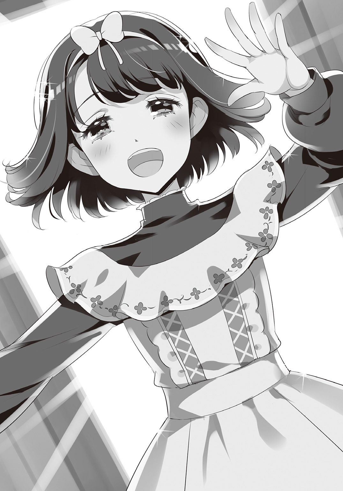
そう、変わったのは風貌だけではなかったのだ。彼女はもう箱入り娘のお嬢様ではない。あの一件の後すぐ家財道具を売り払い、会社を信頼できる社員たちに任せ、自分は単身で神父が読み書きを教えていたという養護施設にて働き始めたのである。
「上手くやってるみたいだな。でもよお、財産全部処分しちまうことはなかったんじゃねえか？」
「いいんです。財産なんてなくたって、私には父がくれたこの体がありますから」
マリアは潑剌と笑った。どれだけ質素な格好に身をやつそうと、少女の放つ太陽のような明るさは全く曇らない。いやむしろ、彼女のそんな輝きは今まで以上に魅力的になっていた。
「先はまだまだ遠いですが、子供たちと一緒に、少しずつ歩んで行きたいと思います」
遙か遠くへ続く贖罪の道。その先に何が待ち受けるのかは誰も知らず、果てがあるのかすらもわからない。けれどマリアは一歩ずつ進むのだ。ゆっくり、確実に、決して振り返ることなく――
クロはそんな少女の姿に、運命にさえ打ち勝つ強さを見た。
「......ああ、お前ならその先へ行けるだろう。きっとな」
「はいっ！」
と、眩い笑顔を弾けさせたマリアは、それからふと、とても大事なことを呟く。
「あ......そういえば、言い忘れてました。外でツバキさんが待ってましたよ。すごく苛々した様子でしたけど」
「うげっ、やべ！」
そうして取っ組み合い中の三人衆を置いて外へ駆け出せば、家の前で待っていたのは苛々と煙草をふかしている元上司と、なぜか呼んでもいないエルフの姿。その上、二人の背後には、琥珀色の双眸を煌めかせた数十メートル級のドラゴンまで控えている。
「遅いぞ......って......お前、仮装パーティにでも行くつもりか？」
「ぶふっ！ ......や、やあ旦那様よ......くくく......じ、実に似合って......くふふっ......！」
クロの姿を見るなり、揃って唇の端をひくつかせる二人。更には後ろのドラゴンまでもが巨大な頭部をもたげて覗き込んでくる。真ん丸な琥珀の瞳にじーっと見つめられ、思わず後ずさりするクロだったが、すぐに奇妙な既視感に気づいた。
「......ん？ そういや、お前、どっかで会ったか？」
と、クロは首をひねる。六枚の翅を持つそのドラゴンに見覚えがある気がしたのだ。そう、旧領主城で助けられるよりも少し前、ひょんな事情から夜空を飛んでいた時なんかに......
「ああ、そいつか？ つい最近捕まえたやつだ。少し大きかったので縮めたがな。......いいから早く乗れ。遅れるぞ」
そうしてドラゴンに乗ったクロとツバキ、サーシャに加えて、ちゃっかりついてきたマリアという四人組は、混沌都市の街並みを遠望しながら夕空を往く。
科学、魔術、亜人、ロボット......あらゆる文明とあらゆる時代が交錯するこの都市には、どうやったって統制など見いだせない。けれど、ぐちゃぐちゃになってそれらが混在できているというその事実が、本当は何よりの奇跡なのかもしれないと、クロはふと思った。
「こうして離れて見る分には悪くないもんだな、この街も」
感傷的に呟くクロ。だが、そんな背伸びした感慨に耽っていられるのもそう長くはなかった。
「俺たち人間ってのは、世界から見ればこんなにもちっぽけで――って、なんだ、ありゃ!?」
おセンチな気分を味わっていたクロの眼に飛び込んで来たのは、どこかで見た覚えのある建設会社の超高層ビル。けれど、とある少年に起因する大爆発のせいで更地となっていたはずの屋上には、既に新しいやぐらがそびえていた。それも、ただ建て直されただけではない。前回吹き飛んだものの優に数十倍を超えるサイズの巨大やぐらである。無論、それだけでも十分驚きに値するが、クロの度肝を抜いたのはやぐらのてっぺんに括りつけられていたあるもの――そう、轟々と風にたなびく超ド級の特大社旗だ。その桁外れの規模ときたら、クインチェストの街をすっぽり覆ってなお余りあるほどであった。
「あれ？ クロさん知らないんですか？ デイダラ建設っていう建設会社ですよ」
「い、いや、そりゃわかってるが......あ、あのやぐらと旗はなんだ!?」
「最近新調したそうですよ。つい先日、正式に特許を取得した火薬が巷で大人気とかで、莫大な使用料収入が入ったんですって。それを全てあのやぐらと社旗に注ぎ込んだそうです。この前テレビで取材してました。なんでも、少し前にわるーい泥棒屋さんに盗まれちゃったらしくて。今度は絶対に盗まれないように、大きさも重さも百万倍にしたそうです。インタビューの最後には宣戦布告もしてましたよ。『やい糞餓鬼、盗れるものなら盗ってみやがれぇ！』って」
まさかの超物理的な盗難対策。これではいかな伝説の白猫といえど盗みようがない。その安直を通り越してむしろ奇抜な発想に、クロは呆然と呟くしかなかった。
「――め、めちゃくちゃだ......」
それから数分。流星の如く天を駆けたドラゴンは、とある農村の小さな家へと降り立った。ここが今回の目的地、桜の住む家なのだ。しかし、手土産を携え龍の背中から飛び降りたクロは、まるで生まれたての小鹿のように覚束ない足取りでしか歩けない。がちがちに緊張したまま数分かけて戸口の前に到着したものの、今度はノックをしようと持ち上げた手の震えが収まらず、またも無為な時間が経過する。そうしてとうとう痺れを切らした元上司に舌打ちを浴びせかけられたクロは、ようやく決意を固めて扉を叩いた。
とんとんとん。弱々しく響くノックの音。クロは住人が出てくるまでの間に今一度深呼吸を試みるが、残念ながらその目論見は失敗に終わった。何故なら、神速を誇るクロが呼吸をするよりも先に、ばーんと扉が開かれたからだ。
中から現れたのは、小柄な幼い女の子。その可愛らしい顔立ちに葵の面影を見た途端、クロの胸中でまた申し訳なさが溢れた。手紙を無視し続けたこと。金だけ送りつけて頑なに避けていたこと。そして、大切な姉を守れなかったこと。謝らなければならない負債があまりに多すぎる。葵の妹を前にして、クロは改めてそれを痛感した。――だがそれでも、一歩踏み出さなければ。クロは逸らしかけた視線を少女に向けると、震える唇を開く。
「ご、ごめんなさいっ！ 俺は、君のお姉さんを――」
けれど頭を下げようとしたその時、少女の甲高い声がそれを遮った。
「わああ！ 綺麗なお花だあ！」
「――守って......あ、え......？」
「私にくれるの？ わぁい！ ありがとう！」
「あ、ああ......それは勿論......」
「あー！ こっちはケーキ!? やったあ!! ほら、入って入って、おにいちゃん！」
「え、あ、失礼します......」
思わぬ反応に戸惑うクロの手を引いて、桜はぴょんぴょん跳ねながら中へと招き入れる。そして向かった居間の戸口には、一人の老婆が立っていた。それなりに齢を重ねてはいるが、背筋をしゃんと伸ばし、じっとクロを見つめている。クロはまたあの罪悪感に苛まれ、頭を下げようとした。けれどその前に、老婆は相好を崩してにっこりと微笑む。
「ようこそ、さん。あの子から、いつも話は聞いていました。あなたのことを弟のようだと、ペアを組むことになってから、毎日が楽しいと、そう言っていました。......私も、あなたが最後に孫を看取ってくれて、良かったと思っています。警務部での孫のこと、聞かせていただけますか？」
老婆の声はどこまでも優しく、まるで本当の家族に対するような口ぶりだった。クロは何も言えなくなって、ただ小さく頷いた。
「おにいちゃん？ どうして泣いてるの？」
「......いいや、なんでもないよ......」
「さあ、さん、どうぞこちらへ。娘から好物は聞いています。まずは温かいミルクを飲んで落ち着いてくださいな。話は、それからゆっくり」
「こっちだよ、おにいちゃん！」
少年は泣き笑いしながら居間への扉をくぐる。旧領主城の広間のように豪華ではないものの、柔らかな温かみの溢れた小さな会場。少年にとっては、そっちの方がずっと好ましい。
少年は手を引かれるがまま、用意されていた席に腰かける。隣に座った桜がじゃれついてきて、老婆が微笑みながらスープをよそった。それはきっと、どこにでもある穏やかな団欒。けれどかけがえのない、どんな宝物よりも貴重な、人のぬくもり。少年はただ、心から楽しげに笑った。
そんな少年を見て、テーブルに飾られた葵の花が、そっと微笑んだ気がした。
あ と が き
初めまして、間宮真琴と申します。
此度は拙作をお手に取っていただき、誠にありがとうございます。
このページはあとがきということですが......普段『あとがき読まない派』の自分があとがきを書くのはなんだか変な気分です。そもそもあとがきを読みたがる読者というのは本当に実在するのでしょうか？
とまあこのページの存在意義を揺るがす疑問は忘れるとして。まずはデビュー作定番の受賞時振り返りですが、とにかく不安だらけでした。というのも、応募前に友人に試読してもらった感想が「これが一次選考通ったら焼肉おごるわ」の一言。それも自信たっぷりに断言されました。普段ドケチな彼の言葉だけにダメージ甚大。悔しいけれど反論の余地もなく「ま、まだわかんないから......」とか震え声を出すのが精一杯でした。（ちなみに焼肉はちゃんとおごってもらいました。おいしかったです）
そんな経緯から、皆様に楽しんでいただけたかは割と気にしています。『泥棒屋はとんでもないものを盗んでいきました。あなた（読者）の時間です』なんてことになっていないと良いのですが......
次に、定番の自作解説いきましょう。
本作は『ルパン三世』をラノベの方法論で書きたいと思ったことが始まりです。媒体の差から憧憬型主人公は使えなかったので、まずは主人公の頭身を下げました。併せて、照れを排除するため世界観そのものをコテコテに戯画化しました。あとは主人公（クロ）から伸ばした縦と横の軸線上にヒロイン（マリア）とラスボス（一応伏せます）を配置し、広義の貴種流離譚のテンプレートに則って進行させて完成です。サブヒロインであるサーシャがたくさん登場していたのは、彼女だけシナリオ構築上の役割を持たない自由なキャラクターだったからです（なので、実は彼女を除外してもメインストーリーに大きな変化はないかも）。ただ、役にとらわれない分心理面での存在感は大きく、舞台を支える不可欠な柱でした。また、『自分がサブヒロインである』というある種メタ的な自覚を持っていてなおそれを受け入れるなど、恋愛的側面を一手に担ったキャラでもあります。同様に、主人公の元上司（ツバキ）も舞台装置としての役割は薄めですが、彼女はラスボスとは違う意味で主人公の対照となる位置にいます。主人公を苛むのが子供の苦悩ならば、彼女が抱えるのが大人の苦悶です。
......えー、ここまで読んで「もしかして俺、違う作品のあとがきを読んでいるのでは？」と表紙を確認された方、安心してください。残念ながらこれは泥棒屋のあとがきで合っています。無情なるかな、思索と実践の間には往々にして悲劇的な乖離が生じやすいものなのです。世界は残酷ですね。
それではお次、格好つけた小難しい話は抜きにして私の好きなキャラについて語ります。（ばれているかもしれませんが）私はムアが一番好きです。さっきの『ルパン三世』の話でいくと次元役にあたる相棒ポジションですね。ダンディーです。これは持論ですが、変幻自在の金属生命体ほどカッコイイものはこの世にありません（ターミネーターの話ではないです）。そんなわけでよーく読み返せばだいたいの問題をムアが解決しちゃってます。潜入からピッキングから戦闘からなんでもこなし、ちゃっかり女の子の胸に飛び込むラッキースケベまで完備。これもはや主人公じゃん。よし、次回作のネタができたな。ハリウッドデビューしたらムア役はシュワちゃんでよろしく。
と、そうこうしているうちにページ数が迫って参りました。そろそろ締め括りとして謝辞へ移らせていただきます。
まずは担当のＯさん。プロの目線からいただけるアドバイスは大変勉強になります。実力不足故に応えられないことも多く、自分でも歯がゆいですが、これからもどうぞよろしくお願いします。次にダッシュエックス文庫の皆さんおよび第三回新人賞の選考に携わった皆様。このような身に余る機会をいただいて感謝の言葉もありません。今すぐには無理ですが、いつかこのご恩返しができればと思います。続いて家族へ。大事に育ててくれたのに、こんな明日も見えない職に就いてしまい申し訳ないです。ただそれでも、これが私の何よりやりたかったことです。もう少しだけ甘えさせてください。主に金銭的な意味で。ついでに友人たち。おうＦ、次は回らない寿司だからな。あとＷ、お前さっさと二千円かえせよ。
それからイラストを担当してくださったＥＲＩＭＯ様。素敵な絵を本当にありがとうございます。つらい改稿作業を乗り切ることができたのは、ＥＲＩＭＯ様のイラストがあったからです。徐々にあがってくる挿絵のラフが何よりのモチベーションでした。
そして最後に、一番の感謝を読者の皆様へ。このつたない作品をお手に取っていただき、本当の本当にありがとうございます。くだらないことをだらだら書いてきましたが、本心から伝えたいのはこの感謝の言葉だけです。
もし次の作品もまた読んでいただけるのであれば、もっともっと皆様に楽しんでもらえるような物語をお見せしたいと思います。
それではまたどこかでお会いしましょう。
お付き合いありがとうございました。
間 宮 真 琴
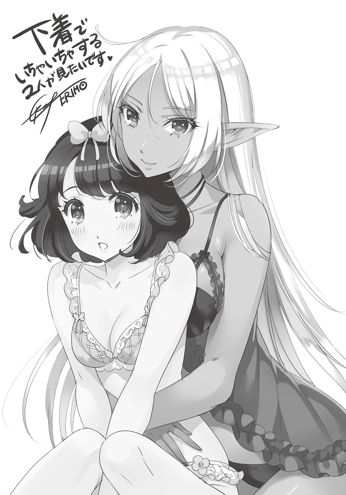
著者紹介
間宮真琴 まみや まこと
長野県民です。
スキーよりもソリが好き。
イナゴは食べ物ではなく虫。
『信濃の国』はサビまでなら。
善光寺のおみくじでは転職を勧められました。
illustration
ERIMO えりも
フリーのイラストレーター兼一児の母。
書籍・ラノベ・ゲーム等のイラストをメインに活動中。
可愛い女の子を見る事、描く事、応援する事が大好きでアイドルが日々の糧。最近はオリジナルアイテムや、スイーツ下着等の製作にも力を入れている。
ダッシュエックス文庫DIGITAL
混沌都市の泥棒屋
著者 間宮真琴
© MAKOTO MAMIYA 2017
２０１７年３月31日発行
この電子書籍は、ダッシュエックス文庫「混沌都市の泥棒屋」
２０１７年２月28日発行の第１刷を底本としています。
発行者 鈴木晴彦
発行所 株式会社 集英社
〒１０１－８０５０
東京都千代田区一ツ橋２丁目５番10号
０３－３２３０－６０８０（読者係）
制作所 株式会社ＩＣＥ
本作品の全部または一部を無断で複製、転載、改竄、インターネット上に掲載すること、および有償無償に関わらず、本データを第三者に譲渡することを禁じます。なお個人利用の目的であっても、コピーガードを解除しての複製は、法律で禁じられています。